VMM – příprava na zkoušku · Celá skripta – VMM · https://balnerm.github.io/pripravy/vmm/skripta_vse.html
Vícerozměrné metody – příprava na ústní zkoušku
Skripta pokrývají všech 11 přednášek kurzu VMM. Důraz je na principy a logiku: proč metoda existuje, jak „uvažuje“, co znamená každá proměnná ve vzorci a co si odnést z obrázků. Definice zpaměti nejsou cílem – cílem je umět metodu vysvětlit vlastními slovy.
Jak skripta používat
- Každá kapitola odpovídá jedné přednášce a má stejnou stavbu: motivace → přesná Definice pojmu → princip (Intuice) → postup (Postup) → vzorec s vysvětlenými proměnnými (Vzorec) → příklad (Příklad) → obrázek s Co si z obrázku odnést.
- Rámeček Definice má dvě části: první větu, kterou lze u zkoušky říct jako definici, a pod čarou „Jinými slovy“ – co pojem znamená prakticky. Všechny definice najdeš pohromadě ve Slovníku pojmů.
- Rámečky Častá past upozorňují na typické chyby a chytáky, Jak to říct u zkoušky nabízí formulaci odpovědi.
- Na konci každé kapitoly je shrnutí, take-home messages a otázky ke zkoušce s rozbalovací modelovou odpovědí. Doporučení: nejdřív odpověz nahlas sám, pak rozbal.
- Ukázky „Vyzkoušej si“ jsou interaktivní – posuvníky a tlačítka ukazují, jak metoda reaguje (PCA, k-means, perplexita, UMAP graf…).
- PDF na tablet: tlačítko PDF v horní liště stáhne aktuální stránku jako PDF (A4, rozbalené odpovědi, bez interaktivních ukázek). Na této úvodní stránce stáhne celá skripta v jednom PDF. PDF se vytvářejí automaticky při každé změně na GitHubu.
- Poslední stránka Srovnání metod a tahák shrnuje, kterou metodu kdy použít, srovnávací tabulky a nejdůležitější vzorce.
Závěrečná zkouška je ústní, za max. 80 bodů, ve dvou částech po 40 bodech; z každé části je potřeba aspoň 20 bodů a celkem (s projektem za max. 20 bodů) aspoň 50 bodů.
Mapa kurzu: jak témata navazují
Dvě velké otázky celého kurzu: které objekty k sobě patří (shlukování – pracuje s řádky matice) a jak data popsat menším počtem nových proměnných (ordinační metody – pracují se sloupci). Obě potřebují dobře připravená data a obě stojí na pojmu vzdálenosti/podobnosti a na kovarianční struktuře.
Kapitoly
Obrázky jsou vygenerované skriptem z dat se stejnou strukturou jako příklady z přednášek (u PCA přímo z datasetu spotřeby proteinů z přednášky 6 – vlastní čísla odpovídají slidům). Vzorce se vykreslují knihovnou KaTeX z internetu; bez připojení zůstanou čitelné jako zdrojový zápis.
Přednáška 1
Úvod do analýzy vícerozměrných dat
O co v celém předmětu jde: máme mnoho objektů (pacientů, vzorků, záznamů) a u každého mnoho měřených vlastností. Chceme z té tabulky čísel vytěžit strukturu – co spolu souvisí, které objekty jsou si podobné, co je podstatné a co jen šum. Tahle kapitola dává „mapu“, do které pak zapadají všechny další metody.
Proč vůbec data sbíráme
V biomedicíně sbíráme data ze tří hlavních důvodů:
- Popis objektu – pacienta popíšeme souborem jeho vlastností (věk, tep, teplota, tlak…). Ideálně číselných, protože s čísly umí pracovat počítač.
- Modelování struktury nebo funkce – např. jak funguje buňka, tkáň, orgán.
- Rozhodování – diagnostika („má pacient sepsi?“), volba léčby, predikce rizika.
Ve všech třech případech platí, že jedna vlastnost obvykle nestačí. Sepsi nepoznáme jen z teploty – potřebujeme teplotu, tep, dechovou frekvenci, tlak… a hlavně to, jak spolu tyto hodnoty souvisí. To je důvod, proč existují vícerozměrné metody.
Vícerozměrná data jsou data, kde je u každého objektu změřeno současně více proměnných (\(p > 2\)). Vícerozměrná analýza je soubor statistických metod, které tyto proměnné zpracovávají současně – včetně vztahů (kovariancí, korelací) mezi nimi – místo aby každou analyzovaly zvlášť.
nedíváme se na pacienta po jednotlivých číslech, ale na celý jeho „profil“ najednou. Podstatné je, jak spolu čísla souvisejí – a to vidí jen metoda, která má všechna čísla v ruce zároveň.
Typy dat – a proč na nich záleží
Typ proměnné určuje, jaké operace s ní mají smysl, a tím i jaké metody smíme použít.
Proměnná (příznak, znak, feature) je měřená nebo zaznamenaná vlastnost objektu, která se mezi objekty liší – např. věk, tep, krevní skupina. Hodnoty jedné proměnné u všech objektů tvoří jeden sloupec datové matice.
otázka, kterou položíme každému pacientovi („kolik vám je let?“). Odpovědi všech pacientů na tutéž otázku jsou jedna proměnná.
Kvantitativní (číselná) proměnná vyjadřuje množství – její hodnoty jsou čísla, se kterými má smysl počítat (sčítat, průměrovat). Může být spojitá (libovolná hodnota z intervalu: teplota) nebo diskrétní (jen oddělené hodnoty, typicky počty). Kvalitativní (kategoriální) proměnná vyjadřuje příslušnost do kategorie – její hodnoty jsou značky, i kdyby byly zapsané čísly.
kvantitativní = „kolik“, kvalitativní = „jaký / do které skupiny“. Test: dává smysl hodnoty zprůměrovat? Průměrný věk ano, „průměrná krevní skupina“ ne.
Nominální proměnná má kategorie bez přirozeného pořadí (krevní skupina). Ordinální proměnná má kategorie s přirozeným pořadím, ale bez definované vzdálenosti mezi nimi (stadium I, II, III). Binární (dichotomická) proměnná má právě dvě kategorie (ano/ne).
u nominální umím říct jen „stejné / jiné“; u ordinální navíc „víc / míň“, ale ne „o kolik“ – rozdíl mezi stadiem I a II nemusí být stejný jako mezi II a III.
| Skupina | Typ | Příklad | Co s tím jde dělat |
|---|---|---|---|
| Kvantitativní (číselná) | spojitá | tělesná teplota, tlak, BMI | průměr, rozptyl, korelace, rozdíly |
| diskrétní | počet dětí, počet tepů za minutu | průměr dává smysl (2,3 dítěte jako průměr), jednotlivá hodnota jen celé číslo | |
| Kvalitativní (kategoriální) | nominální | barva očí, krevní skupina | jen „stejné / jiné“, četnosti; žádné pořadí |
| ordinální | míra únavy (žádná / mírná / silná), stadium nemoci | pořadí ano, ale „vzdálenost“ mezi stupni není definovaná | |
| binární (dichotomická) | pohlaví, sepse ano/ne | dvě kategorie; často kódujeme 0/1 |
U číselných dat se ještě rozlišuje intervalová a poměrová škála. Rozdíl je v tom, zda má nula „fyzikální“ význam:
- Intervalová – teplota ve °C: rozdíl 10 °C → 20 °C je stejný jako 20 °C → 30 °C, ale 20 °C není „dvakrát tepleji“ než 10 °C (nula je dohodnutá).
- Poměrová – hmotnost, počet dětí, teplota v kelvinech: nula znamená „nic“, takže poměry dávají smysl (4 děti = dvakrát víc než 2).
Intervalová škála je číselná škála se stejně velkými kroky, ale s nulou zvolenou dohodou; smysl mají rozdíly hodnot, ne jejich poměry. Poměrová škála má navíc přirozenou (absolutní) nulu, která znamená nepřítomnost veličiny; smysl mají rozdíly i poměry.
na poměrové škále smím říct „dvakrát víc“, na intervalové ne. 20 °C není dvakrát tepleji než 10 °C, ale 20 kg je dvakrát víc než 10 kg.
Zakódovat kategorie čísly (modrá = 1, hnědá = 2, zelená = 3) a pak s nimi počítat jako s čísly. Počítač pak „věří“, že zelená je třikrát víc než modrá a hnědá je mezi nimi. Proto se nominální proměnné převádějí one-hot kódováním (přednáška 3).
Čím víc dat, tím líp?
Ne nutně. Každá proměnná by měla splňovat tři požadavky (validita a relevance jsou žádoucí, redundance nežádoucí):
- Validita – měří opravdu to, co si myslíme, a správně (BMI 94,75 je spíš chyba měření než pacient).
- Relevance – souvisí s otázkou, kterou řešíme (barva auta pacienta sepsi nepredikuje).
- Redundance – nenese stejnou informaci jako jiná proměnná (výška v cm a výška v palcích). Redundance komplikuje modely (multikolinearita) a je důvodem pro redukci dimenze.
Validita proměnné znamená, že měří skutečně tu vlastnost, kterou měřit má, a to správně. Relevance znamená, že proměnná souvisí s řešenou otázkou. Redundance znamená, že proměnná nenese novou informaci, protože je (téměř) určena jinými proměnnými.
dobrá proměnná měří správně, k věci a něco nového. Redundantní proměnná je „ozvěna“ jiné proměnné – nic nepřidá, ale komplikuje výpočty.
Typ proměnné určuje povolené operace. Víc proměnných pomůže jen tehdy, když jsou validní, relevantní a ne zbytečně redundantní.
Zdrojová matice dat
Všechno v předmětu začíná zdrojovou maticí: tabulkou, kde řádky = objekty (pacienti, vzorky) a sloupce = příznaky (proměnné, vlastnosti, „features“). Značíme ji \(X\) o rozměru \(n \times p\): \(n\) objektů, \(p\) příznaků.
Zdrojová matice \(X\) je obdélníková tabulka o \(n\) řádcích a \(p\) sloupcích, ve které prvek \(x_{ij}\) je hodnota \(j\)-té proměnné naměřená u \(i\)-tého objektu. Řádky odpovídají objektům (pozorováním), sloupce proměnným.
„Excelová tabulka“ dat, kde každý pacient má svůj řádek a každá měřená vlastnost svůj sloupec. Všechny metody předmětu dostávají na vstup právě tuto tabulku.
Dimenze (rozměrnost) dat je počet proměnných \(p\), tj. počet souřadnic, kterými je popsán každý objekt. Objekt je pak bodem v \(p\)-rozměrném prostoru, jehož osy jsou jednotlivé proměnné.
kolik čísel potřebuju, abych popsal jednoho pacienta. Se dvěma čísly (věk, tep) ho nakreslím jako bod do roviny; se 7 čísly je to bod v sedmirozměrném prostoru, který už nakreslit nejde, ale počítat s ním ano.
Dvě důležité představy, které se budou vracet celý semestr:
- Objekt = bod v prostoru. Pacient s \(p\) změřenými hodnotami je bod v \(p\)-rozměrném prostoru. Podobní pacienti jsou blízké body. Na téhle představě stojí shlukování, PCA, t-SNE i UMAP.
- Sloupec = proměnná s nějakým rozdělením. Každý sloupec má svůj průměr, rozptyl, tvar rozdělení; dvojice sloupců mají kovarianci/korelaci.
Od 1D k mnoha rozměrům
Přednáška to ukazuje postupným přidáváním sloupců:
- 1 proměnná (věk) – histogram, průměr, rozptyl. Snadné.
- 2 proměnné (věk, tep) – bodový graf, je vidět vztah.
- 3 proměnné – 3D graf, ještě se dá otáčet a dívat.
- 7 a více – už nelze nakreslit. A přesně tady potřebujeme vícerozměrné metody: buď dimenzi zredukovat na 2–3 rozměry, které nakreslit jdou, nebo strukturu najít výpočtem (shluky, korelace, faktory).
Data = matice \(n \times p\). Řádek = objekt = bod v \(p\)-rozměrném prostoru. Lidské oko zvládne 3 rozměry, metody VMM zvládnou libovolně mnoho.
Proč nestačí analyzovat proměnné po jedné
| Přístup | Počet proměnných | Princip |
|---|---|---|
| Jednorozměrné metody | 1 | Každou proměnnou zkoumáme zvlášť a závěry „skládáme“ dohromady intuitivně → zdroj chyb. |
| Dvojrozměrné metody | 2 | Zkoumáme dvojice: vztah, korelace. |
| Vícerozměrné metody | > 2 | Všechny najednou: vztahy mezi proměnnými a skupinami proměnných, rozdíly mezi subpopulacemi, přesnější kvantitativní závěry. |
Představ si dvě skupiny pacientů, které se v tepu ani v tlaku samostatně skoro neliší. Když ale nakreslíš tep proti tlaku, skupiny leží každá na jiné straně „úzkého mraku“ – kombinace obou proměnných je oddělí dokonale. Jednorozměrný pohled tuhle informaci principiálně nemůže vidět, protože je ukrytá ve vztahu (korelaci) mezi proměnnými. Přesně tohle ukazuje obrázek v kapitole o Hotellingově testu.
Druhý důvod je statistický: když testujeme 20 proměnných zvlášť, každá na hladině 5 %, je téměř jisté, že nějaká „vyjde“ náhodou (problém mnohonásobného testování). Vícerozměrný test položí jednu otázku pro všechny proměnné najednou.
Problém mnohonásobného testování je nárůst pravděpodobnosti alespoň jednoho falešně pozitivního výsledku (chyby I. druhu), když provádíme mnoho testů najednou. Při \(m\) nezávislých testech na hladině \(\alpha\) je tato pravděpodobnost \(1-(1-\alpha)^m\).
čím víc „losů“ si koupím, tím spíš některý vyhraje čistě náhodou. Pro 20 testů na hladině 5 % je \(1 - 0{,}95^{20} \approx 0{,}64\): ve 64 % případů něco „vyjde“, i když žádný rozdíl neexistuje.
K čemu se vícerozměrné metody používají
- Vizualizace vícerozměrných dat (PCA, t-SNE, UMAP → 2D obrázek).
- Popis dat – vztahy mezi proměnnými (korelace, faktorová analýza), podobnost objektů (shluková analýza).
- Redukce dimenzionality – méně nových proměnných se zachováním podstatné informace, např. jako vstup pro predikční modely.
Jak se metody dělí
První otázka, kterou si nad daty položíme: dají se proměnné rozdělit na závislé (vysvětlované) a nezávislé (vysvětlující)?
Závislá (vysvětlovaná, výstupní) proměnná \(y\) je ta, jejíž hodnoty chceme vysvětlit nebo předpovědět. Nezávislé (vysvětlující, vstupní) proměnné \(X\) jsou ty, pomocí kterých ji vysvětlujeme.
závislá = „co mě zajímá“ (má pacient sepsi?), nezávislé = „z čeho to odhaduju“ (teplota, tep, laktát…). Pokud žádnou proměnnou takto nevyčleníme a všechny jsou si rovny, zkoumáme jen vnitřní strukturu dat.
Z toho vychází klasifikace z přednášky:
Internální metody zkoumají vztahy uvnitř jedné skupiny rovnocenných proměnných, aniž by některou z nich považovaly za vysvětlovanou. Externální metody zkoumají, jak jedna skupina (nezávislé proměnné) vysvětluje druhou skupinu (závislé proměnné).
internální = „jaká je struktura dat samotných?“ (PCA, shlukování); externální = „jak \(X\) ovlivňuje \(y\)?“ (regrese, MANOVA).
| Skupina | Co zkoumá | Metody |
|---|---|---|
| Internální | vztahy uvnitř jedné skupiny rovnocenných proměnných – podobnost objektů, strukturu proměnných | analýza hlavních komponent, faktorová analýza, shluková analýza (numerická data); korespondenční analýza, konfigurační četnostní analýza (kategoriální data) |
| Externální | vztahy mezi závislými a nezávislými proměnnými | mnohonásobná regrese, kanonická korelační analýza, vícerozměrná analýza rozptylu (MANOVA), diskriminační analýza |
| Strukturální | složitější síť příčinných vztahů mezi skupinami proměnných | analýza korelačních cest (path analysis), lineární strukturální relační modely |
Jiné, „účelové“ dělení:
- Průzkumová (popisná) analýza – vizuální analýza podobnosti objektů, hledání vybočujících objektů, ověření předpokladů (normalita, nekorelovanost, homogenita).
- Techniky pro zkoumání vzájemných vazeb – mezi příznaky nebo mezi objekty.
- Redukce dimenzionality – popis matice menším počtem nově odvozených příznaků se zachováním důležité informace. Těm se říká ordinační metody (PCA, faktorová analýza; v širším smyslu i t-SNE, UMAP).
Redukce dimenzionality je převod dat z \(p\) původních proměnných na menší počet \(k < p\) nových proměnných, které zachovají co nejvíce podstatné informace (rozptylu, vzdáleností, sousedství). Metody, které to dělají, se nazývají ordinační, protože objekty „uspořádají“ (ordinují) do nového prostoru o menší dimenzi.
z mnoha sloupců uděláme pár nových, „shrnujících“ sloupců. Ztratíme jen málo, ale data se dají nakreslit, lépe interpretovat a modely se nepotýkají s nadbytečnými proměnnými.
„Než zvolím metodu, zeptám se: mám závislou proměnnou, kterou chci vysvětlit? Pokud ano, jdu do externálních metod jako regrese nebo MANOVA. Pokud ne a zajímá mě struktura dat samotných, použiji internální metody – PCA nebo faktorovou analýzu na proměnné, shlukovou analýzu na objekty. A vždy zohledním, jestli jsou proměnné číselné, nebo kategoriální.“
Základní schéma práce s vícerozměrnými daty
Celý předmět se dá číst jako jedna „pipeline“. Každá kapitola skript odpovídá jednomu jejímu kroku:
Analýza samotná je až pátý krok. Předúprava a transformace (oranžově) jsou v praxi časově nejnáročnější a chyba v nich znehodnotí všechno, co přijde potom – „garbage in, garbage out“. Proto přednáška zdůrazňuje: nepodceňovat.
Kam VMM zapadá
VMM staví na matematice (lineární algebra – matice, vlastní čísla) a biostatistice (rozdělení, testy) a vede ke strojovému učení a umělé inteligenci v medicíně. Proto se pracuje v Pythonu – je to dnes standardní nástroj pro datovou analýzu i ML (oproti Excelu, Statistice, R nebo Matlabu).
Shrnutí
Vícerozměrná analýza pracuje se zdrojovou maticí \(n\) objektů × \(p\) příznaků. Každý objekt chápeme jako bod v \(p\)-rozměrném prostoru, každý sloupec jako proměnnou s vlastním rozdělením. Typ proměnných (kvantitativní / kvalitativní, nominální / ordinální, intervalová / poměrová) určuje, co s nimi smíme dělat. Vícerozměrné metody používáme, protože podstatná informace se často skrývá ve vztazích mezi proměnnými, které jednorozměrný pohled nevidí. Metody dělíme podle toho, zda máme závislou proměnnou (externální) nebo zkoumáme strukturu dat samotných (internální), a podle účelu (průzkum, vazby, redukce dimenze). Celý proces má pevné pořadí: data → matice → předúprava → transformace → analýza → model.
Take-home messages
- Řádek matice = objekt = bod v prostoru; sloupec = proměnná. Tuhle představu použiješ u každé další metody.
- Typ dat není formalita – rozhoduje o povolených operacích a o volbě metody.
- Víc proměnných ≠ lepší: musí být validní, relevantní a ne redundantní.
- Vícerozměrné metody vidí vztahy mezi proměnnými, které po jedné proměnné nevidíme.
- Závislá proměnná ano → externální metody; ne → internální metody.
- Předzpracování je nejdůležitější a nejčastěji podceněný krok.
Otázky ke zkoušce
Co je zdrojová matice a jak ji „číst“?
Tabulka \(n \times p\): řádky jsou objekty (pacienti, vzorky), sloupce příznaky (měřené vlastnosti). Řádek si představím jako bod v \(p\)-rozměrném prostoru – blízké body jsou podobné objekty. Sloupec je proměnná, u které mě zajímá rozdělení (průměr, rozptyl) a vztahy k ostatním sloupcům.
Jaké typy dat rozlišujeme a proč na tom záleží?
Kvantitativní (spojitá, diskrétní; intervalová vs. poměrová podle toho, zda nula znamená „nic“) a kvalitativní (nominální bez pořadí, ordinální s pořadím, binární). Záleží na tom, protože typ určuje povolené operace: průměr nominální proměnné nemá smysl, poměry u intervalové škály nedávají smysl. Kategoriální proměnné musím před většinou metod převést (one-hot), jinak metoda předpokládá neexistující číselné pořadí.
Proč nestačí analyzovat každou proměnnou zvlášť?
Protože informace může být ve vztahu mezi proměnnými. Dvě skupiny se mohou v každé proměnné zvlášť lišit nevýznamně, ale v kombinaci (při korelovaných proměnných) být dokonale oddělené. Navíc testování mnoha proměnných zvlášť zvyšuje riziko falešně pozitivního výsledku. Vícerozměrné metody pracují se všemi proměnnými a jejich kovariancí najednou.
Jak se dělí vícerozměrné metody?
Podle vztahu proměnných: internální (vztahy uvnitř jedné skupiny – PCA, FA, shluková, korespondenční analýza), externální (závislé vs. nezávislé – mnohonásobná regrese, MANOVA, diskriminační, kanonická korelační analýza) a strukturální (síť příčinných vztahů – path analysis). Podle účelu: průzkumová analýza, zkoumání vazeb, redukce dimenzionality (ordinační metody).
Popište základní schéma práce s vícerozměrnými daty.
Akvizice dat → sestavení zdrojové matice → předúprava (odlehlé a chybějící hodnoty, šum, artefakty) → transformace (škálování, logaritmus pro přiblížení normalitě) → vlastní analýza (PCA, MANOVA, regrese, shlukování…) → případně predikční model. Kroky předúpravy a transformace jsou kritické, chyba v nich se propíše do všech výsledků.
Je dobré měřit co nejvíc proměnných?
Ne automaticky. Každá proměnná má být validní (měří správně), relevantní (souvisí s otázkou) a nemá být redundantní (nenese stejnou informaci jako jiná). Redundantní proměnné způsobují multikolinearitu a zbytečně zvyšují dimenzi; s rostoucí dimenzí se navíc prostor „řídne“ a vzdálenosti ztrácejí vypovídací hodnotu. Proto existují metody redukce dimenze.
Přednáška 2
Vícerozměrné rozdělení a vícerozměrné testy
Jak popsat „mrak bodů“ v mnoha rozměrech několika čísly, kdy smíme předpokládat normální rozdělení a jak otestovat, že se dvě skupiny pacientů liší – ne v jedné proměnné, ale ve všech najednou.
Náhodná veličina a náhodný vektor
Náhodná veličina \(X\) je veličina, jejíž hodnota je výsledkem náhodného pokusu (měření, výběru objektu), takže ji předem neznáme. Její rozdělení pravděpodobnosti popisuje, jakých hodnot může nabývat a jak často (s jakou pravděpodobností).
tep náhodně vybraného pacienta. Předem nevím, kolik bude, ale vím, že kolem 70–90 je to časté a 200 skoro nikdy – to je rozdělení.
Když u jednoho pacienta měříme \(p\) veličin najednou (tep, tlak, teplota…), dostaneme \(p\)-členný náhodný vektor:
\[ \mathbf{X} = (X_1, X_2, \dots, X_p)^T \]Náhodný vektor je uspořádaná \(p\)-tice náhodných veličin \(\mathbf X = (X_1, \dots, X_p)^T\) měřených na tomtéž objektu. Jeho sdružené (vícerozměrné) rozdělení popisuje pravděpodobnosti všech kombinací hodnot najednou, tedy i to, jak spolu složky souvisejí.
celý „profil“ jednoho náhodně vybraného pacienta (tep, tlak, teplota) chápaný jako jeden náhodný objekt. Rozdělení vektoru je víc než rozdělení jednotlivých složek – obsahuje i informaci, že vysoký tep chodí s vysokou teplotou.
Důležité je, že složky vektoru spolu obvykle souvisejí – vyšší tep často jde ruku v ruce s vyšší teplotou. Proto nestačí popsat každou zvlášť; musíme popsat i jejich vztahy.
Jak popsat vícerozměrná data: střední vektor a kovarianční matice
U jedné proměnné stačí dvě čísla: průměr (kde data leží) a rozptyl (jak moc jsou rozházená). Ve více rozměrech je to analogické, jen z čísel se stanou vektor a matice.
Střední vektor (centroid)
Střední vektor \(\boldsymbol\mu = (\mu_1,\dots,\mu_p)^T\) je vektor středních hodnot jednotlivých složek náhodného vektoru. Jeho výběrovým odhadem je centroid \(\bar{\mathbf x}\) – vektor aritmetických průměrů všech sloupců datové matice.
„těžiště“ mraku bodů: bod, jehož každá souřadnice je průměrem dané proměnné. Říká, kde data leží.
Teoreticky \(\boldsymbol{\mu} = (\mu_1, \dots, \mu_p)^T\), z dat ho odhadneme vektorem výběrových průměrů \(\bar{\mathbf{x}}\):
| \(x_{ij}\) | hodnota \(j\)-tého příznaku u \(i\)-tého objektu (řádek \(i\), sloupec \(j\) matice) |
| \(n\) | počet objektů |
| \(\bar{x}_j\) | průměr \(j\)-tého sloupce |
Vektor \(\bar{\mathbf{x}}\) je „virtuální střed“ datového mraku – bod, který nemusí odpovídat žádnému skutečnému pacientovi.
Kovarianční matice
Kovarianční matice \(\boldsymbol{\Sigma}\) (výběrově \(\mathbf{S}\)) je čtvercová tabulka \(p \times p\), která v jednom objektu shrnuje rozptyly všech proměnných i jejich vzájemné vztahy.
Rozptyl (variance) \(\sigma^2\), výběrově \(s^2\), je průměrná hodnota čtverců odchylek od průměru: \(s^2 = \frac{1}{n-1}\sum_i (x_i - \bar x)^2\). Jeho odmocnina je směrodatná odchylka.
číslo, které říká, jak moc jsou hodnoty „rozházené“ kolem průměru. Malý rozptyl = všichni pacienti mají podobnou hodnotu; velký = hodně se liší. Jednotky jsou na druhou (roky²), proto se pro interpretaci častěji používá směrodatná odchylka.
Kovariance dvou proměnných je průměrný součin jejich odchylek od průměrů: \(s_{jk} = \frac{1}{n-1}\sum_i (x_{ij}-\bar x_j)(x_{ik}-\bar x_k)\). Měří sílu a směr lineárního společného kolísání obou proměnných; kovariance proměnné se sebou samou je její rozptyl.
„rostou spolu, nebo proti sobě?“ Kladná = když je jedna nad průměrem, bývá nad průměrem i druhá; záporná = když je jedna nad, druhá bývá pod; blízko nule = žádná lineární souvislost. Velikost závisí na jednotkách, proto se samotné číslo špatně interpretuje.
Kovarianční matice \(\boldsymbol\Sigma\) (výběrově \(\mathbf S\)) náhodného vektoru je čtvercová symetrická matice \(p\times p\), jejímž prvkem na pozici \((j,k)\) je kovariance \(j\)-té a \(k\)-té proměnné. Na diagonále tedy leží rozptyly jednotlivých proměnných.
tabulka, kde jsou pohromadě všechny rozptyly i všechny vztahy dvojic. Geometricky popisuje, jak je mrak bodů roztažený a natočený. Je to vícerozměrná obdoba rozptylu.
| \(x_{ij}-\bar{x}_j\) | odchylka objektu \(i\) od průměru v proměnné \(j\) |
| \(s_{jk}\) | kovariance (spoluproměnlivost) proměnných \(j\) a \(k\) |
| \(s_{jj} = s_j^2\) | na diagonále: rozptyl proměnné \(j\) (kovariance proměnné se sebou samou) |
| \(n-1\) | dělíme \(n-1\), ne \(n\) – výběrový odhad pak není systematicky menší než skutečný rozptyl |
Pro každého pacienta vynásobíme jeho odchylku od průměru v jedné proměnné s odchylkou ve druhé. Když jsou obě odchylky stejného znaménka (oba nadprůměrné nebo oba podprůměrné), součin je kladný. Když opačného, je záporný. Průměr těchto součinů říká, jestli proměnné mají tendenci „růst spolu“ (kladná kovariance), „jedna roste, druhá klesá“ (záporná), nebo spolu lineárně nesouvisí (≈ 0).
Vlastnosti, které je dobré umět říct:
- na diagonále jsou rozptyly, mimo diagonálu kovariance dvojic;
- matice je symetrická: \(s_{jk} = s_{kj}\) (vztah tepu k teplotě = vztah teploty k tepu);
- čím silnější lineární závislost, tím větší absolutní hodnota kovariance; nulová kovariance = žádný lineární vztah;
- kovariance závisí na jednotkách – proto se často používá korelace \(r_{jk} = s_{jk}/(s_j s_k)\), která je bez jednotek a leží v intervalu \(\langle -1, 1\rangle\). Korelační matice = kovarianční matice standardizovaných dat.
Korelační matice \(\mathbf R\) je čtvercová symetrická matice \(p\times p\), jejímž prvkem \(r_{jk}\) je (Pearsonův) korelační koeficient \(j\)-té a \(k\)-té proměnné, \(r_{jk} = s_{jk}/(s_j s_k)\). Na diagonále má jedničky. Je to kovarianční matice standardizovaných proměnných.
kovarianční matice „bez jednotek“. Všechna čísla jsou mezi −1 a 1, takže se dají přímo porovnat: 0,87 je silný vztah bez ohledu na to, jestli jde o tepy a stupně, nebo kilogramy a centimetry.
Tři pacienti, tep \(x_1\) = 70, 80, 90 a teplota \(x_2\) = 36,6; 37,2; 37,2.
- průměry: \(\bar{x}_1 = 80\), \(\bar{x}_2 = 37{,}0\);
- odchylky: \(x_1\): −10, 0, +10; \(x_2\): −0,4; +0,2; +0,2;
- \(s_{11} = (100+0+100)/2 = 100\), \(s_{22} = (0{,}16+0{,}04+0{,}04)/2 = 0{,}12\);
- \(s_{12} = (4 + 0 + 2)/2 = 3\) → kladná kovariance, tep a teplota rostou spolu;
- korelace \(r = 3/(\sqrt{100}\cdot\sqrt{0{,}12}) = 3/3{,}46 \approx 0{,}87\).
Všimni si: kovariance 3 vypadá „malá“ vedle rozptylu 100, ale korelace 0,87 ukazuje silný vztah. Kovariance je zkreslená jednotkami, korelace ne.
Proč pracujeme s n > 1
Výběrové charakteristiky jsou jen odhady skutečných (populačních) hodnot. Náhodně vybereme jednoho člověka – je mu 1,5 roku. Osm lidí – průměr 46 let. Celý Jihomoravský kraj (přes 600 000 lidí) – průměr 44 let. Čím víc pozorování, tím spolehlivější odhad. Proto vždy potřebujeme dostatečně velký vzorek, a ve vícerozměrném případě ještě víc, protože odhadujeme nejen \(p\) průměrů, ale i \(p(p+1)/2\) prvků kovarianční matice.
Střední vektor říká, kde mrak leží. Kovarianční matice říká, jak je roztažený (diagonála) a jak je natočený (mimo diagonálu). Korelace je kovariance bez jednotek.
Proč nás zajímá normální rozdělení
Statistické metody mají předpoklady a korektní práce znamená je ověřit: normalita rozdělení, rovnost rozptylů, vzájemná nezávislost pozorování… Normalitu předpokládá spousta věcí: průměr a směrodatná odchylka jako vhodný popis, t-test, Pearsonova korelace, ANOVA, regrese.
Předpoklad statistické metody je vlastnost dat (např. normalita, shodné rozptyly, nezávislost pozorování), za které metoda dává správné výsledky – správnou p-hodnotu, nestranné odhady. Při porušení předpokladů mohou být výsledky zkreslené.
„návod k použití“ metody. Když ho nedodržím, metoda sice číslo spočítá, ale nemusí znamenat to, co si myslím.
Normální rozdělení \(N(\mu, \sigma^2)\) je spojité rozdělení se symetrickou zvonovitou hustotou, které je úplně určené střední hodnotou \(\mu\) (poloha vrcholu) a rozptylem \(\sigma^2\) (šířka). Asi 68 % hodnot leží v \(\mu\pm\sigma\), 95 % v \(\mu\pm 2\sigma\), 99,7 % v \(\mu \pm 3\sigma\).
„Gaussova křivka“: většina hodnot kolem průměru, symetricky ubývají na obě strany, extrémy jsou vzácné. Vzniká typicky tam, kde se sčítá mnoho drobných nezávislých vlivů.
Parametrické metody předpokládají, že data pocházejí z konkrétního typu rozdělení (typicky normálního) popsaného několika parametry, a s těmito parametry počítají (t-test, ANOVA, Pearsonova korelace). Neparametrické metody takový předpoklad nemají; obvykle pracují s pořadím hodnot místo hodnot samotných (Spearman, Mann-Whitney, Kruskal-Wallis).
parametrické „věří“ tvaru rozdělení a díky tomu jsou silnější, když předpoklad platí. Neparametrické jsou opatrnější – fungují skoro vždy, ale skutečný rozdíl odhalí o něco hůř.
Proč se tolik spoléháme na normální rozdělení:
- umožňuje použít parametrické metody, které bývají silnější (snáze odhalí skutečný rozdíl);
- dobře aproximuje mnoho jiných rozdělení (Gaussova křivka je nejpoužívanější model);
- výsledky se snadno interpretují (průměr ± směrodatná odchylka).
Ne. V biologii a medicíně je běžná, ale ne všude. Věk žen v JMK má reálné rozdělení „placaté“ s dlouhým koncem – Gaussova křivka s průměrem 44 ho popíše špatně. Plat v ČR je výrazně zešikmený doprava: průměr 34 tis. Kč, ale medián jen 29 tis. Kč – průměr táhnou nahoru vysoké platy a „typického“ člověka nepopisuje.
Co dělat, když data normální nejsou:
- použít neparametrické metody (nezávislé na parametrech rozdělení – např. Spearmanova korelace, Mann-Whitney, Kruskal-Wallis);
- data vhodně transformovat (typicky logaritmem), aby se normalitě přiblížila – viz přednáška 3.
Vícerozměrné normální rozdělení
Jednorozměrné normální rozdělení (připomenutí)
| \(\mu\) | střední hodnota – kde je vrchol křivky |
| \(\sigma^2\) | rozptyl – jak je křivka široká |
| \((x-\mu)^2/\sigma^2\) | čtverec vzdálenosti \(x\) od středu, měřený v „jednotkách směrodatné odchylky“ |
Celé rozdělení je určené jen dvěma čísly \(\mu\) a \(\sigma^2\): píšeme \(X \sim N(\mu, \sigma^2)\).
Zobecnění do p rozměrů
Vícerozměrné normální rozdělení \(N_p(\boldsymbol\mu, \boldsymbol\Sigma)\) je rozdělení \(p\)-rozměrného náhodného vektoru, jehož hustota je dána vzorcem níže a je plně určena středním vektorem \(\boldsymbol\mu\) a kovarianční maticí \(\boldsymbol\Sigma\). Ekvivalentně: vektor má vícerozměrné normální rozdělení, právě když každá lineární kombinace jeho složek má jednorozměrné normální rozdělení.
„kopec“ (ve 2D zvon nad rovinou), jehož vrchol je v \(\boldsymbol\mu\) a vrstevnice jsou elipsy. Tvar a natočení elips určuje kovarianční matice.
| \(\boldsymbol{\mu}\) | vektor středních hodnot (střed „kopce“) |
| \(\boldsymbol{\Sigma}\) | kovarianční matice (tvar a natočení kopce) |
| \(|\boldsymbol{\Sigma}|\) | determinant – „objem“ rozptylu; jen normuje, aby plocha pod hustotou byla 1 |
| \((\mathbf{x}-\boldsymbol{\mu})^T\boldsymbol{\Sigma}^{-1}(\mathbf{x}-\boldsymbol{\mu})\) | čtverec Mahalanobisovy vzdálenosti bodu \(\mathbf{x}\) od středu |
Stačí si uvědomit, že vzorec má úplně stejnou stavbu jako jednorozměrný:
\[ \frac{(x-\mu)^2}{\sigma^2} \quad\longrightarrow\quad (\mathbf{x}-\boldsymbol\mu)^T\boldsymbol\Sigma^{-1}(\mathbf{x}-\boldsymbol\mu) \]Dělení rozptylem se změnilo na násobení inverzní kovarianční maticí. Rozdělení je opět plně určeno dvěma parametry: \(\mathbf{X} \sim N_p(\boldsymbol\mu, \boldsymbol\Sigma)\).
Ve 2D je hustota „kopec“ (paraboloid v exponentu). Když ho rozřízneme ve stejné výšce, dostaneme elipsu konstantní hustoty:
- nezávislé proměnné → osy elipsy jsou rovnoběžné se souřadnicovými osami;
- korelované proměnné → elipsa je otočená, úhel závisí na korelaci \(\rho\); čím silnější korelace, tím užší a protáhlejší elipsa.
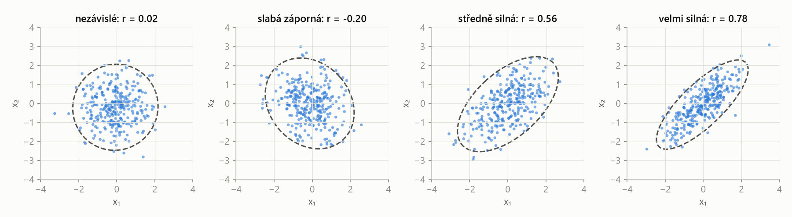
Tvar mraku přímo odráží kovarianční matici. Kulatý mrak = nekorelované proměnné. Otočená úzká elipsa = silná korelace – proměnné nesou z velké části stejnou informaci (to později využije PCA). Při slabé korelaci (−0,29) jsou osy elipsy „skoro souběžné se souřadnicovými osami“.
Tři užitečné vlastnosti vícerozměrného normálního rozdělení
- Každá lineární kombinace \(a_1X_1 + \dots + a_pX_p\) má opět normální rozdělení. (Proto jsou normální i hlavní komponenty z PCA, které jsou právě lineárními kombinacemi.)
- Nekorelované složky jsou zároveň nezávislé. Obecně to neplatí – u normálního rozdělení ano.
- Všechna podmíněná rozdělení jsou také normální – využívá se ve strojovém učení (Bayesovy klasifikátory).
Mahalanobisova vzdálenost
Mahalanobisova vzdálenost bodu \(\mathbf x\) od středu \(\bar{\mathbf x}\) rozdělení s kovarianční maticí \(\mathbf S\) je \[ D = \sqrt{(\mathbf{x}-\bar{\mathbf{x}})^T\mathbf{S}^{-1}(\mathbf{x}-\bar{\mathbf{x}})} \] Je to vzdálenost, která zohledňuje rozptyly proměnných i korelace mezi nimi.
vzdálenost měřená „v jednotkách typické odchylky v daném směru“. Odpovídá na otázku: jak neobvyklý je tento bod vzhledem k tvaru mraku? Pro jednu proměnnou je to prostě \(|z|\) (z-skóre).
| \(\mathbf{x}_i\) | vektor hodnot \(i\)-tého objektu |
| \(\bar{\mathbf{x}}\) | centroid dat |
| \(\mathbf{S}^{-1}\) | inverze kovarianční matice – „přepočítá“ vzdálenost podle tvaru mraku |
Eukleidovská vzdálenost měří „pravítkem“ a nevšímá si tvaru dat. Mahalanobisova vzdálenost měří, kolik „typických odchylek“ je bod od středu – a to ve směru, kterým se díváme. Ve směru, kde je mrak protáhlý (velký rozptyl), je normální být daleko; ve směru, kde je mrak úzký, už malá odchylka znamená hodně. Dva body ve stejné eukleidovské vzdálenosti tak mohou být jeden úplně běžný a druhý extrémně odlehlý.
Pro nekorelovaná standardizovaná data (\(\mathbf{S} = \mathbf{I}\)) se Mahalanobisova vzdálenost rovná eukleidovské. Je to tedy „eukleidovská vzdálenost poté, co mrak narovnáme a zakulatíme“.
Mahalanobisova vzdálenost = vzdálenost od středu měřená v jednotkách rozptylu ve daném směru. Bere v úvahu korelace. Je to přesně výraz v exponentu vícerozměrné normální hustoty.
Jak ověřit (vícerozměrnou) normalitu
Statistický test je postup, který na základě dat rozhoduje mezi nulovou hypotézou \(H_0\) (výchozí tvrzení „nic se neděje“: žádný rozdíl, data jsou normální…) a alternativní hypotézou \(H_1\). p-hodnota je pravděpodobnost, že bychom za platnosti \(H_0\) dostali data stejně nebo ještě víc odporující \(H_0\), než jsou ta naše. Je-li p-hodnota menší než zvolená hladina významnosti \(\alpha\) (obvykle 0,05), \(H_0\) zamítáme.
test je „soud“: \(H_0\) je nevinná, dokud data neukážou opak. p-hodnota říká, jak moc by nás naše data překvapila, kdyby \(H_0\) platila. Velké překvapení (malé p) → \(H_0\) nevěříme. Nezamítnutí ale neznamená, že \(H_0\) platí – jen jsme neměli dost důkazů.
Máme dvě cesty, které se doplňují:
- Objektivně – testem hypotézy \(H_0\): data pochází z \(N_p(\boldsymbol\mu, \boldsymbol\Sigma)\).
Ale: u velkých souborů test zamítne normalitu i při nepatrné, prakticky bezvýznamné odchylce. Testy proto používáme orientačně. - Subjektivně – vizuálně: porovnáme reálné rozdělení s ideálním modelovým.
Logika: marginály vs. celek
- Vícerozměrná normalita ⇒ každá proměnná zvlášť (marginální rozdělení) je normální. Platí.
- Každá proměnná normální ⇒ vícerozměrná normalita. Obecně neplatí.
- V praxi ale: výrazná odchylka od vícerozměrné normality se obvykle projeví i v některé jednotlivé proměnné.
Postupy v praxi
- testy normality jednotlivých proměnných: χ² dobré shody, Kolmogorovův, Shapirův-Wilkův, Andersonův-Darlingův…;
- testy normality jen některých důležitých lineárních kombinací proměnných;
- analýza šikmosti a špičatosti (jedno- i vícerozměrné);
- analýza tvaru sdružených rozdělení dvojic proměnných (bodový graf → elipsa?).
Vícerozměrný test normality řekne jen ANO/NE. Když řekne NE, nevíme, která proměnná za to může. Proto jsou z praktického hlediska užitečnější jednorozměrné kontroly. A nikdy nepodceňuj vizuální kontrolu – odhalí, když výsledek testu zkreslí pár odlehlých hodnot.
Vizuální nástroje: dvojrozměrný/trojrozměrný bodový graf (hledáme elipsu/elipsoid), sdružený histogram, a χ² diagram.
χ² diagram (Q-Q graf Mahalanobisových vzdáleností)
Kvantil \(q\) rozdělení (\(0<q<1\)) je hodnota, pod kterou leží podíl \(q\) všech hodnot (medián je kvantil 0,5). Q-Q graf (kvantil-kvantilový) vynáší seřazené naměřené hodnoty proti odpovídajícím kvantilům teoretického rozdělení. Pokud data tomuto rozdělení odpovídají, body leží na přímce.
„srovnám své seřazené hodnoty s tím, jak by měly vypadat, kdyby byla data ideální“. Každá odchylka od přímky ukazuje, kde se data od ideálu liší (např. příliš dlouhé chvosty).
χ² diagram je Q-Q graf, ve kterém se seřazené čtverce Mahalanobisových vzdáleností objektů od centroidu \(D^2_{(i)}\) vynášejí proti kvantilům rozdělení χ² s \(p\) stupni volnosti. Slouží k vizuálnímu ověření vícerozměrné normality a k odhalení vícerozměrně odlehlých objektů.
vícerozměrný problém („je mrak normální?“) převedeme na jedno číslo pro každý bod (\(D^2\)) a to porovnáme s tím, jaké by mělo být. Body nad přímkou vpravo nahoře jsou objekty, které jsou od středu dál, než by měly.
Pokud data pochází z \(p\)-rozměrného normálního rozdělení, pak čtverce Mahalanobisových vzdáleností \(D^2\) od centroidu mají rozdělení χ² s \(p\) stupni volnosti. To je jednorozměrné rozdělení, které známe. Celý vícerozměrný problém jsme tak převedli na jednorozměrné srovnání: sedí naměřené \(D^2\) s teoretickými kvantily χ²?
- Spočítej centroid \(\bar{\mathbf{x}}\) a kovarianční matici \(\mathbf{S}\).
- Pro každý objekt spočítej \(D^2_i\).
- Seřaď \(D^2_i\) vzestupně.
- K \(i\)-té nejmenší hodnotě přiřaď teoretický kvantil χ²(p) na úrovni \((i-0{,}5)/n\).
- Vynes body (teoretický kvantil, \(D^2_i\)). Leží-li na přímce \(y = x\), data jsou přibližně vícerozměrně normální.
Souvislost s elipsou: např. pro \(p=2\) a \(q = 0{,}95\) je kvantil \(\chi^2_{0{,}95}(2) = 5{,}99\). Očekáváme tedy, že 95 % bodů bude ležet uvnitř elipsy
\[ (\mathbf{x}-\bar{\mathbf{x}})^T\mathbf{S}^{-1}(\mathbf{x}-\bar{\mathbf{x}}) \le 5{,}99 \]Princip ověření normality je tedy vždy stejný: porovnání výběrových kvantilů s modelovými.
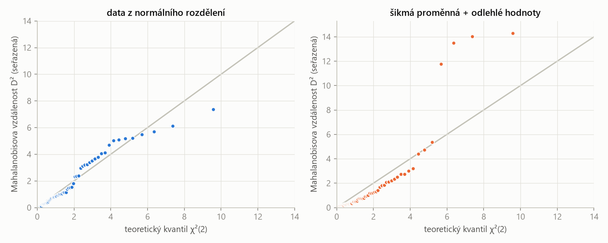
Odchylka nahoře vpravo = objekty jsou od středu dál, než by normální rozdělení dovolilo → vícerozměrně odlehlé hodnoty nebo těžké chvosty. χ² diagram tak slouží zároveň jako detektor odlehlých objektů. V příkladu z přednášky (systolický a diastolický tlak, \(\bar{\mathbf{x}} = (118{,}7;\ 60)\)) měl pacient s tlakem 112/91 hodnotu \(D^2 = 8{,}86\) – výrazně nad ostatními, i když ani 112, ani 91 samo o sobě extrémní není. Odlehlá je až kombinace (nízký systolický a vysoký diastolický).
Srovnání dvou skupin: Hotellingův T² test
Otázka: liší se pacienti se sepsí a bez sepse? Ne v jedné proměnné, ale v celém vektoru (tep, diastolický tlak, věk) najednou:
Hotellingův T² test je vícerozměrný statistický test nulové hypotézy, že dvě nezávislé skupiny mají shodné vektory středních hodnot (\(H_0: \boldsymbol\mu_1 = \boldsymbol\mu_2\)). Je to vícerozměrné zobecnění dvouvýběrového t-testu; předpokládá vícerozměrnou normalitu a shodnou kovarianční matici obou skupin.
t-test pro všechny proměnné najednou. Neptá se „liší se skupiny v tepu?“, ale „liší se skupiny v celém profilu (tep, tlak, věk)?“ – a přitom zohlední, jak spolu proměnné souvisejí.
Nulová hypotéza: vektory středních hodnot obou skupin jsou stejné.
Předpoklad: skupiny jsou nezávislé (různí pacienti, ne tentýž pacient dvakrát).
Od t-testu k T²
Dvouvýběrový t-test pro jednu proměnnou porovnává rozdíl průměrů s jeho nejistotou:
\[ t = \frac{\bar x_1 - \bar x_2}{s\sqrt{\frac{1}{n_1}+\frac{1}{n_2}}} \]Po umocnění a přepsání do tvaru „rozdíl × inverze rozptylu × rozdíl“:
\[ t^2 = \frac{n_1 n_2}{n_1+n_2}\,(\bar x_1-\bar x_2)\,(s^2)^{-1}\,(\bar x_1-\bar x_2) \]Když \(t^2\) napíšeme takhle, zobecnění je přímočaré – rozdíl průměrů nahradíme rozdílem vektorů a rozptyl kovarianční maticí:
| \(\bar{\mathbf{x}}_1, \bar{\mathbf{x}}_2\) | vektory průměrů obou skupin |
| \(\mathbf{S}\) | společná (sdružená) kovarianční matice – vážený průměr kovariančních matic obou skupin |
| \(n_1, n_2\); \(n = n_1+n_2\) | velikosti skupin |
| \(p\) | počet proměnných |
\(T^2\) má Hotellingovo rozdělení; pro rozhodování ho převedeme na F statistiku:
\[ F = \frac{n-p-1}{p\,(n-2)}\;T^2 \;\sim\; F(p,\ n-p-1) \]Pokud \(F > f_{1-\alpha}(p, n-p-1)\), zamítáme \(H_0\) – vektory průměrů se liší.
\(T^2\) je vlastně Mahalanobisova vzdálenost mezi dvěma centroidy (krát faktor velikosti vzorku). Rozdíl průměrů se „měří“ vzhledem k tvaru mraků. Rozdíl ve směru, ve kterém data normálně moc nekolísají, je velmi průkazný – i když je v absolutních číslech malý.
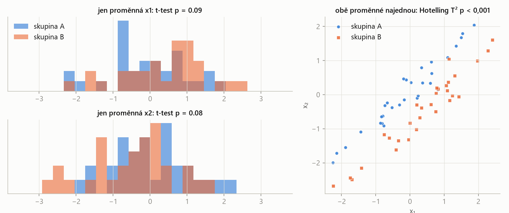
Toto je hlavní argument pro vícerozměrné testy. Skupiny se liší napříč hlavní osou mraku (skupina B je „pod“ skupinou A). V průmětu na osu \(x_1\) nebo \(x_2\) se rozdíl ztratí v obrovském rozptylu podél mraku. Hotellingův test pracuje s kovarianční maticí, takže rozdíl ve „štíhlém“ směru najde.
Když H₀ zamítneme: která proměnná za to může?
Vícerozměrný test řekne jen „liší se“. Pak následují simultánní testy pro jednotlivé proměnné \(H_j: \bar x_{1j} - \bar x_{2j} = 0\):
Simultánní testy jsou dílčí testy pro jednotlivé proměnné provedené po zamítnutí celkové vícerozměrné hypotézy, které používají společnou (přísnější) kritickou hodnotu tak, aby pravděpodobnost chyby I. druhu platila pro všechny dílčí testy dohromady.
„detektivka po rozsudku“: víme, že se skupiny liší, a hledáme, ve které proměnné. Přísnější práh zabrání tomu, aby nějaká proměnná vyšla jen díky tomu, že testujeme mnohokrát.
Kde \(s_j^2\) je \(j\)-tý diagonální prvek společné kovarianční matice. Je-li \(F_j\) větší než stejný kritický kvantil \(f_{1-\alpha}(p, n-p-1)\), rozdíl v proměnné \(j\) je prokázán. (Používá se stejný, přísnější kvantil jako u celého testu – tím se hlídá problém mnohonásobného testování.)
Skupina bez sepse a se sepsí, \(n_1 = n_2 = 17\), \(n = 34\), \(p = 3\) proměnné (tep, diastolický tlak, věk).
- průměry: bez sepse \((83{,}2;\ 58{,}5;\ 65{,}0)\), se sepsí \((98{,}7;\ 61{,}1;\ 58{,}4)\);
- \(T^2 = 10{,}33\) → \(F = \frac{34-3-1}{3\cdot 32}\cdot 10{,}33 = 3{,}23\);
- kritická hodnota \(f_{0{,}95}(3, 30) = 2{,}92\) → \(3{,}23 > 2{,}92\) → zamítáme \(H_0\), skupiny se liší;
- simultánní testy: \(F_1 = 3{,}15\) (tep), \(F_2 = 0{,}09\) (tlak), \(F_3 = 0{,}59\) (věk). Jen tep překračuje 2,92 → za rozdílem stojí hlavně tepová frekvence.
Statistická vs. reálná (klinická) významnost
p-hodnota říká, jak nepravděpodobný by byl pozorovaný rozdíl, kdyby žádný rozdíl neexistoval. Neříká, jak velký nebo užitečný rozdíl je. S rostoucím počtem pozorování lze prokázat i nepatrný rozdíl.
Statisticky významný je výsledek, u kterého test zamítl nulovou hypotézu (\(p < \alpha\)) – rozdíl pravděpodobně není dílem náhody. Reálně (klinicky, prakticky) významný je rozdíl, který je dost velký na to, aby měl praktický dopad – změnil rozhodnutí o pacientovi, umožnil diagnózu.
statistická významnost odpovídá na „je to skutečné?“, reálná na „je to důležité?“. Při obrovském vzorku je „skutečný“ i rozdíl půl tepu za minutu, ale lékaři je k ničemu.
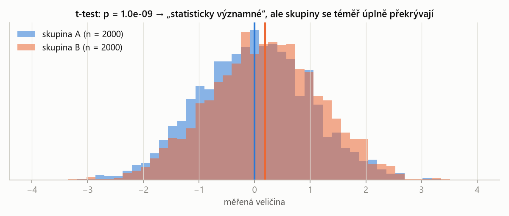
V přednášce: entropie EEG v klidu a při mentální zátěži, párový t-test u 145 lidí dal \(p = 0{,}0000237\). Lze ale najít práh, podle kterého by se u jednotlivého člověka dalo rozhodnout, zda je v klidu? Ne – rozdělení se překrývají. Podobně u sepse: tep se liší významně, ale pro diagnózu potřebujeme klinicky významné prahové kritérium, které skupiny opravdu oddělí. Vždy se ptej nejen „je to významné?“, ale i „je to dost velké, aby to k něčemu bylo?“.
Shrnutí
Vícerozměrná data popisujeme středním vektorem (poloha mraku) a kovarianční maticí (rozptyly na diagonále, kovariance mimo ni; symetrická). Vícerozměrné normální rozdělení je určeno právě těmito dvěma parametry; jeho vrstevnice jsou elipsy, jejichž natočení odpovídá korelaci. V exponentu hustoty se skrývá Mahalanobisova vzdálenost – vzdálenost od středu měřená vzhledem k tvaru mraku. Normalitu ověřujeme testy (orientačně, u velkých dat zamítají i drobnosti) a vizuálně, mimo jiné χ² diagramem, který porovnává seřazené \(D^2\) s kvantily χ²(p) a zároveň odhalí vícerozměrně odlehlé objekty. Dvě skupiny srovnáváme Hotellingovým T² (vícerozměrný t-test); po zamítnutí \(H_0\) najdeme odpovědné proměnné simultánními F-testy. Statistická významnost ještě neznamená praktickou použitelnost.
Take-home messages
- Kovarianční matice = celý „tvar“ dat v jedné tabulce: rozptyly + vztahy.
- Korelace je kovariance očištěná od jednotek; korelační matice = kovarianční matice standardizovaných dat.
- Normalita je předpoklad mnoha metod – ověřuj ji, ale testy u velkých dat ber s rezervou a dívej se na grafy.
- Mahalanobisova vzdálenost bere v úvahu korelace; bod může být odlehlý kombinací hodnot, ne jednotlivou hodnotou.
- χ² diagram: body na přímce = OK; odklon nahoře = odlehlé hodnoty / těžké chvosty.
- Hotellingův T² najde rozdíl, který t-testy po jednotlivých proměnných přehlédnou.
- Malé p ≠ velký nebo užitečný efekt.
Otázky ke zkoušce
Co je kovarianční matice, jak vypadá a co z ní vyčtu?
Čtvercová symetrická matice \(p \times p\). Na diagonále jsou rozptyly jednotlivých proměnných, mimo diagonálu kovariance dvojic. Kladná kovariance = proměnné rostou spolu, záporná = jedna roste a druhá klesá, nulová = žádný lineární vztah. Geometricky určuje, jak je datový mrak roztažený a natočený. Nevýhodou je závislost na jednotkách – proto korelace.
Popište vícerozměrné normální rozdělení a jeho vlastnosti.
Zobecnění Gaussovy křivky; je určené vektorem středních hodnot \(\boldsymbol\mu\) a kovarianční maticí \(\boldsymbol\Sigma\). V exponentu je čtverec Mahalanobisovy vzdálenosti, takže vrstevnice hustoty jsou elipsy (elipsoidy) se středem v \(\boldsymbol\mu\); u nezávislých proměnných jsou osy rovnoběžné se souřadnicemi, u korelovaných otočené. Vlastnosti: lineární kombinace jsou normální, nekorelované složky jsou nezávislé, podmíněná rozdělení jsou normální.
Jaký je rozdíl mezi eukleidovskou a Mahalanobisovou vzdáleností?
Eukleidovská měří přímou vzdálenost a ignoruje rozptyl a korelace. Mahalanobisova
\[ D^2 = (\mathbf x-\bar{\mathbf x})^T\mathbf S^{-1}(\mathbf x-\bar{\mathbf x}) \]měří vzdálenost v jednotkách rozptylu v daném směru – ve směru protažení mraku je „levnější“ být daleko. Dva body se stejnou eukleidovskou vzdáleností mohou mít velmi rozdílnou Mahalanobisovu; pro nekorelovaná standardizovaná data jsou obě stejné.
Jak ověříte vícerozměrnou normalitu? Proč nestačí jen test?
Kombinací testů a vizuální kontroly: testy normality jednotlivých proměnných (Shapiro-Wilk aj.), šikmost a špičatost, bodové grafy dvojic (elipsa), χ² diagram. Test sám nestačí, protože u velkých souborů zamítne i nepodstatné odchylky, vícerozměrný test neřekne, která proměnná je problém, a výsledek mohou zkreslit odlehlé hodnoty. Pozor: normalita každé proměnné ještě nezaručuje vícerozměrnou normalitu.
Vysvětlete princip χ² diagramu.
Pro každý objekt spočítám \(D^2\) od centroidu. Při vícerozměrné normalitě mají \(D^2\) rozdělení χ² s \(p\) stupni volnosti. Seřazené \(D^2\) vynesu proti teoretickým kvantilům χ²(p). Body na přímce = data odpovídají normálnímu rozdělení; body odkloněné nahoru na konci = objekty dál od středu, než by měly být, tedy vícerozměrně odlehlé hodnoty.
K čemu je Hotellingův T² test a jak se liší od t-testu?
Testuje shodu vektorů středních hodnot dvou nezávislých skupin. Je to zobecnění dvouvýběrového t-testu: místo rozdílu průměrů rozdíl vektorů, místo rozptylu společná kovarianční matice. \(T^2\) převedu na F statistiku s \((p, n-p-1)\) stupni volnosti. Výhoda: testuje všechny proměnné najednou (jedna hladina významnosti) a využívá korelace, takže najde rozdíly, které jednotlivé t-testy nevidí. Po zamítnutí následují simultánní F testy pro jednotlivé proměnné.
Co znamená rozdíl mezi statistickou a reálnou významností?
Statistická významnost (malé p) říká jen, že rozdíl pravděpodobně není náhoda. Při velkém vzorku vyjde významný i zanedbatelný rozdíl. Reálná (klinická) významnost se ptá, jestli je rozdíl dost velký, aby měl praktický dopad – např. jestli existuje práh, podle kterého lze rozhodnout u jednotlivého pacienta. Příklad EEG entropie: p = 0,00002, ale rozdělení se překrývají, takže diagnostický práh neexistuje.
Co dělat, když data nejsou normální?
Buď použít neparametrické metody, které normalitu nepředpokládají (pracují s pořadím – Spearman, Mann-Whitney, Kruskal-Wallis), nebo data transformovat (log, odmocnina, 1/x), aby se normalitě přiblížila. U zešikmených dat (plat, koncentrace) je typicky vhodnější medián a logaritmická transformace.
Přednáška 3
Předzpracování dat
Surová data téměř nikdy nejdou rovnou do modelu. Obsahují text místo čísel, díry, chyby a proměnné v nesrovnatelných jednotkách. Předzpracování je soubor kroků, které z nich udělají něco, s čím metoda umí korektně počítat.
Proč data předzpracovávat
Předzpracování dat (data preprocessing) je soubor úprav surových dat provedených před samotnou analýzou: kontrola a oprava chyb, převod kategorií na čísla, ošetření chybějících hodnot, úprava rozložení a sjednocení měřítek proměnných.
je to „úklid a příprava surovin“ před vařením. Metoda (regrese, PCA, k-means…) umí počítat jen s čísly, bez děr a ve srovnatelných jednotkách. Předzpracování zajistí, aby tomu data odpovídala a aby výsledek nezkreslila technická vada dat.
Vezmi tabulku pacientů: vstupy (příznaky, features, \(X\)) a výstup (\(y\), např. „zdravý / nemocný“). Dá se z ní rovnou postavit model? Typicky ne, protože narazíme na tato místa:
- Kategorické příznaky (pohlaví „Female/Male“, typ blokády „L/R/Sync“) – je třeba je převést na čísla.
- Chybějící hodnoty – je třeba je odstranit nebo nahradit.
- Rozložení všech vstupů i výstupů – je třeba ho zkontrolovat. Odpovídá min/max/průměr/medián očekávání? (BMI = 307 kg / 1,8² m² = 94,75 je téměř jistě chyba zápisu.)
- Rozsah hodnot – je vhodný pro zvolenou metodu? Věk v desítkách, koncentrace v tisících, odpor v milionech…
- Poznej svoje data – typy, rozsahy, rozložení, chybějící hodnoty.
- Převeď kategorické proměnné na čísla (one-hot encoding).
- Uprav rozložení, pokud je třeba (log, 1/x, exp, druhá mocnina…).
- Standardizuj – a transformační údaje (průměr, směrodatnou odchylku) uchovej pro inferenci.
- Ošetři chybějící hodnoty.
Převod kategorických příznaků
Kategorická proměnná nabývá hodnot z konečného seznamu „značek“ (pohlaví, krevní skupina, typ blokády). Rozlišujeme nominální kategorie (bez pořadí: L/R/Sync, krevní skupina) a ordinální kategorie (s přirozeným pořadím: stadium I < II < III, „mírná < střední < těžká“). Výpočetní metody pracují s čísly, proto je musíme zakódovat. Způsob kódování ale rozhoduje o tom, jakou informaci do dat vložíme.
Label encoding je převod kategorické proměnné na jedinou číselnou proměnnou tak, že každá kategorie dostane jedno celé číslo (0, 1, 2, …).
kategorie se „přejmenují na čísla“. Tím ale vznikne i pořadí a vzdálenosti mezi kategoriemi, které v realitě nemusí existovat.
Label encoding: každá kategorie dostane číslo
Nejjednodušší řešení: Female → 1, Male → 0 (ručně, nebo třídou LabelEncoder, která si navíc pamatuje převod a umí ho vrátit zpět). U binárních proměnných je to v pořádku. U proměnných s více kategoriemi je to ale past:
Typ raménkové blokády: L → 0, R → 1, Sync → 2. Převod je technicky správně, ale zavádí zcestnou číselnou řadu: model si „myslí“, že Sync je dvakrát víc než R a že R leží mezi L a Sync. Vzdálenost L–Sync by byla dvojnásobná oproti L–R. Nic takového v realitě neplatí – kategorie jsou jen různé.
One-hot encoding: každá kategorie dostane vlastní sloupec
One-hot encoding (kódování „1 z k“, dummy proměnné) je převod kategorické proměnné s \(k\) kategoriemi na \(k\) binárních proměnných. Každá z nich odpovídá jedné kategorii a má hodnotu 1, pokud objekt do této kategorie patří, jinak 0. V každém řádku je tedy právě jedna jednička („one hot“).
místo otázky „jaký typ blokády?“ s odpovědí 0/1/2 položíme tři otázky ano/ne: „je to L?“, „je to R?“, „je to Sync?“. Žádná kategorie pak není „větší“ ani „blíž“ jiné.
Z jednoho sloupce s \(k\) kategoriemi vznikne \(k\) sloupců s 0/1. Každá kategorie je teď od každé jiné „stejně daleko“ a žádné falešné pořadí neexistuje. V Pythonu OneHotEncoder nebo jednodušeji pandas.get_dummies.
SVM klasifikátor pro predikci srdečního selhání (19 proměnných, u dvou z nich zapomenutý one-hot): AUC 0,73 a hazard ratio 3,89. Se správným one-hot kódováním: AUC 0,76 a hazard ratio 5,16. Model si „nějak poradí“ i bez něj, ale zbytečně ztrácí výkon.
U ordinálních proměnných (stadium I < II < III) pořadí existuje, takže kódování 1, 2, 3 zachová skutečnou informaci. A u binárních stačí jediný sloupec 0/1. Pro lineární modely se u one-hot často jeden sloupec vypouští (zbylé ho jednoznačně určují – jinak vzniká dokonalá multikolinearita).
Nominální kategorie → one-hot (každá kategorie svůj 0/1 sloupec). Prosté číslování zavádí neexistující pořadí a vzdálenosti.
Chybějící hodnoty
Chybějící hodnota (missing value, v Pythonu NaN) je prázdné místo v datové matici: hodnota proměnné, která u daného objektu nebyla změřena, zapsána nebo se ztratila.
v tabulce je „díra“. Většina metod (průměr matice, regrese, PCA, k-means) s dírou neumí počítat, proto ji musíme buď odstranit, nebo něčím zaplnit.
Nejdřív zjisti, kolik jich je a kde (v kterých sloupcích, u kterých pacientů). Důležité je i to, proč hodnoty chybí. Statistika rozlišuje tři mechanismy (nad rámec slidů, ale pomáhá pochopit, kdy je imputace bezpečná):
- MCAR (missing completely at random) – chybění je čistě náhodné, nezávisí na ničem (zkumavka se rozbila). Odstranění i jednoduchá imputace jsou zde nejméně nebezpečné.
- MAR (missing at random) – chybění závisí na jiných změřených proměnných (starším pacientům se častěji neměří určitý parametr). Lze ho „dopočítat“ z ostatních proměnných.
- MNAR (missing not at random) – chybění závisí na samotné chybějící hodnotě (laktát se neměří těm, kteří vypadají zdravě, tedy mají nejspíš nízký laktát). Žádná imputace to plně nenapraví; sama informace „chybí“ nese význam.
Pak jsou dvě základní cesty:
1. Odstranění
Smažeme řádky (pacienty) nebo sloupce (příznaky) s chybějícími hodnotami (dropna). Jednoduché, ale ne vždy si můžeme dovolit přicházet o data. Extrémní případ: PhysioNet Challenge 2019 (predikce sepse, cca 50 příznaků) – chybějících hodnot je tolik, že po smazání všech neúplných řádků by nezbylo téměř nic.
2. Nahrazení (imputace)
Imputace je nahrazení chybějící hodnoty odhadem – konstantou, statistikou daného sloupce (průměr, medián, nejčastější hodnota) nebo hodnotou předpovězenou z ostatních proměnných.
díru zalepíme „nejrozumnějším tipem“, abychom nemuseli vyhodit celý řádek. Tip je ale vymyšlený, ne naměřený – proto imputace vždy trochu zkresluje (hlavně zmenšuje rozptyl).
- Hromadně konstantou (např. 0) – jednoduché, ale nepříliš praktické: nula v BMI je nesmysl a zkreslí rozložení.
- Správněji – statistikou daného sloupce: průměrem nebo mediánem sloupce BMI. Medián je robustnější vůči odlehlým hodnotám.
- (Navíc nad rámec přednášky: pokročilé metody odhadují chybějící hodnotu z ostatních proměnných – k nejbližších sousedů, regresní imputace, MICE.)
- Imputace průměrem „zúží“ rozptyl proměnné (všechny doplněné hodnoty jsou stejné) a oslabí korelace. Příklad: BMI 22, 24, 28, 30 a dvě chybějící hodnoty. Průměr známých hodnot je 26 a jejich \(s = 3{,}16\). Po doplnění dvou hodnot 26 je \(s = 2{,}58\) – data vypadají méně rozptýlená, než ve skutečnosti jsou, a doplněné body nijak „nesledují“ ostatní proměnné, takže korelace slábnou.
- Záleží na tom, proč hodnota chybí. Chybí náhodně? Nebo chybí laktát hlavně u pacientů, kterým ho lékař neměřil, protože jim nic nebylo? Pak je i sama informace „chybí“ diagnosticky cenná.
- Statistiky pro imputaci (průměr, medián) počítej jen z trénovacích dat a stejné hodnoty použij na testovací data.
Standardizace a normalizace
Škálování (feature scaling) je transformace, která každou proměnnou zvlášť posune a přenásobí (\(x' = (x - a)/b\)) tak, aby všechny proměnné měly srovnatelný rozsah. Dva nejčastější typy jsou standardizace a normalizace.
změníme „jednotky“ každé proměnné tak, aby věk v letech, koncentrace v tisících a odpor v milionech hrály v analýze se stejně velkými čísly. Jde o lineární úpravu – pořadí hodnot i tvar rozdělení zůstanou stejné, mění se jen poloha a „roztažení“ osy.
Cíl: přenést příznaky do stejného rozsahu. Proč:
- příznaky lze mezi sebou snadněji porovnávat;
- zvýší se přesnost běžných metod strojového a hlubokého učení (neuronové sítě, SVM) a metod založených na vzdálenostech (k-means, kNN, PCA);
- u logistické regrese lze porovnávat velikost koeficientů (význam příznaků) a model rychleji konverguje.
Výjimka: metody založené na rozhodovacích stromech (random forest) standardizaci nepotřebují – strom se ptá jen „je hodnota větší než práh?“ a na měřítku nezáleží.
Potřebné pojmy
Výběrový průměr \(\bar x\) je součet hodnot vydělený jejich počtem. Výběrová směrodatná odchylka \(s\) je odmocnina z průměrné kvadratické odchylky hodnot od průměru (s dělitelem \(N-1\)): \[ \bar{x} = \frac{1}{N}\sum_{i=1}^{N} x_i, \qquad s = \sqrt{\frac{1}{N-1}\sum_{i=1}^{N} (x_i-\bar{x})^2} \]
průměr říká, kde data leží (těžiště), směrodatná odchylka, jak daleko od průměru se hodnoty typicky nacházejí. Má stejné jednotky jako data (roky, kg/m²), proto se dá přímo použít jako „pravítko“.
Proč \(N-1\) a ne \(N\)? Odchylky měříme od průměru spočteného ze stejných dat; ten je k datům „přitažený“, takže odchylky vycházejí systematicky trochu menší. Dělení \(N-1\) to vyrovná (nestranný odhad). Speciální případy z přednášky: pole zcela stejných hodnot má \(s = 0\) (pozor – standardizace by dělila nulou!); data vydělená dvěma mají poloviční průměr i \(s\); přičtení konstanty změní průměr, ale \(s\) ne.
Standardizace je transformace proměnné, při které od každé hodnoty odečteme průměr proměnné a výsledek vydělíme její směrodatnou odchylkou: \(z_i = (x_i - \bar x)/s\). Výsledná proměnná (z-skóre) má průměr 0 a směrodatnou odchylku 1 a je bezrozměrná.
každou hodnotu vyjádříme jako „o kolik směrodatných odchylek je nad průměrem (+) nebo pod ním (−)“. Původní jednotky zmizí, takže lze srovnávat věk s BMI. Rozsah výsledku není omezený – typicky zhruba −3 až +3, extrémy klidně dál.
Normalizace min–max je transformace proměnné, při které od každé hodnoty odečteme minimum proměnné a výsledek vydělíme rozpětím (maximum − minimum): \(x_i' = (x_i - \min)/(\max - \min)\). Výsledná proměnná leží přesně v intervalu \([0, 1]\): nejmenší hodnota dostane 0, největší 1.
každou hodnotu vyjádříme jako „kolik procent cesty od nejmenší k největší hodnotě urazila“. Měřítko určují jen dva body – minimum a maximum – a proto jedna chybná extrémní hodnota posune měřítko pro všechny ostatní.
Standardizace (z-skóre):
\[ z_i = \frac{x_i - \bar{x}}{s} \]Normalizace (min–max):
\[ x_i' = \frac{x_i - \min(x)}{\max(x) - \min(x)} \]| \(x_i\) | původní hodnota \(i\)-tého objektu (např. věk pacienta) |
| \(\bar x,\ s\) | průměr a směrodatná odchylka trénovacích dat dané proměnné – čitatel posune data, aby střed byl v nule; jmenovatel je „smrští/roztáhne“ na jednotkový rozptyl |
| \(\min(x),\ \max(x)\) | nejmenší a největší hodnota proměnné v trénovacích datech |
| \(z_i\) | o kolik směrodatných odchylek je hodnota nad (+) nebo pod (−) průměrem; výsledný sloupec má průměr 0 a \(s = 1\) |
| \(x_i'\) | poloha hodnoty mezi minimem (0) a maximem (1) |
Obě úpravy mají stejný tvar „odečti něco a vyděl něčím“ – liší se jen v tom, čím: standardizace používá průměr a \(s\) (počítají se ze všech hodnot), normalizace minimum a rozpětí (určují je dvě krajní hodnoty).
Hodnoty proměnné: 2, 4, 6, 8, 10.
- Průměr \(\bar x = 30/5 = 6\). Odchylky od průměru: −4, −2, 0, 2, 4. Jejich čtverce 16, 4, 0, 4, 16, součet 40.
- \(s = \sqrt{40/(5-1)} = \sqrt{10} \approx 3{,}16\).
- Standardizace: \(z = (x-6)/3{,}16\) → −1,26; −0,63; 0; 0,63; 1,26 (průměr 0, \(s\) = 1).
- Normalizace: min = 2, max = 10, rozpětí 8 → \((x-2)/8\) = 0; 0,25; 0,5; 0,75; 1.
Teď přidej chybnou hodnotu 100. Normalizace: rozpětí je 98, původních pět hodnot se zmáčkne do pásu 0 – 0,08 a hodnota 100 dostane 1. Celé měřítko „spotřebovala“ jediná chyba. Standardizace: průměr vyskočí na 21,7 a \(s\) na 38,5, ostatní hodnoty vyjdou −0,51 až −0,30 a chyba 2,04. Odlehlá hodnota tedy škodí oběma úpravám. U normalizace ale přímo určuje měřítko, u standardizace je jen jedním z mnoha čísel, ze kterých se průměr a \(s\) počítají. Čím víc dat, tím menší vliv má jedna chyba na průměr a \(s\), kdežto maximum určí vždy úplně. Na 60 pacientech to ukazuje obr. 3.1.
Věk pacientů má průměr 50 let a \(s = 15\). Pacient se 80 lety má \(z = (80-50)/15 = 2\): je o dvě směrodatné odchylky starší než průměr. BMI s průměrem 26 a \(s = 4\): BMI 34 dává také \(z = 2\). Po standardizaci jsou oba údaje na stejné škále („stejně neobvyklé“), přestože původně měly úplně jiné jednotky.
Pro interpretaci z-skóre se hodí pravidlo 3 sigma (68–95–99,7): u normálního rozdělení leží asi 68 % hodnot v \(\pm 1s\), 95 % v \(\pm 2s\) a 99,7 % v \(\pm 3s\). Hodnota se \(|z| > 3\) je podezřelá.
- Standardizace neudělá z dat normální rozdělení. Je to lineární posun a změna měřítka – zešikmená data zůstanou zešikmená (jen budou mít průměr 0 a \(s\) = 1). Na změnu tvaru slouží nelineární transformace (log, viz níže).
- Slovo „normalizace“ má víc významů. V přednášce a ve skriptech = min–max na interval 0–1. V jiných textech se tak někdy říká i standardizaci nebo úpravě vektoru (řádku) na jednotkovou délku. U zkoušky je dobré vždy říct vzorec.
- Odlehlá hodnota ovlivní i standardizaci (posune průměr a zvětší \(s\)), jen méně dramaticky než min–max. Robustní alternativou je škálování mediánem a mezikvartilovým rozpětím (
RobustScaler).
Co je výhodnější?
Odlehlá hodnota je pozorování, které leží neobvykle daleko od ostatních hodnot proměnné (nebo od zbytku mraku bodů ve více rozměrech). Pro jednu proměnnou se v praxi často bere \(|z| > 3\) nebo hodnota dál než 1,5 mezikvartilového rozpětí od kvartilů.
bod, který „nesedí“ k ostatním. Může to být chyba (BMI 94,75 z překlepu ve váze), nebo skutečný, ale vzácný případ. Rozhodnutí, co s ním, dělá analytik – ne vzorec.
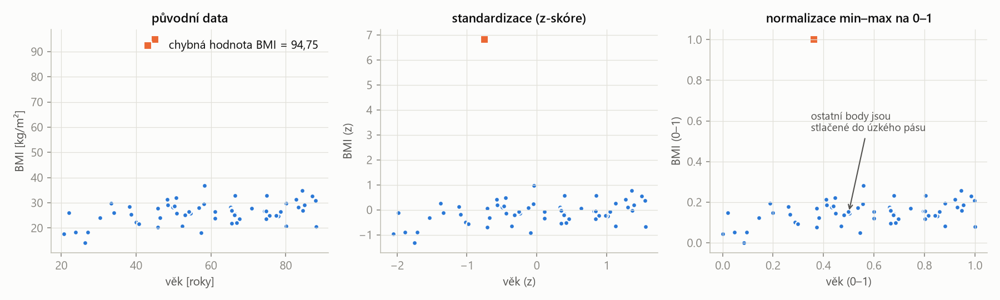
Normalizace je citlivá na odlehlé hodnoty, protože jejich hodnota přímo určuje min a max. Standardizace je robustnější, proto se rutinně používá standardizace. Výjimečně se nepoužije nic (např. EKG v mV pro hluboké učení) – to je ale spíš nebezpečné.
StandardScaler a „pamatování“ transformace
Proč použít třídu StandardScaler místo ručního vzorce:
- ošetří všechny sloupce jedním voláním;
- umí pracovat s NaN (při výpočtu je ignoruje, NaN „přežije“);
- pamatuje si průměr a směrodatnou odchylku – lze ji opakovaně použít;
- dá se automatizovaně používat v pipelines;
- po standardizaci se chybějící hodnoty rutinně nahrazují nulou (= průměrem).
Únik informace nastane, když se do učení modelu (včetně předzpracování) dostane informace z dat, na kterých má být model teprve testován, nebo informace, kterou by model v reálném nasazení neměl k dispozici.
model „opisuje z řešení“. Na testu pak vypadá lépe, než ve skutečnosti je. Typický nenápadný případ: průměr a \(s\) pro standardizaci (nebo medián pro imputaci) spočítané z celého datasetu včetně testovací části.
Standardizovat testovací data jejich vlastním průměrem. Správně: průměr a \(s\) spočítáš jen na trénovacích datech a stejnými čísly transformuješ testovací i nová data (při nasazení modelu). Jinak model dostane data v jiném „měřítku“, než na jakém se učil, a test navíc „vidí“ informaci o testovací množině.
Experiment z přednášky: detekce stimulace tepů
3 příznaky, 158 pacientů trénink, 489 pacientů externí test. F1 = úspěšnost klasifikace, Iters = počet iterací do konvergence.
F1 skóre je harmonický průměr přesnosti (precision – kolik z objektů označených jako pozitivní opravdu pozitivních je) a senzitivity (recall – kolik ze skutečně pozitivních objektů model našel): \[ F_1 = 2\cdot\frac{\text{precision}\cdot\text{recall}}{\text{precision}+\text{recall}} \] Nabývá hodnot 0 až 1.
jedno číslo pro kvalitu klasifikátoru, které je vysoké jen tehdy, když model zároveň „moc nepřestřeluje“ (málo falešných poplachů) a „moc nepřehlíží“ (málo zmeškaných případů).
Iterační algoritmus hledá řešení postupnými kroky (iteracemi), z nichž každý odhad o něco zlepší. Algoritmus konverguje, když se odhady přestanou měnit (změna klesne pod zvolenou toleranci); počet iterací do té doby vyjadřuje rychlost konvergence.
„kolik kroků potřebuje sejít do údolí“. Když jsou proměnné v hodně rozdílných měřítcích, je údolí protáhlé a úzké, algoritmus „klikatí“ a potřebuje víc kroků – nebo se do cíle nedostane vůbec.
| Metoda | neupravená F1 / iter. | standardizovaná | normalizovaná | x₀·1000 + 500 |
|---|---|---|---|---|
| logistická regrese | 0,924 / 27 | 0,924 / 12 | 0,889 / 26 | 0,245 / nekonverguje |
| SVM (RBF) | 0,937 / 6618 | 0,928 / 5641 | 0,934 / 5805 | 0,879 / 8608 |
| random forest | 0,927 / – | 0,927 / – | 0,915 / – | 0,927 / – |
| neuronová síť (MLP) | 0,933 / 278 | 0,939 / 134 | 0,904 / 193 | 0,894 / 101 |
- Standardizace výrazně zrychlí konvergenci (LR 27 → 12 iterací, NN 278 → 134) a přesnost neponíží.
- Když jeden příznak „nafoukneme“ do nevhodného rozsahu (×1000 + 500), logistická regrese se zhroutí (F1 0,245) a SVM i síť se zhorší – metody citlivé na měřítko trpí.
- Random forest je na měřítku nezávislý (0,927 pořád).
Další transformace: úprava rozložení
Některé příznaky mají „nepříznivé“ rozložení – typicky silně zešikmené doprava (koncentrace, časy, odpory): většina hodnot malá, pár obrovských. Zkusíme je převést na příznivější tvar nelineární funkcí a pak standardizovat.
Rozdělení je zešikmené (asymetrické), pokud jeden jeho „chvost“ je výrazně delší než druhý. Pravostranně (kladně) zešikmené rozdělení má dlouhý chvost směrem k velkým hodnotám; průměr je pak větší než medián.
většina pacientů má hodnotu malou a „normální“, několik málo pacientů má hodnotu obrovskou. Těch pár velkých hodnot táhne průměr nahoru a dominuje rozptylu.
Transformace proměnné je nahrazení každé hodnoty \(x\) hodnotou \(f(x)\) pro zvolenou funkci \(f\) (např. \(\log x\), \(1/x\), \(\sqrt x\)). Je-li \(f\) nelineární, změní se tvar rozdělení; je-li monotónní, zachová se pořadí hodnot.
„přeměříme“ osu nerovnoměrně. Logaritmus velké vzdálenosti zkrátí a malé natáhne, takže dlouhý chvost se stáhne a rozdělení zesymetričtí. Na rozdíl od standardizace (která jen posouvá a natahuje rovnoměrně) se tím mění tvar.
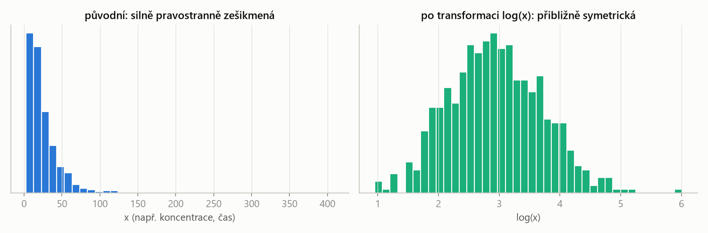
- log(x) – pro kladná, doprava zešikmená data (rozdíly v řádech → rozdíly v jednotkách); často přiblíží normalitě.
- 1/x – ještě silnější „stlačení“ velkých hodnot.
- √x, x², exp(x) – podle tvaru rozdělení.
V experimentu s detekcí stimulace (transformovaný příznak R_HC + standardizace) se mírně zlepšila logistická regrese (F1 0,924 → 0,932 s log, 0,936 s 1/x; 10 iterací) a síť (0,938–0,939), random forest zůstal stejný. Přednáška končí „filozofickou otázkou“: která metoda je nejlepší? Z jakého pohledu? – podle přesnosti? rychlosti? interpretovatelnosti? Rozdíly ve třetím desetinném místě nemusí být ani reprodukovatelné.
„Před analýzou si nejdřív prohlédnu rozložení všech proměnných, opravím zjevné chyby, převedu kategorie one-hot kódováním a ošetřím chybějící hodnoty – buď odstraněním, nebo imputací mediánem. Zešikmené proměnné zlogaritmuji. Pak standardizuji na průměr 0 a směrodatnou odchylku 1; parametry si uložím z trénovacích dat a stejně transformuji i testovací. Standardizaci preferuji před min–max normalizací, protože ta je citlivá na odlehlé hodnoty. Stromové metody škálování nepotřebují.“
Shrnutí
Předzpracování převádí surová data do podoby vhodné pro analýzu. Kategorické proměnné převádíme na čísla – binární a ordinální stačí očíslovat, nominální s více kategoriemi je třeba one-hot kódovat, jinak vznikne falešné pořadí (prakticky to snižuje výkon modelů). Chybějící hodnoty buď odstraníme (pokud si to můžeme dovolit), nebo imputujeme, nejlépe statistikou daného sloupce. Rozsahy sjednocujeme standardizací (z-skóre: průměr 0, \(s\) = 1), která je robustnější než min–max normalizace; zrychluje konvergenci a je nutná pro metody citlivé na měřítko (LR, SVM, sítě, metody založené na vzdálenosti), ne pro stromy. Transformační parametry se počítají z trénovacích dat a uchovávají pro inferenci. Zešikmená rozdělení upravujeme nelineárními transformacemi (log, 1/x).
Take-home messages
- Nejdřív data poznej: typy, rozsahy, rozložení, chybějící hodnoty, nesmyslné hodnoty.
- Nominální kategorie → one-hot; prosté číslování lže o pořadí a vzdálenostech.
- Chybějící hodnoty: mazat jen když si to můžeš dovolit; jinak imputovat (medián / průměr sloupce).
- Standardizace je výchozí volba; normalizace min–max je citlivá na odlehlé hodnoty.
- Parametry škálování a imputace počítej na trénovacích datech a použij je i na testovací.
- Stromové metody škálování nepotřebují; LR, SVM, NN, k-means a PCA ano.
- Log a 1/x „zkrotí“ zešikmená rozdělení.
Otázky ke zkoušce
Proč je potřeba předzpracování dat a jaké kroky zahrnuje?
Protože surová data obsahují kategorie v textu, chybějící a chybné hodnoty a proměnné v nesrovnatelných rozsazích; většina metod s tím neumí pracovat nebo dá zkreslený výsledek. Kroky: poznat data (typy, rozsahy, rozložení), převést kategorické proměnné (one-hot), upravit rozložení (log…), standardizovat (a uchovat parametry), ošetřit chybějící hodnoty.
Co je one-hot encoding a proč ho používáme?
Převod kategorické proměnné s \(k\) kategoriemi na \(k\) binárních sloupců (1 = objekt patří do kategorie). Používá se proto, že prosté očíslování kategorií vnáší neexistující pořadí a vzdálenosti (L=0, R=1, Sync=2 by znamenalo, že R je „mezi“). V přednášce chybějící one-hot u dvou proměnných snížil AUC SVM modelu z 0,76 na 0,73.
Jak naložit s chybějícími hodnotami?
Zjistit rozsah a strukturu chybění. Pak buď odstranit řádky/sloupce (jednoduché, ale ztrácíme data – u datasetů jako PhysioNet 2019 nepoužitelné), nebo nahradit: konstantou (nepraktické), průměrem nebo mediánem sloupce (lepší), případně pokročilejšími metodami z ostatních proměnných. Imputace průměrem snižuje rozptyl; statistiky počítat z trénovacích dat.
Jaký je rozdíl mezi standardizací a normalizací? Kterou zvolíte?
Standardizace je transformace, která od každé hodnoty odečte průměr proměnné a vydělí ji směrodatnou odchylkou, \(z = (x-\bar x)/s\). Výsledek má průměr 0, směrodatnou odchylku 1 a říká, o kolik směrodatných odchylek je hodnota od průměru. Normalizace min–max od hodnoty odečte minimum a vydělí rozpětím, \((x-\min)/(\max-\min)\); výsledek leží v intervalu 0–1. Obě jsou lineární – mění polohu a měřítko, ne tvar rozdělení. Normalizace je citlivá na odlehlé hodnoty, protože měřítko určují jen dvě krajní hodnoty – jedna chyba stlačí ostatní do úzkého pásu. Standardizace počítá se všemi hodnotami, proto je robustnější a rutinně se používá.
Které metody standardizaci potřebují a které ne? Proč?
Potřebují metody, které počítají se vzdálenostmi, rozptylem nebo gradientní optimalizací: logistická regrese (konvergence, srovnatelnost koeficientů), SVM, neuronové sítě, k-means, kNN, PCA. Nepotřebují stromové metody (rozhodovací strom, random forest), které jen porovnávají hodnotu s prahem v rámci jedné proměnné. Experiment v přednášce: RF měl stejné F1 u všech škálování, LR po „nafouknutí“ příznaku zkolabovala.
Proč se musí parametry standardizace uchovat?
Model se naučil na datech v určitém měřítku. Nová data (test, nasazení) je nutné transformovat stejným průměrem a směrodatnou odchylkou jako trénovací data, jinak by model dostal hodnoty v jiném měřítku. Počítat je z testovacích dat by navíc znamenalo únik informace. Proto se používá objekt StandardScaler, který si parametry pamatuje.
K čemu jsou transformace jako logaritmus nebo 1/x?
K úpravě nepříznivého (zešikmeného) rozložení na symetričtější, bližší normálnímu. To pomáhá metodám, které normalitu předpokládají, snižuje vliv extrémních hodnot a může zlepšit i výkon modelů (v přednášce mírné zlepšení LR i NN po log a 1/x transformaci).
Přednáška 4
Vztahy mezi proměnnými
Než postavíme model, musíme vědět, jak spolu proměnné souvisejí – navzájem i s výstupem. Nástroje: vhodné grafy, regrese, korelace, měření multikolinearity a analýza rozptylu s mnohonásobným porovnáváním.
Proč potřebujeme znát vztahy mezi daty
- Poznání chování veličin mezi sebou – co s čím souvisí.
- Poznání chování veličin vzhledem k výstupu – co má šanci výstup predikovat.
- Kontrola vstupů (příznaků) pro modely.
- Indikace pro redukci vstupů – dvě proměnné nesoucí stejnou informaci nepotřebujeme obě.
- Interpretace vlivu vstupů v (regresních) modelech – bez znalosti vztahů mezi vstupy nelze koeficienty správně vyložit.
Porucha vedení v Tawarových raméncích vede k levé (LBBB) nebo pravé (RBBB) raménkové blokádě, léčí se kardioresynchronizační terapií (CRT). Asi 30 % pacientů ale na CRT nereaguje a doporučení nemají přímé číselné měřítko dyssynchronie komor. Ultra-vysokofrekvenční EKG (250–1000 Hz) nabízí parametr EDYS (VED) – elektrickou dyssynchronii. 1094 záznamů (pacienti FNUSA indikovaní k CRT + zdraví dobrovolníci). Otázky: Jaké jsou vzájemné vztahy v datech? Rozpozná EDYS druh blokády? Není příliš podobný šířce QRS (QRSd)?
Zobrazení vhodná pro posuzování vztahů
| Graf | Co ukazuje | Silná / slabá stránka |
|---|---|---|
| Bodový graf (scatterplot) | vztah dvou spojitých proměnných, každý bod = objekt | zobrazuje skutečné body; při tisících bodů se překrývají |
| bodový graf + barva (hue) | 2 spojité + 1 kategorická proměnná | odhalí, jestli vztah závisí na skupině; rychle nepřehledné |
| KDE graf (kernel density estimate) | odhad hustoty – „vrstevnice“ kde je bodů hodně | přehledný i pro velká data; je to odhad, ne data; skupiny se zakrývají (pomůže průhlednost) |
| Histogram (zvlášť pro skupiny) | rozložení jedné proměnné v každé skupině | přímé srovnání rozložení; jen jedna proměnná |
| Pair-plot | všechny dvojice najednou: mimo diagonálu bodové/KDE grafy, na diagonále histogramy/KDE | rychlý přehled celé matice; u mnoha proměnných a skupin nepřehledný |
| Korelační matice (heatmapa) | čísla síly vztahů všech dvojic | velmi efektivní a častý nástroj; vidí jen monotónní/lineární vztahy |
KDE (kernel density estimate) je odhad hustoty rozdělení z dat, který vznikne tak, že na každý naměřený bod položíme malou hladkou „boulí“ (jádro, typicky Gaussovu křivku) a všechny boule sečteme. Šířka boulí (bandwidth) určuje, jak hladký odhad bude.
„vyhlazený histogram“. Místo sloupečků vznikne plynulá křivka (ve 2D vrstevnice), která ukazuje, kde je bodů hodně. Je to ale odhad – při špatné šířce může ukázat vrchol, který v datech není, nebo skutečný vrchol rozmazat.
Přednáška ukazuje postupné vylepšování: bodový graf → obarvení podle kategorie → KDE (nevidíme, co je „pod zdravými“) → průhlednost → histogramy zvlášť → pair-plot s KDE a menším počtem vrstevnic. Užitečná otázka u každého grafu: kde je slabé místo kohorty? (např. zdraví dobrovolníci jsou systematicky mladší než pacienti – rozdíl pak může být způsoben věkem, ne nemocí).
Vhodné zobrazení může zvýraznit vztahy, kterých si výpočty „nevšimnou“: nelinearitu, podskupiny, odlehlé hodnoty, rozdílné rozsahy skupin. Jednoduší zobrazení často pomůže pochopit vazby víc než složitý graf.
Regrese
Regrese je metoda, která hledá funkci (model) popisující, jak střední hodnota závislé proměnné \(y\) závisí na jedné nebo více nezávislých proměnných \(x\). Parametry funkce se odhadují z dat tak, aby se model co nejméně odchyloval od pozorovaných hodnot.
„prokládáme data křivkou“, abychom věděli, jak se v průměru mění \(y\), když se mění \(x\), a abychom mohli \(y\) předpovídat.
Lineární regrese
Lineární regrese modeluje \(y\) jako lineární funkci vstupů, \(y = a x + b + \varepsilon\) (s více vstupy \(y = a_1x_1 + \dots + a_px_p + b + \varepsilon\)), kde \(\varepsilon\) je náhodná chyba. Metoda nejmenších čtverců (OLS) volí koeficienty tak, aby byl co nejmenší součet čtverců reziduí – rozdílů mezi naměřeným \(y_i\) a hodnotou předpovězenou přímkou \(\hat y_i\).
hledáme přímku, od které mají body v součtu co nejmenší (čtvercovou) svislou vzdálenost. Čtverec trestá velké chyby víc než malé a dá se snadno spočítat.
| \(y\) | závislá (vysvětlovaná) proměnná |
| \(x\) | nezávislá (vysvětlující) proměnná |
| \(a\) | regresní koeficient – o kolik se změní \(y\), když \(x\) vzroste o 1 |
| \(b\) | konstanta (intercept) – hodnota \(y\) pro \(x = 0\) |
95% interval spolehlivosti je interval spočtený z dat takovým postupem, že při opakování celého experimentu by v 95 % případů pokryl skutečnou (populační) hodnotu odhadovaného parametru.
„odhad i s chybovou úsečkou“. Čím užší interval, tím přesněji parametr známe; užší je při větším počtu dat a menším rozptylu.
Pás kolem regresní přímky v grafech bývá 95% interval spolehlivosti – oblast, kde s 95% jistotou leží skutečná přímka. Příklad použití z přednášky: predikce počtu dárců krve z 5 příznaků (trénink na 106 týdnech z let 2021, 2022 a 2024, test na 52 týdnech roku 2023).
Obyčejná vs. ortogonální regrese
Ortogonální regrese (total least squares) je regrese, která minimalizuje součet čtverců kolmých vzdáleností bodů od přímky, a ne svislých vzdáleností jako OLS. Předpokládá, že chybou měření jsou zatíženy obě proměnné.
přímka „uprostřed mraku“, kde se s oběma proměnnými zachází stejně – žádná není ta „přesná“. Hodí se pro porovnání dvou přístrojů.
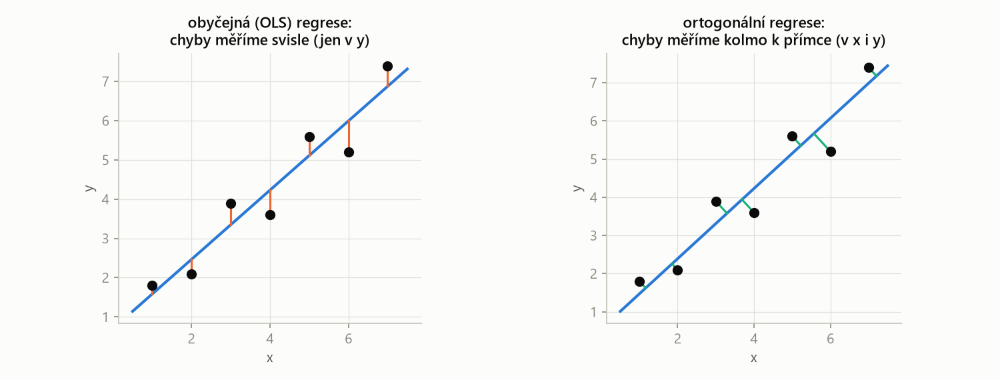
Obyčejná regrese (OLS) předpokládá, že \(x\) je změřené přesně a chyba je jen v \(y\) – minimalizuje svislé vzdálenosti. Ortogonální regrese předpokládá chybu v obou proměnných a minimalizuje kolmé vzdálenosti k přímce. Typické použití: kontrola měřidel – měří dva přístroje stejně? Ani jeden není „přesný“, oba mají chybu. (Mimochodem: ortogonální regrese hledá stejný směr jako první hlavní komponenta v PCA.)
Logistická regrese
Když je výstup binární (zdravý / nemocný), přímka nedává smysl – predikovala by hodnoty mimo 0–1. Lineární kombinaci proto „zabalíme“ do esovité (sigmoidní) funkce:
Logistická regrese je regresní model pro binární závislou proměnnou, který modeluje pravděpodobnost \(P(y=1\mid\mathbf x)\) jako sigmoidní (logistickou) funkci lineární kombinace vstupů. Ekvivalentně: lineární kombinace vstupů modeluje logaritmus šance \(\ln\frac{P}{1-P}\).
lineární regrese „ohnutá“ do tvaru písmene S, aby výstup byl vždy pravděpodobnost mezi 0 a 1. Klasifikátor pak řekne „nemocný“, když pravděpodobnost přesáhne zvolený práh (např. 0,5).
Šance (odds) jevu je poměr pravděpodobnosti, že nastane, a pravděpodobnosti, že nenastane: \(P/(1-P)\). Poměr šancí (OR) je podíl šancí ve dvou situacích; v logistické regresi \(e^{a_j}\) říká, kolikrát se šance zvýší, když \(x_j\) vzroste o 1 a ostatní vstupy zůstanou stejné.
pravděpodobnost 0,8 = šance 4 : 1. OR = 2 znamená „šance se zdvojnásobí“, OR = 1 „žádný vliv“, OR < 1 „šance klesá“.
Pro víc vstupních proměnných:
\[ P(y=1\mid \mathbf{x}) = \frac{1}{1+e^{-(a_1\,\text{věk} + a_2\,\text{pohlaví} + \dots + c)}} \]| \(a x + b\) | lineární funkce („skóre“), může být libovolně velká i záporná |
| \(1/(1+e^{-z})\) | převede skóre na pravděpodobnost v intervalu (0, 1); skóre 0 → pravděpodobnost 0,5 |
| \(a_j\) | vliv \(j\)-té proměnné: kladný zvyšuje pravděpodobnost výstupu, záporný snižuje; \(e^{a_j}\) je poměr šancí (odds ratio) při zvýšení proměnné o 1 |
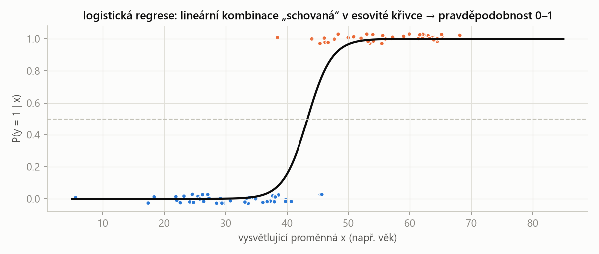
S více proměnnými logistický model říká, jaký vliv má každá proměnná na to, že je subjekt „zdravý“, při ostatních proměnných konstantních. Aby koeficienty šlo mezi sebou porovnat, musí být vstupy standardizované a nesmí být silně korelované (viz multikolinearita). Podobně se v klinických studiích používají modely rizika (v přednášce porovnání vlivu proměnných na riziko úmrtí nebo hospitalizace pro srdeční selhání v databázi MADIT-CRT, výsledkem jsou hazard ratio).
Regrese hledá funkci, která vysvětluje závislou proměnnou nezávislými. Lineární pro spojitý výstup, logistická pro binární. OLS = chyba jen v \(y\); ortogonální = chyba v obou.
Korelace
Pearsonův korelační koeficient \(r\) je kovariance dvou proměnných vydělená součinem jejich směrodatných odchylek. Je bezrozměrný, leží v intervalu \(\langle -1, 1 \rangle\) a měří sílu a směr lineárního vztahu; \(|r| = 1\) znamená, že body leží přesně na přímce.
„jak dobře se mrak bodů dá nahradit přímkou a jestli stoupá, nebo klesá“. Znaménko = směr, absolutní hodnota = těsnost. Sklon přímky ale neříká – strmá i plochá přímka mohou mít \(r = 1\).
| \(\operatorname{cov}(x,y)\) | kovariance – jak spolu proměnné kolísají (viz přednáška 2) |
| \(\operatorname{std}\) | směrodatné odchylky – dělením se zbavíme jednotek |
| \(r\) | od −1 (dokonalý klesající lineární vztah) přes 0 (žádný lineární vztah) po +1 (dokonalý rostoucí) |
Korelace popisuje lineární vazbu. \(r\) blízké 0 vylučuje lineární vztah, ale nevylučuje jiný (např. parabolický).
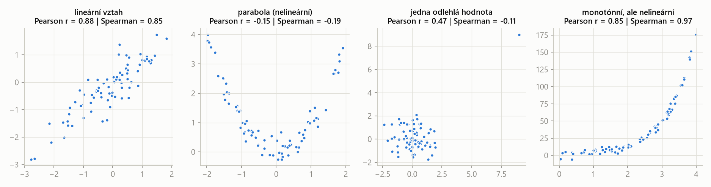
- Lineární vztah: oba koeficienty se shodují.
- Parabola: oba ≈ 0, přestože vztah je zjevně silný – korelace měří jen lineární (resp. monotónní) vztah.
- Odlehlá hodnota: jeden bod vyrobí z nekorelovaných dat „korelaci“ podle Pearsona; Spearman se nenechá ošálit.
- Monotónní nelineární (exponenciála): Spearman zachytí, že vztah je dokonale rostoucí, Pearson ho podhodnotí.
Spearmanův koeficient pořadové korelace \(r_s\) je Pearsonův korelační koeficient spočítaný na pořadích hodnot (každou hodnotu nahradíme jejím pořadím 1, 2, …, \(n\) v rámci proměnné). Měří sílu monotónního vztahu; \(|r_s| = 1\) znamená, že pořadí v obou proměnných se dokonale shoduje (nebo je přesně obrácené).
ptá se jen „když roste \(x\), roste (nebo klesá) i \(y\)?“ – nezáleží na tom, jestli rovnoměrně. Protože pracuje s pořadím, extrémní hodnota je prostě „první“ nebo „poslední“ a nemůže výsledek přetáhnout.
\(x\) = 1, 2, 3, 4, 5 a \(y\) = 2, 4, 8, 16, 1000. Pořadí \(y\): 1, 2, 3, 4, 5 – stejné jako u \(x\), proto \(r_s = 1\). Pearson vyjde jen asi 0,72, protože hodnota 1000 „neleží na přímce“ s ostatními.
| Pearsonův koeficient | Spearmanův koeficient |
|---|---|
| předpokládá normální rozdělení | nepředpokládá normální rozdělení |
| pracuje se skutečnými hodnotami | pracuje jen s pořadím hodnot (je to Pearson spočítaný na pořadích) |
| měří lineární vztah | měří monotónní vztah (roste/klesá, nemusí lineárně) |
| citlivý na odlehlé hodnoty | méně citlivý na odlehlé hodnoty |
Korelační matice
Spočítá korelaci každé proměnné s každou. Co v ní chceme vidět pro dobře fungující model? Vstupy silně korelované s výstupem a málo korelované mezi sebou (každý vstup nese novou informaci). Přednáška kombinuje do jednoho obrázku korelační matici (horní trojúhelník, s p-hodnotou), KDE grafy (dolní trojúhelník) a histogramy (diagonála).
- Korelace ≠ kauzalita. Dvě proměnné mohou korelovat proto, že obě závisí na třetí (věk). Taková třetí proměnná se nazývá matoucí (confounder): např. velikost bot a slovní zásoba u dětí silně korelují, protože obě rostou s věkem.
- Pearson na nenormálních datech nebo s odlehlými hodnotami (→ použij Spearmana).
- Záměna statistické významnosti a síly: \(r = 0{,}1\) může být při velkém \(n\) „významné“, ale vztah je slabý.
- Interpretace \(r \approx 0\) jako „žádný vztah“ – může jít o nelineární vztah.
Multikolinearita
Multikolinearita je stav, kdy jsou nezávislé proměnné (vstupy modelu) navzájem silně lineárně závislé – některý vstup lze s velkou přesností vyjádřit jako lineární kombinaci ostatních. V krajním případě (dokonalá multikolinearita) to jde přesně.
několik vstupů „říká totéž“. Model pak nedokáže rozhodnout, kterému z nich připsat vliv na výstup, a jejich koeficienty jsou nestabilní a špatně interpretovatelné.
Čím víc příznaky navzájem korelují (jsou lineárně závislé), tím vyšší je míra multikolinearity. Extrémní případ: jeden příznak lze přesně spočítat z ostatních. Pozor, multikolinearita nemusí být vidět v korelační matici: tři proměnné mohou být po dvojicích korelované jen středně, a přesto třetí přesně určit z prvních dvou (např. \(x_3 = x_1 + x_2\)). Proto se měří VIF, který bere v úvahu všechny ostatní proměnné najednou.
Proč vadí:
- porušuje předpoklad většiny modelů, že vstupy jsou nezávislé;
- znemožňuje porovnávat příznaky – když jsou výška a hmotnost silně spojené, model neví, „komu připsat zásluhu“, koeficienty jsou nestabilní (malá změna dat je výrazně změní, mohou mít i nesmyslné znaménko).
Jak ji měřit: VIF
Koeficient determinace \(R^2\) je podíl rozptylu závislé proměnné, který vysvětluje regresní model: \(R^2 = 1 - \frac{\sum (y_i-\hat y_i)^2}{\sum (y_i - \bar y)^2}\). Nabývá hodnot 0 (model nevysvětluje nic) až 1 (model vysvětluje vše, body leží přesně na modelu).
„kolik procent kolísání \(y\) umím vysvětlit pomocí \(x\)“. \(R^2 = 0{,}9\) znamená, že z rozdílů mezi pacienty v \(y\) jich 90 % vysvětluje model a 10 % zůstává nevysvětleno.
VIF \(j\)-té proměnné je \(1/(1-R_j^2)\), kde \(R_j^2\) je koeficient determinace regrese \(j\)-té proměnné na všech ostatních vstupních proměnných. Udává, kolikrát je rozptyl odhadu regresního koeficientu této proměnné zvětšen kvůli její lineární závislosti na ostatních vstupech.
zkusím proměnnou předpovědět z ostatních. Když to jde dobře (\(R_j^2\) blízko 1), proměnná je nadbytečná a VIF vyletí nahoru. Nezávislá proměnná má VIF = 1.
| \(R_j^2\) | koeficient determinace regrese, ve které \(j\)-tý příznak vysvětlujeme všemi ostatními příznaky – jak dobře ho z nich umíme „spočítat“ |
| \(\mathrm{VIF}_j\) | kolikrát je rozptyl (nejistota) koeficientu příznaku \(j\) zvětšen kvůli jeho korelaci s ostatními |
Orientační hranice: < 5 v pořádku, 5–10 vyžaduje pozornost, > 10 problém.
Když příznak umíme z ostatních vysvětlit z 90 % (\(R^2 = 0{,}9\)), je \(\mathrm{VIF} = 1/0{,}1 = 10\). Při \(R^2 = 0{,}5\) je VIF = 2. Nezávislý příznak (\(R^2 = 0\)) má VIF = 1.
Jak ji odstranit
- sloučením příznaků (výška a hmotnost → BMI);
- odstraněním příznaku (typicky postupně ten s nejvyšším VIF);
- nelineární transformací příznaků nebo redukcí celého souboru (PCA – hlavní komponenty jsou nekorelované; t-SNE, UMAP).
Ne. Standardizace jen posune a přeškáluje každý sloupec; korelace mezi sloupci zůstane úplně stejná (korelace na měřítku nezávisí), takže VIF se nezmění.
Model pro rozlišení druhu raménkové blokády (žádná / LBBB / RBBB), postupné odstraňování příznaku s nejhorším VIF, test 50% hold-out:
| krok | 0 | 1 | 2 | 3 | 4 |
|---|---|---|---|---|---|
| LR (F1) | 0,658 | 0,660 | 0,632 | 0,571 | 0,310 |
| SVM (F1) | 0,619 | 0,639 | 0,638 | 0,633 | 0,302 |
| RF (F1) | 0,585 | 0,574 | 0,541 | 0,491 | 0,302 |
Odstranění nejvíce redundantního příznaku LR a SVM mírně pomohlo, další odstraňování už bere užitečnou informaci. Otázka „který model je nejlepší?“ – nemáme dost informací: jediné rozdělení 50/50, bez intervalů spolehlivosti, rozdíly v řádu setin mohou být náhodné.
Analýza rozptylu (ANOVA) a mnohonásobné porovnávání
Otázka: liší se hodnota příznaku (např. EDYS) mezi skupinami L, R a Sync?
Jednofaktorová ANOVA je statistický test nulové hypotézy, že střední hodnoty spojité proměnné jsou shodné ve všech \(k\) skupinách (\(H_0: \mu_1 = \mu_2 = \dots = \mu_k\)). Testová statistika \(F\) je podíl rozptylu mezi skupinami a rozptylu uvnitř skupin. Předpokládá normalitu ve skupinách, shodné rozptyly a nezávislá pozorování.
zobecnění t-testu na víc než dvě skupiny. Ptá se: jsou rozdíly mezi průměry skupin větší, než by se dalo čekat jen z toho, jak moc se liší pacienti uvnitř jedné skupiny?
Proč nestačí udělat t-test pro každou dvojici skupin? Pro 3 skupiny jsou to 3 testy, pro 5 skupin už 10 – a s každým testem roste šance na falešně pozitivní výsledek (problém mnohonásobného testování). ANOVA položí jedinou otázku pro všechny skupiny najednou.
ANOVA porovnává dva rozptyly: jak moc se liší průměry skupin mezi sebou a jak moc kolísají hodnoty uvnitř skupin. Pokud jsou průměry skupin od sebe daleko ve srovnání s rozptylem uvnitř skupin, skupiny se liší.
Rozptyl mezi skupinami = jak kolísají průměry skupin kolem celkového průměru; rozptyl uvnitř skupin = jak kolísají hodnoty kolem průměru své skupiny.
\(F \approx 1\) → rozdíly průměrů jsou jen tak velké, jak by odpovídalo náhodě. Velké \(F\) → aspoň jedna skupina se liší.
| \(k\), \(N\) | počet skupin a celkový počet objektů |
| \(n_g\), \(\bar y_g\) | počet objektů a průměr ve skupině \(g\) |
| \(\bar y\) | celkový průměr všech objektů |
| čitatel | jak daleko jsou průměry skupin od celkového průměru (vážené velikostí skupiny) |
| jmenovatel | jak daleko jsou jednotlivé hodnoty od průměru své skupiny – „šum“ |
Dělení \(k-1\) a \(N-k\) (stupni volnosti) převádí součty čtverců na průměrné rozptyly, aby šly porovnat. Za platnosti \(H_0\) má \(F\) Fisherovo rozdělení \(F(k-1, N-k)\), z něj se spočítá p-hodnota.
K významnosti stačí, aby se odlišovala střední hodnota jen jedné skupiny. ANOVA neřekne, které skupiny se liší. Na to slouží post-hoc mnohonásobné porovnávání, např. Tukey HSD (Honestly Significant Difference): porovná všechny dvojice skupin a přitom hlídá, aby se při mnoha testech nezvýšilo riziko falešně pozitivního výsledku.
Post-hoc test je test provedený až po zamítnutí \(H_0\) v ANOVA, který porovná všechny dvojice skupin a určí, které se od sebe liší. Tukeyho HSD (honestly significant difference) to dělá tak, že pro všechna párová porovnání drží celkovou pravděpodobnost falešně pozitivního výsledku na hladině \(\alpha\).
ANOVA řekne „někde je rozdíl“, post-hoc test řekne „mezi L a R ano, mezi R a Sync ne“ – a přitom nepodvádí tím, že by dělal mnoho testů bez korekce.
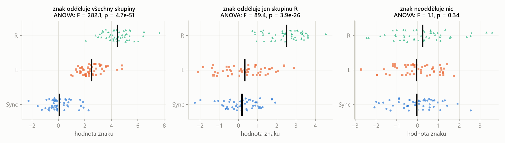
- EDYS: ANOVA F = 233, p < 0,001; Tukey HSD – znak odděluje všechny tři skupiny navzájem.
- Area QRS: F = 126, p < 0,001; Tukey – znak odděluje už jen skupinu L od ostatních.
- BMI: F = 0,9, p = 0,42 – znak neodděluje nic (ani pohlaví, ani BMI neoddělí L, R, Sync).
Obě první ANOVA jsou „významné“, ale teprve post-hoc test ukáže, že EDYS je pro rozlišení blokád mnohem užitečnější.
Shrnutí
Vztahy mezi proměnnými zkoumáme proto, abychom rozuměli datům, vybrali vstupy modelů, odhalili redundanci a správně interpretovali modely. Grafy (bodové, KDE, histogramy, pair-plot) odhalí nelinearity, podskupiny a slabiny kohorty. Regrese modeluje závislou proměnnou nezávislými – lineární pro spojitý výstup (OLS = chyba v y, ortogonální = chyba v obou), logistická pro binární výstup. Korelace měří sílu lineárního (Pearson) nebo monotónního (Spearman, na pořadích, robustní) vztahu; nulová korelace nevylučuje nelineární vztah a korelace neznamená kauzalitu. Multikolinearita (silně korelované vstupy) znehodnocuje interpretaci koeficientů; měříme ji VIF = 1/(1−R²) a řešíme sloučením, odstraněním nebo redukcí dimenze – ne standardizací. ANOVA testuje, zda se liší aspoň jedna skupina (poměr rozptylu mezi a uvnitř skupin), Tukey HSD řekne které.
Take-home messages
- Vhodný graf ukáže vztahy, které výpočet přehlédne – vždy se na data podívej.
- Korelační matice je rychlý a efektivní nástroj, ale vidí jen lineární/monotónní vztahy.
- Spearman = Pearson na pořadích; robustní k odlehlým hodnotám a nelinearitě.
- Multikolinearita: VIF > 10 je problém; standardizace ji neřeší.
- Snížení multikolinearity obvykle zvýší užitnou hodnotu (a interpretovatelnost) modelů.
- ANOVA řekne „někde je rozdíl“, Tukey HSD řekne „kde“.
Otázky ke zkoušce
Jaký je rozdíl mezi Pearsonovým a Spearmanovým korelačním koeficientem?
Pearson měří sílu lineárního vztahu, pracuje se skutečnými hodnotami, předpokládá normalitu a je citlivý na odlehlé hodnoty. Spearman pracuje jen s pořadím hodnot, měří monotónní vztah, normalitu nepředpokládá a je robustní k odlehlým hodnotám. U exponenciálního vztahu dá Spearman 1, Pearson méně; jedna odlehlá hodnota může Pearsona „vyrobit“, Spearmana ne.
Znamená nulová korelace, že proměnné spolu nesouvisejí?
Ne. Nulová korelace vylučuje jen lineární vztah. Proměnné mohou mít silný nelineární vztah, např. parabolický (\(y = x^2\) na symetrickém intervalu má \(r \approx 0\)). Proto je nutné se na data podívat graficky.
Co je multikolinearita, proč vadí a jak se měří?
Situace, kdy jsou vstupní proměnné navzájem silně korelované (lineárně závislé). Vadí, protože porušuje předpoklad nezávislosti vstupů a znemožňuje oddělit vliv jednotlivých proměnných – koeficienty jsou nestabilní a nelze je porovnávat. Měří se VIF\(_j = 1/(1-R_j^2)\), kde \(R_j^2\) je podíl rozptylu příznaku vysvětlený ostatními příznaky. Pod 5 OK, 5–10 pozor, nad 10 problém. Řeší se sloučením (výška + hmotnost → BMI), odstraněním příznaku nebo PCA; standardizace nepomůže.
Jaký je rozdíl mezi obyčejnou a ortogonální regresí?
Obyčejná (OLS) minimalizuje svislé vzdálenosti bodů od přímky – předpokládá chybu jen v závislé proměnné. Ortogonální minimalizuje kolmé vzdálenosti – předpokládá chybu v obou proměnných. Používá se např. při srovnání dvou měřicích přístrojů, kde ani jeden není referenční.
Jak funguje logistická regrese a co říkají její koeficienty?
Lineární kombinaci vstupů \(a_1x_1 + \dots + c\) převede sigmoidou \(1/(1+e^{-z})\) na pravděpodobnost v intervalu 0–1, takže se hodí pro binární výstup. Kladný koeficient zvyšuje pravděpodobnost výstupu, záporný snižuje; \(e^{a_j}\) je poměr šancí při zvýšení proměnné o jednotku při ostatních konstantních. Pro porovnání vlivu proměnných je potřeba standardizace a nízká multikolinearita.
Vysvětlete princip ANOVA. Proč potřebujeme post-hoc test?
ANOVA porovnává rozptyl průměrů skupin (mezi skupinami) s rozptylem hodnot uvnitř skupin; poměr je F statistika. Velké F znamená, že průměry jsou od sebe dál, než by odpovídalo náhodnému kolísání. Výsledek ale jen říká, že se liší aspoň jedna skupina – ne která. Post-hoc test (Tukey HSD) porovná všechny dvojice a kontroluje chybu při mnohonásobném testování. V přednášce: EDYS odděluje všechny skupiny, Area QRS jen L, BMI nic.
Jaké grafy použijete pro zkoumání vztahů a na co si dát pozor?
Bodový graf (skutečné body; s barvou pro kategorie), KDE graf (odhad hustoty, přehledný u velkých dat, pozor na zakrývání skupin – průhlednost), histogramy po skupinách, pair-plot (všechny dvojice), korelační matici. Pozor na rozdíl mezi zobrazením dat a zobrazením odhadu, na přeplácanost a na slabiny kohorty (např. rozdílný věk zdravých a nemocných).
Přednáška 5
Shluková analýza
Jak najít v datech skupiny podobných objektů, když nikdo předem neřekl, jaké skupiny existují. Klíčové je vědět, jak se měří podobnost, jak fungují hlavní algoritmy, jak zvolit počet shluků a jak výsledek ověřit.
Kdy se shluková analýza hodí
Shluková analýza (clustering) je soubor metod, které rozdělí objekty do skupin – shluků – tak, aby si objekty uvnitř jednoho shluku byly co nejpodobnější a objekty z různých shluků co nejméně podobné. Skupiny nejsou předem dané, metoda je odvozuje jen z dat.
„roztřiď pacienty do přihrádek podle toho, jak si jsou podobní“ – aniž by ti někdo řekl, jaké přihrádky existují a kolik jich je.
Učení s učitelem (supervised) se učí z dat, u kterých známe správnou odpověď (label, třídu) – cílem je předpovídat ji pro nová data (klasifikace, regrese). Učení bez učitele (unsupervised) správné odpovědi nemá a hledá strukturu v datech samotných (shlukování, redukce dimenze).
s učitelem = učím se z vyřešených příkladů; bez učitele = dostanu hromadu neoznačených dat a sám hledám, co v nich je.
- Když potřebujeme data roztřídit, ale nemáme data s označením (labely) pro trénink klasifikátoru.
- Když nás zajímá, zda data tvoří shluky: výzkum nových souvislostí, roztřídění patologií na užší podskupiny, čištění dat (např. před strojovým učením).
Je to učení bez učitele (unsupervised learning) – algoritmus nedostává správné odpovědi, hledá strukturu sám.
Holterovské EKG obsahuje hodně rušení. 16 454 záznamů označil dodavatel jako „nehodnotitelné kvůli rušení“. Tvoří shluky, které by odlišily důvody nečitelnosti (lámání kabelů, špatný kontakt elektrod, myopotenciály…)? 19 spojitých příznaků popisujících rušení, standardizovaných.
Nástroje: metriky vzdálenosti → hierarchické a nehierarchické metody → redukce dimenzionality → validace výsledků.
Metriky vzdálenosti – co znamená „podobné“
Shlukování stojí na tom, jak měříme vzdálenost (nepodobnost) dvou objektů. Volba metriky musí odpovídat úloze.
Metrika je funkce \(d(\mathbf a, \mathbf b)\), která každé dvojici objektů přiřadí nezáporné číslo – vzdálenost – a splňuje:
- \(d(\mathbf a,\mathbf b) = 0\) právě když \(\mathbf a = \mathbf b\);
- symetrii \(d(\mathbf a,\mathbf b) = d(\mathbf b,\mathbf a)\);
- trojúhelníkovou nerovnost \(d(\mathbf a,\mathbf c) \le d(\mathbf a,\mathbf b) + d(\mathbf b,\mathbf c)\).
pravidlo, jak číslem vyjádřit „jak moc se dva pacienti liší“. Malá vzdálenost = podobní. Různé metriky chápou podobnost různě (pravítkem, po osách, podle úhlu). Kosinová „vzdálenost“ trojúhelníkovou nerovnost obecně nesplňuje, přesto se jako míra nepodobnosti běžně používá.
Eukleidovská vzdálenost je délka úsečky mezi dvěma body: odmocnina ze součtu čtverců rozdílů souřadnic. Manhattanská vzdálenost je součet absolutních rozdílů souřadnic. Kosinová vzdálenost je \(1 - \cos\theta\), kde \(\theta\) je úhel mezi vektory obou objektů (vedených z počátku).
eukleidovská = „vzdušnou čarou“; manhattanská = „pěšky po pravoúhlých ulicích“; kosinová = „míří oba vektory stejným směrem?“ – nezáleží na délce, jen na tvaru profilu.
| Metrika | Vzorec | Kdy |
|---|---|---|
| eukleidovská (L2) | \(d_E = \sqrt{\sum_{i=1}^{N}(a_i-b_i)^2}\) | výchozí volba pro spojitá standardizovaná data; „vzdálenost pravítkem“ |
| manhattanská (L1, city-block) | \(d_M = \sum_{i=1}^{N}|a_i-b_i|\) | součet rozdílů po osách; méně citlivá na jeden velký rozdíl |
| kosinová | \(d_C = 1 - \cos\theta = 1 - \dfrac{\mathbf{a}\cdot\mathbf{b}}{\lVert\mathbf{a}\rVert\,\lVert\mathbf{b}\rVert}\) | jen úhel mezi vektory – porovnává tvar profilu, ne velikost (analýza textu, spektra) |
\(N\) = počet dimenzí (příznaků), \(a_i, b_i\) = souřadnice obou objektů v \(i\)-té dimenzi.
A = (1, 1), C = (4, 5). Eukleidovská: \(\sqrt{3^2 + 4^2} = 5\). Manhattanská: \(3 + 4 = 7\). Body A = (1, 1) a B = (3, 3) mají eukleidovskou vzdálenost 2,83, ale kosinovou 0 – leží na stejné polopřímce z počátku (B je jen „větší verze“ A).
Co může znamenat, když je eukleidovská vzdálenost dvou různých vzorků 0? Mají úplně stejné hodnoty všech příznaků – pravděpodobně jde o duplicitní záznam, nebo příznaky nestačí k rozlišení objektů.
Hierarchické (aglomerativní) shlukování
Hierarchické shlukování vytváří posloupnost do sebe vnořených rozdělení objektů – hierarchii shluků. Aglomerativní (shlukovací, „zdola nahoru“) varianta začíná s každým objektem jako samostatným shlukem a postupně slučuje nejbližší shluky; divizivní („shora dolů“) začíná jedním shlukem a postupně ho dělí.
jako rodokmen: jednotlivci → rodiny → rody → celý národ. Výsledkem není jedno rozdělení, ale celý strom, ze kterého si počet shluků vyberu až dodatečně.
- Start: co objekt, to shluk (n shluků).
- Najdi dva nejbližší shluky a slouč je do jednoho. Zapiš si, které to byly a v jaké vzdálenosti.
- Opakuj, dokud nezbude jediný shluk (n − 1 iterací).
- Historii slučování nakresli jako dendrogram a „řízni“ ho v zvolené výšce.
Dendrogram je stromový diagram, který zobrazuje průběh hierarchického shlukování: listy jsou jednotlivé objekty, každé spojení dvou větví znázorňuje sloučení dvou shluků a jeho výška odpovídá vzdálenosti, ve které ke sloučení došlo.
„zápis“ celého slučování v jednom obrázku. Čím níž se dvě větve spojí, tím podobnější objekty jsou.
Výška spojnice = vzdálenost, ve které byly shluky sloučeny. Nízké spojnice = velmi podobné objekty. Vodorovný řez dendrogramem určí počet shluků (kolik svislých čar protne). Dlouhá svislá čára bez slučování = shluky, které „drží pohromadě“ dlouho → přirozené rozdělení.
Jak měřit vzdálenost mezi shluky (metody vazby)
Vzdálenost dvou bodů známe. Ale jak daleko jsou dva shluky? Tím se metody liší:
Metoda vazby je pravidlo, které určuje vzdálenost mezi dvěma shluky ze vzdáleností mezi jejich body. Single: minimum vzdáleností dvojic bodů. Complete: maximum. Average: průměr všech vzdáleností dvojic. Ward: přírůstek vnitroshlukového součtu čtverců (WSS), který by sloučení způsobilo.
„jak daleko jsou od sebe dvě vesnice?“ – od nejbližších domů (single), od nejvzdálenějších (complete), průměrně (average), nebo „o kolik by se nová obec rozlezla, kdybych je spojil“ (Ward).
| Metoda | Vzdálenost shluků = | Chování |
|---|---|---|
| nejbližší soused (single linkage) | vzdálenost dvou nejbližších bodů | umí protáhlé a nekonvexní tvary, ale „řetězí“ – jeden most z šumových bodů spojí dva shluky |
| nejvzdálenější soused (complete) | vzdálenost dvou nejvzdálenějších bodů | kompaktní, kulaté shluky podobného průměru |
| průměrná vazba (average) | průměr všech vzdáleností mezi body obou shluků | kompromis |
| Wardova metoda | o kolik by se sloučením zvětšil rozptyl uvnitř shluku | minimalizuje vnitroshlukový rozptyl → kompaktní shluky podobné velikosti (podobně jako k-means) |
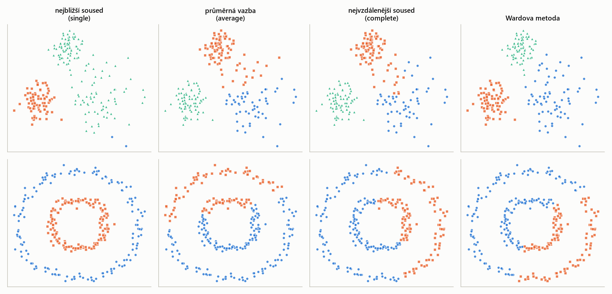
Žádná metoda není nejlepší obecně. Single linkage jako jediná rozdělí soustředné kruhy (sleduje „řetěz“ blízkých bodů), ale nahoře selže – řídký rozlehlý shluk připojí přes „most“ bodů k hustému shluku. Ward, complete a average hledají kompaktní shluky: na kruzích selžou (řežou je napůl). Nahoře si nejlépe vede Ward; average a complete „ukousnou“ kus řídkého shluku sousedovi, protože jejich kritérium nesedí na shluky velmi rozdílné velikosti a hustoty. Volba metody musí odpovídat představě o tvaru shluků.
Jak zvolit počet shluků
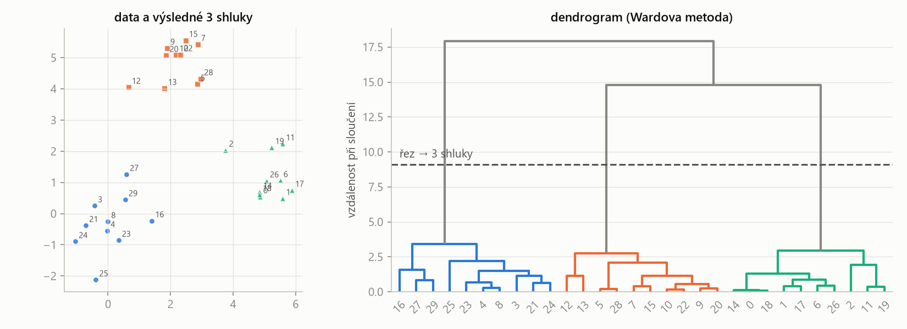
- Z tvaru bodového grafu a dendrogramu – u 2D dat často zjevné.
- Největší vzdálenost nepřerušená slučováním – najdi nejdelší svislý úsek dendrogramu a řízni v něm. (V přednášce tohle pravidlo vedlo na 2 shluky, což bylo chybně – pravidla jsou jen vodítka.)
- Změna vzdálenosti slučování – vynes vzdálenost sloučení proti iteraci; místo prudké změny nárůstu („loket“) signalizuje potenciální počet shluků.
U 19rozměrných EKG dat nejde počet shluků odhadnout „okem“. Pomůže zobrazit výsledek v prvních dvou hlavních komponentách (PCA zvýraznila shluky, které v původních dvojicích příznaků čitelné nebyly). Přechod ze 3 na 5 shluků dal skupiny s 4308, 4081 a 1491 záznamy… Pak je nutné prohlédnout reálné záznamy z každého shluku a ptát se: dává rozdělení smysl? Můžeme věřit N = 3?
Nehierarchické metody: k-means
k-means je nehierarchická shlukovací metoda, která rozdělí objekty do předem zvoleného počtu \(K\) shluků tak, aby byl co nejmenší součet čtverců eukleidovských vzdáleností bodů od těžiště (centroidu) jejich shluku. Těžiště shluku je bod, jehož souřadnice jsou průměry souřadnic všech bodů shluku.
„rozmísti \(K\) středů tak, aby každý bod měl svůj střed co nejblíž“. Každý bod patří k nejbližšímu středu a každý střed je uprostřed svých bodů. Nehierarchická = vznikne rovnou jedno rozdělení, žádný strom.
- Vygeneruj (zvol) K počátečních těžišť shluků.
- Každý bod přiřaď ke shluku s nejbližším těžištěm (eukleidovská vzdálenost).
- Přepočítej těžiště jako průměr bodů, které do shluku patří.
- Pokud se kterékoli těžiště posunulo víc než o toleranci, opakuj od kroku 2.
Co z postupu vyplývá (otázky z přednášky):
- Co musíme znát před spuštěním? Počet shluků K a způsob inicializace těžišť. Výsledek závisí na startu → algoritmus se spouští vícekrát a vezme se nejlepší výsledek.
- Potřebujeme standardizovaná data? Ano – pracuje s eukleidovskou vzdáleností, takže proměnná s velkým rozsahem by dominovala.
- Můžeme mít kategorická data? Ne – průměr kategorií („průměrná krevní skupina“) nedává smysl.
- Těžiště je průměr → citlivost na odlehlé hodnoty; k-means hledá kulaté (konvexní) shluky podobné velikosti.
Jak určit K
- ze znalosti problematiky;
- vizuálně z bodového grafu (při mnoha dimenzích po redukci, např. PCA);
- WSS a metoda lokte;
- Calinski–Harabasz index;
- kombinací výše uvedeného.
| \(d_n\) | vzdálenost \(n\)-tého bodu shluku od jeho těžiště |
| \(N_k\) | počet bodů v \(k\)-tém shluku |
| WSS | celkový součet čtverců vzdáleností k těžištím (within sum of squares) – „jak moc jsou shluky rozplizlé“ |
WSS (within-cluster sum of squares, vnitroshlukový součet čtverců) je součet čtverců vzdáleností všech bodů od těžišť jejich shluků. Metoda lokte (elbow method) vynese WSS proti počtu shluků \(K\) a za vhodné \(K\) zvolí místo, kde se pokles křivky výrazně zpomalí („loket“).
WSS měří, jak „rozplizlé“ jsou shluky. Dalšími shluky ho vždy zmenšíme, ale od určitého \(K\) už jen trochu – tam se přestává vyplácet shluky přidávat.
WSS s rostoucím K vždy klesá (při K = n je nula – každý bod je sám sobě těžištěm). Proto nehledáme minimum, ale „loket“ – místo, za kterým přidání dalšího shluku už WSS sníží jen málo.
Calinski–Harabasz index je poměr rozptylu mezi shluky a rozptylu uvnitř shluků, každý vydělený svými stupni volnosti: \(\mathrm{CH} = \dfrac{B/(K-1)}{W/(N-K)}\), kde \(W\) je WSS a \(B = \sum_k N_k \lVert \mathbf c_k - \mathbf c \rVert^2\) je součet čtverců vzdáleností těžišť shluků \(\mathbf c_k\) od celkového těžiště \(\mathbf c\) (vážený velikostí shluku \(N_k\)). Vyšší hodnota = lepší rozdělení.
stejná logika jako F-statistika v ANOVA: „jsou shluky od sebe daleko ve srovnání s tím, jak jsou samy rozptýlené?“ Hledáme \(K\) s maximálním CH. Korekce \(K-1\) a \(N-K\) brání tomu, aby index rostl jen díky tomu, že přidáváme shluky.
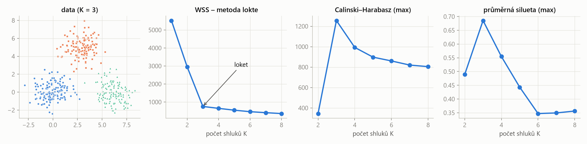
Na „učebnicových“ datech se kritéria shodnou: loket WSS, maximum CH i siluety leží u správného K. Na reálných EKG datech to tak hezké nebylo: elbow metoda byla prakticky nepoužitelná (žádný zřetelný loket), CH ukazoval na 7 nebo 2 shluky. Při K = 7 vznikl i shluk s jediným záznamem (N = 1) – to je odlehlá hodnota, ne shluk. Kritéria jsou vodítka, ne pravda.
Alternativy: k-medoids a DBSCAN
Medoid shluku je ten jeho skutečný objekt, který má nejmenší součet vzdáleností ke všem ostatním objektům shluku. k-medoids je obdoba k-means, ve které středem každého shluku není průměr (těžiště), ale medoid; minimalizuje součet vzdáleností (v libovolné metrice) objektů od medoidu jejich shluku.
místo „virtuálního průměrného pacienta“ vybereme za zástupce shluku skutečného, nejtypičtějšího pacienta. Jeden extrém ho nepřetáhne a dá se ukázat („takhle vypadá typický záznam shluku 2“).
DBSCAN (density-based spatial clustering of applications with noise) je shlukovací metoda založená na hustotě. Bod je jádrový, pokud má ve svém okolí o poloměru \(\varepsilon\) alespoň min_samples bodů. Shluk tvoří jádrové body navzájem dosažitelné přes okolí jiných jádrových bodů, spolu s hraničními body ležícími v jejich okolí. Body, které nepatří k žádnému shluku, jsou šum.
shluk = souvislá „hustě obydlená oblast“, ať má jakýkoli tvar. Řídká místa shluky oddělují a osamocené body zůstanou neoznačené jako šum.
| k-medoids | DBSCAN | |
|---|---|---|
| princip | jako k-means, ale střed shluku je skutečný bod (medoid) | shluk = oblast s dostatečnou hustotou bodů |
| výhody | menší vliv odlehlých hodnot; interpretovatelné i u kategorických proměnných; libovolná metrika (ve scikit implicitně manhattanská) | nepotřebuje znát počet shluků; zvládne nekonvexní tvary; odlehlé body označí jako šum |
| nevýhody | výrazně delší výpočet (cca 10× na úloze z přednášky) | potřebuje nastavit ε (poloměr okolí) a minimální počet bodů v okolí; špatně zvládá shluky různé hustoty |
Kolem každého bodu nakresli kruh o poloměru ε. Má-li v něm aspoň min_samples bodů, je to jádrový bod. Jádrové body, které na sebe dosáhnou, tvoří jeden shluk; body na okraji (v dosahu jádra, ale samy ne jádrové) se přidají. Co nedosáhne nikam, je šum. Shluk se tak „rozlévá“ po hustých oblastech libovolného tvaru.
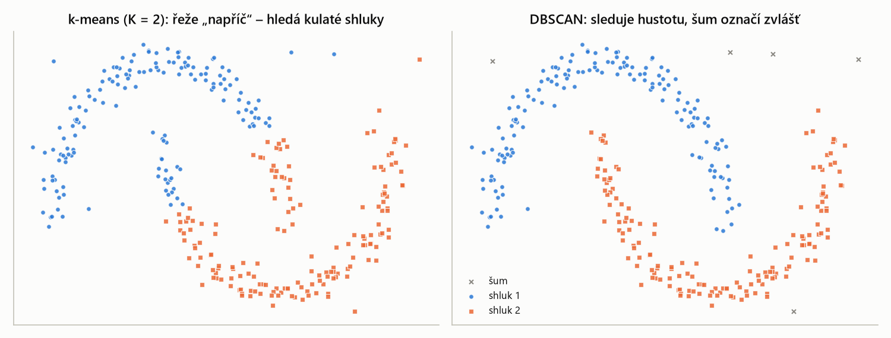
k-means dělí prostor na „kulaté“ oblasti kolem těžišť, takže půlměsíce rozřízne napříč. DBSCAN sleduje hustotu, najde oba tvary a rozptýlené body vyřadí jako šum. Na reálných EKG datech (po UMAP) ale DBSCAN našel 36 shluků a nejasné oblasti slil dohromady, zatímco k-means (K = 4) vytvářel podobně velké shluky a jeden zjevný shluk přehlédl. Nic z toho není perfektní – je potřeba ladit a kombinovat.
Shlukování s redukcí dimenzionality
Při mnoha příznacích je vhodné data před shlukováním (nebo alespoň pro zobrazení výsledku) zredukovat:
- PCA natočí podprostor tak, aby co nejlépe pokryl variabilitu dat (přednáška 6);
- UMAP (příp. t-SNE) převede data do 2D se zachováním topologických vazeb (přednáška 11). Je žádoucí věnovat čas nastavení parametrů a zafixovat random seed (reprodukovatelnost).
V přednášce: UMAP + aglomerativní shlukování rozdělily EKG data na 7 dobře viditelných skupin (376 až 3486 záznamů).
Validace výsledků
Validace shlukování je hodnocení kvality nalezených shluků. Vnější (externí) kritéria porovnávají shluky se známým „správným“ rozdělením do tříd (ARI, homogenita, kompletnost, V-skóre). Vnitřní (interní) kritéria hodnotí shluky jen z dat samotných – podle kompaktnosti a oddělenosti (silueta, Calinski–Harabasz, Davies–Bouldin).
vnější = „sedí to s pravdou?“ (máme-li ji); vnitřní = „vypadají shluky jako pěkné, oddělené hromádky?“
Když známe skutečné třídy
Randův index je podíl dvojic objektů, u kterých se dvě rozdělení „shodnou“ – obě dají dvojici do stejné skupiny, nebo obě do různých. Adjusted Rand Index je jeho verze opravená o shodu, kterou bychom čekali čistě náhodou: 1 = rozdělení jsou totožná, ≈ 0 = shoda jako u náhodného přiřazení, záporné = horší než náhoda.
projdu všechny dvojice pacientů a ptám se: „Jsou spolu ve stejném shluku a zároveň ve stejné skutečné třídě?“ (nebo ani v jednom). Názvy (čísla) shluků nehrají roli – jde jen o to, kdo je s kým.
Homogenita je míra (0–1) toho, že každý shluk obsahuje objekty jen jedné skutečné třídy. Kompletnost je míra (0–1) toho, že všechny objekty jedné třídy padnou do stejného shluku. V-skóre je jejich harmonický průměr.
homogenita = „shluky jsou čisté“, kompletnost = „třídy nejsou rozsekané“. Jedno lze snadno vyhrát na úkor druhého (každý bod zvlášť → dokonalá homogenita; všechno v jednom shluku → dokonalá kompletnost), proto se sledují obě.
- Adjusted Rand Index (ARI) – podobnost dvou rozdělení do skupin; rozsah ⟨−1, 1⟩, ideál 1, náhodné přiřazení ≤ 0; nezáleží na tom, jak jsou skupiny očíslované.
- Homogenita – obsahuje každý nalezený shluk prvky jen jedné skutečné třídy?
- Kompletnost – jsou všechny prvky jedné třídy ve stejném shluku?
- V-skóre – harmonický průměr homogenity a kompletnosti.
| K | 1 | 2 | 3 | 4 | 5 | 6 |
|---|---|---|---|---|---|---|
| ARI | 0,00 | 0,57 | 0,97 | 0,84 | 0,73 | 0,57 |
| homogenita | 0,00 | 0,58 | 0,95 | 0,94 | 0,94 | 0,94 |
| kompletnost | 1,00 | 1,00 | 0,95 | 0,78 | 0,67 | 0,58 |
| V-skóre | 0,00 | 0,73 | 0,95 | 0,85 | 0,78 | 0,72 |
Logika: s rostoucím K roste homogenita (malé shluky jsou „čisté“), ale klesá kompletnost (třídy se rozdrobí). Při K = 1 je kompletnost dokonalá, homogenita nulová. Kompromis (V-skóre, ARI) ukazuje na K = 3.
Když skutečné třídy neznáme
Můžeme ručně označit část dat a postupovat jako výše, nebo použít vnitřní kritéria:
Silueta objektu \(i\) je \(s(i) = \frac{b(i)-a(i)}{\max\{a(i),b(i)\}}\), kde \(a(i)\) je průměrná vzdálenost objektu k ostatním objektům jeho shluku a \(b(i)\) průměrná vzdálenost k objektům nejbližšího jiného shluku. Nabývá hodnot −1 až 1. Průměrná silueta přes všechny objekty hodnotí celé shlukování.
každý bod se ptá: „jsem blíž svým, nebo sousedům?“ Blízko 1 = jasně patřím sem; kolem 0 = stojím na hranici; záporné = asi jsem ve špatném shluku.
| \(a(i)\) | průměrná vzdálenost bodu \(i\) k ostatním bodům jeho shluku (soudržnost) |
| \(b(i)\) | průměrná vzdálenost bodu \(i\) k bodům nejbližšího jiného shluku (oddělenost) |
| \(s(i)\) | blízko 1 = bod je dobře zařazen; 0 = na hranici; záporné = spíš patří jinam. Průměr přes body = průměrná silueta. |
Davies–Bouldin index je průměr přes všechny shluky z hodnoty „nejhoršího souseda“: pro shluk \(k\) se najde jiný shluk \(j\), pro který je poměr \(\frac{s_k + s_j}{d(\mathbf c_k, \mathbf c_j)}\) největší (\(s\) = průměrná vzdálenost bodů shluku od jeho těžiště, \(d\) = vzdálenost těžišť). Nižší hodnota = lepší rozdělení.
pro každý shluk zjistím, s kterým sousedem se mu nejhůř „rozumí“ – oba jsou rozplizlé a přitom mají středy blízko. Čím menší je tato „zmatenost“ v průměru, tím lepší shlukování.
| K | 2 | 3 | 4 | 5 | 6 | lepší je |
|---|---|---|---|---|---|---|
| průměrná silueta | 0,75 | 0,68 | 0,59 | 0,51 | 0,34 | vyšší |
| Calinski–Harabasz | 2437 | 3794 | 2928 | 2512 | 2379 | vyšší |
| Davies–Bouldin | 0,35 | 0,45 | 0,75 | 0,87 | 1,1 | nižší |
Na stejných datech (skutečné K = 3) silueta i Davies–Bouldin preferují K = 2, Calinski–Harabasz K = 3. Indexy se neshodují, protože každý měří „kvalitu“ trochu jinak (Davies–Bouldin hodnotí hranice mezi shluky). Proto se kombinují s vlastním odhadem a znalostí úlohy.
Pro zajímavost: stabilitu shluků lze ověřit bootstrapem (bootstrap = vytvoření nového vzorku stejné velikosti náhodným výběrem objektů z původních dat s vracením – některé objekty se v něm objeví vícekrát, jiné vůbec) – data opakovaně převzorkujeme s nahrazením, znovu nashlukujeme a měříme shodu shluků (Jaccardův index). Správné shluky se objevují opakovaně. (V Pythonu zatím chybí, v R existuje.)
Shrnutí
Shluková analýza je učení bez učitele: hledá skupiny podobných objektů. Základem je metrika vzdálenosti (eukleidovská, manhattanská, kosinová), která musí odpovídat úloze. Hierarchické aglomerativní shlukování postupně slučuje nejbližší shluky a výsledek ukáže v dendrogramu; chování určuje metoda vazby (single řetězí a zvládne nekonvexní tvary, complete/average/Ward hledají kompaktní shluky). k-means střídá přiřazení k nejbližšímu těžišti a přepočet těžišť; potřebuje znát K, standardizovaná spojitá data, je citlivý na start a odlehlé hodnoty a preferuje kulaté shluky podobné velikosti. k-medoids používá skutečné body jako středy, DBSCAN hustotu (bez K, s detekcí šumu). Počet shluků volíme kombinací znalosti, vizualizace a kritérií (WSS–loket, Calinski–Harabasz, silueta, Davies–Bouldin). Výsledky validujeme – se známými třídami (ARI, homogenita, kompletnost, V-skóre), bez nich vnitřními indexy. Při mnoha příznacích pomáhá PCA nebo UMAP.
Take-home messages (podle přednášky)
- Používej jen vstupy, které souvisejí s požadovaným shlukováním.
- Spojité vstupy pro shlukování standardizuj.
- Vysoký počet proměnných lze redukovat PCA, případně PCA + UMAP.
- Volba metody i metriky musí odpovídat úloze (k-means ne na kategorická data, eukleidovská vzdálenost ne na řetězce/slova).
- Volbou a nastavením metody ovlivníš citlivost na odlehlé hodnoty.
- Počet shluků odhaduj nástroji (WSS, CH, silueta, DB) a kombinuj je s vlastním úsudkem.
- Celý postup vyžaduje pečlivé nastavení – a kontrolu skutečných objektů ve shlucích.
Otázky ke zkoušce
Popište algoritmus k-means. Jaké má předpoklady a slabiny?
Zvolím K, náhodně umístím K těžišť; každý bod přiřadím k nejbližšímu těžišti; těžiště přepočítám jako průměr přiřazených bodů; opakuji, dokud se těžiště hýbou. Minimalizuje WSS. Předpoklady: znám K, data jsou spojitá a standardizovaná (eukleidovská vzdálenost). Slabiny: závislost na počáteční volbě (spouští se vícekrát), citlivost na odlehlé hodnoty (průměr), preferuje kulaté shluky podobné velikosti, nezvládne nekonvexní tvary ani kategorická data.
Jak funguje hierarchické shlukování a co je dendrogram?
Aglomerativní varianta začne s každým objektem jako samostatným shlukem a v každém kroku sloučí dva nejbližší shluky, až zbude jeden. Dendrogram je strom této historie: výška spojení odpovídá vzdálenosti sloučení. Vodorovným řezem zvolím počet shluků; vhodné místo je tam, kde jsou dlouhé svislé úseky bez slučování nebo kde prudce roste vzdálenost slučování.
Jaké znáte metody vazby a jak se liší?
Single (nejbližší soused) – vzdálenost nejbližších bodů; řetězí, zvládne protáhlé tvary, citlivá na šum. Complete (nejvzdálenější soused) – nejvzdálenější body; kompaktní shluky. Average – průměr všech vzdáleností; kompromis. Ward – sloučí ty shluky, jejichž spojením nejméně vzroste vnitroshlukový rozptyl; kompaktní shluky podobné velikosti.
Jak určíte optimální počet shluků?
Kombinací: znalost problematiky; vizuálně (bodový graf, po PCA/UMAP; dendrogram); metoda lokte na WSS (WSS vždy klesá, hledám zlom); Calinski–Harabasz (maximum; poměr rozptylu mezi a uvnitř shluků); průměrná silueta (maximum); Davies–Bouldin (minimum). Indexy se mohou neshodovat, proto je kombinuji s úsudkem a kontrolou skutečných objektů ve shlucích.
Jaký je rozdíl mezi k-means, k-medoids a DBSCAN?
k-means: střed = průměr bodů, potřebuje K, kulaté shluky, citlivý na odlehlé hodnoty. k-medoids: střed = skutečný bod, robustnější, libovolná metrika, použitelný i pro kategorie, ale pomalý. DBSCAN: shluky jako husté oblasti, nepotřebuje K, ale ε a minimální počet bodů; zvládne nekonvexní tvary a označí šum, hůř zvládá shluky různé hustoty.
Jak validovat výsledek shlukování?
Se známými třídami: ARI (−1 až 1, 1 ideál, ≤ 0 náhoda), homogenita (shluk obsahuje jednu třídu), kompletnost (třída je v jednom shluku), V-skóre (jejich harmonický průměr). Bez tříd: silueta (soudržnost vs. oddělenost bodu), Calinski–Harabasz, Davies–Bouldin; případně stabilita při bootstrapu. Vždy navíc věcná kontrola – dávají shluky smysl?
Proč standardizovat data před shlukováním a kdy použít kosinovou vzdálenost?
Shlukování stojí na vzdálenostech; bez standardizace by proměnná s největším rozsahem (např. v tisících) určovala vzdálenost téměř sama. Kosinovou vzdálenost použiji, když mě zajímá tvar profilu (směr vektoru), ne jeho velikost – např. u textu (frekvence slov), spekter nebo profilů exprese.
Přednáška 6
Analýza hlavních komponent (PCA)
PCA je nejdůležitější ordinační metoda: z mnoha korelovaných příznaků vytvoří několik nových, nekorelovaných „super-příznaků“, které zachytí většinu informace. Geometricky jde jen o otočení souřadnicových os tak, aby první osa ležela ve směru největšího rozptylu dat.
Ordinační analýza: proč slučovat příznaky
Máme pacienty popsané mnoha příznaky (věk, tep, teplota, dech, tlak…). Jak je zobrazit? Interpretovat? Analyzovat? Ordinační analýza „sloučí“ původních \(p\) příznaků do menšího počtu \(K \ll p\) nových příznaků. Pohled na data v novém prostoru často přináší nové, užitečné informace o objektech.
Příznaky se často navzájem vysvětlují – jsou korelované, nesou část stejné informace (redundantní rozměr dat). Tep a teplota u horečky rostou spolu; hmotnost a obvod pasu také. Když nesou podobnou informaci, můžeme je nahradit jedním novým příznakem a skoro nic neztratíme. Unikátní informaci o objektech nesou jen „nezávislé směry“ v datech.
Princip PCA
Analýza hlavních komponent je lineární ordinační metoda, která původní \(p\) korelovaných proměnných nahradí \(p\) novými proměnnými – hlavními komponentami – které jsou navzájem nekorelované, jsou lineárními kombinacemi původních proměnných a jsou seřazené sestupně podle rozptylu, který zachycují. Redukce dimenze spočívá v ponechání jen prvních \(K\) komponent.
otočím souřadnicové osy tak, aby první osa mířila tam, kde jsou data nejvíc „roztažená“, druhá kolmo na ni do směru druhého největšího roztažení atd. Pak zahodím osy, ve kterých se skoro nic neděje.
\(k\)-tá hlavní komponenta je taková lineární kombinace \(PC_k = v_{k1}x_1 + \dots + v_{kp}x_p\) (s jednotkovým vektorem vah, \(\lVert\mathbf v_k\rVert = 1\)), která má největší možný rozptyl mezi všemi kombinacemi nekorelovanými s předchozími \(k-1\) komponentami.
nový „super-příznak“ namíchaný ze všech původních. PC1 je nejinformativnější možná směs; PC2 nejinformativnější směs, která neopakuje nic z PC1; atd.
Lineární kombinace proměnných \(x_1, \dots, x_p\) je výraz \(a_1x_1 + a_2x_2 + \dots + a_px_p\), kde \(a_j\) jsou čísla (koeficienty, váhy).
„vážený součet“: každou proměnnou vynásobím jejím koeficientem a sečtu. Kladná váha = proměnná výsledek zvyšuje, záporná = snižuje, nulová = nehraje roli.
PCA vytvoří z původních příznaků nové příznaky – hlavní komponenty (principal components, PC). Je jich stejně jako původních (\(p\)), ale jsou seřazené podle důležitosti:
- „Co nejvíc informace o původních příznacích“ – a informace je uchovaná ve variabilitě dat (rozptyl) a ve vzájemných vztazích (kovariance, korelace).
- První komponenty vysvětlují velkou část rozptylu (užitečná informace), poslední komponenty zanedbatelnou část (šum).
- Proto stačí ponechat prvních \(K\) komponent → redukce dimenzionality se zachováním dostatečné informace.
| \(\mathbf{x}\) | vektor (standardizovaných / centrovaných) hodnot příznaků jednoho objektu |
| \(\mathbf{v}_k\) | transformační vektor \(k\)-té komponenty – váhy, kterými se příznaky „míchají“ |
| \(v_{kj}\) | váha (komponentní zátěž) příznaku \(j\) v komponentě \(k\) – jak moc příznak komponentu tvoří |
| \(PC_k\) | hodnota nové proměnné pro daný objekt (komponentní skóre) |
PCA vs. regresní analýza
| Regresní analýza | PCA | |
|---|---|---|
| rovnice | \(y = x_1a_1 + x_2a_2 + \dots\) | \(PC = x_1v_1 + x_2v_2 + \dots\) |
| levá strana | měřená závislá (vysvětlovaná) proměnná | neměřitelná, latentní, umělá veličina („hypotetický vliv“) |
| pravá strana | nezávislé (vysvětlující) proměnné | všechny příznaky jsou rovnocenné (žádný není závislý) |
| co popisuje | příčinnou závislost \(y\) na \(x\) | vzájemné vztahy mezi příznaky působením umělých veličin |
Rovnocenné tu neznamená „stejně důležité svým významem“ – jen že PCA nerozlišuje vstup a výstup. Komponenty jsou umělé; někdy mají věcnou interpretaci (nová hypotéza o datech), ale ne vždy.
Latentní (skrytá) proměnná je veličina, která není přímo měřena, ale je odvozena (vypočtena nebo odhadnuta) z měřených proměnných. Hlavní komponenty i faktory ve faktorové analýze jsou latentní proměnné.
něco, co přímo nezměříme, ale „projevuje se“ v tom, co změříme – např. „živočišný typ stravy“ se projeví spotřebou masa, mléka a vajec zároveň.
Geometrický princip: otočení os
Centrování je odečtení průměru každé proměnné od všech jejích hodnot, \(x_{ij} - \bar x_j\). Centrovaná data mají ve všech proměnných průměr 0, takže jejich centroid leží v počátku souřadnic. (Standardizace = centrování + vydělení směrodatnou odchylkou.)
posunu celý mrak bodů tak, aby jeho těžiště bylo v bodě (0, 0, …). Tvar ani natočení mraku se nezmění. PCA otáčí osy kolem počátku, proto musí počátek ležet uprostřed dat.
(Kolmá) projekce bodu \(\mathbf x\) na přímku procházející počátkem se směrem jednotkového vektoru \(\mathbf v\) je bod přímky nejbližší k \(\mathbf x\). Jeho souřadnice na přímce je skalární součin \(\mathbf x \cdot \mathbf v = x_1v_1 + \dots + x_pv_p\).
„stín“ bodu na ose, když na něj svítím kolmo. Číslo, kde stín dopadne, je nová souřadnice bodu na této ose – komponentní skóre.
Celá PCA stojí na jedné operaci: každá komponenta je skalární součin objektu s transformačním vektorem (přesná definice je v kapitole 7). Výsledkem skalárního součinu dvou vektorů je jedno číslo: násobí se složky na stejných pozicích a součiny se sečtou.
1. Po složkách:
\[ \mathbf a\cdot\mathbf b = a_1b_1 + a_2b_2 + \dots + a_pb_p = \sum_{j=1}^{p} a_jb_j \]2. Maticově jako řádek krát sloupec:
\[ \mathbf a^T\mathbf b = \begin{pmatrix} a_1 & a_2 & \cdots & a_p \end{pmatrix} \begin{pmatrix} b_1\\ b_2\\ \vdots\\ b_p \end{pmatrix} \]3. Geometricky:
\[ \mathbf a^T\mathbf b = \lVert\mathbf a\rVert\,\lVert\mathbf b\rVert\cos\theta \]| \(\mathbf a, \mathbf b\) | dva vektory o stejném počtu složek \(p\) (např. objekt a transformační vektor) |
| \(a_j, b_j\) | \(j\)-té složky vektorů |
| \(\mathbf a^T\) | transpozice: sloupcový vektor „položený“ do řádku, aby šlo násobit řádek × sloupec |
| \(\lVert\mathbf a\rVert\) | délka (norma) vektoru, \(\lVert\mathbf a\rVert = \sqrt{\mathbf a^T\mathbf a}\) |
| \(\theta\) | úhel mezi vektory |
Co z toho plyne pro PCA:
- \(\mathbf a^T\mathbf a = \lVert\mathbf a\rVert^2\) – podmínka \(\mathbf v^T\mathbf v = 1\) tedy znamená, že transformační vektor má délku 1;
- \(\mathbf a^T\mathbf b = 0\) ⇔ \(\cos\theta = 0\) ⇔ vektory jsou kolmé – tak se ověřuje kolmost os PC;
- je-li \(\lVert\mathbf v\rVert = 1\), je \(\mathbf x^T\mathbf v = \lVert\mathbf x\rVert\cos\theta\) přesně délka „stínu“ bodu na ose \(\mathbf v\) – tedy projekce = komponentní skóre.
Maticově pro všechny objekty a všechny komponenty najednou. Násobení matic je jen hromada skalárních součinů: prvek \(y_{ik}\) součinu \(\mathbf Y = \mathbf X\mathbf V\) je skalární součin \(i\)-tého řádku \(\mathbf X\) (objekt) a \(k\)-tého sloupce \(\mathbf V\) (transformační vektor):
\[ y_{ik} = \sum_{j=1}^{p} x_{ij}\,v_{jk} \]Příklad z přednášky: objekt \(\mathbf x = (0{,}6;\ 1{,}4)\) a matice \(\mathbf V\) s otočením o 45°.
\[ \begin{pmatrix} 0{,}6 & 1{,}4 \end{pmatrix} \begin{pmatrix} 0{,}7071 & -0{,}7071\\ 0{,}7071 & 0{,}7071 \end{pmatrix} = \begin{pmatrix} y_1 & y_2 \end{pmatrix} \]První sloupec:
\[ \begin{aligned} y_1 &= 0{,}6\cdot 0{,}7071 + 1{,}4\cdot 0{,}7071 \\ &= 0{,}424 + 0{,}990 = 1{,}414 \end{aligned} \]Druhý sloupec:
\[ \begin{aligned} y_2 &= 0{,}6\cdot(-0{,}7071) + 1{,}4\cdot 0{,}7071 \\ &= -0{,}424 + 0{,}990 = 0{,}566 \end{aligned} \]Most ke kovarianční matici. Stejně se dá zapsat i kovarianční matice: když \(\mathbf X_c\) jsou centrovaná data (sloupec = příznak), pak
\[ \mathbf S = \frac{1}{n-1}\,\mathbf X_c^T\mathbf X_c \]Každá kovariance \(s_{jk}\) je tedy (vydělený) skalární součin centrovaných sloupců \(j\) a \(k\). Korelace je pak kosinus úhlu mezi nimi: \(r_{jk} = \cos\theta_{jk}\). Stejný směr sloupců = korelace 1, kolmé sloupce = 0, opačné = −1.
Představ si 2D mrak bodů (příznak 1 a příznak 2). PCA hledá novou soustavu souřadnic otočenou kolem počátku (data jsou centrovaná, takže počátek = centroid):
- Všechny body promítneme kolmo na zvolenou osu skrz počátek. Hodnoty projekcí = nové souřadnice objektů. Jejich rozptyl \(s_1\) říká, kolik variability tato osa zachycuje.
- Os lze zvolit nekonečně mnoho (nejednoznačnost) – která je „nejlepší“? PCA odpovídá: ta s největším rozptylem projekcí, \(\max(s_1, s_2, \dots)\). To je osa PC1 – reprezentuje největší rozptyl v datech, ale ne celkový rozptyl.
- PC2 je kolmá na PC1 a zachycuje největší zbývající rozptyl. Kolmost znamená, že PC1 a PC2 jsou nekorelované – každá nese unikátní informaci.
- Takto pokračujeme; ve \(p\) rozměrech dostaneme \(p\) navzájem kolmých komponent. Víc jich být nemůže: v \(p\) rozměrech existuje nejvýš \(p\) navzájem kolmých směrů. Nových os je tedy vždy stejně jako původních příznaků.
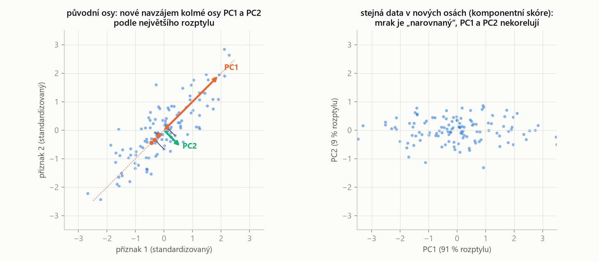
PCA data nijak „nedeformuje“ – jen je otočí. Vzdálenosti mezi body se zachovají (při použití všech komponent). V nových osách je mrak „narovnaný“: korelace zmizela a téměř všechna variabilita leží podél PC1. Když PC2 zahodíme, ztratíme jen malou část rozptylu – a z 2D dat máme 1D. Redukce dimenze přitom zachovává diskriminační vlastnosti (objekty, které byly daleko, zůstanou daleko podél PC1).
Příklad z přednášky: výpočet skóre
Objekt \(\mathbf{x} = [0{,}6;\ 1{,}4]\), transformační vektory (sloupce matice \(\mathbf{V}\)):
\[ \mathbf{V} = \begin{pmatrix} 0{,}7071 & -0{,}7071\\ 0{,}7071 & 0{,}7071 \end{pmatrix} \]Skóre = skalární součin objektu s každým sloupcem:
\[ \begin{aligned} y_1 = \mathbf{x}\cdot\mathbf{v}_1 &= 0{,}6\cdot 0{,}7071 + 1{,}4\cdot 0{,}7071 \approx 1{,}4\\ y_2 = \mathbf{x}\cdot\mathbf{v}_2 &= 0{,}6\cdot(-0{,}7071) + 1{,}4\cdot 0{,}7071 \approx 0{,}6 \end{aligned} \]Nové souřadnice objektu jsou \((1{,}4;\ 0{,}6)\) – skalární součin = projekce na novou osu. Osy jsou otočené o 45°. Vektory tvoří ortonormální bázi, což se ověřuje opět skalárními součiny:
Ortonormální báze \(p\)-rozměrného prostoru je soustava \(p\) vektorů, které jsou navzájem kolmé (ortogonální: skalární součin každé dvojice je 0) a mají jednotkovou délku (normované: \(\mathbf v^T\mathbf v = 1\)). Každý bod prostoru lze jednoznačně zapsat pomocí souřadnic v této bázi. Matice \(\mathbf V\), jejímiž sloupci jsou, splňuje \(\mathbf V^T\mathbf V = \mathbf I\) (ortogonální matice) a násobení jí je otočení (případně zrcadlení).
nová sada „pravítek“: navzájem kolmých a se stejnou délkou dílku jako původní. Proto se při přechodu do nich nic nezdeformuje, jen otočí.
Ověření transformačních vektorů:
- \(\mathbf{v}_1\cdot\mathbf{v}_2 = 0\) → nová soustava je pravoúhlá (stejně jako původní);
- \(\mathbf{v}_1^T\mathbf{v}_1 = \mathbf{v}_2^T\mathbf{v}_2 = 1\) → vektory mají délku 1, takže se nezkreslí měřítko na osách (nic se neprotáhne ani nezkrátí).
Pro celou matici: \(\mathbf{P} = \mathbf{Z}\mathbf{V}\) (standardizovaná data × transformační vektory). Kovarianční matice nových proměnných v příkladu vyšla \(\begin{pmatrix} 1{,}0225 & 0\\ 0 & 0{,}5775\end{pmatrix}\): mimo diagonálu nuly → komponenty jsou nekorelované; na diagonále rozptyly PC (sestupně).
Kovarianční a korelační matice: vstup do PCA
PCA nepracuje přímo s tabulkou dat, ale s maticí, která shrnuje vztahy mezi příznaky „každý s každým“: s kovarianční maticí \(\mathbf S\), nebo s korelační maticí \(\mathbf R\). Obě jsou čtvercové \(p\times p\) a symetrické (definice viz kovarianční matice a korelační matice v kapitole 2). Před výpočtem kovariance se příznaky vždy centrují – odečte se průměr.
Kovariance (prvek \(\mathbf S\)):
\[ s_{ij} = \frac{1}{N-1}\sum_{n=1}^{N}\left[x_{n,i}-\mu_i\right]\left[x_{n,j}-\mu_j\right] \]Korelace (prvek \(\mathbf R\)) = kovariance vydělená směrodatnými odchylkami obou příznaků:
\[ \rho_{ij} = \frac{s_{ij}}{\sqrt{s_{ii}\,s_{jj}}} \]| \(x_{n,i}\) | hodnota \(i\)-tého příznaku u \(n\)-tého objektu |
| \(\mu_i\) | průměr \(i\)-tého příznaku; \(x_{n,i}-\mu_i\) je centrování |
| \(N\) | počet objektů (na slidu je jen součet bez \(\frac{1}{N-1}\); v korelaci se tento faktor stejně vykrátí) |
| \(s_{ij}\) | kovariance příznaků \(i\) a \(j\); pro \(i = j\) je to rozptyl \(s_{ii}\) |
| \(\sqrt{s_{ii}},\ \sqrt{s_{jj}}\) | směrodatná odchylka prvního a druhého příznaku – jimi kovarianci dělím |
| \(\rho_{ij}\) | (Pearsonova) korelace příznaků \(i\) a \(j\), vždy mezi −1 a 1 |
Co z které matice vyčtu
| kovarianční matice \(\mathbf S\) | korelační matice \(\mathbf R\) | |
|---|---|---|
| diagonála | rozptyly příznaků – jak moc je každý příznak „rozházený“ (v jednotkách²) | samé jedničky (každý příznak koreluje sám se sebou 1) |
| mimo diagonálu | kovariance: znaménko říká směr vztahu (rostou spolu / proti sobě), velikost ale závisí na jednotkách | korelace: směr i síla lineárního vztahu na škále −1 až 1, dají se přímo porovnávat |
| součet diagonály (stopa) | celkový rozptyl dat | vždy \(p\) (počet příznaků) |
| změna jednotek (např. g → mg) | matice se změní | matice zůstane stejná |
| geometricky | velikost, protažení i natočení mraku bodů | tvar a natočení mraku po standardizaci (bez vlivu měřítka) |
Korelační matice je kovarianční matice standardizovaných dat, \(\mathbf R(\mathbf x) = \mathbf S(\mathbf z)\). Standardizace posune střed dat do [0; 0] a každému příznaku dá směrodatnou odchylku 1 – všechny příznaky pak mají „stejný hlas“. \(\mathbf S\) tedy říká „jak velké jsou rozdíly a jak spolu příznaky kolísají v původních jednotkách“, \(\mathbf R\) jen „jak těsně spolu příznaky souvisejí“.
- PCA hledá takové otočení os, po kterém má kovarianční matice nových proměnných mimo diagonálu samé nuly – komponenty jsou nekorelované (viz matice PC v příkladu výše). Říká se tomu diagonalizace matice.
- Vlastní vektory \(\mathbf S\) (nebo \(\mathbf R\)) jsou směry nových os, vlastní čísla jsou čísla na nové diagonále – rozptyly komponent.
- Otočení nemění celkový rozptyl: \(\sum\lambda_j\) = stopa matice. U \(\mathbf S\) je to celkový rozptyl dat, u \(\mathbf R\) je to \(p\). Proto u \(\mathbf R\) platí Kaiserovo kritérium λ > 1: komponenta musí nést víc než jeden standardizovaný příznak.
- Velké korelace mimo diagonálu \(\mathbf R\) = příznaky sdílejí informaci = PCA má co slučovat. Je-li \(\mathbf R = \mathbf I\), není co slučovat (Bartlettův test, viz níže).
- Která matice se použije, mění výsledek: PCA na S a PCA na R dávají jiné komponenty, ne jen jinak škálované.
Tep a teplota tří pacientů z kapitoly 2: rozptyl tepu 100, rozptyl teploty 0,12, kovariance 3.
1. Kovarianční a korelační matice:
\[ \mathbf S = \begin{pmatrix} 100 & 3\\ 3 & 0{,}12 \end{pmatrix} \] \[ r = \frac{3}{\sqrt{100\cdot 0{,}12}} = 0{,}866 \] \[ \mathbf R = \begin{pmatrix} 1 & 0{,}866\\ 0{,}866 & 1 \end{pmatrix} \]2. PCA na \(\mathbf S\) – charakteristická rovnice:
\[ \lambda^2 - 100{,}12\,\lambda + 3 = 0 \] \[ \begin{aligned} \lambda_1 &\approx 100{,}09, & \mathbf v_1 &\approx (1{,}00;\ 0{,}03) \\ \lambda_2 &\approx 0{,}03, & \mathbf v_2 &\approx (-0{,}03;\ 1{,}00) \end{aligned} \]PC1 nese 99,97 % rozptylu a je to prakticky jen tep – teplota má v PC1 váhu 0,03. Ne proto, že by byla nedůležitá, ale protože se měří v číslech s malým rozptylem.
3. PCA na \(\mathbf R\) – charakteristická rovnice:
\[ (1-\lambda)^2 - r^2 = 0 \] \[ \begin{aligned} \lambda_{1} &= 1 + r = 1{,}866, & \mathbf v_1 &= (0{,}7071;\ 0{,}7071) \\ \lambda_{2} &= 1 - r = 0{,}134, & \mathbf v_2 &= (-0{,}7071;\ 0{,}7071) \end{aligned} \]PC1 nese 1,866/2 = 93 % rozptylu a bere tep i teplotu stejnou vahou – vystihuje to, že spolu silně souvisejí.
Pointa: u dvou příznaků dá korelační matice vždy směry pod 45° (váhy 0,7071) a vlastní čísla \(1 \pm r\). Proto vyšly váhy 0,7071 i v příkladu z přednášky.
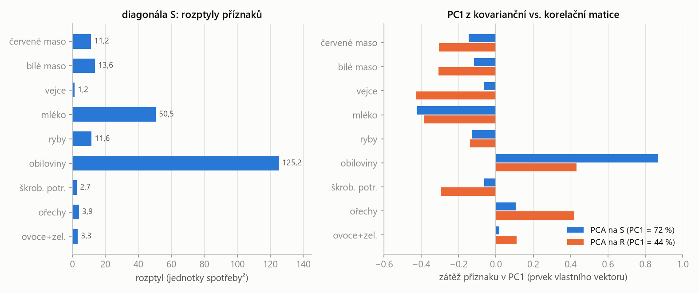
Obiloviny mají rozptyl 125, vejce jen 1,2. PCA na \(\mathbf S\) proto udělá z PC1 skoro jen „obiloviny proti mléku“ (zátěže 0,87 a −0,42) a vejce téměř ignoruje (−0,07) – přestože vejce s obilovinami korelují −0,70. PCA na \(\mathbf R\) dá všem příznakům stejnou výchozí váhu, a PC1 tak zachytí skutečný vzor „rostlinné vs. živočišné bílkoviny“. Že PC1 z \(\mathbf S\) „vysvětluje“ 72 % a z \(\mathbf R\) jen 44 %, neznamená, že je lepší: z velké části jen kopíruje příznak s největšími čísly.
„Kovarianční matice má na diagonále rozptyly příznaků a mimo ni kovariance, obojí v původních jednotkách. Korelační matice je kovarianční matice standardizovaných dat: na diagonále jedničky, mimo ni korelace od −1 do 1. PCA hledá vlastní vektory jedné z nich – to jsou směry komponent – a vlastní čísla – to jsou jejich rozptyly. Když mají příznaky různé jednotky nebo rozptyly, použiju korelační matici, jinak by PC1 jen kopírovala příznak s největšími čísly.“
Matematika: vlastní čísla a vlastní vektory
Jak najít směry s maximálním rozptylem bez zkoušení všech úhlů? Pro centrovaná data platí klíčová věta:
- Vlastní vektory kovarianční (nebo korelační) matice = směry os hlavních komponent = transformační vektory.
- Vlastní čísla = rozptyly dat v těchto směrech = „důležitost“ (informativnost) jednotlivých PC.
- Největší vlastní číslo ↔ směr největšího rozptylu (PC1). Vlastní čísla i vektory proto seřadíme sestupně.
Vlastní vektor čtvercové matice \(\mathbf A\) je nenulový vektor \(\mathbf v\), pro který platí \(\mathbf A\mathbf v = \lambda\mathbf v\); číslo \(\lambda\) je příslušné vlastní číslo. Vlastní čísla jsou kořeny charakteristické rovnice \(\det(\mathbf A - \lambda\mathbf I) = 0\).
matice obecně vektory otáčí a natahuje. Vlastní vektory jsou výjimečné směry, které matice neotočí, jen natáhne nebo zkrátí – a vlastní číslo říká, kolikrát. U kovarianční matice jsou to přesně směry, ve kterých se data rozprostírají „samostatně“, a vlastní číslo je rozptyl v tom směru.
Vlastní vektor \(\mathbf{v}\) matice \(\mathbf{A}\) je směr, který matice jen natáhne (o faktor \(\lambda\)), ale neotočí: \(\mathbf{A}\mathbf{v} = \lambda\mathbf{v}\). Kovarianční matice je symetrická s reálnými prvky, takže má reálná nezáporná vlastní čísla (mohou představovat rozptyl) a navzájem kolmé vlastní vektory (→ nekorelované komponenty).
- Data \(\mathbf{X}\) centruj (nebo standardizuj).
- Spočítej kovarianční matici \(\mathbf{S}\) (resp. korelační \(\mathbf{R}\)).
- Najdi \(p\) vlastních čísel \(\lambda_j\) a vlastních vektorů \(\mathbf{v}_j\) (řešením \(\det(\mathbf{S}-\lambda\mathbf{I}) = 0\)).
- Seřaď je podle \(\lambda\) sestupně.
- Komponentní skóre \(\mathbf{Y} = \mathbf{X}\mathbf{V}\), s podmínkami:
- \(\mathbf{v}_j^T\mathbf{v}_j = 1\) (bez zkreslení měřítka),
- \(\mathbf{v}_j\cdot\mathbf{v}_k = 0\) (kolmost).
Matice a její charakteristická rovnice:
\[ \mathbf{A} = \begin{pmatrix}3&3\\3&7\end{pmatrix} \] \[ \begin{aligned} \det(\mathbf{A}-\lambda\mathbf{I}) &= (3-\lambda)(7-\lambda) - 9 \\ &= \lambda^2 - 10\lambda + 12 = 0 \end{aligned} \]Vlastní čísla a vektory:
\[ \begin{aligned} \lambda_1 &= 8{,}6, & \mathbf{v}_1 &\approx (0{,}47;\ 0{,}88) \\ \lambda_2 &= 1{,}4, & \mathbf{v}_2 &\approx (-0{,}88;\ 0{,}47) \end{aligned} \]Směr \(\mathbf{v}_1\) nese \(8{,}6/10 = 86\) % rozptylu. Celý postup krok za krokem je v kapitole o maticových rozkladech.
Terminologie (častá zkoušková otázka)
Komponentní zátěže jsou koeficienty, kterými jsou původní proměnné vážené v lineární kombinaci tvořící hlavní komponentu, tj. prvky vlastních vektorů \(\mathbf v_k\). V normované podobě (\(v_{kj}\sqrt{\lambda_k}\), při PCA na korelační matici) jsou rovny korelaci \(j\)-té proměnné s \(k\)-tou komponentou.
„recept“ komponenty: kolik které proměnné do ní přimíchat. Podle velkých zátěží (v absolutní hodnotě) komponentu pojmenovávám – „PC1 = rostlinné vs. živočišné bílkoviny“.
Komponentní skóre objektu jsou jeho souřadnice v novém prostoru hlavních komponent, tj. hodnoty \(PC_k = \mathbf x\cdot\mathbf v_k\) pro centrovaný (standardizovaný) vektor \(\mathbf x\). V maticovém zápisu \(\mathbf Y = \mathbf X\mathbf V\).
„kde se pacient (stát) nachází na nových osách“. Skóre jsou nové proměnné, se kterými dál pracuji – kreslím je, shlukuji, dávám do modelu.
| Pojem | Co to je | K čemu |
|---|---|---|
| transformační vektory = komponentní zátěže (loadings) | vlastní vektory kovarianční / korelační matice; koeficienty lineární kombinace | vztah mezi původními příznaky a PC; „důležitost“ příznaku v komponentě – čím větší zátěž, tím víc příznak přispívá k rozptylu (a diskriminační schopnosti) komponenty |
| komponentní skóre (scores) | souřadnice objektů v nové soustavě = projekce na nové osy | používají se jako nové (latentní) příznaky – místo několika příznaků jedno číslo |
| vlastní čísla | rozptyly komponent | volba počtu komponent, % vysvětleného rozptylu |
Pozn.: v grafech se zátěže často kreslí přenásobené \(\sqrt{\lambda}\) – pak jsou to přímo korelace příznaku s komponentou (a leží uvnitř jednotkové kružnice).
Prvek vlastního vektoru je korelaci jen úměrný – podle něj lze příznaky v jedné komponentě porovnat. Samotná korelace příznaku s komponentou (u PCA na \(\mathbf R\)) je až po přenásobení \(\sqrt{\lambda_k}\).
Příklad: červené maso má v PC1 zátěž −0,305 a \(\lambda_1 = 3{,}97\).
\[ r = -0{,}305\cdot\sqrt{3{,}97} \approx -0{,}61 \]Předpoklady a volba S vs. R
PCA vychází z kovarianční matice \(\mathbf{S}\) (vyžaduje centrování příznaků) nebo z korelační matice \(\mathbf{R}\). Korelační matice původních dat = kovarianční matice standardizovaných dat:
\[ \mathbf{R}(\mathbf{x}) = \mathbf{S}(\mathbf{z}),\qquad \mathbf{z} = \frac{\mathbf{x}-\boldsymbol\mu}{\sigma} \]Když mají příznaky nehomogenní rozptyl nebo nesrovnatelné měřítko (jednotky). Jinak PC1 jen „najde“ proměnnou s největšími čísly: koncentrace v tisících by přebila teplotu ve stupních, ne protože je důležitější, ale protože má větší rozptyl v absolutních číslech.
Co z které matice vyčtu a jak se výsledky PCA na \(\mathbf S\) a \(\mathbf R\) liší, ukazuje sekce Kovarianční a korelační matice.
Předpoklady (protože PCA pracuje s \(\mathbf{S}\) a \(\mathbf{R}\)):
- vícerozměrná normalita (ideálně);
- lineární korelace mezi příznaky (PCA vidí jen lineární vztahy);
- relativně homogenní rozptyly (homoskedasticita);
- nepřítomnost odlehlých hodnot (pokud nejsou hlavním zájmem) – rozptyl je na ně citlivý;
- nepřítomnost skupin v datech (pokud nejsou hlavním zájmem) – když skupiny nebo odlehlé objekty naopak hledám, v datech je nechám;
- více objektů než příznaků (\(N \gg p\)) – jinak je problém s výpočtem: při \(N \le p\) je \(\mathbf S\) singulární (hodnost nejvýš \(N-1\)), část vlastních čísel je nulová a odhady směrů jsou nestabilní;
- PC jsou umělé → nemusí dávat věcný smysl.
Kdy má PCA smysl: Bartlettův test sféricity
Bartlettův test sféricity testuje nulovou hypotézu, že korelační matice populace je jednotková (\(\mathbf R = \mathbf I\)), tj. že všechny proměnné jsou navzájem nekorelované. Testová statistika vychází z \(\ln\det\mathbf R\) a má přibližně rozdělení \(\chi^2\) s \(p(p-1)/2\) stupni volnosti.
„mají proměnné vůbec co společného?“ Pokud ne (mrak je „kulatý“ = sférický), PCA ani faktorová analýza nemají co slučovat. Zamítnutí \(H_0\) je tedy pro PCA dobrá zpráva.
PCA efektivně redukuje dimenzi, jen když jsou příznaky lineárně korelované (ale ne zcela redundantní – to vede ke zkresleným závěrům). Jsou-li nekorelované, komponenty prostě odpovídají původním příznakům a nic nezískáme. Objektivně: \(H_0\): \(\mathbf{R} = \mathbf{I}\) (jednotková matice, příznaky nekorelované). Bartlettův test: \(V \approx -n\ln\det(\mathbf{R})\), rozdělení \(\chi^2\) s \(p(p-1)/2\) stupni volnosti. Intuice: determinant korelační matice je 1, když jsou proměnné nekorelované, a blíží se 0, když jsou silně korelované → velké \(V\) = silné korelace = PCA má smysl.
Kolik komponent ponechat
Požadavek na pevný počet komponent (např. „chci 2 kvůli grafu“) není opodstatněný bez hlubší analýzy. Jinak rozhodujeme vždy podle vlastních čísel:
Podíl rozptylu vysvětlený \(k\)-tou komponentou je \(\lambda_k / \sum_{j=1}^p \lambda_j\) – její vlastní číslo vydělené součtem všech vlastních čísel (= celkovým rozptylem dat; u korelační matice je součet roven \(p\)). Kumulativní podíl prvních \(K\) komponent je součet těchto podílů.
„kolik procent celkové rozmanitosti dat zachytí tato komponenta“. 44 % u PC1 znamená, že jedna nová osa popíše téměř polovinu všech rozdílů mezi státy.
Scree plot (graf úpatí, sutě) je graf vlastních čísel seřazených sestupně proti pořadí komponenty; počet komponent se volí v místě zlomu, za kterým křivka už jen pozvolna klesá. Kaiserovo kritérium ponechá ty komponenty, jejichž vlastní číslo je větší než 1 (pro PCA na korelační matici).
scree = „suť pod skalou“: strmá skála jsou důležité komponenty, plochá suť pod ní šum. Kaiser: komponenta musí nést víc rozptylu než jeden průměrný původní příznak, jinak se nevyplatí.
- Test rovnosti zbývajících vlastních čísel – jsou-li zbylá vlastní čísla stejná, jejich vektory nejsou určeny jednoznačně (v těch směrech je data „kulatá“, jen šum) a nemá smysl je používat. Statistika má rozdělení χ². V praxi se téměř nepoužívá.
- Scree plot (graf úpatí) – vlastní čísla seřazená sestupně; \(K\) = pořadí posledního „velkého“ vlastního čísla před zlomem. Jednoduché, názorné, ale subjektivní.
- Kumulativní vysvětlený rozptyl – \(\frac{\lambda_1 + \dots + \lambda_K}{\sum_{j=1}^{p}\lambda_j}\cdot 100\,\%\); obvykle \(K\) pro 75–85 %. Čím větší \(K\) potřebujeme, tím méně je PCA užitečná.
- Kaiserovo kritérium (pro PCA na korelační matici): \(K\) = počet vlastních čísel větších než 1.
Po standardizaci má každý původní příznak rozptyl 1; součet všech vlastních čísel je \(p\) (= 100 % rozptylu). Vlastní číslo je rozptyl komponenty. Komponenta s \(\lambda < 1\) tedy nese méně informace než kterýkoli jednotlivý původní příznak – nemá smysl ji ponechat místo něj.
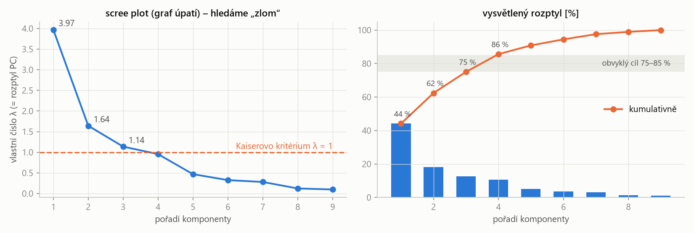
| PC | 1 | 2 | 3 | 4 | 5 | 6 | 7 | 8 | 9 |
|---|---|---|---|---|---|---|---|---|---|
| vlastní číslo | 3,97 | 1,64 | 1,14 | 0,96 | 0,47 | 0,32 | 0,28 | 0,12 | 0,10 |
| % rozptylu | 44,1 | 18,3 | 12,6 | 10,6 | 5,2 | 3,6 | 3,1 | 1,4 | 1,1 |
| kumulativně | 44,1 | 62,4 | 75,0 | 85,6 | 90,8 | 94,4 | 97,6 | 98,9 | 100 |
Kaiser: tři vlastní čísla > 1 → K = 3 (75 % rozptylu). Kritérium 75–85 % dává 3–4 komponenty. Scree plot má zlom u 2.–3. komponenty. Kritéria se neshodují dokonale, ale ukazují stejný rozsah. Z 9 příznaků stačí 2–3 komponenty – PCA je tu užitečná, protože potraviny jsou silně korelované (Bartlett: \(\ln\det\mathbf R = -5{,}7\), statistika 115,05, 36 st. v., p ≈ 0). Součet vlastních čísel = 9 = počet příznaků.
Interpretace: zátěže, skóre a biplot (příklad proteiny)
Otázky příkladu: Existuje korelace mezi druhy potravin? Existuje interakce mezi druhy potravin (spotřebou proteinů) a zeměmi? Krabicové grafy ukázaly velmi odlišné rozsahy (obiloviny průměr ≈ 32, vejce ≈ 3) → PCA na korelační matici.
| příznak | PC1 | PC2 |
|---|---|---|
| červené maso | −0,31 | −0,05 |
| bílé maso | −0,31 | −0,25 |
| vejce | −0,43 | −0,04 |
| mléko | −0,38 | −0,18 |
| ryby | −0,14 | 0,65 |
| obiloviny | 0,43 | −0,25 |
| škrobové potraviny | −0,30 | 0,34 |
| ořechy | 0,42 | 0,15 |
| ovoce a zelenina | 0,11 | 0,53 |
Transformační vektory (zátěže) PC1 a PC2. Znaménko komponenty je libovolné (celý vektor lze vynásobit −1), důležité jsou relativní znaménka uvnitř komponenty.
- PC1 (44 %): kladně obiloviny a ořechy, záporně vejce, mléko, maso → osa „rostlinné (obilné) vs. živočišné bílkoviny“.
- PC2 (18 %): kladně ryby, ovoce a zelenina, škrob → osa „středomořská / rybí strava“.
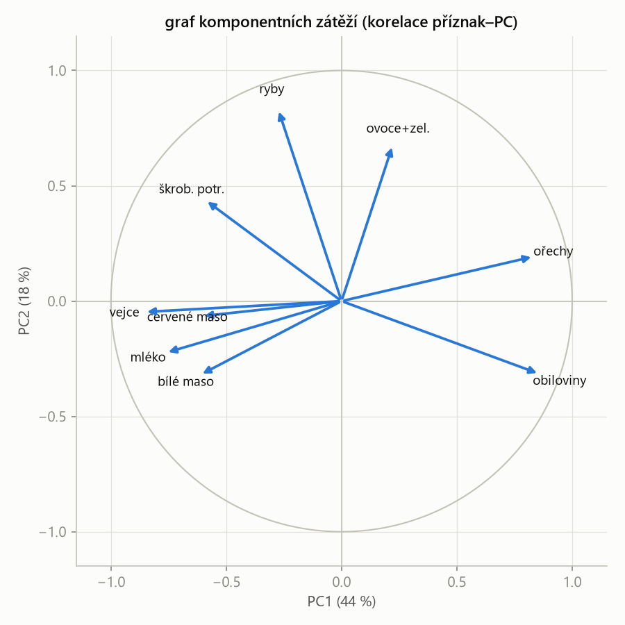
- Délka šipky: čím blíž jednotkové kružnici, tím víc rozptylu příznaku popisují PC1+PC2. Příznaky blízko počátku jsou v těchto komponentách málo důležité.
- Úhel mezi šipkami: 0° = silně kladně korelované, 90° = nekorelované, 180° = záporně korelované. Vejce, mléko a maso míří stejně (živočišné bílkoviny se jí spolu), obiloviny opačně.
- Ryby jsou „osamělé“ – vlastní směr, zvláštní vztah k ostatním proteinům.
- Vysoká zátěž v PC2 je méně důležitá než v PC1, protože PC2 vysvětluje menší část rozptylu.
Biplot je graf, který v jedné soustavě souřadnic (typicky PC1 × PC2) současně zobrazuje objekty jako body (jejich komponentní skóre) a proměnné jako šipky (jejich zátěže).
„mapa“ objektů s „kompasem“ proměnných. Z polohy bodu vůči šipkám lze vyčíst, čím se objekt vyznačuje – leží-li ve směru šipky „obiloviny“, má vysokou spotřebu obilovin.
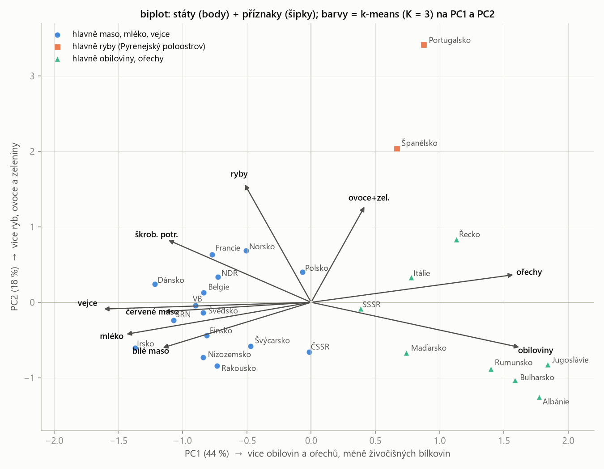
- Objekty blízko sebe mají podobný profil (podobná strava) – shluky států: západ a sever (maso, mléko), Balkán (obiloviny, ořechy), Pyrenejský poloostrov (ryby).
- Objekt ve směru šipky „obsahuje“ hodně daného příznaku – Albánie, Bulharsko, Jugoslávie leží ve směru obilovin; Portugalsko ve směru ryb.
- Objekty daleko od počátku jsou extrémní – Portugalsko a Španělsko. Pozor: osamělé objekty nemusí být odlehlé (chybné), mohou být jen jiné.
- Interakce příznaků a objektů vysvětluje umístění objektů vpravo/vlevo (PC1) a nahoře/dole (PC2).
- Biplot je silný nástroj na hledání skrytých vazeb: vidím je ve 2D, a přitom jsou v něm započítané všechny původní příznaky.
Redukce dimenze v praxi: výběr příznaků vs. komponenty
Přednáška porovnává k-means (K = 3) na třech sadách vstupů:
| vstup | výhoda | nevýhoda |
|---|---|---|
| všech 9 původních příznaků | komplexní | složitá interpretace (9D) |
| vybrané příznaky podle zátěží (obiloviny pro PC1, ryby pro PC2 – vejce a ořechy nebereme, protože korelují s obilovinami) | jednoznačná interpretace („hodně obilovin, málo ryb“) | nekomplexní – zanedbáváme ostatní potraviny |
| PC1 a PC2 | komplexní (každá PC je kombinací všech příznaků) a přitom interpretovatelné přes biplot: „hlavně obiloviny / hlavně ryby / jiné proteiny“ | komponenty je třeba interpretovat |
K čemu PCA slouží
- Zobrazení vícerozměrných dat (\(K\) = 1–3).
- Úsporný dataset bez významné ztráty informace (ideálně \(K\) = 1, obvykle 3–5).
- Nové latentní příznaky, které objekty často popisují lépe → lepší řešení úlohy (např. shlukování).
- Průzkumová analýza kovarianční / korelační struktury – někdy vede k zajímavým hypotézám.
- Detekce odlehlých objektů, odstranění šumu (zahodíme poslední PC), komprese dat.
- Vstup do další analýzy: klasifikace (dekorelované vstupy), regrese (PC místo původních příznaků odstraní multikolinearitu), shluková analýza.
Limity PCA
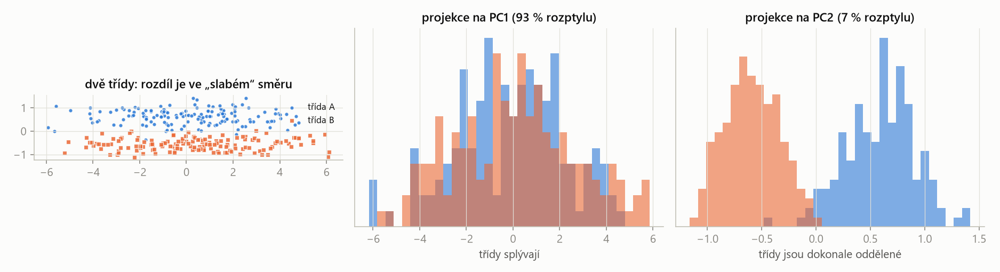
PCA nezná třídy (je bez učitele) – maximalizuje rozptyl, ne oddělení skupin. Nemáme zaručeno, že nejvýznamnější komponenta nejvíc přispěje k rozlišení tříd. Tady PC1 (drtivá většina rozptylu) třídy vůbec nerozliší a dokonale je odděluje „nevýznamná“ PC2. Kdybychom slepě ponechali jen PC1, informaci o třídách zahodíme.
- Jen lineární vztahy – nelineární struktury (kruhy, zakřivené plochy) PCA nezachytí → kernel PCA, t-SNE, UMAP.
- Kategoriální data – technicky to jde (one-hot), ale interpretace přes rozptyl má sporný smysl. V praxi se kategoriální příznaky z PCA vyčlení a zpracují jinými metodami.
- Citlivost na odlehlé hodnoty a na měřítko (→ standardizace / korelační matice).
- Komponenty jsou umělé a nemusí mít věcný význam.
- Implementace: popsaný spektrální rozklad (ED); výpočetně efektivnější a stabilnější je SVD (přednáška 8), výsledky jsou podobné.
Shrnutí
PCA je lineární transformace původních příznaků na nové nekorelované proměnné – hlavní komponenty. Geometricky otočí osy kolem centroidu: PC1 míří ve směru největšího rozptylu, PC2 je k ní kolmá a nese největší zbývající rozptyl atd. Matematicky jsou směry vlastní vektory kovarianční (korelační) matice a jejich rozptyly vlastní čísla. Komponenty se řadí podle klesajícího rozptylu; většina informace je v prvních, nejméně v posledních. Redukce dimenze = ponechat prvních \(K\) komponent (scree plot, 75–85 % rozptylu, Kaiser λ > 1). Zátěže říkají, jak příznaky tvoří komponenty (a umožní interpretaci), skóre jsou nové souřadnice objektů. Biplot obojí spojuje. Kovarianční matice nese rozptyly a kovariance v původních jednotkách; korelační matice je kovarianční matice standardizovaných dat (jedničky na diagonále, korelace mimo ni). Při různých jednotkách se používá korelační matice, protože PCA na kovarianční matici by jen kopírovala příznak s největším rozptylem. PCA vidí jen lineární vztahy, je citlivá na odlehlé hodnoty a maximalizuje rozptyl, ne oddělení tříd.
Take-home messages
- PCA = otočení os do směru největšího rozptylu; nic víc, nic míň.
- Vlastní vektor = směr komponenty (zátěže); vlastní číslo = její rozptyl (důležitost).
- Komponenty jsou navzájem nekorelované a seřazené podle vysvětleného rozptylu.
- Různé jednotky → korelační matice (= PCA na standardizovaných datech).
- S = rozptyly a kovariance v jednotkách, R = korelace bez jednotek; PCA = otočení, po kterém je S (R) diagonální.
- Počet PC: scree plot, 75–85 % rozptylu, Kaiser λ > 1 – kombinovat.
- PCA má smysl jen pro korelované příznaky (Bartlettův test).
- Největší rozptyl ≠ nejlepší rozlišení tříd; PCA je lineární a nezná labely.
Otázky ke zkoušce
Vysvětlete princip PCA vlastními slovy.
PCA hledá novou souřadnicovou soustavu otočenou kolem centroidu dat. První osa (PC1) míří ve směru, ve kterém mají projekce dat největší rozptyl; druhá je k ní kolmá a zachycuje největší zbývající rozptyl atd. Nové proměnné jsou lineární kombinace původních, jsou nekorelované a seřazené podle důležitosti. Protože korelované příznaky nesou podobnou informaci, většina rozptylu se soustředí do několika prvních komponent a zbytek můžu zahodit – tím snížím dimenzi s minimální ztrátou informace.
Jaký je vztah PCA k vlastním číslům a vlastním vektorům?
Vlastní vektory kovarianční (korelační) matice jsou směry hlavních komponent – transformační vektory (zátěže). Vlastní čísla jsou rozptyly dat v těchto směrech. Největší vlastní číslo patří PC1. Kovarianční matice je symetrická, takže vlastní čísla jsou reálná a nezáporná a vlastní vektory navzájem kolmé – proto jsou komponenty nekorelované.
Jaký je rozdíl mezi komponentními zátěžemi a komponentním skóre?
Zátěže (loadings) jsou koeficienty lineární kombinace – popisují příznaky: jak moc a s jakým znaménkem se příznak podílí na komponentě. Skóre (scores) jsou hodnoty komponent pro jednotlivé objekty – souřadnice objektů v nové soustavě, používají se jako nové příznaky. Zátěže kreslím v grafu zátěží, skóre v bodovém grafu, oboje v biplotu.
Jak určíte počet hlavních komponent?
Podle vlastních čísel: scree plot (zlom), kumulativní vysvětlený rozptyl (typicky 75–85 %), Kaiserovo kritérium pro korelační matici (λ > 1, protože komponenta s menším rozptylem nese méně informace než jeden standardizovaný příznak), případně test rovnosti zbývajících vlastních čísel. Kritéria kombinuji. Příklad proteiny: λ = 3,97; 1,64; 1,14 → K = 3, 75 % rozptylu.
Kdy použít kovarianční a kdy korelační matici?
Kovarianční, když jsou příznaky ve stejných jednotkách a srovnatelném rozsahu a absolutní rozptyl má význam. Korelační (= PCA na standardizovaných datech), když mají příznaky různé jednotky nebo velmi rozdílné rozptyly – jinak by PC1 jen kopírovala proměnnou s největšími čísly.
Co z nich vyčtu: kovarianční matice má na diagonále rozptyly příznaků a mimo ni kovariance (směr vztahu, velikost závisí na jednotkách); součet diagonály je celkový rozptyl. Korelační matice má na diagonále jedničky a mimo ni korelace −1 až 1 (směr i síla vztahu, srovnatelné mezi dvojicemi); součet diagonály je \(p\). Do PCA vstupují tak, že vlastní vektory zvolené matice jsou směry komponent a vlastní čísla jejich rozptyly. Proto u korelační matice platí Kaiserovo kritérium λ > 1.
Jaké má PCA předpoklady a limity?
Předpoklady: lineární korelace mezi příznaky (jinak nemá co redukovat – Bartlettův test), ideálně vícerozměrná normalita, homogenní rozptyly, žádné odlehlé hodnoty a skupiny (pokud nejsou cílem), N ≫ p. Limity: zachytí jen lineární vztahy; maximalizuje rozptyl, ne oddělení tříd (třídy může oddělovat až „malá“ komponenta); citlivá na odlehlé hodnoty a měřítko; komponenty jsou umělé a nemusí mít význam; u kategoriálních dat je interpretace sporná.
Jak interpretovat graf zátěží a biplot?
Šipka = příznak, souřadnice = korelace s PC1 a PC2. Dlouhá šipka (u jednotkové kružnice) = příznak je komponentami dobře popsán. Úhel mezi šipkami ~ korelace: malý úhel = kladná, 90° = žádná, 180° = záporná. V biplotu body = objekty; blízké objekty jsou podobné, objekt ve směru šipky má vysokou hodnotu příznaku, objekty daleko od počátku jsou extrémní (ne nutně chybné).
V čem se liší PCA od regrese?
Regrese vysvětluje měřenou závislou proměnnou nezávislými (příčinná závislost, vstup ≠ výstup). V PCA jsou všechny příznaky rovnocenné a nové proměnné (komponenty) jsou latentní, umělé – popisují vzájemné vztahy příznaků. Geometricky: OLS regrese minimalizuje svislé chyby, PC1 odpovídá ortogonální regresi (minimalizuje kolmé vzdálenosti).
Přednáška 7
Kernel PCA (jádrová nelineární PCA)
Obyčejná PCA umí jen otáčet osy – vidí jen lineární struktury. Kernel PCA nejdřív data nelineárně „přenese“ do prostoru s vyšší dimenzí, kde se struktura stane lineární, a teprve tam udělá PCA. Trik je v tom, že ten vysokorozměrný prostor nikdy nemusíme skutečně spočítat.
Limity „obyčejné“ lineární PCA
Dvě skupiny bodů jsou lineárně separabilní, pokud existuje přímka (ve 2D), rovina (ve 3D) nebo obecně nadrovina, která je úplně oddělí – všechny body jedné skupiny leží na jedné straně a všechny body druhé skupiny na druhé.
„dají se rozdělit jedním rovným řezem“. Dva soustředné kruhy to nesplňují: ať vedu přímku jakkoli, vnitřní kruh vždy rozpůlí i vnější.
Multimodální rozdělení má více než jeden vrchol (modus) hustoty – data tvoří několik oddělených „hromad“. Rozdělení s jedním vrcholem je unimodální.
v datech je víc skupin (např. zdraví a nemocní). Popsat je jedním průměrem a jednou elipsou (jak to dělá PCA přes kovarianční matici) je nepřesné.
- Největší rozptyl není vždy „markerem“ pro oddělení skupin. Skupiny mohou být oddělené ve směru malého rozptylu (viz obr. 6.6).
- Multimodální rozložení – data tvořená několika shluky nejsou popsána „jednou elipsou“; směr největšího rozptylu může vést napříč shluky.
- Neortogonální „přirozené“ osy – struktura dat má dva hlavní směry, které nejsou kolmé (např. tvar X). PCA ale vždy vrátí kolmé osy, takže přirozené směry nenajde.
- Lineárně neseparabilní skupiny (např. soustředné kruhy) – nelze je korektně reprezentovat lineární kombinací příznaků. Jakékoli otočení os je pořád stejné kruhy.
- Limitace kriteriální funkce (MSE) – z hlediska střední kvadratické chyby je řešení optimální (směry ortogonální, rozptyly maximální)… ale je to opravdu optimální pro naši úlohu? Ne nutně.
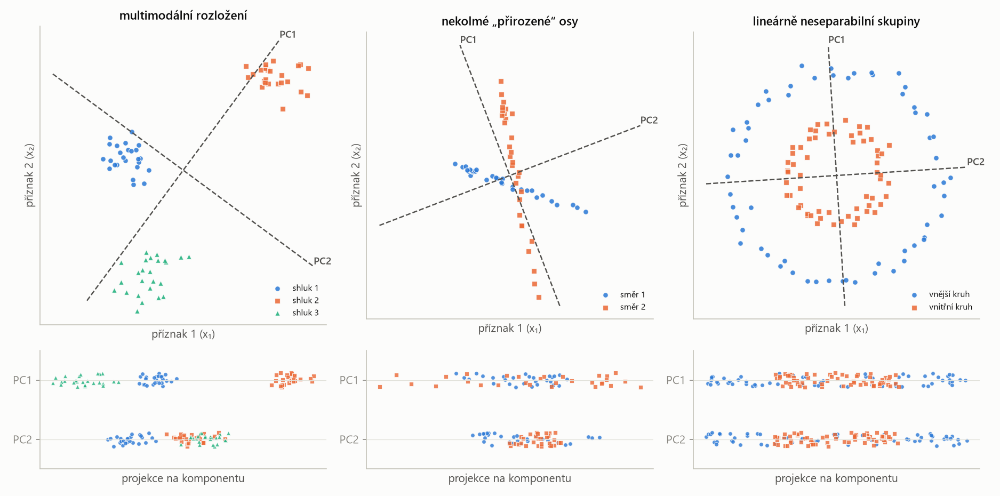
Multimodální data: na PC1 jsou tři shluky oddělené, na PC2 se dva z nich překryjí – PCA popisuje data jako jednu „elipsu“ a o shlucích neví. Tvar X: přirozené směry nejsou kolmé, PCA ale musí vrátit kolmé osy, a tak skupiny neoddělí na žádné z nich. Kruhy: ať osy otočím jakkoli, vnitřní kruh se vždy promítne doprostřed vnějšího.
PCA hledá osu, na kterou se data promítnou s nejmenší střední kvadratickou chybou (MSE): součet čtverců kolmých vzdáleností bodů od osy je minimální, což je totéž jako maximální rozptyl projekce. U kruhů je tedy PC1 z hlediska MSE optimální – směry jsou ortogonální, rozptyly maximální. Kritérium ale o skupinách nic neví: po promítnutí leží body vnitřního i vnějšího kruhu přes sebe. „Optimální podle MSE“ neznamená „optimální pro naši úlohu“.
Jádrová transformace: 1D → 2D
Úloha, která je v původním prostoru nelineární, se může stát lineární, když data zobrazíme do prostoru s vyšší dimenzí vhodnou nelineární funkcí \(\varphi\). Pak už stačí lineární metoda (přímka, rovina, PCA).
Kernel PCA (jádrová PCA) je nelineární rozšíření PCA, které provede analýzu hlavních komponent v prostoru vzniklém nelineární transformací \(\varphi\) původních dat. Tento prostor se explicitně nepočítá: celý výpočet probíhá přes jádrovou matici podobností objektů.
„PCA na brýlích, které data nelineárně pokřiví“. Pokřivení je zvolené tak, aby se křivé struktury (kruhy, spirály) narovnaly a obyčejná PCA je pak uměla rozdělit.
Zobrazení \(\varphi\) je nelineární funkce, která každému objektu \(\mathbf x\) z původního \(p\)-rozměrného prostoru přiřadí vektor \(\varphi(\mathbf x)\) v novém prostoru – příznakovém prostoru (feature space, na přednášce též jádrový prostor), obvykle s mnohem vyšší (i nekonečnou) dimenzí. Jeho souřadnice jsou nelineární funkce původních proměnných (např. \(x_1^2\), \(x_1x_2\)).
k původním příznakům „dopočítám“ nové – mocniny, součiny… V tomto rozšířeném prostoru mohou být původně zamotané skupiny rozdělitelné rovnou nadrovinou.
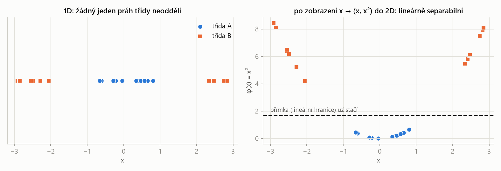
V 1D jsou modré body uprostřed a oranžové po obou stranách – jediný práh je neoddělí, potřebovali bychom dva. Druhá souřadnice \(x^2\) „vyzvedne“ vzdálené body nahoru a obě třídy rozdělí vodorovná přímka. Nic jsme nevymysleli navíc – jen jsme přidali nelineární funkci původního příznaku.
Jádro (kernel) jako míra podobnosti
Cíl: převod do vyšší dimenze, kde je úloha lineární. Objekty transformujeme funkcí \(\varphi: \mathbf{x} \to \varphi(\mathbf{x})\). Jádro je skalární součin dvou objektů v tomto novém prostoru:
Skalární součin dvou vektorů \(\mathbf a, \mathbf b\) je číslo \[ \mathbf a^T\mathbf b = a_1b_1 + a_2b_2 + \dots + a_pb_p \] Platí \[ \mathbf a^T\mathbf b = \lVert\mathbf a\rVert\,\lVert\mathbf b\rVert\cos\theta \] kde \(\theta\) je úhel mezi vektory.
míra toho, jak moc dva vektory „míří stejným směrem“ (krát jejich délky). Velký kladný = podobný směr, 0 = kolmé, záporný = opačné. Proto ho lze brát jako míru podobnosti objektů.
Jádro je funkce \(\kappa(\mathbf a, \mathbf b)\) dvou objektů, která je rovna skalárnímu součinu jejich obrazů v příznakovém prostoru: \(\kappa(\mathbf a, \mathbf b) = \varphi(\mathbf a)^T\varphi(\mathbf b)\), přičemž se dá spočítat přímo z původních vektorů \(\mathbf a, \mathbf b\).
„kalkulačka podobnosti“: vezme dva původní objekty a vrátí číslo, jak jsou si podobné v neviditelném vysokorozměrném prostoru – bez toho, abychom ten prostor kdy počítali.
| \(\mathbf{x}_i, \mathbf{x}_j\) | příznakové vektory \(i\)-tého a \(j\)-tého objektu z \(\mathbf{X}\) |
| \(\varphi\) | nelineární zobrazení do (vyšší) dimenze |
| \(\kappa\) | číslo vyjadřující podobnost objektů v novém prostoru (reprezentace nelineárních vztahů) |
Spočítáme-li jádro pro všechny dvojice objektů, dostaneme jádrovou matici \(\mathbf{K}\): matice objektů \(\mathbf{X}\,(n\times p)\) → jádrová matice \(\mathbf{K}\,(n\times n)\). Pozor na rozměr – je to matice objekt × objekt, ne příznak × příznak jako kovarianční matice.
Jádrová matice \(\mathbf K\) souboru \(n\) objektů je symetrická matice \(n\times n\), jejímž prvkem \(K_{ij}\) je hodnota jádra \(\kappa(\mathbf x_i, \mathbf x_j)\) pro \(i\)-tý a \(j\)-tý objekt.
tabulka „kdo je komu jak podobný“ pro všechny dvojice objektů. Kernel PCA rozkládá tuto tabulku místo kovarianční matice.
Kernel pracuje v oblasti objektů – transformuji objekty a počítám podobnost každých dvou z nich (matice \(n \times n\), objekty × objekty). PCA pracuje v oblasti příznaků – počítám kovarianci (nebo korelaci) každých dvou příznaků (matice \(p \times p\)). Jádrová matice tedy v kernel PCA nahrazuje kovarianční nebo korelační matici. Její rozměr nezávisí na tom, kolika příznaky je objekt popsán: pro 10 objektů je vždy \(10 \times 10\).
Polynomiální jádro a „kernel trick“
Objekty \(\mathbf{a} = (a_1, a_2)\), \(\mathbf{b} = (b_1, b_2)\) jsou dva pacienti popsaní dvěma příznaky (2D prostor = 2 příznaky). Zvolíme zobrazení 2D → 3D:
\[ \varphi(\mathbf{a}) = \begin{pmatrix} a_1^2\\ \sqrt{2}\,a_1a_2\\ a_2^2\end{pmatrix} \]Místo původních 2 příznaků má každý pacient nově 3 příznaky (3D prostor).
Výpočet podle definice (nejdřív transformovat, pak skalární součin):
\[ \varphi(\mathbf{a})^T\varphi(\mathbf{b}) = a_1^2b_1^2 + 2a_1a_2b_1b_2 + a_2^2b_2^2 \]Zjednodušíme – je to rozepsaný čtverec dvojčlenu:
\[ = (a_1b_1 + a_2b_2)^2 = (\mathbf{a}^T\mathbf{b})^2 \]Stejný výsledek dostaneme, když spočítáme obyčejný skalární součin v původním 2D prostoru a umocníme ho. To je kernel trick. Výsledkem je jedno číslo – podobnost pacienta 1 a 2; v kernel PCA ho spočítáme pro všechny dvojice pacientů.
Ověření na číslech: \(\mathbf a = (1, 2)\), \(\mathbf b = (3, 1)\).
- Cesta „přes 3D“: \[ \begin{aligned} \varphi(\mathbf a) &= (1;\ 2\sqrt2;\ 4) \\ \varphi(\mathbf b) &= (9;\ 3\sqrt2;\ 1) \\ \varphi(\mathbf a)^T\varphi(\mathbf b) &= 9 + 2\sqrt2\cdot 3\sqrt2 + 4 \\ &= 9 + 12 + 4 = 25 \end{aligned} \]
- Zkratka: \(\mathbf a^T\mathbf b = 1\cdot 3 + 2\cdot 1 = 5\), \(5^2 = 25\). Stejné číslo, ale bez počítání 3D vektorů.
Kernel trick (jádrový trik) je postup, při kterém algoritmus, jenž potřebuje jen skalární součiny objektů, provedeme v příznakovém prostoru tak, že každý skalární součin \(\varphi(\mathbf a)^T\varphi(\mathbf b)\) nahradíme hodnotou jádra \(\kappa(\mathbf a, \mathbf b)\) spočtenou v původním prostoru. Transformace \(\varphi\) se tak nikdy explicitně nepočítá.
dostaneme výsledek „jako bychom pracovali ve vysokorozměrném prostoru“, ale počítáme jen v tom původním, malém. Funguje to, protože PCA (i SVM) data potřebuje jen v podobě vzájemných podobností.
Na přednášce je zobrazení zapsané se všemi součiny \(a_ia_j\) (9 složek, \(a_1a_2\) i \(a_2a_1\) zvlášť):
\[ \begin{aligned} \varphi(\mathbf a) = (&a_1^2,\ a_1a_2,\ a_1a_3, \\ &a_2a_1,\ a_2^2,\ a_2a_3, \\ &a_3a_1,\ a_3a_2,\ a_3^2) \end{aligned} \]Podle definice – transformuji \(\mathbf a\), transformuji \(\mathbf b\) a spočítám skalární součin 9 složek:
\[ \varphi(\mathbf a)^T\varphi(\mathbf b) = \sum_{i,j=1}^{3} a_ia_jb_ib_j \]Kernel trick – tentýž součet vyjde roznásobením čtverce:
\[ \begin{aligned} \kappa(\mathbf a, \mathbf b) &= (a_1b_1 + a_2b_2 + a_3b_3)^2 \\ &= (\mathbf a^T\mathbf b)^2 \end{aligned} \]Na číslech: \(\mathbf a = (1, 2, 0)\), \(\mathbf b = (3, 1, 2)\).
\[ \begin{aligned} \varphi(\mathbf a) &= (1, 2, 0, 2, 4, 0, 0, 0, 0) \\ \varphi(\mathbf b) &= (9, 3, 6, 3, 1, 2, 6, 2, 4) \\ \varphi(\mathbf a)^T\varphi(\mathbf b) &= 9 + 6 + 6 + 4 = 25 \end{aligned} \]Zkratka: \(\mathbf a^T\mathbf b = 3 + 2 + 0 = 5\), \(5^2 = 25\).
- Ve 2D jsme \(a_1a_2\) a \(a_2a_1\) sloučili do jedné složky \(\sqrt2\,a_1a_2\) (3 složky), ve 3D je necháváme zvlášť (9 složek). Obojí dává stejné jádro \((\mathbf a^T\mathbf b)^2\) – k jednomu jádru může existovat víc zobrazení \(\varphi\), a právě proto \(\varphi\) znát nemusíme.
- Na slidu je složitost zapsaná jako \(O(n^2)\) vs. \(O(n)\); jde o počet příznaků (dimenzi), který je v těchto skriptech \(p\).
Pro \(p = 3\) a \(r = 2\) má \(\varphi(\mathbf{a})\) už 9 složek (\(a_1^2, a_1a_2, a_1a_3, \dots, a_3^2\)) – výpočet podle definice roste kvadraticky (\(O(p^2)\)), kdežto \((\mathbf{a}^T\mathbf{b})^2\) stojí jen \(O(p)\). Pro vyšší řád a dimenzi exploduje rozměr \(\varphi\) – ale my ho nepotřebujeme znát. Stačí umět spočítat podobnost dvojic, a ta se „dopočítá“ operacemi v původním nízkorozměrném prostoru. Jádrová matice obsahuje všechno, co PCA potřebuje – vyšší dimenze počítat nemusíme, stačí nám matice.
Polynomiální jádro řádu \(r\) je \(\kappa(\mathbf{a}, \mathbf{b}) = (\mathbf{a}^T\mathbf{b})^r\) (obecněji \((\mathbf a^T\mathbf b + c)^r\)). Odpovídá příznakovému prostoru, jehož souřadnicemi jsou všechny součiny původních proměnných stupně \(r\) (pro \(c > 0\) i nižších stupňů).
umožní metodě „vidět“ kvadratické (nebo kubické…) vztahy a interakce mezi proměnnými – např. hranici ve tvaru elipsy nebo paraboly.
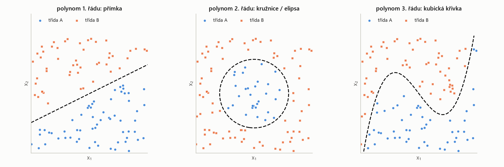
Řád jádra \(r\) určuje, jak „křivé“ struktury metoda uvidí: \(r = 1\) je obyčejný skalární součin (kernel PCA = lineární PCA, hranice jen přímka), \(r = 2\) přidá čtverce a součiny (kružnice, elipsa, parabola), \(r = 3\) (s \(c > 0\) i se členy nižších řádů) i kubické křivky. V příznakovém prostoru je každá z těchto hranic rovná nadrovina, v původním prostoru se jeví jako křivka.
RBF jádro
RBF jádro (radial basis function) je \[ \kappa(\mathbf a, \mathbf b) = \exp(-\gamma\lVert\mathbf a - \mathbf b\rVert^2),\qquad \gamma > 0 \] Jeho hodnota závisí jen na vzdálenosti objektů: je 1 pro totožné objekty a s rostoucí vzdáleností klesá k 0. Odpovídající příznakový prostor má nekonečnou dimenzi.
„Gaussova zvonová křivka podobnosti“ kolem každého bodu: blízcí sousedé jsou si podobní, vzdálení skoro vůbec. \(\gamma\) určuje, jak daleko „dosáhne“ – jak široký je zvon.
| \(\lVert\mathbf{a}-\mathbf{b}\rVert^2\) | čtverec eukleidovské vzdálenosti objektů v původním prostoru |
| \(\gamma\) (resp. \(\sigma\)) | šířka jádra – jak rychle podobnost klesá se vzdáleností; \(\sigma^2\) je rozptyl gaussovské křivky, jím určíme šířku funkce |
| \(\kappa\) | 1 pro totožné objekty, → 0 pro vzdálené; čím dál od sebe, tím menší jádro = míra podobnosti |
Příznakový prostor RBF jádra je nekonečně rozměrný (rozvoj exponenciály v řadu má nekonečně mnoho členů). Pro \(\sigma = 1\) (tj. \(\gamma = \tfrac12\)) je to na přednášce rozepsané takto:
\[ \begin{aligned} \kappa(\mathbf a, \mathbf b) &= e^{-\frac12\lVert\mathbf a-\mathbf b\rVert^2} \\ &= \sum_{i=0}^{\infty}\frac{(\mathbf a^T\mathbf b)^i}{i!}\; e^{-\frac12\lVert\mathbf a\rVert^2}\, e^{-\frac12\lVert\mathbf b\rVert^2} \end{aligned} \]Každý člen řady je (až na kladný násobek) polynomiální jádro řádu \(i\) – RBF v sobě tedy skrývá polynomy všech řádů. Tuhle řadu ale počítat nemusíme: stačí spočítat eukleidovskou vzdálenost mezi objekty a dosadit. (Analogie: RBF neuronová síť.)
Pro \(\gamma = 0{,}5\): vzdálenost 0 → \(\kappa = 1\); vzdálenost 1 → \(e^{-0{,}5} = 0{,}61\); vzdálenost 2 → \(e^{-2} = 0{,}14\); vzdálenost 3 → \(e^{-4{,}5} = 0{,}01\). Body vzdálené víc než ~3 jsou si pro jádro „cizí“. Při \(\gamma = 5\) už vzdálenost 1 dává \(e^{-5} = 0{,}007\) – podobní jsou jen nejbližší sousedé.
Každý pacient je popsán dvěma (standardizovanými) příznaky:
\[ \mathbf x_1 = (0, 0),\quad \mathbf x_2 = (1, 0),\quad \mathbf x_3 = (2, 2) \]Použijeme RBF jádro s \(\gamma = 0{,}5\), kde \(d^2\) je čtverec eukleidovské vzdálenosti:
\[ \kappa = e^{-0{,}5\,d^2} \]1. Čtverce vzdáleností dvojic:
\[ \begin{aligned} d_{12}^2 &= 1^2 + 0^2 = 1 \\ d_{13}^2 &= 2^2 + 2^2 = 8 \\ d_{23}^2 &= 1^2 + 2^2 = 5 \end{aligned} \]2. Hodnoty jádra (pro každou dvojici jedno číslo):
\[ \begin{aligned} \kappa_{12} &= e^{-0{,}5} = 0{,}607 \\ \kappa_{13} &= e^{-4} = 0{,}018 \\ \kappa_{23} &= e^{-2{,}5} = 0{,}082 \end{aligned} \]3. Jádrová matice (na diagonále podobnost pacienta se sebou samým, tj. 1):
\[ \mathbf K = \begin{pmatrix} 1 & 0{,}607 & 0{,}018 \\ 0{,}607 & 1 & 0{,}082 \\ 0{,}018 & 0{,}082 & 1 \end{pmatrix} \]Matice je \(3 \times 3\) (pacienti × pacienti) a symetrická. Pacienti 1 a 2 jsou si podobní, pacient 3 je od obou daleko. Kdyby měl každý pacient 50 příznaků místo 2, matice by byla pořád \(3 \times 3\).
\(\sigma\) (resp. \(\gamma\)) není univerzální – typ jádra i jeho parametry je třeba vybrat, např. v rámci křížové validace.
Hyperparametr je nastavení metody, které se neučí z dat, ale volí ho uživatel předem (typ jádra, \(\gamma\), počet shluků \(K\), perplexita). Křížová validace je postup pro jeho volbu: data se rozdělí na \(k\) částí, model se \(k\)-krát natrénuje na \(k-1\) částech a vyhodnotí na zbývající; vybere se nastavení s nejlepším průměrným výsledkem.
hyperparametr = „knoflík“ na metodě. Křížová validace = poctivé zkoušení různých poloh knoflíku na datech, která model při učení neviděl.
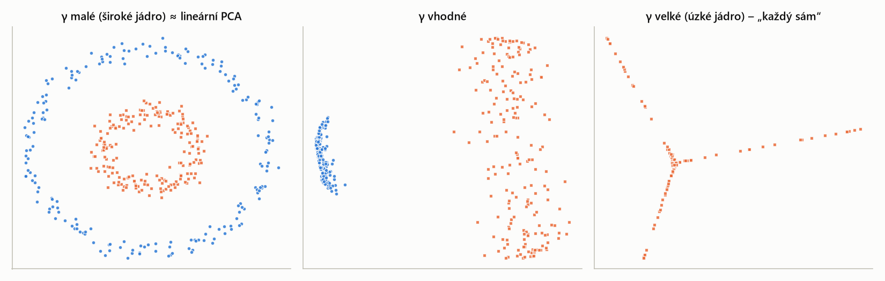
Malé γ (široké jádro): skoro všechny body jsou si „podobné“ a výsledek se blíží lineární PCA – kruhy zůstanou kruhy. Velké γ (úzké jádro): podobnost je nenulová jen pro nejbližší sousedy, každý bod je „sám“ a struktura se rozpadne. Jen vhodné γ přetaví kruhy na dvě oddělené skupiny.
Algoritmus kernel PCA
Lineární PCA dělá spektrální rozklad kovarianční matice \(\mathbf{S} = \frac{1}{n}\mathbf{X}^T\mathbf{X}\) (rozměr \(p \times p\)). Kernel PCA dělá totéž s jádrovou maticí (rozměr \(n \times n\)):
- Výpočet jádrové matice \(\mathbf{K}\), \(K_{ij} = \kappa(\mathbf{x}_i, \mathbf{x}_j)\) – pro 10 objektů matice 10 × 10, symetrická. Je jedno, kolika příznaky je objekt popsán: rozměr je vždy \(N \times N\).
- Centralizace (\(\mathbf{1}_N\) je matice \(N \times N\) s prvky \(1/N\)): \[ \mathbf{K}_c = \mathbf{K} - \mathbf{1}_N\mathbf{K} - \mathbf{K}\mathbf{1}_N + \mathbf{1}_N\mathbf{K}\mathbf{1}_N \]
- Vlastní čísla a vektory (transformační vektory a rozptyly): \(\mathbf{K}_c\mathbf v_i = \lambda_i\mathbf v_i\).
- Seřazení od největšího \(\lambda_i\) po nejmenší.
- Normalizace vlastních vektorů – vydělíme je odmocninou z vlastního čísla: \(\mathbf v_i^{\text{norm}} = \mathbf v_i/\sqrt{\lambda_i}\).
- Projekce dat do prostoru vybraných PC (\(\mathbf K_c\) je centrovaná jádrová matice): \[ \mathbf y_i = \mathbf{K}_c\,\mathbf v_i^{\text{norm}} = \mathbf K_c\,\frac{\mathbf v_i}{\sqrt{\lambda_i}} \]
PCA potřebuje centrovaná data. V kernel PCA ale data v novém prostoru \(\varphi(\mathbf{x})\) nikdy explicitně nemáme – máme jen jejich skalární součiny. Vzorec v kroku 2 provede „odečtení průměru“ přímo na jádrové matici: odečte průměry řádků a sloupců a přičte celkový průměr.
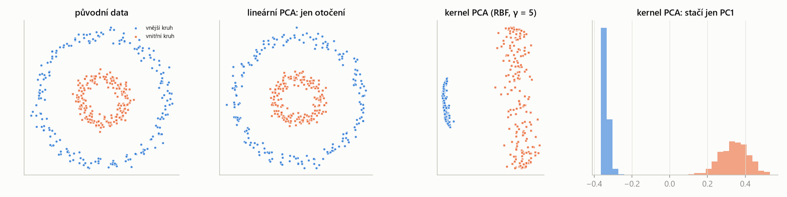
Lineární PCA data jen otočí – skupiny zůstanou lineárně neseparabilní. Kernel PCA s RBF jádrem je převede do prostoru, kde jsou lineárně separabilní, a dokonce stačí jen PC1 (histogram vpravo: dvě oddělené hory).
Projekce nových (testovacích) objektů
U lineární PCA nový objekt prostě vynásobíme transformačními vektory. U kernel PCA potřebujeme jeho podobnost se všemi trénovacími objekty:
- jádrová matice test × trénink \(\mathbf{K}^*\), \(K^*_{ij} = \kappa(\mathbf{x}^*_i, \mathbf{x}_j)\);
- centralizace \(\mathbf{K}^*\) pomocí statistik trénovacího jádra (průměry řádků trénovacího jádra, celkový průměr; viz box níže) – stejná logika jako „standardizuj test parametry z tréninku“;
- projekce \(\mathbf{Y}^* = \mathbf{K}^*_c\,\mathbf v^{\text{norm}}\) (normalizované vlastní vektory z trénovacích dat).
| \(K^*_{ij}\) | jádro mezi \(i\)-tým testovacím a \(j\)-tým trénovacím objektem; \(\mathbf K^*\) má rozměr \(m \times n\) (\(m\) testovacích, \(n\) trénovacích objektů) |
| \(\bar K^*_{i\cdot}\) | průměr \(i\)-tého řádku train-test jádra = průměrná podobnost testovacího objektu se všemi trénovacími |
| \(\bar K_{\cdot j}\) | průměr \(j\)-tého sloupce (= řádku, matice je symetrická) trénovacího jádra \(\mathbf K\) |
| \(\bar{\bar K}\) | celkový průměr trénovacího jádra, \(\frac{1}{n^2}\sum_{k,l} K_{kl}\) |
Je to stejný vzorec jako centralizace v kroku 2 algoritmu, jen se průměry trénovacích objektů berou z trénovacího jádra. Na slidu je \(\mathbf K^*\) zapsaná transponovaně (\(n \times m\), řádky = trénovací objekty), proto tam projekce vychází jako \(\mathbf K_c^{*T}\mathbf v^{\text{norm}}\) – výsledek je stejný.
Důsledek: model si musí pamatovat celá trénovací data, ne jen pár vektorů.
Poznámky a srovnání s lineární PCA
| lineární PCA | kernel PCA | |
|---|---|---|
| rozkládaná matice | kovarianční \(p \times p\) | jádrová \(n \times n\) (s počtem objektů rychle roste výpočet i paměť) |
| vztahy | jen lineární | nelineární (podle jádra) |
| hyperparametry | žádné | typ jádra, γ / řád polynomu |
| interpretace | zátěže = váhy původních příznaků | komponenty nejsou lineární kombinace původních příznaků → zátěže nemají přímý smysl |
| nové objekty | násobení maticí \(\mathbf{V}\) | jádro s celým trénovacím souborem |
Co když ani kernel PCA nepomůže? Zkusit jiné jádro, vyladit parametry, normalizovat data, použít jinou metodu bez učitele (t-SNE, UMAP) nebo metodu s učitelem (např. kernel diskriminační analýzu).
Shrnutí
Lineární PCA selhává u nelineárních struktur (lineárně neseparabilní skupiny, multimodalita, nekolmé přirozené osy) a maximalizuje rozptyl, ne oddělení skupin. Kernel PCA data nelineárně zobrazí do prostoru vyšší dimenze, kde se struktura stane lineární, a tam provede PCA. Díky kernel triku se tento prostor nikdy nepočítá – stačí jádro \(\kappa(\mathbf{a},\mathbf{b}) = \varphi(\mathbf{a})^T\varphi(\mathbf{b})\), které se spočítá v původním prostoru: polynomiální \((\mathbf{a}^T\mathbf{b})^r\) nebo RBF \(e^{-\gamma\lVert\mathbf{a}-\mathbf{b}\rVert^2}\) (nekonečně rozměrný prostor, podobnost klesající se vzdáleností). Algoritmus: jádrová matice \(n \times n\) → centralizace → vlastní čísla a vektory → normalizace → projekce. Parametry jádra se musí ladit; nové objekty se promítají přes jádro s trénovacími daty.
Take-home messages
- Nelineární problém v nízké dimenzi může být lineární ve vyšší dimenzi.
- Jádro = podobnost dvou objektů v (neviditelném) transformovaném prostoru.
- Kernel trick: vysokorozměrný prostor nepočítáme, stačí skalární součiny / vzdálenosti v původním.
- RBF jádro: podobnost klesá se vzdáleností; γ rozhoduje mezi „lineární PCA“ a „každý bod sám“.
- Kernel PCA rozkládá matici objekt × objekt – drahé pro velká n a hůř interpretovatelné.
Otázky ke zkoušce
Jaké jsou limity lineární PCA a jak je řeší kernel PCA?
Lineární PCA vidí jen lineární vztahy a jen otáčí osy: nezvládne lineárně neseparabilní skupiny (kruhy), multimodální data, nekolmé přirozené osy a největší rozptyl nemusí odpovídat oddělení skupin. Kernel PCA data nelineárně zobrazí do vyšší dimenze, kde se struktura stane lineární, a teprve tam provede PCA.
Co je jádro (kernel) a kernel trick?
Jádro je funkce \(\kappa(\mathbf a,\mathbf b) = \varphi(\mathbf a)^T\varphi(\mathbf b)\) – skalární součin (podobnost) objektů po nelineární transformaci \(\varphi\). Kernel trick znamená, že tuto hodnotu umíme spočítat přímo z původních vektorů, aniž bychom \(\varphi\) počítali – např. pro polynomiální jádro 2. řádu \((\mathbf a^T\mathbf b)^2\) místo součinu dvou 3D (nebo 9D) vektorů. Je to výpočetně levné a umožňuje i nekonečně rozměrné prostory (RBF).
Odvoďte polynomiální jádro 2. řádu pro 2D vektory.
Zobrazení do 3D: \(\varphi(\mathbf a) = (a_1^2, \sqrt2 a_1a_2, a_2^2)\). Pak
\[ \begin{aligned} \varphi(\mathbf a)^T\varphi(\mathbf b) &= a_1^2b_1^2 + 2a_1a_2b_1b_2 + a_2^2b_2^2 \\ &= (a_1b_1 + a_2b_2)^2 = (\mathbf a^T\mathbf b)^2 \end{aligned} \]Popište RBF jádro a vliv parametru γ.
\(\kappa = e^{-\gamma\lVert\mathbf a-\mathbf b\rVert^2}\), \(\gamma = 1/(2\sigma^2)\). Pro stejné objekty 1, se vzdáleností klesá k 0 – je to míra podobnosti; odpovídající prostor je nekonečně rozměrný, ale stačí spočítat eukleidovskou vzdálenost. Malé γ (široké jádro) → výsledek se blíží lineární PCA; velké γ (úzké) → podobné jsou jen nejbližší body, struktura se rozpadne. γ se ladí, např. křížovou validací.
Popište algoritmus kernel PCA.
- Spočítám jádrovou matici \(n \times n\) pro všechny dvojice objektů.
- Centralizuji ji, protože data v novém prostoru musí být centrovaná: \[ \mathbf K_c = \mathbf K - \mathbf 1\mathbf K - \mathbf K\mathbf 1 + \mathbf 1\mathbf K\mathbf 1 \]
- Spočítám vlastní čísla a vektory a seřadím je sestupně.
- Vektory normalizuji \(1/\sqrt\lambda\) a projekce získám vynásobením centrované jádrové matice normalizovanými vektory.
Pro nové objekty spočítám jádro vůči trénovacím objektům a centralizuji ho statistikami trénovacího jádra.
Jak se do kernel PCA promítne nový (testovací) objekt?
- Spočítám jádro mezi novým objektem a všemi trénovacími objekty (matice \(\mathbf K^*\)).
- Centralizuji ho statistikami z tréninku: od každého prvku odečtu průměrnou podobnost nového objektu s trénovacími a průměr příslušného řádku trénovacího jádra, přičtu celkový průměr trénovacího jádra.
- Vynásobím centrované jádro normalizovanými vlastními vektory z tréninku: \(\mathbf Y^* = \mathbf K^*_c\,\mathbf v^{\text{norm}}\).
Proto si model musí pamatovat celá trénovací data.
Proč je jádrová matice n × n a čím se liší od kovarianční matice?
Kernel pracuje v oblasti objektů: jádro je podobnost dvou objektů v (neviditelném) příznakovém prostoru, takže matice je objekty × objekty, \(n \times n\), bez ohledu na to, kolika příznaky je objekt popsán. Lineární PCA pracuje v oblasti příznaků: kovarianční matice popisuje vztahy dvojic příznaků, \(p \times p\). Kernel PCA rozkládá jádrovou matici místo kovarianční – vysoká (i nekonečná) dimenze příznakového prostoru tak nevadí, ale pro velký počet objektů je výpočet drahý.
Jaké jsou nevýhody kernel PCA oproti lineární PCA?
Rozkládá matici \(n \times n\) (drahé pro velký počet objektů), má hyperparametry (typ jádra, γ), které je nutné ladit, komponenty nejsou lineární kombinace původních příznaků (horší interpretace) a pro projekci nových objektů je nutné uchovat celá trénovací data.
Přednáška 8
Maticové rozklady v ordinační analýze: ED a SVD
Transformační vektory pro PCA lze spočítat dvěma způsoby: spektrálním rozkladem kovarianční matice (ED) nebo singulárním rozkladem samotné datové matice (SVD). Dávají stejný výsledek, ale SVD je v praxi přesnější a stabilnější. Tady je, co oba rozklady „dělají“ a jak spolu souvisí.
Co je maticový rozklad
Maticový rozklad (dekompozice, faktorizace) je vyjádření matice jako součinu dvou nebo více matic se speciálními vlastnostmi (trojúhelníkové, ortogonální, diagonální).
rozložím složitou matici na „jednoduché stavební díly“, jejichž význam je jasný (otočení, natažení) a se kterými se snadno počítá – podobně jako 60 = 2·2·3·5.
Rozložit matici znamená napsat ji jako součin jednodušších matic (trojúhelníkových, ortogonálních, diagonálních), se kterými se snáz počítá a které mají jasný význam – podobně jako rozklad čísla na prvočísla. Několik základních pojmů, které rozklady používají:
- Transponovaná matice \(\mathbf A^T\) vznikne záměnou řádků a sloupců.
- Symetrická matice splňuje \(\mathbf A = \mathbf A^T\).
- Diagonální matice má nenulové prvky jen na hlavní diagonále.
- Jednotková matice \(\mathbf I\) je diagonální s jedničkami na diagonále (\(\mathbf A\mathbf I = \mathbf A\)).
- Inverzní matice \(\mathbf A^{-1}\) splňuje \(\mathbf A\mathbf A^{-1} = \mathbf I\).
- Ortogonální matice má ortonormální sloupce, takže \(\mathbf Q^T\mathbf Q = \mathbf I\), tj. \(\mathbf Q^{-1} = \mathbf Q^T\).
jednotková matice je „jednička“ maticového světa, inverze „dělení“. Ortogonální matice geometricky jen otáčí (či zrcadlí) – nemění délky ani úhly – a její inverzi získáme zadarmo transpozicí.
Determinant \(\det\mathbf A\) čtvercové matice je číslo, které udává, kolikrát lineární zobrazení \(\mathbf A\) zvětší objem (ve 2D plochu); je roven součinu vlastních čísel a je nulový právě tehdy, když matice nemá inverzi. Stopa je součet prvků na diagonále a je rovna součtu vlastních čísel. Hodnost je maximální počet lineárně nezávislých řádků (sloupců) a je rovna počtu nenulových singulárních čísel.
determinant = „objem“ (u kovarianční matice zobecněný rozptyl, u korelační matice blízko 0 = silné korelace); stopa = celkový rozptyl; hodnost = kolik skutečně nezávislých směrů data obsahují.
| Rozklad | Tvar | Pro matici | Složky |
|---|---|---|---|
| LU | \(\mathbf{A} = \mathbf{L}\mathbf{U}\) | čtvercovou | L dolní, U horní trojúhelníková |
| QR | \(\mathbf{A} = \mathbf{Q}\mathbf{R}\) | obdélníkovou | Q ortonormální, R horní trojúhelníková |
| spektrální (ED) | \(\mathbf{A} = \mathbf{P}\mathbf{D}\mathbf{P}^{-1}\) | čtvercovou | P vlastní vektory, D diagonální (vlastní čísla) |
| singulární (SVD) | \(\mathbf{A} = \mathbf{U}\boldsymbol\Sigma\mathbf{V}^{T}\) | libovolnou obdélníkovou | U, V ortonormální; Σ pseudodiagonální (singulární čísla) |
Pro PCA jsou podstatné poslední dva.
Spektrální rozklad (eigendecomposition, ED)
Matici \(\mathbf{A}\) chápeme jako lineární operátor – něco, co vektory otáčí a natahuje. Většinu vektorů otočí do jiného směru. Existují ale výjimečné směry, které \(\mathbf{A}\) neotočí, jen natáhne nebo zkrátí \(\lambda\)-krát. To jsou vlastní vektory \(\mathbf{v}\); koeficient natažení je vlastní číslo \(\lambda\). U kovarianční matice jsou vlastní vektory „přirozené osy“ datového mraku a vlastní čísla rozptyly podél nich.
Spektrální rozklad (eigendecomposition) čtvercové matice \(\mathbf A\) je její vyjádření ve tvaru \(\mathbf A = \mathbf P\mathbf D\mathbf P^{-1}\), kde sloupce \(\mathbf P\) jsou vlastní vektory \(\mathbf A\) a \(\mathbf D\) je diagonální matice příslušných vlastních čísel. Pro symetrickou matici je \(\mathbf P\) ortogonální, tedy \(\mathbf A = \mathbf P\mathbf D\mathbf P^T\).
matici rozložím na „otoč do vlastních os – natáhni podél nich – otoč zpět“. Pro kovarianční matici: vlastní osy = hlavní komponenty, natažení = rozptyly.
| \(\mathbf{A}\) | čtvercová matice (pro PCA kovarianční / korelační matice \(\mathbf{S}\)) |
| \(\mathbf{P}\) | matice vlastních vektorů (sloupce), seřazených podle vlastních čísel |
| \(\mathbf{D}\) | diagonální matice vlastních čísel (sestupně) |
Je-li \(\mathbf{A}\) symetrická (kovarianční i korelační matice jsou), jsou vlastní čísla reálná, vlastní vektory navzájem kolmé a \(\mathbf{P}^{-1} = \mathbf{P}^T\).
Jak vlastní čísla a vektory spočítat
Rovnici \(\mathbf{A}\mathbf{v} = \lambda\mathbf{v}\) převedeme na \((\mathbf{A} - \lambda\mathbf{I})\mathbf{v} = \mathbf{0}\) (\(\mathbf{I}\) jednotková matice – potřebujeme ji, abychom mohli od matice odečíst číslo). To je soustava homogenních lineárních rovnic; netriviální řešení (\(\mathbf{v} \ne \mathbf{0}\)) má jen tehdy, když
\[ \det(\mathbf{A} - \lambda\mathbf{I}) = 0 \qquad\text{(charakteristický mnohočlen)} \]Kořeny jsou vlastní čísla; dosazením každého zpět do soustavy dostaneme odpovídající vlastní vektor.
Krok 1 – vlastní čísla:
\[ \begin{aligned} \det\begin{pmatrix}3-\lambda & 3\\ 3 & 7-\lambda\end{pmatrix} &= (3-\lambda)(7-\lambda) - 3\cdot 3 \\ &= \lambda^2 - 10\lambda + 12 = 0 \end{aligned} \] \[ \begin{aligned} D &= 100 - 4\cdot 12 = 52 \\ \lambda_{1,2} &= \frac{10 \pm \sqrt{52}}{2} \\ \lambda_1 &\approx 8{,}6,\quad \lambda_2 \approx 1{,}4 \end{aligned} \]Krok 2 – vlastní vektor pro \(\lambda_1 = 8{,}6\):
\[ \begin{aligned} \begin{pmatrix}3-8{,}6 & 3\\ 3 & 7-8{,}6\end{pmatrix}\begin{pmatrix}v_1\\v_2\end{pmatrix} &= \mathbf{0} \\ \begin{pmatrix}-5{,}6 & 3\\ 3 & -1{,}6\end{pmatrix}\begin{pmatrix}v_1\\v_2\end{pmatrix} &= \mathbf{0} \end{aligned} \]Z prvního řádku \(-5{,}6\,v_1 + 3\,v_2 = 0\):
\[ v_2 = \tfrac{5{,}6}{3}v_1 \approx 1{,}87\,v_1 \]Rovnice jsou závislé (proto existuje nenulové řešení) – určují jen směr. Délku zvolíme 1: \(\mathbf{v}_1 \approx (0{,}47;\ 0{,}88)\).
Pro \(\lambda_2 = 1{,}4\): \(1{,}6\,v_1 + 3\,v_2 = 0\) → \(\mathbf{v}_2 \approx (-0{,}88;\ 0{,}47)\).
Výsledek a kontrola:
\[ \mathbf{D} = \begin{pmatrix}8{,}6 & 0\\ 0 & 1{,}4\end{pmatrix},\qquad \mathbf{V} = \begin{pmatrix}0{,}47 & -0{,}88\\ 0{,}88 & 0{,}47\end{pmatrix} \]- kolmost: \[ \mathbf{v}_1\cdot\mathbf{v}_2 = 0{,}47\cdot(-0{,}88) + 0{,}88\cdot 0{,}47 = 0 \]
- jednotková délka: \(\sqrt{0{,}47^2 + 0{,}88^2} \approx 1\) → ortonormální báze;
- zpětné složení (pro ortonormální \(\mathbf{V}\) platí \(\mathbf{V}^{-1} = \mathbf{V}^T\)): \[ \mathbf{V}\mathbf{D}\mathbf{V}^T \approx \begin{pmatrix}3&3\\3&7\end{pmatrix}\ \checkmark \]
Pro PCA: vlastní vektor největšího vlastního čísla (0,47; 0,88) udává směr největšího rozptylu; ten nese \(8{,}6/(8{,}6+1{,}4) = 86\) % celkového rozptylu (součet vlastních čísel = stopa matice = 3 + 7 = 10).
Singulární rozklad (SVD)
Singulární rozklad libovolné matice \(\mathbf A\) typu \(n\times p\) je její vyjádření ve tvaru \[ \mathbf A = \mathbf U\boldsymbol\Sigma\mathbf V^T \] kde:
- \(\mathbf U\) (\(n\times n\)) a \(\mathbf V\) (\(p\times p\)) jsou ortogonální matice,
- \(\boldsymbol\Sigma\) (\(n\times p\)) má na diagonále nezáporná singulární čísla \(\sigma_1 \ge \sigma_2 \ge \dots \ge 0\) a jinde nuly.
Sloupce \(\mathbf U\) jsou levé a sloupce \(\mathbf V\) pravé singulární vektory; platí \(\mathbf A\mathbf v_j = \sigma_j\mathbf u_j\).
„spektrální rozklad pro jakoukoli matici, i obdélníkovou“. Každé lineární zobrazení = otočení, natažení podél os o \(\sigma_j\), další otočení. Singulární čísla říkají, jak „silný“ je každý směr.
| \(\mathbf{A}\) | libovolná obdélníková (i čtvercová) matice – pro PCA přímo centrovaná datová matice \(\mathbf{X}\) |
| \(\mathbf{U}\) | ortonormální matice levých singulárních vektorů \(\mathbf{u}\) (sloupce) |
| \(\boldsymbol\Sigma\) | (pseudo)diagonální matice singulárních čísel \(\sigma_1 \ge \sigma_2 \ge \dots \ge 0\), vždy kladná reálná |
| \(\mathbf{V}^T\) | ortonormální matice pravých singulárních vektorů \(\mathbf{v}\) (řádky) |
Analogie s vlastními vektory: \(\mathbf{A}\mathbf{v} = \sigma\mathbf{u}\) – působení \(\mathbf{A}\) na vektor \(\mathbf{v}\) dá jiný vektor \(\mathbf{u}\) vynásobený skalárem \(\sigma\).
Každou matici (každé lineární zobrazení) lze rozložit na tři jednoduché kroky: otočení (\(\mathbf{V}^T\)), natažení podél os (\(\boldsymbol\Sigma\)) a další otočení (\(\mathbf{U}\)). Ortonormální matice nemění délky ani úhly – jen otáčí (případně zrcadlí). Veškerá „deformace“ je soustředěna v diagonální \(\boldsymbol\Sigma\).
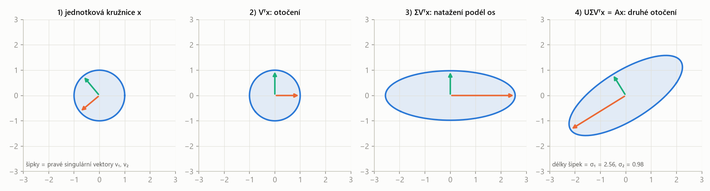
Kružnice se vždy změní v elipsu. Pravé singulární vektory \(\mathbf{v}_1, \mathbf{v}_2\) jsou směry, které se zobrazí na hlavní osy elipsy; délky poloos jsou singulární čísla; směry poloos jsou levé singulární vektory. Pro PCA: \(\mathbf{v}\) = směry komponent, \(\sigma\) = „síla“ (rozptyl) v těchto směrech, a protože U a V jsou ortonormální, jde o čistou rotaci os bez zkreslení měřítka.
Druhý řádek je polovina prvního – matice má hodnost 1. SVD:
\[ \begin{aligned} \sigma_1 &= \sqrt{10},\qquad \sigma_2 = 0 \\ \mathbf{v}_1 &= (1/\sqrt2;\ 1/\sqrt2) \\ \mathbf{u}_1 &= (2/\sqrt5;\ 1/\sqrt5) \end{aligned} \]Celou matici tedy popisuje jediný směr, \(\mathbf{A} = \sigma_1\mathbf{u}_1\mathbf{v}_1^T\) – druhé singulární číslo 0 říká, že ve druhém směru „není nic“. Největší σ ↔ nejdůležitější transformační vektor. Přesně tohle dělá PCA při redukci dimenze: zahodí směry s malým σ.
ED vs. SVD: jak spolu souvisí
Pro centrovanou datovou matici \(\mathbf{X}\,(n\times p)\):
Porovnáním obou vyjádření \(\mathbf{S}\):
- pravé singulární vektory \(\mathbf{V}\) matice \(\mathbf{X}\) = vlastní vektory \(\mathbf{X}^T\mathbf{X}\) (a tedy kovarianční matice) = transformační vektory PCA (zátěže);
- vlastní čísla kovarianční matice \(\lambda_j = \dfrac{\sigma_j^2}{n-1}\) – singulární čísla reprezentují rozptyl / důležitost;
- levé singulární vektory \(\mathbf{U}\) = vlastní vektory \(\mathbf{X}\mathbf{X}^T\);
- komponentní skóre: \(\mathbf{Y} = \mathbf{X}\mathbf{V} = \mathbf{U}\boldsymbol\Sigma\).
U symetrické matice (např. \(\begin{pmatrix}3&3\\3&7\end{pmatrix}\)) dávají ED a SVD totéž: singulární čísla 8,6056 a 1,3944 = vlastní čísla (jen se mohou lišit pořadí sloupců a znaménka vektorů).
Proč je SVD v praxi lepší
Počítač ukládá čísla s omezeným počtem platných číslic (~16 v dvojité přesnosti), takže každá operace přidá malou zaokrouhlovací chybu. Algoritmus je numericky stabilní, pokud se tyto drobné chyby během výpočtu nezesilují a výsledek se od přesného liší jen málo.
stabilní výpočet „neztratí hlavu“ z malých nepřesností. Nestabilní je může nafouknout tak, že výsledek (např. malé vlastní číslo nebo směr komponenty) je úplně jiný, než by měl být.
| problém ED přes kovarianční matici | jak to řeší SVD |
|---|---|
| nízká přesnost – výpočtem \(\mathbf{X}^T\mathbf{X}\) se „umocní“ rozdíly v řádech čísel; malé hodnoty (typicky po centrování / standardizaci, u řídkých matic) zaniknou v zaokrouhlovací chybě | pracuje přímo s \(\mathbf{X}\), kovarianční matici vůbec nepočítá |
| nestabilní řešení – malé zaokrouhlovací chyby mohou vést k velkým chybám ve vlastních číslech a vektorech, včetně nestabilního znaménka směrů komponent | používá jen ortogonální operace, které zachovávají délky a úhly → numericky přesné a stabilní |
| výpočetní náročnost: kovarianční matice \(O(p^2n)\) + ED \(O(p^3)\) | \(O(\min\{p^2n,\ n^2p\})\) |
| v některých knihovnách nejsou vlastní vektory normované | U a V jsou vždy ortonormální |
Když má datová matice singulární čísla 1 a 10⁻⁸, kovarianční matice bude mít vlastní čísla řádově 1 a 10⁻¹⁶ – a to je na hranici přesnosti počítače. Informace o „slabém“ směru se při výpočtu \(\mathbf{X}^T\mathbf{X}\) ztratí, SVD ji zachová.
Jak se SVD počítá (jen princip, např. Golubova–Kahanova metoda): matice se nejdřív ortogonálními zrcadleními (Householderovy matice) zjednoduší na bidiagonální tvar a ta se iteračně (např. QR rozkladem) diagonalizuje. Všechny kroky jsou ortogonální, proto stabilní.
Kdy použít ED a kdy SVD
| situace | volba |
|---|---|
| malá až střední dimenze \(\mathbf{X}\) | ED (lze i SVD, výsledky podobné) |
| velká, „šikmá“ (\(n \gg p\) nebo \(p \gg n\)) nebo řídká \(\mathbf{X}\) | SVD (bezpečnější volba) |
| kernel PCA | ED – rozkládá se jádrová matice, která je vždy čtvercová a symetrická, SVD je zbytečné |
Další využití ED/SVD: pseudoinverzní matice, vlastnosti matice (hodnost, norma, determinant), řešení soustav lineárních rovnic (automatizace, elektrotechnika, modelování), redukce dimenze a dekorelace (PCA) – zobrazení dat, zpracování signálů, komprese dat, selekce příznaků.
Shrnutí
Transformační vektory PCA lze získat dvěma rozklady.
- Spektrální rozklad čtvercové matice \[ \mathbf{A} = \mathbf{P}\mathbf{D}\mathbf{P}^{-1} \] hledá směry, které matice jen natáhne (\(\mathbf{A}\mathbf{v} = \lambda\mathbf{v}\)); počítá se přes \(\det(\mathbf{A}-\lambda\mathbf{I}) = 0\) a dosazení vlastních čísel zpět. Pro symetrickou kovarianční matici jsou vlastní vektory ortonormální a dávají směry komponent, vlastní čísla jejich rozptyly.
- Singulární rozklad \(\mathbf{X} = \mathbf{U}\boldsymbol\Sigma\mathbf{V}^T\) funguje pro libovolnou obdélníkovou matici a geometricky znamená rotaci – škálování – rotaci.
Pro centrovaná data platí: pravé singulární vektory = vlastní vektory kovarianční matice, \(\lambda = \sigma^2/(n-1)\), skóre \(= \mathbf{U}\boldsymbol\Sigma\). SVD je přesnější, stabilnější a obvykle rychlejší, protože nepočítá kovarianční matici a používá jen ortogonální operace; ED se používá u malých dat a v kernel PCA.
Take-home messages
- Vlastní vektor = směr, který matice neotočí; vlastní číslo = kolikrát ho natáhne.
- Postup ED: \(\det(\mathbf A - \lambda\mathbf I) = 0\) → vlastní čísla → dosadit → vlastní vektory → normovat na délku 1.
- SVD = rotace × škálování × rotace; funguje pro jakoukoli matici.
- Pravé singulární vektory X = zátěže PCA; σ² / (n−1) = vlastní čísla = rozptyly komponent.
- SVD je numericky lepší (přímo z X, jen ortogonální operace); kernel PCA používá ED.
Otázky ke zkoušce
Co jsou vlastní čísla a vlastní vektory a jak se počítají?
Vlastní vektor matice \(\mathbf A\) je nenulový vektor, jehož směr \(\mathbf A\) nezmění, jen ho \(\lambda\)-krát natáhne: \(\mathbf A\mathbf v = \lambda\mathbf v\); \(\lambda\) je vlastní číslo. Výpočet: soustava
\[ (\mathbf A - \lambda\mathbf I)\mathbf v = 0 \]má netriviální řešení, jen když
\[ \det(\mathbf A-\lambda\mathbf I) = 0 \]Kořeny charakteristického mnohočlenu jsou vlastní čísla, dosazením do soustavy získám vlastní vektory a normuji je na délku 1.
Spočítejte vlastní čísla matice [[3, 3], [3, 7]].
\((3-\lambda)(7-\lambda) - 9 = \lambda^2 - 10\lambda + 12 = 0\), diskriminant 52, \(\lambda = (10 \pm \sqrt{52})/2\) → 8,6 a 1,4. Vlastní vektory (0,47; 0,88) a (−0,88; 0,47), jsou kolmé a jednotkové. První směr nese 86 % rozptylu.
Co je SVD a jaký má geometrický význam?
Rozklad libovolné matice \(\mathbf A = \mathbf U\boldsymbol\Sigma\mathbf V^T\): U a V ortonormální (rotace, příp. zrcadlení), Σ diagonální s nezápornými singulárními čísly (natažení podél os). Každé lineární zobrazení je tedy otočení, natažení a další otočení; jednotkovou kružnici zobrazí na elipsu s poloosami σ.
Jak souvisí SVD datové matice s PCA?
Pro centrovanou \(\mathbf X = \mathbf U\boldsymbol\Sigma\mathbf V^T\) je
\[ \frac{\mathbf X^T\mathbf X}{n-1} = \mathbf V\,\frac{\boldsymbol\Sigma^2}{n-1}\,\mathbf V^T \]což je spektrální rozklad kovarianční matice. Proto pravé singulární vektory = transformační vektory (zátěže) PCA, vlastní čísla = \(\sigma^2/(n-1)\) a komponentní skóre \(\mathbf X\mathbf V = \mathbf U\boldsymbol\Sigma\).
Proč je SVD výhodnější než ED kovarianční matice?
Nepočítá kovarianční matici, takže se neztratí přesnost malých hodnot (při \(\mathbf X^T\mathbf X\) se rozdíly řádů umocní); používá jen ortogonální operace zachovávající délky a úhly → numericky stabilní (i znaménka komponent); je výpočetně efektivnější (\(O(\min(p^2n, n^2p))\) vs. \(O(p^2n + p^3)\)) a vektory jsou vždy normované. ED je v pořádku pro malá data a používá se v kernel PCA, kde je jádrová matice čtvercová a symetrická.
Přednáška 9
Faktorová analýza (FA)
PCA popisuje, kam se data rozptylují. Faktorová analýza se ptá proč spolu příznaky korelují: předpokládá, že za korelacemi stojí několik skrytých společných příčin – faktorů – a snaží se je odhalit a pojmenovat.
Od PCA k faktorové analýze
V příkladu se spotřebou proteinů měla korelační matice silné korelace (maso, vejce, mléko spolu; obiloviny proti nim). Proč? Jedna možnost: potraviny se přímo ovlivňují. Druhá, pravděpodobnější: existují skryté společné příčiny (faktory) – třeba „životní úroveň“ nebo „středomořské klima“ – které ovlivňují spotřebu více potravin najednou, a tím mezi nimi vytvářejí korelace.
Představ si, že u sportovců měříš 10 věcí (kilometry týdně, počet maratonů, rychlost, výkon, spirometrii…). Všechno se vším koreluje. FA předpokládá, že ve skutečnosti existují jen dvě skryté vlastnosti – např. „dlouhodobý trénink“ a „aktuální forma“ – a každé měření je jejich směsí plus něco vlastního (chyba měření, specifický vliv). Korelace mezi měřeními vznikají jen proto, že sdílejí stejné faktory.
Faktorová analýza je statistická metoda, která vysvětluje korelace mezi \(p\) pozorovanými proměnnými pomocí menšího počtu \(R\) nepozorovaných (latentních) společných faktorů. Každá proměnná je modelována jako lineární kombinace společných faktorů plus vlastní specifický faktor.
hledám „skryté příčiny“, kvůli kterým se měřené veličiny pohybují spolu. Měřím kilometry, maratony, rychlost…, ale ve skutečnosti za tím stojí jen „trénovanost“ a „forma“.
Vlastnosti faktorů
- působí na měřené příznaky (ve větší či menší míře);
- nejsou / nemohou být měřeny – jsou hypotetické (latentní);
- je jich málo: \(R \ll p\) (\(R\) = počet faktorů, \(p\) = počet příznaků);
- jsou (většinou) nezávislé mezi sebou a odlišné.
Cíle a podmínky FA
| Cíle | Podmínky |
|---|---|
|
|
Model faktorové analýzy
Společný faktor \(F_r\) je latentní proměnná, která ovlivňuje více pozorovaných proměnných zároveň, a tím mezi nimi vytváří korelace. Specifický (jedinečný) faktor \(\varepsilon_j\) ovlivňuje jen jednu proměnnou \(x_j\) a zahrnuje její vlastní variabilitu včetně chyby měření; s ničím jiným nekoreluje.
společný faktor = „sdílená příčina“ (trénovanost se projeví v kilometrech i maratonech); specifický faktor = „vlastní šum“ jedné veličiny (nepřesnost měření spirometrem).
Faktorová zátěž \(\gamma_{jr}\) je koeficient, se kterým \(r\)-tý společný faktor vstupuje do modelu \(j\)-té proměnné. Pro standardizované proměnné a nekorelované faktory je rovna korelaci proměnné \(j\) s faktorem \(r\).
jak silně daná skrytá příčina ovlivňuje danou měřenou veličinu. Podle proměnných s vysokými zátěžemi faktor pojmenovávám.
| \(x_j - \mu_j\) | odchylka \(j\)-tého příznaku od jeho průměru |
| \(F_1,\dots,F_R\) | společné faktory – působí na všechny příznaky; vyvolávají korelace mezi příznaky |
| \(\gamma_{jr}\) | faktorové zátěže – příspěvek faktoru \(r\) do příznaku \(j\); pro standardizovaná data = korelace příznaku s faktorem |
| \(\varepsilon_j\) | specifický faktor – vlastní pro každý příznak; jen další zdroj variability (např. chyba měření), korelace nevytváří |
Maticově:
\[ \mathbf{x} - \boldsymbol\mu = \boldsymbol\Gamma\mathbf{F} + \boldsymbol\varepsilon \]Pro standardizovaná data:
\[ \mathbf{z} = \boldsymbol\Gamma^*\mathbf{F} + \boldsymbol\varepsilon^* \]Každý příznak je ovlivněn všemi společnými faktory, ale v různé míře (různé zátěže). Příznaky „pod stejným faktorem“ spolu korelují, protože sdílejí stejnou příčinu. Specifické faktory ε jsou pro každý příznak vlastní a korelace nevytvářejí.
Vlastnosti parametrů modelu
- Společné faktory \(F_r\): vzájemně nezávislé, střední hodnota 0, rozptyl 1 (kovarianční matice faktorů = \(\mathbf{I}\)).
- Specifické faktory \(\varepsilon_j\): vzájemně nezávislé, střední hodnota 0, rozptyly \(\psi_j\) → jejich kovarianční matice \(\boldsymbol\Psi\) je diagonální.
- \(F_r\) a \(\varepsilon_j\) jsou nezávislé pro každou kombinaci \(r\) a \(j\).
Model „trochu jinak“: rozklad kovarianční matice a komunalita
Z modelu a vlastností parametrů plyne, jak vypadá kovarianční (korelační) matice příznaků:
a pro korelační matici:
\[ \mathbf{P} = \boldsymbol\Gamma^*\boldsymbol\Gamma^{*T} + \boldsymbol\Psi^* \]Pro rozptyl jednoho příznaku (diagonála):
\[ s_j^2 = \underbrace{\sum_{r=1}^{R}\gamma_{jr}^2}_{h_j^2\ \text{komunalita}} + \underbrace{\psi_j}_{\text{specifický rozptyl}} \]Pro standardizovaná data je rozptyl každého příznaku 1:
\[ 1 = h_j^2 + \psi_j \]| \(\boldsymbol\Gamma\boldsymbol\Gamma^T\) | část kovariancí vysvětlená společnými faktory – mimo diagonálu je celá korelační struktura |
| \(\boldsymbol\Psi\) | diagonální matice specifických rozptylů – přispívá jen na diagonálu |
| \(h_j^2\) | komunalita – podíl rozptylu příznaku vysvětlený společnými faktory |
| \(\psi_j\) | specifický rozptyl způsobený jinými příčinami (chyba měření, vlastní vlivy) |
Komunalita \(h_j^2 = \sum_r \gamma_{jr}^2\) je ta část rozptylu \(j\)-té proměnné, kterou vysvětlují společné faktory. Specifický rozptyl (unikvita) \(\psi_j\) je zbývající část rozptylu, připadající na specifický faktor. Pro standardizovanou proměnnou platí \(h_j^2 + \psi_j = 1\).
komunalita říká, „kolik má proměnná společného s ostatními“ (přes faktory); specifický rozptyl, „kolik je v ní jejího vlastního, nesdíleného“.
Standardizovaný příznak má zátěže 0,8 na F1 a 0,3 na F2. Komunalita \(h^2 = 0{,}8^2 + 0{,}3^2 = 0{,}64 + 0{,}09 = 0{,}73\): 73 % jeho rozptylu vysvětlují společné faktory, 27 % je specifický rozptyl.
Vysoká komunalita = příznak je dobře popsán faktory (hodí se do společné analýzy). Velmi nízká = příznak má s ostatními málo společného. Ale nesnažíme se dosáhnout komunalit blízkých 1 (specifických rozptylů blízkých 0) – vede to k triviálním faktorům, které jen kopírují jednotlivé příznaky.
Odhad parametrů modelu
Známe: standardizovaná data \(\mathbf{Z}\,(n\times p)\) a korelační matici \(\mathbf{P}\,(p\times p)\). Neznáme: hodnoty faktorů \(\mathbf{F}\,(n\times R)\), zátěže \(\boldsymbol\Gamma\,(p\times R)\), specifické faktory a jejich rozptyly \(\boldsymbol\Psi\). Musíme zvolit počet faktorů \(R \ll p\). Metody odhadu:
- Odhad založený na PCA,
- metoda hlavních faktorů (hlavních os; iterační / neiterační),
- metoda maximální věrohodnosti (maximum likelihood) a další.
Odhad pomocí PCA
Z PCA korelační matice máme vlastní vektory \(\mathbf{V}\) a vlastní čísla \(\boldsymbol\Lambda\). Data lze zpětně rekonstruovat z hlavních komponent. Rozdělíme komponenty na \(R\) nejdůležitějších (→ společné faktory) a zbylých \(p-R\) (→ specifické faktory):
Faktorové zátěže = komponentní zátěže vážené odmocninou vlastních čísel.
| \(\mathbf{V}_1\) | prvních \(R\) vlastních vektorů korelační matice |
| \(\boldsymbol\Lambda_1^{1/2}\) | odmocniny prvních \(R\) vlastních čísel – převedou směr na korelaci příznak–faktor |
Odhad faktorů = normované komponentní skóre prvních \(R\) komponent; specifické faktory se odhadnou z posledních \(p-R\) komponent (jejich kovarianční matice ale vyjde jen přibližně diagonální).
Metoda hlavních faktorů (princip)
- Korelační matice \(\mathbf{P}\).
- Počáteční odhad komunalit \(h_j^2\) jako čtverec vícenásobného korelačního koeficientu (jak dobře \(x_j\) vysvětlí ostatní příznaky).
- Komunality dosadíme na diagonálu místo jedniček → redukovaná korelační matice (na diagonále jen „sdílený“ rozptyl, ne celkový).
- PCA redukované matice → \(R\) největších vlastních čísel a vektorů → zátěže → nové komunality.
- Nové komunality znovu na diagonálu, opakovat dokud to konverguje a není to nesmyslné (záporné komunality apod.).
Rozdíl od PCA je právě v diagonále: PCA rozkládá celý rozptyl, metoda hlavních faktorů jen společný (sdílený) rozptyl.
Redukovaná korelační matice je korelační matice, ve které jsou jedničky na diagonále nahrazeny (odhady) komunalit \(h_j^2\). Mimo diagonálu zůstávají původní korelace.
„korelační matice bez vlastního šumu proměnných“. Na diagonále necháme jen tu část rozptylu, kterou proměnná sdílí s ostatními – a právě tu chce faktorová analýza vysvětlit.
Vícenásobný (mnohonásobný) korelační koeficient \(R_j\) je korelace mezi proměnnou \(x_j\) a její nejlepší lineární předpovědí ze všech ostatních proměnných; jeho čtverec je koeficient determinace \(R_j^2\) této regrese (stejný jako ve VIF).
„jak dobře umím \(x_j\) spočítat z ostatních“. Je to rozumný první tip na komunalitu: co jde předpovědět z ostatních, to s nimi proměnná sdílí.
Volba počtu faktorů R
- Subjektivně podle PCA (vysvětlený rozptyl, scree plot) – aspoň na začátku, pak lze počet měnit.
- \(R \le p/2\) – jinak je neznámých příliš mnoho a faktorové řešení nemusí existovat; navíc Kaiserovo kritérium (vlastní čísla \(\mathbf{P}\) > 1).
- Počet faktorů vysvětlující > 90 % celkové komunality (ne celkového rozptylu!) a aspoň 70–80 % celkového rozptylu.
- Odstranit triviální faktory (triviální faktor = faktor, který má vysokou zátěž jen u jediného příznaku, takže nevysvětluje žádnou korelaci, jen kopíruje tento příznak). Pokud ten příznak koreluje jen s tímto faktorem, lze ho analyzovat zvlášť – může být důležitý, ale do společné analýzy nepatří.
- Nesnažit se o specifické rozptyly blízké nule (viz výše).
Nejednoznačnost řešení a rotace faktorů
Vezmi libovolnou ortogonální matici \(\mathbf{T}\) (rotaci, \(\mathbf{T}\mathbf{T}^T = \mathbf{I}\)) a definuj nové zátěže a nové faktory:
\[ \boldsymbol\Gamma_1 = \boldsymbol\Gamma\mathbf{T},\qquad \mathbf{F}_1 = \mathbf{T}^T\mathbf{F} \]Pak
\[ \begin{aligned} \boldsymbol\Gamma_1\boldsymbol\Gamma_1^T + \boldsymbol\Psi &= \boldsymbol\Gamma\mathbf{T}\mathbf{T}^T\boldsymbol\Gamma^T + \boldsymbol\Psi \\ &= \boldsymbol\Gamma\boldsymbol\Gamma^T + \boldsymbol\Psi = \mathbf{S} \end{aligned} \]Různé zátěže generují stejnou kovarianční matici – modely jsou z dat nerozlišitelné. \(\mathbf{S}\) lze vyjádřit nekonečně mnoha modely. Která \(\mathbf{T}\) je „správná“? Geometricky \(\mathbf{T}\) jen otočí faktorové osy.
Rotace faktorů je transformace matice zátěží \(\boldsymbol\Gamma \to \boldsymbol\Gamma\mathbf T\) (a faktorů \(\mathbf F \to \mathbf T^{-1}\mathbf F\)), která nemění vysvětlenou kovarianční strukturu ani komunality, ale mění zátěže tak, aby se faktory daly snáz interpretovat. Ortogonální rotace (\(\mathbf T\) ortogonální) zachovává nekorelovanost faktorů, šikmá (oblique) připouští korelované faktory.
„natočím osy faktorů, aby mířily přímo do skupin proměnných“. Data ani jejich vzájemné vztahy se nezmění, jen se změní pohled – a s ním srozumitelnost.
Odpověď FA: zvolíme tu rotaci, při které je popis nejjednodušší. Zatímco PCA má jednoznačný cíl (maximální rozptyl v každé ose), cílem FA je jednoduchá interpretace – optimalizace se týká hledání matice \(\mathbf{T}\).
Jednoduchá struktura
Jednoduchá struktura (Thurstone) je takový tvar matice zátěží, ve kterém má každá proměnná vysokou zátěž jen u jednoho (nebo co nejmenšího počtu) faktoru a zanedbatelné zátěže u ostatních, a každý faktor je výrazně spojen jen s částí proměnných.
„každá proměnná patří hlavně k jednomu faktoru“. Matice zátěží pak vypadá jako bloky velkých čísel obklopené nulami a faktory jdou jednoznačně pojmenovat.
Ideál: každý příznak má vysokou zátěž u co nejmenšího počtu faktorů (ideálně jednoho) a nízké u ostatních; každý faktor je spojen jen s částí příznaků. Formálně např.: každý řádek matice zátěží obsahuje aspoň jednu nulu, každý sloupec aspoň \(R\) nul, pro každou dvojici sloupců existuje víc příznaků s nulou v jednom a vysokou zátěží v druhém, málo příznaků je vysoko v obou… V praxi je struktura jen přibližně jednoduchá (zátěže se nule blíží).
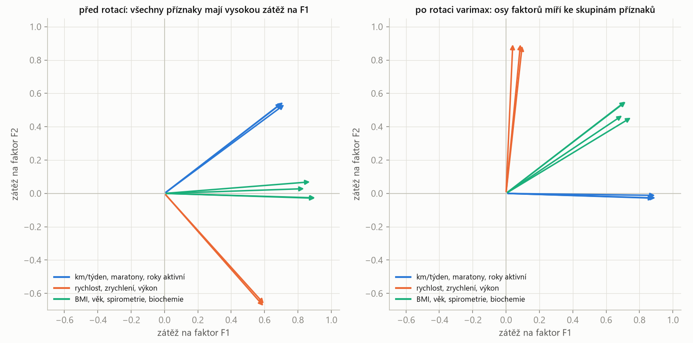
Šipky (příznaky) se rotací nehýbou vůči sobě – otáčí se jen osy F1 a F2. Před rotací mají všechny příznaky vysokou zátěž na F1 (F1 je „obecný faktor“, jako PC1) a interpretace je mlhavá. Po rotaci leží osa F1 u modré skupiny (trénink) a osa F2 u oranžové (forma); každý z těchto příznaků je „nasycen“ hlavně jedním faktorem. Zelené příznaky leží mezi osami – souvisejí s oběma faktory. Komunality se rotací nemění.
Druhy rotací
| typ | faktory po rotaci | význam zátěží | algoritmy |
|---|---|---|---|
| ortogonální (pravoúhlá, rigidní) | nekorelované | zátěže = korelace příznak–faktor | varimax, quartimax, orthomax |
| šikmá (neortogonální, oblique) | mohou být korelované | dostupné korelace příznak–faktor i faktor–faktor | promax, oblimin |
Subjektivní (grafická) rotace = otáčím osy ručně, dokud neleží blízko skupin příznaků. Objektivní (numerické) metody implementují podmínky jednoduché struktury a iterativně optimalizují zátěže po dvojicích faktorů.
Varimax je ortogonální rotace, která volí rotační matici tak, aby byl součet (přes faktory) rozptylů druhých mocnin zátěží v jednotlivých sloupcích matice zátěží co největší. Oblimin je šikmá rotace, která minimalizuje kovariance druhých mocnin zátěží mezi různými faktory a připouští, aby faktory spolu korelovaly.
varimax „polarizuje“ zátěže každého faktoru na velké a téměř nulové – nic napůl. Oblimin dělá podobné zjednodušení, ale nenutí osy faktorů být kolmé, když skupiny proměnných kolmé nejsou.
= maximalizuj rozptyl druhých mocnin zátěží v každém sloupci (faktoru). Velký rozptyl znamená, že zátěže jsou buď velké, nebo blízko nuly – nic „napůl“. Zvětšují se rozdíly mezi korelacemi: některé příznaky silně souvisí s faktorem, jiné skoro vůbec. Normalizovaný varimax zátěže nejdřív vydělí \(\sqrt{h_j^2}\) (aby příznaky s nízkou komunalitou neměly menší váhu) a na konci je zpět vynásobí.
Limitace: různé výchozí zátěže (PCA, hlavní faktory, ML) dávají různé výsledky; pro různé \(R\) vychází jiná jednoduchá struktura.
Oblimin (šikmá rotace) vychází z varimaxových zátěží a minimalizuje kovarianci druhých mocnin zátěží v různých sloupcích. Hodí se, když jsou v datech „nekolmé“ shluky příznaků (faktory, které spolu přirozeně souvisí). Limitace: vychází z ortogonálních os, čímž do řešení „zanáší“ ortogonalitu.
Faktorové skóre
Faktorové skóre je odhad hodnoty společného faktoru pro konkrétní objekt, vypočtený z jeho naměřených hodnot pomocí odhadnutých zátěží a specifických rozptylů.
„kolik má tento sportovec trénovanosti a kolik formy“. Faktory přímo měřit nejde, proto je u každého objektu musíme dopočítat z toho, co měřit jde.
Hodnoty faktorů pro jednotlivé objekty (např. jak „trénovaný“ je konkrétní sportovec) potřebujeme, když chceme faktory použít jako nové příznaky – vstup do další analýzy nebo shlukování. Odhadují se ze zátěží a specifických rozptylů (nerotovaných nebo rotovaných), např. váženou metodou nejmenších čtverců:
\[ \hat{\mathbf{f}}_i = (\hat{\boldsymbol\Gamma}^T\hat{\boldsymbol\Psi}^{-1}\hat{\boldsymbol\Gamma})^{-1}\hat{\boldsymbol\Gamma}^T\hat{\boldsymbol\Psi}^{-1}(\mathbf{x}_i - \bar{\mathbf{x}}) \]Logika: hledáme takové hodnoty faktorů, aby se z nich data „zrekonstruovala“ s co nejmenší chybou; příznaky s velkým specifickým rozptylem (nespolehlivé) mají menší váhu. Při odhadu podle PCA (stejné specifické rozptyly) to vede jednoduše na normovaná komponentní skóre.
Shrnutí postupu FA
- Ověř podmínky FA (průzkumová analýza: korelace, normalita, odlehlé hodnoty; Bartlettův test).
- Odvoď výchozí faktorové osy (odhad parametrů, např. PCA).
- Stanov počet faktorů \(R\) (vlastní čísla, scree plot…).
- Rotuj faktorové osy (zjednodušení popisu).
- Znovu analyzuj: komunality, zátěže (korelace příznaků s faktory), faktorové skóre (je-li potřeba).
- Interpretuj – pojmenuj faktory.
10 příznaků (km/týden, počet maratonů, roky aktivity, BMI, věk, rychlost, zrychlení, výkon, spirometrie, biochemie), silné korelace (Bartlett 897,4; 45 st. v.; p ≈ 0). PCA: první vlastní číslo 5,88, druhé 1,48; podle vysvětleného rozptylu a \(R < p/2\) → \(R = 2\). Po rotaci varimax (v tabulce přednášky dávají hodnoty F1 + F2 v řádku komunalitu, jde tedy o podíly rozptylu příznaku připadající na každý faktor, tj. kvadráty zátěží):
| příznak | F1 | F2 | komunalita |
|---|---|---|---|
| km/týden | 0,57 | 0,00 | 0,57 |
| počet maratonů | 0,77 | 0,01 | 0,78 |
| roky aktivity | 0,68 | 0,01 | 0,69 |
| BMI | 0,52 | 0,36 | 0,89 |
| věk | 0,49 | 0,24 | 0,73 |
| rychlost | 0,01 | 0,53 | 0,54 |
| zrychlení | 0,01 | 0,80 | 0,82 |
| výkon | 0,02 | 0,61 | 0,63 |
| spirometrie | 0,53 | 0,34 | 0,91 |
| biochemie | 0,52 | 0,26 | 0,78 |
Interpretace: F1 „nasycuje“ km/týden, maratony a roky aktivity → faktor dlouhodobého tréninku. F2 nasycuje rychlost, zrychlení a výkon → faktor aktuální sportovní formy. BMI, věk, spirometrie a biochemie souvisí s oběma. Komunality jsou relativně vysoké → korelace příznaků jsou z velké části vysvětleny společnými faktory. Korelační matice ukázala jen „co koreluje s čím“; FA nabídla vysvětlení proč.
PCA vs. FA
| PCA | FA | |
|---|---|---|
| otázka | jak co nejúsporněji popsat rozptyl dat? | jaké skryté příčiny vysvětlují korelace? |
| směr modelu | komponenty = kombinace příznaků (\(PC = \mathbf{x}\mathbf{v}\)) | příznaky = kombinace faktorů + chyba (\(\mathbf{x} = \boldsymbol\Gamma\mathbf{F} + \boldsymbol\varepsilon\)) |
| rozptyl | celkový; žádná chybová složka (\(\boldsymbol\Psi = 0\)) | dělí se na společný (komunalita) a specifický (\(\boldsymbol\Psi\)) |
| řešení | jednoznačné (maximální rozptyl) | nejednoznačné → rotace pro jednoduchou strukturu |
| první osa | PC1 = směr max. rozptylu | hlavní faktor de facto odpovídá PC1 (před rotací) |
| korelace os | vždy nekorelované | nekorelované, nebo korelované (šikmá rotace) |
| interpretace | často obtížná (vše ve všem) | snazší – faktory leží blízko skupin korelovaných příznaků |
| hlavní účel | redukce dimenze, vizualizace | vysvětlení struktury; redukce je vedlejší |
FA tak lze chápat jako „rozšíření“ PCA pro vysvětlení podstaty závislostí mezi příznaky.
Shrnutí
Faktorová analýza předpokládá, že korelace mezi příznaky způsobuje malý počet skrytých společných faktorů; každý příznak je lineární kombinací faktorů (s faktorovými zátěžemi) plus vlastní specifický faktor. Z toho plyne rozklad \(\mathbf{S} = \boldsymbol\Gamma\boldsymbol\Gamma^T + \boldsymbol\Psi\): rozptyl každého příznaku = komunalita (sdílená část) + specifický rozptyl. Parametry se odhadují např. pomocí PCA (\(\hat{\boldsymbol\Gamma} = \mathbf{V}_1\boldsymbol\Lambda_1^{1/2}\)) nebo metodou hlavních faktorů (iterace komunalit na diagonále). Řešení je nejednoznačné – libovolná rotace os dává stejnou kovarianční matici – a proto se osy rotují k jednoduché struktuře: ortogonálně (varimax – maximalizuje rozptyl kvadrátů zátěží) nebo šikmo (oblimin – faktory mohou korelovat). Faktorové skóre umožní použít faktory jako nové příznaky. Na rozdíl od PCA FA vysvětluje korelace, odděluje chybový rozptyl a míří na interpretaci.
Take-home messages
- FA hledá skryté příčiny korelací; PCA hledá směry největšího rozptylu.
- Model: příznak = Σ zátěž × faktor + specifický faktor.
- Komunalita = podíl rozptylu příznaku vysvětlený společnými faktory (1 = h² + ψ u standardizovaných dat).
- Řešení FA je jednoznačné jen do rotace – rotace mění interpretaci, ne kvalitu modelu.
- Varimax = ortogonální rotace k „buď velké, nebo nulové“ zátěži; oblimin = šikmá, faktory smí korelovat.
- Faktory je nutné věcně pojmenovat – to je hlavní výstup FA.
Otázky ke zkoušce
Jaký je princip a cíl faktorové analýzy?
FA předpokládá, že pozorované korelace mezi příznaky vznikají působením malého počtu neměřitelných společných faktorů. Cílem je odhalit strukturu vztahů mezi příznaky, vysvětlit jejich korelace a získat interpretovatelné latentní proměnné; redukce dimenze je vedlejší. Podmínky: korelované příznaky, ideálně vícerozměrná normalita, žádné odlehlé hodnoty.
Napište a vysvětlete model FA.
Model pro každý příznak:
\[ x_j - \mu_j = \gamma_{j1}F_1 + \dots + \gamma_{jR}F_R + \varepsilon_j \]Společné faktory \(F\) (nezávislé, průměr 0, rozptyl 1) působí na všechny příznaky a vytvářejí mezi nimi korelace; zátěže \(\gamma\) říkají, jak silně (pro standardizovaná data = korelace příznak–faktor); specifický faktor \(\varepsilon_j\) je vlastní pro každý příznak (chyba měření), nezávislý, s rozptylem \(\psi_j\). Maticově a z toho plynoucí rozklad kovarianční matice:
\[ \mathbf x - \boldsymbol\mu = \boldsymbol\Gamma\mathbf F + \boldsymbol\varepsilon \quad\Rightarrow\quad \mathbf S = \boldsymbol\Gamma\boldsymbol\Gamma^T + \boldsymbol\Psi \]Co je komunalita?
Část rozptylu příznaku vysvětlená společnými faktory: \(h_j^2 = \sum_r \gamma_{jr}^2\). Pro standardizované příznaky \(1 = h_j^2 + \psi_j\). Vysoká komunalita = příznak dobře popsaný faktory; ale nesnažíme se o komunality blízké 1, vedlo by to k triviálním faktorům.
Proč se v FA rotují faktory a jak funguje varimax?
Protože řešení je nejednoznačné: pro libovolnou ortogonální matici \(\mathbf T\) dávají zátěže \(\boldsymbol\Gamma\mathbf T\) stejnou kovarianční matici. Z nekonečně mnoha ekvivalentních řešení vybereme to s nejjednodušší interpretací (jednoduchá struktura: každý příznak výrazně jen u jednoho faktoru). Varimax hledá ortogonální rotaci, která maximalizuje rozptyl druhých mocnin zátěží v každém sloupci – zátěže se tak polarizují na velké a téměř nulové. Normalizovaná verze nejdřív dělí zátěže odmocninou komunality.
Jaký je rozdíl mezi ortogonální a šikmou rotací?
Ortogonální (varimax, quartimax) zachová kolmost os → faktory zůstanou nekorelované a zátěže jsou korelace příznak–faktor. Šikmá (oblimin, promax) dovolí faktorům korelovat; hodí se, když skupiny příznaků nejsou „kolmé“ (faktory přirozeně souvisí). Získáme navíc korelace mezi faktory.
Jak se odhadují parametry FA?
Metodou založenou na PCA (zátěže = vlastní vektory korelační matice × odmocniny vlastních čísel prvních R komponent; specifické faktory z ostatních komponent), metodou hlavních faktorů (komunality iterativně dosazované na diagonálu korelační matice a opakovaná PCA této redukované matice) nebo metodou maximální věrohodnosti.
Porovnejte PCA a FA.
PCA: komponenty jsou kombinace příznaků, popisují celkový rozptyl, žádná chybová složka, jednoznačné řešení (max. rozptyl), cílem je redukce dimenze. FA: příznaky jsou kombinace faktorů + specifická chyba, rozptyl dělí na komunalitu a specifický rozptyl, řešení nejednoznačné (rotace), cílem je vysvětlit korelace a interpretovat skryté příčiny; faktory mohou být i korelované (šikmá rotace). Nerotovaný hlavní faktor přibližně odpovídá PC1.
Jak zvolit počet faktorů?
Podle PCA (vysvětlený rozptyl, scree plot, Kaiser λ > 1), s omezením R ≤ p/2; faktory mají vysvětlit > 90 % celkové komunality a aspoň 70–80 % rozptylu; triviální faktory (vázané na jediný příznak) vyřadit. Nesnažit se o nulové specifické rozptyly.
Přednáška 10
t-SNE: nelineární redukce dimenzionality
t-SNE nekreslí data „z jiného úhlu“ jako PCA. Staví úplně novou 2D mapu, ve které se snaží, aby každý bod měl stejné sousedy jako v původním prostoru. Výsledkem jsou výborně čitelné shluky – ale i řada pastí při interpretaci.
Limity lineární redukce dimenzionality
Představ si data ležící na zakřivené ploše (např. „švýcarská roláda“). Dva body A a B na sousedních závitech jsou si eukleidovsky blízko (vzdálenost měřená napříč vzduchem), ale po ploše daleko (skutečná vzdálenost po povrchu). PCA i k-means pracují s eukleidovskou vzdáleností, takže A a B ve výsledku dají vedle sebe – a strukturu poničí.
- Eukleidovská vzdálenost není relevantní u nelineární struktury dat (je validní jen v malém okolí).
- Lineární metody mají tendenci zachovávat vzdálenosti mezi nepodobnými (vzdálenými) objekty – zachovávají globální strukturu – a to je ve vysoké dimenzi nevýhodné (prokletí dimenzionality: prostor je „řídký“, všechny vzdálenosti si jsou podobné).
- Výsledek: ve 2D rovině často nenajdou kvalitní reprezentaci.
Prokletí dimenzionality je souhrnný název pro jevy, které nastávají s rostoucím počtem proměnných: objem prostoru roste tak rychle, že data jsou v něm extrémně řídká, a vzdálenosti mezi všemi dvojicemi bodů si jsou čím dál podobnější (rozdíl mezi nejbližším a nejvzdálenějším sousedem se relativně zmenšuje).
ve 100 rozměrech je „všechno skoro stejně daleko“. Metody založené na vzdálenostech pak špatně rozlišují blízké a vzdálené body a k pokrytí prostoru by bylo potřeba obrovské množství dat.
Varietní učení (manifold learning)
Zjednodušená představa: body se svým okolím leží na lokálně „rovné“ ploše (varietě, manifoldu), která má v malém měřítku vlastnosti eukleidovského prostoru, ale jako celek je zakřivená a „vložená“ do vysokorozměrného prostoru. Cílem je tuto plochu „rozbalit“ do roviny.
Varieta (manifold) dimenze \(d\) je útvar, který v okolí každého svého bodu vypadá jako \(d\)-rozměrný eukleidovský prostor, ale jako celek může být zakřivený (povrch koule je 2D varieta ve 3D). Varietní učení (manifold learning) je skupina nelineárních metod redukce dimenze, které předpokládají, že vysokorozměrná data leží na (nebo blízko) variety nízké dimenze, a snaží se ji „rozvinout“ do prostoru této nízké dimenze.
data jsou jako popsaný papír zmačkaný v prostoru. Na malém kousku je papír rovný, ale celý je pokroucený. Varietní učení ho chce rozložit zpět na stůl tak, aby sousední slova zůstala vedle sebe.
Lokální struktura jsou vztahy mezi blízkými objekty – kdo je čí nejbližší soused. Globální struktura jsou vztahy mezi vzdálenými objekty a skupinami – vzájemné polohy a vzdálenosti shluků, celkový tvar dat.
lokální = „kdo bydlí ve stejné ulici“; globální = „jak daleko jsou od sebe města“. Žádná 2D mapa nezachová obojí dokonale; PCA upřednostňuje globální, t-SNE lokální strukturu.
- Globální struktura – bere v úvahu vztahy všech objektů (PCA).
- Lokální struktura – bere v úvahu jen podskupiny blízkých objektů (t-SNE).
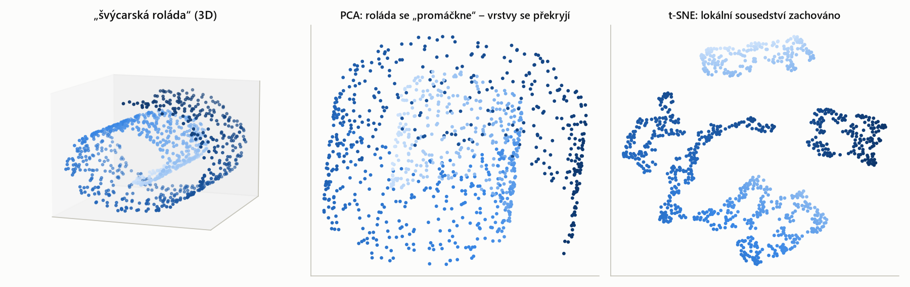
V PCA se překrývají světlé a tmavé body – vrstvy rolády, které jsou po ploše daleko, leží v projekci na sobě. t-SNE drží pohromadě body stejné barvy (lokální sousedství) a barevný gradient je spojitý. Zároveň ale plochu roztrhá na několik kusů – globální tvar (jedna souvislá plocha) se ztratil. To je typické: t-SNE výborně zachová lokální strukturu na úkor globální.
Cíl t-SNE
t-SNE = t-distributed Stochastic Neighbor Embedding (stochastické vkládání sousedů podle t-rozdělení).
t-SNE je nelineární metoda redukce dimenze (hlavně pro vizualizaci), která podobnosti objektů ve vysoké dimenzi vyjádří jako pravděpodobnosti sousedství (pomocí Gaussovy křivky), podobnosti v nízkorozměrné mapě jako pravděpodobnosti podle Studentova t-rozdělení, a polohy bodů v mapě hledá iterativně tak, aby se obě rozdělení co nejvíce shodovala (minimalizací KL divergence).
„nakresli 2D mapu, kde si každý bod ponechá své sousedy z původních dat“. Body se v mapě posouvají, dokud sousedé nejsou blízko a nesousedé daleko.
- Zachovat lokální strukturu vícerozměrných dat v méně rozměrném prostoru → zachovat blízké okolí každého objektu.
- Blízké / podobné objekty z vysoké dimenze budou blízko i v mapě.
- Nejde o transformaci původních objektů (jako v PCA), ale o modelování: vysokorozměrné objekty \(\mathbf{x}_i\) reprezentujeme novými objekty \(\mathbf{y}_i\) ve 2D. (Mapování blízkého okolí = neighbor embedding, „NE“ v názvu.)
- Nejčastější aplikace: zobrazení vícerozměrných dat.
Jak měřit, kdo je soused: z vzdálenosti pravděpodobnost
Vzdálenost (nepodobnost) převedeme na podobnost Gaussovou funkcí: čím blíž, tím podobnější; daleké body mají podobnost ≈ 0. Pak podobnosti znormujeme, aby dávaly pravděpodobnosti:
Podmíněná pravděpodobnost \(p_{j|i}\) je pravděpodobnost, že by bod \(\mathbf x_i\) zvolil bod \(\mathbf x_j\) za svého souseda, kdyby sousedy vybíral náhodně s pravděpodobností úměrnou Gaussově hustotě se středem v \(\mathbf x_i\) a směrodatnou odchylkou \(\sigma_i\). Pro každý bod \(i\) tvoří hodnoty \(p_{j|i}\) rozdělení pravděpodobnosti \(P_i\) (součet přes \(j\) je 1).
vzdálenost převedená na „hlasy“: každý bod rozdělí 100 % svých hlasů mezi ostatní body, nejvíc dá nejbližším, vzdáleným skoro nic.
| \(p_{j|i}\) | pravděpodobnost, že si bod \(i\) „vybere“ bod \(j\) za souseda, pokud sousedy vybírá úměrně Gaussově křivce se středem v \(\mathbf{x}_i\) |
| \(\lVert\mathbf{x}_i-\mathbf{x}_j\rVert\) | eukleidovská vzdálenost (validní pro blízké okolí) |
| \(\sigma_i\) | šířka Gaussovy křivky kolem bodu \(i\) – pro každý bod jiná |
| jmenovatel | normalizace – aby součet přes všechny objekty byl 1 |
Pracuje se tedy jen s blízkým okolím (\(p_{j|i} > 0\) pro blízké, \(\to 0\) pro vzdálené) → „lokální“ chování. Postupný pokles \(p_{j|i}\) se vzdáleností ale zachová alespoň částečně i globální strukturu.
Proč má každý bod svou σ: perplexita
V husté oblasti stačí úzká Gaussova křivka, aby zahrnula několik sousedů; v řídké oblasti musí být širší, jinak by bod neměl žádného souseda. t-SNE proto volí \(\sigma_i\) zvlášť pro každý bod tak, aby měl každý bod stejný efektivní počet sousedů. Tím se vhodně modelují hustě i málo osídlené oblasti.
(Shannonova) entropie diskrétního rozdělení \(P\) je \(H(P) = -\sum_j p_j\log_2 p_j\) (v bitech). Je nulová, když je jedna hodnota jistá, a maximální, když jsou všechny možnosti stejně pravděpodobné (pro \(k\) možností \(\log_2 k\)).
míra „nejistoty“ nebo „rozprostření“ rozdělení. Rozdělí-li bod hlasy rovnoměrně mezi 8 sousedů, je entropie 3 bity; dá-li vše jednomu, je 0.
Perplexita rozdělení \(P_i\) je \(2^{H(P_i)}\). V t-SNE je to hyperparametr: pro každý bod se \(\sigma_i\) nastaví tak, aby perplexita jeho rozdělení sousedů byla rovna zvolené hodnotě.
„efektivní počet sousedů“, se kterými bod počítá. Perplexita 30 ≈ každý bod bere v úvahu zhruba 30 nejbližších sousedů, ať leží v husté, nebo řídké oblasti.
Bod dává pravděpodobnost 0,25 čtyřem sousedům a ostatním 0:
\[ \begin{aligned} H &= -4\cdot 0{,}25\log_2 0{,}25 = 2\ \text{bity} \\ \text{Perp} &= 2^2 = 4 \end{aligned} \]– přesně počet sousedů. Rozdělení 0,5; 0,25; 0,25:
\[ \begin{aligned} H &= 0{,}5\cdot1 + 0{,}25\cdot2 + 0{,}25\cdot2 = 1{,}5 \\ \text{Perp} &= 2^{1{,}5} \approx 2{,}8 \end{aligned} \]– „necelí tři“ sousedé, protože jeden dominuje.
| \(H\) | entropie rozdělení sousedů bodu \(i\) – „jak nejisté je, koho si vybere“ |
| Perp | je-li \(p_{j|i}\) rovnoměrné přes \(k\) bodů, je Perp = \(k\) → odhad počtu vlivných sousedů; nastavuje ho uživatel |
\(\sigma_i\) se hledá půlením intervalu (binary search) tak, aby perplexita byla rovna zadané hodnotě. Doporučená perplexita 5–50.
Symetrizace
Protože každý bod má jinou \(\sigma\), platí obecně \(p_{j|i} \ne p_{i|j}\) (bod v řídké oblasti „vidí“ bod v husté oblasti jinak než naopak) – na rozdíl od symetrické eukleidovské vzdálenosti. t-SNE proto používá symetrickou společnou pravděpodobnost:
\[ p_{ij} = \frac{p_{j|i} + p_{i|j}}{2n} \](To je jedno ze zjednodušení oproti původní metodě SNE z roku 2002; t-SNE je z roku 2008.)
Sdružená (symetrická) pravděpodobnost \(p_{ij} = (p_{j|i} + p_{i|j})/(2n)\) je pravděpodobnost, že náhodně vybraná dvojice sousedů je právě dvojice \(\{i, j\}\). Součet přes všechny dvojice je 1 a platí \(p_{ij} = p_{ji}\).
„průměr toho, jak moc je \(j\) sousedem \(i\) a \(i\) sousedem \(j\)“. Dělení \(2n\) zajistí, že i osamělý bod (odlehlá hodnota) má alespoň nějakou váhu a v mapě se neztratí.
Podobnost v mapě: proč „t“ v t-SNE
V cílové 2D mapě se podobnost bodů \(\mathbf{y}_i, \mathbf{y}_j\) neměří Gaussovou křivkou, ale Studentovým t-rozdělením s 1 stupněm volnosti:
Studentovo t-rozdělení je symetrické zvonovité rozdělení podobné normálnímu, ale s těžšími chvosty (hustota klesá se vzdáleností pomaleji). S 1 stupněm volnosti (Cauchyho rozdělení) je jeho hustota úměrná \((1 + d^2)^{-1}\).
„Gaussova křivka s tlustými konci“. I v dost velké vzdálenosti dává nezanedbatelnou podobnost, takže středně vzdálené body lze v mapě odsunout dál, aniž by se tím pokazila shoda pravděpodobností.
Problém stísněného prostoru je nemožnost umístit v nízké dimenzi všechny body tak, aby byly zachovány jejich střední vzdálenosti z vysoké dimenze: ve vysoké dimenzi se do stejné vzdálenosti od bodu vejde mnohem více sousedů než v rovině.
v 10D má bod „kolem sebe“ hodně místa pro mnoho stejně vzdálených sousedů, v rovině ne. Když bychom je chtěli umístit poctivě, nahrnuli by se doprostřed mapy a shluky by splynuly.
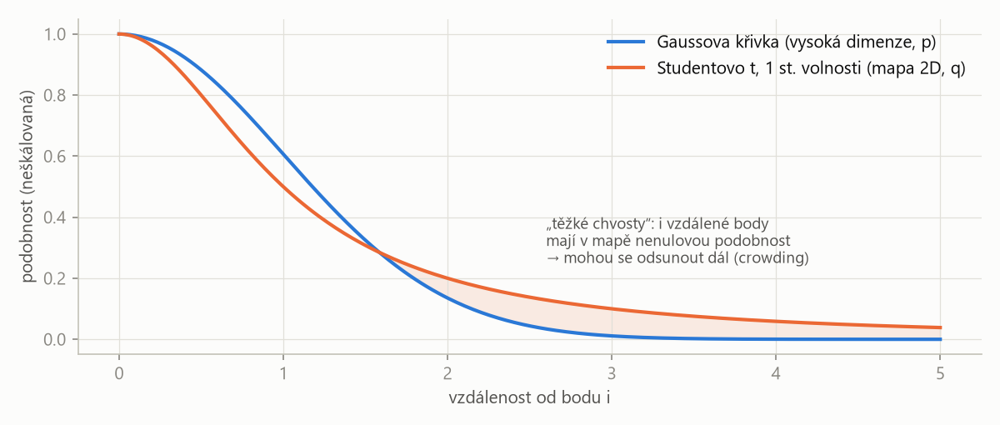
Ve vysoké dimenzi může mít bod hodně sousedů ve stejné „střední“ vzdálenosti (v 10D se kolem bodu vejde mnohem víc bodů ve stejné vzdálenosti než ve 2D). V rovině na ně není místo – kdybychom chtěli zachovat všechny vzdálenosti, střední vzdálenosti se musí stlačit a všechno se „slepí“ do středu. t-rozdělení má těžké chvosty: stejné pravděpodobnosti \(q\) odpovídá v mapě větší vzdálenost než u Gaussovy křivky. Body, které ve vysoké dimenzi jsou „středně daleko“, tak mohou být v mapě dál – vznikne místo a shluky se od sebe oddělí. Bonus: výpočet je jednodušší (bez exponenciály).
Kriteriální funkce: KL divergence
Cíl formálně: najít takové body \(\mathbf{Y}\) v mapě, aby rozdělení podobností \(Q\) v mapě co nejlépe modelovalo rozdělení \(P\) ve vysoké dimenzi (\(q_{ij} \approx p_{ij}\)). Obyčejná vzdálenost (L1, L2) se pro porovnání rozdělení nehodí, používá se Kullbackova–Leiblerova divergence:
KL divergence rozdělení \(Q\) od rozdělení \(P\) je \(\mathrm{KL}(P\Vert Q) = \sum_k p_k\log\frac{p_k}{q_k}\). Je vždy nezáporná, nulová právě tehdy, když \(P = Q\), a není symetrická (\(\mathrm{KL}(P\Vert Q) \ne \mathrm{KL}(Q\Vert P)\)), proto to není vzdálenost v pravém smyslu.
„o kolik se spletu (kolik informace ztratím), když skutečné rozdělení \(P\) nahradím modelem \(Q\)“. Nejvíc trestá místa, kde je \(P\) velké a \(Q\) malé.
| \(C\) | „nesoulad“ – množství informace ztracené, když \(P\) modelujeme pomocí \(Q\) |
| \(C = 0\) | když \(q_{ij} = p_{ij}\) pro všechny dvojice; snažíme se \(C\) minimalizovat |
Velký člen vznikne, když je \(p_{ij}\) velké (body jsou sousedé) a \(q_{ij}\) malé (v mapě jsou daleko). Opačná chyba (\(p\) malé, \(q\) velké – nesousedé dáni blízko) přispívá málo, protože je vynásobena malým \(p\). t-SNE proto hlavně hlídá, aby se sousedé neroztrhli; vzdálenosti mezi vzdálenými body ho tolik nezajímají. Odtud „lokální“ charakter metody.
Optimalizace: gradientní sestup a analogie s pružinami
Gradientní sestup je iterační metoda hledání minima funkce: v každém kroku se parametry posunou o malý krok (\(\mu\), krok učení) proti směru gradientu – vektoru parciálních derivací, který ukazuje směr nejrychlejšího růstu funkce.
„sestup z kopce v mlze“: rozhlédnu se, kudy to nejvíc klesá, udělám krok tím směrem a opakuji. U funkce, která není konvexní (nemá tvar jediné mísy), můžu skončit v lokálním dolíku, který není nejhlubší – proto je t-SNE citlivé na start.
Každý bod se v každé iteraci posune proti gradientu (\(\mu\) = krok učení). Vzorec se dá číst jako soustava pružin mezi \(\mathbf{y}_i\) a ostatními body:
- \(p_{ij} > q_{ij}\) (v mapě jsou chybně daleko, ač jsou sousedé) → pružina přitahuje;
- \(p_{ij} < q_{ij}\) (v mapě jsou chybně blízko, ač si nejsou podobné) → pružina odpuzuje;
- v ideálním modelu \(p = q\) je výsledná síla nulová.
Postupně se tak „rozbalují“ vícerozměrné plochy do 2D a vzniká mapa s čitelnou lokální strukturou. Kriteriální funkce ale není konvexní – má lokální minima, výstup se během optimalizace mění a je „nestabilní“.
Čtyři body ve vrcholech čtverce (2D), každý má dva sousedy ve vzdálenosti \(d\): \(N(x_1) = \{x_2, x_4\}\) atd. Chceme je rozbalit do 1D přímky. Položíme \(x_1, x_2, x_3\) za sebou – sousedství 1–2 a 2–3 je zachované, vzdálenost 1–3 je 2d místo d√2, ale to t-SNE nevadí (\(x_3\) není soused \(x_1\)). Kam ale s \(x_4\)? Má být soused \(x_1\) i \(x_3\), které jsou na přímce 2d od sebe – ať ho dáme kamkoli, jedno sousedství se poruší. Ne vždy lze zachovat blízké okolí bez zkreslení – „pružiny“ se snaží, ale prostor nižší dimenze to nedovolí.
Postup t-SNE
- Data \(\mathbf{X}\,(n\times p)\).
- Nastav hyperparametry: perplexita, počet iterací \(T\), krok učení \(\mu\), případně momentum.
- Náhodně (nebo z PCA) rozmísti výchozí body \(\mathbf{Y}\,(n\times R)\), většinou \(R = 2\).
- Spočítej \(p_{j|i}\) (σ podle perplexity) a symetrické \(p_{ij}\).
- Opakuj \(T\)-krát: spočítej \(q_{ij}\) v mapě → gradient \(C\) → posuň body \(\mathbf{Y}\).
Hyperparametry a jak (ne)číst výsledky
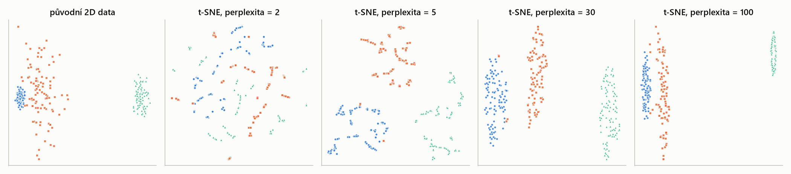
- Nízká perplexita (2, 5): za sousedy se považují jen ti úplně nejbližší → data se rozpadnou na spoustu malých falešných „shluků“, které v datech nejsou.
- Střední perplexita (30): tři skupiny čitelné. Ale velikosti shluků neodpovídají – hustý modrý shluk je v mapě stejně velký jako řídký oranžový (t-SNE „roztahuje“ husté a „stlačuje“ řídké shluky).
- Vzdálenosti mezi shluky také neodpovídají – zelený shluk byl v původních datech mnohem dál než oranžový od modrého, při perplexitě 30 jsou ale všechny tři skoro stejně daleko; a jak daleko, záleží na perplexitě.
- Perplexita blízká \(n\) → všechny body jsou sousedé všech, struktura se „zprůměruje“.
Pravidla z přednášky (podle známého článku How to Use t-SNE Effectively):
- Perplexita: zkoušet více hodnot; různé části (měřítka) dat mohou chtít různou perplexitu, ale v t-SNE je to jeden globální parametr. Ani 50–100 není samospasné – s více objekty se optimum posouvá.
- Počet iterací: příliš málo → nedokončená konvergence (podivné „1D“ struktury, „sevřené“ tvary); hledáme stabilní stav.
- Velikost shluků v mapě nemá význam.
- Vzdálenosti mezi shluky nemusí mít význam (odlišitelné shluky mohou vyjít ekvidistantní).
- Barvy v t-SNE grafech slouží jen pro čitelnost – t-SNE o třídách nic neví.
Limitace t-SNE
- Riziko špatné struktury pro \(R > 3\) (těžké chvosty t-rozdělení) → vhodné pro 2D/3D vizualizaci, redukce dimenze pro další modely není hlavní využití.
- Předpokládá lokální linearitu (eukleidovská metrika) → při extrémně vysoké dimenzi jsou si všechny vzdálenosti podobné a \(p_{ij}\) jsou stejně vysoké (prokletí dimenzionality). Řešení: nejdřív zredukovat (např. PCA, autoencoder).
- Nekonvexní kriteriální funkce → lokální minima, nestabilní výsledky, komplikované ladění hyperparametrů; zafixuj random seed.
- Chybí mapovací funkce pro nové objekty – pro rozšířený dataset je nutné vytvořit novou mapu.
- Výpočetně náročná pro velká data.
t-SNE vs. PCA a vs. k-means
| PCA | t-SNE (varietní učení) |
|---|---|
| zachovává globální strukturu | zachovává lokální strukturu |
| méně citlivá na šum (zanedbáme poslední PC) | citlivější |
| žádné hyperparametry | perplexita, iterace, krok učení… |
| dimenzi R lze „diagnostikovat“ z vysvětleného rozptylu | R se volí experimentálně |
| komponenty relativně snadno interpretovatelné | osy mapy nemají význam |
| méně výpočetně náročná; umí promítnout nové objekty | náročnější; nové objekty ne |
| jen lineární struktury | umí reprezentovat nelineární strukturu |
t-SNE jen modeluje původní data body v nižší dimenzi tak, aby zachovaly informaci o podobnosti v lokálním měřítku. Shluky, které „vidíš“, jsou vizuální dojem, ne výsledek shlukování – a mohou být i artefaktem nízké perplexity. Shlukování se má dělat na datech (nebo na vhodné redukci), výsledek t-SNE lze použít k jeho zobrazení.
t-SNE je jen jedna z nelineárních metod (zachování blízkého okolí je jen jeden z přístupů): Sammon mapping, curvilinear component analysis, Isomap, locally linear embedding (LLE), SNE, t-SNE, UMAP, kernel PCA, samoorganizující se mapy…
Shrnutí
Lineární metody ztrácí strukturu dat ležících na zakřivených plochách, protože eukleidovská vzdálenost je validní jen lokálně. t-SNE je metoda varietního učení, která zachovává lokální okolí: ve vysoké dimenzi převede vzdálenosti na pravděpodobnosti sousedství pomocí Gaussovy křivky, jejíž šířka \(\sigma_i\) se pro každý bod volí podle perplexity (efektivní počet sousedů), a pravděpodobnosti symetrizuje. V mapě měří podobnost Studentovým t-rozdělením, jehož těžké chvosty řeší crowding problém. Rozmístění bodů v mapě optimalizuje gradientním sestupem tak, aby minimalizovalo KL divergenci mezi \(P\) a \(Q\) („pružiny“ přitahují sousedy a odpuzují nesousedy). Výsledek je skvělý pro vizualizaci, ale velikosti a vzdálenosti shluků nemají význam, výsledek závisí na perplexitě a náhodě, nové body nelze přidat a t-SNE není shlukovací metoda.
Take-home messages
- t-SNE zachovává sousedství, ne vzdálenosti – lokální struktura ano, globální ne.
- Perplexita ≈ počet sousedů, se kterými bod „počítá“; každý bod má vlastní σ.
- „t“ = Studentovo rozdělení v mapě – těžké chvosty dělají místo (crowding).
- Minimalizuje se KL divergence; hlavně se trestá roztržení sousedů.
- Velikosti shluků a vzdálenosti mezi nimi v t-SNE mapě neinterpretuj.
- Vždy zkus víc perplexit a zafixuj seed; t-SNE není shlukování.
Otázky ke zkoušce
Jaký je cíl a princip t-SNE?
Zobrazit vysokorozměrná data do 2D (3D) tak, aby se zachovalo lokální okolí každého bodu – sousedé zůstanou sousedy. Ve vysoké dimenzi převede vzdálenosti na pravděpodobnosti, že si bod vybere jiný bod za souseda (Gaussova křivka), v mapě definuje analogické pravděpodobnosti pomocí t-rozdělení a rozmístění bodů v mapě optimalizuje tak, aby se obě rozdělení co nejvíc shodovala (minimalizace KL divergence gradientním sestupem).
Co je perplexita a jak ovlivní výsledek?
Perplexita \(2^H\) rozdělení sousedů bodu je efektivní počet sousedů; uživatel ji zadá a t-SNE pro každý bod půlením intervalu najde \(\sigma_i\), aby jí odpovídala – tím se vyrovná vliv hustých a řídkých oblastí. Nízká perplexita → jen nejbližší sousedé, data se rozpadnou na malé falešné shluky; vysoká → víc globální pohled, při Perp ≈ n se struktura rozmaže. Doporučeno 5–50, zkoušet více hodnot.
Proč se v mapě používá Studentovo t-rozdělení?
Kvůli problému stísněného prostoru (crowding): ve vysoké dimenzi může mít bod mnoho sousedů ve střední vzdálenosti, ve 2D se nevejdou. t-rozdělení má těžké chvosty, takže stejné podobnosti odpovídá v mapě větší vzdálenost – středně vzdálené body se mohou odsunout a shluky se oddělí. Navíc je výpočet jednodušší (bez exponenciály).
Co je KL divergence a proč se používá?
\(\mathrm{KL}(P\Vert Q) = \sum p_{ij}\log(p_{ij}/q_{ij})\) měří, kolik informace ztratíme, když rozdělení P (vysoká dimenze) modelujeme rozdělením Q (mapa); je nulová při shodě. Hodí se pro porovnání rozdělení pravděpodobností (běžné vzdálenosti ne). Je asymetrická: silně trestá, když sousedé (velké p) skončí v mapě daleko, málo trestá opačnou chybu – proto t-SNE zachovává hlavně lokální strukturu. Není konvexní → lokální minima.
Na co si dát pozor při interpretaci t-SNE mapy?
Velikost shluků nemá význam (husté se roztahují, řídké stlačují), vzdálenosti mezi shluky nemusí mít význam, osy nemají význam, při nízké perplexitě vznikají falešné shluky, výsledek závisí na náhodné inicializaci a počtu iterací. t-SNE není shlukovací metoda a neumí promítnout nové body.
Porovnejte PCA a t-SNE.
PCA: lineární, globální struktura, bez hyperparametrů, interpretovatelné komponenty, počet dimenzí z vysvětleného rozptylu, rychlá, umí nové body, robustnější vůči šumu. t-SNE: nelineární, lokální struktura, hyperparametry (perplexita, iterace), osy bez významu, hlavně pro 2D vizualizaci, náročnější, nové body neumí – ale zachytí nelineární struktury, které PCA nevidí.
Vysvětlete analogii s pružinami.
Gradient KL divergence lze číst jako součet sil pružin mezi bodem a ostatními body v mapě. Je-li \(p_{ij} > q_{ij}\) (sousedé jsou v mapě příliš daleko), pružina je přitahuje; je-li \(p_{ij} < q_{ij}\) (nesousedé jsou příliš blízko), odpuzuje je. Síla roste s rozdílem \(p - q\). Iterováním se mapa „rozbaluje“, dokud se síly nevyrovnají.
Přednáška 11
UMAP: Uniform Manifold Approximation and Projection
UMAP dělá podobnou věc jako t-SNE – staví mapu, ve které zůstanou sousedé sousedy – ale vychází z topologie: z dat sestaví vážený graf sousedů a pak hledá 2D (nebo vícerozměrný) graf s co nejpodobnější strukturou. Je rychlejší, stabilnější, lépe drží globální strukturu a umí promítat nová data.
Kde UMAP stojí
UMAP (Uniform Manifold Approximation and Projection) je nelineární metoda redukce dimenze, která z dat sestaví vážený graf \(k\) nejbližších sousedů (fuzzy topologickou reprezentaci variety, na které data leží) a pak hledá rozmístění bodů v nízkorozměrném prostoru, jehož vážený graf se tomuto grafu co nejvíce podobá; shodu měří křížová entropie.
„udělej síť, kdo je s kým spojený a jak pevně, a pak ji rozlož na papír tak, aby spojení zůstala co nejvěrnější“. Pevná spojení body přitahují, chybějící spojení je odpuzují.
| PCA (20. století) | t-SNE (od 2008) | UMAP (od 2018) |
|---|---|---|
| globální struktura (vysvětlení variability) | lokální struktura, ztráta globální | lokální i globální struktura |
Limitace t-SNE, které UMAP řeší:
- výpočetní náročnost pro velká data (mnoho objektů i příznaků);
- vhodnost jen pro 2D/3D vizualizaci, ne pro redukci příznaků s \(R > 3\);
- chybějící transformační funkce pro nové (testovací) objekty;
- zachování lokální struktury (shluků) se „zanedbáním“ globální (vztahů a vzdáleností mezi shluky).
Topologický přístup ve dvou krocích
Topologie je obor matematiky, který studuje vlastnosti tvarů zachované při spojitých deformacích (natahování, ohýbání – bez trhání a slepování): souvislost, počet „děr“, kdo je s kým spojený. Neřeší přesné vzdálenosti a úhly.
pro topologii je hrnek totéž co donut (oba mají jednu díru). UMAP chce v mapě zachovat právě tyto „gumové“ vlastnosti dat – co souvisí s čím – ne přesné vzdálenosti.
Graf je množina uzlů (vrcholů) a hran, které spojují některé dvojice uzlů. Ve váženém grafu má každá hrana číslo – váhu. Graf \(k\) nejbližších sousedů (kNN graf) spojí každý objekt hranou s jeho \(k\) nejbližšími objekty.
„síť přátelství“: pacienti jsou uzly, hrana znamená „jsou si podobní“ a váha, jak moc. Graf zachycuje sousedství, aniž by potřeboval souřadnice.
- Topologická reprezentace – aproximace plochy (manifoldu), ze které data „pochází“, pomocí grafu: uzly = objekty, hrany = informace o podobnosti.
- Projekce – vytvoření grafu v nízké dimenzi s co nejpodobnější topologií (optimalizací rozmístění bodů).
Krok 1: jak z bodů udělat graf
Simplexy a otevřené pokrytí
Topologie popisuje tvar pomocí simplexů: 0-simplex = bod, 1-simplex = úsečka mezi dvěma body, 2-simplex = trojúhelník (tři úsečky)… Slepením simplexů vznikne simpliciální komplex – „kostra“ tvaru.
Jak ho z dat postavit: kolem každého bodu nakreslíme okolí (ve 2D kruh) – tzv. otevřené pokrytí (do množiny patří bod i jeho okolí). Body, jejichž okolí se překrývají, spojíme hranou (1-simplex); tři navzájem se překrývající okolí spojíme trojúhelníkem atd. Vznikne Čechův komplex. V praxi stačí 0- a 1-simplexy (Vietoris–Ripsův komplex) → jednoduché výpočty a v nízké dimenzi je to obyčejný graf (uzly a hrany).
\(k\)-simplex je nejjednodušší \(k\)-rozměrný útvar určený \(k+1\) body: 0-simplex je bod, 1-simplex úsečka, 2-simplex trojúhelník, 3-simplex čtyřstěn. Simpliciální komplex je soubor simplexů slepených dohromady podél společných stěn (vrcholů, hran…).
„stavebnice z bodů, tyček a trojúhelníků“, ze které se dá poskládat přibližný tvar čehokoli. Pro UMAP stačí body a tyčky – tedy graf.
Otevřené pokrytí je soubor otevřených množin (zde koulí kolem bodů), jejichž sjednocení obsahuje celý zkoumaný prostor. Čechův komplex vznikne tak, že pro každou skupinu koulí, které mají společný průnik, přidáme simplex na jejich středech. Vietoris–Ripsův komplex přidá simplex pro každou skupinu bodů, jejichž koule se překrývají po dvojicích; v praxi z něj UMAP bere jen 0- a 1-simplexy (graf).
kolem každého bodu nakreslím kruh; kde se kruhy dotýkají, spojím body. Z překryvů kruhů vznikne kostra tvaru dat.
Platí věta o nervu: když pokrytí souvisle pokrývá prostor, je komplex topologicky ekvivalentní původní struktuře dat. Jenže v praxi narazíme na čtyři problémy.
Věta o nervu říká, že je-li pokrytí prostoru „dobré“ (všechny neprázdné průniky jeho množin jsou souvislé bez děr), pak simpliciální komplex vytvořený z tohoto pokrytí (jeho nerv, tedy Čechův komplex) je topologicky ekvivalentní (homotopický) s pokrytým prostorem.
záruka, že „kostra z kruhů“ má stejné topologické vlastnosti (souvislost, díry) jako skutečný tvar dat, ze kterého body pocházejí – pokud kruhy volíme rozumně.
Malé okolí → „roztříštěný“ komplex (body se nespojí). Velké okolí → spousta vysokorozměrných simplexů → výpočetně náročné a špatná struktura. S konečným počtem bodů navíc pokrytí nemusí být souvislé.
Řešení – „U“ v UMAP (uniform): předpokládáme, že body jsou na ploše rozmístěné rovnoměrně. Pak pokrytí nemá mezery, graf je spojený a podle věty o nervu odpovídá struktuře dat; okolí lze volit jako průměrnou vzdálenost mezi objekty.
Řešení: otočíme pohled – body jsou rozmístěné rovnoměrně, jen vypadají nerovnoměrně, protože plocha je různě zakřivená a „pojem vzdálenosti“ se mění místo od místa. Každý bod proto dostane vlastní „jednotkový kruh“ sahající ke svému k-tému nejbližšímu sousedovi (\(k\) = hyperparametr). V husté oblasti je kruh malý, v řídké velký – lokálně proměnná metrika (Riemannova metrika). Nastavení přes \(k\) je jednodušší než přes vzdálenosti:
- malé \(k\) → lokální aproximace vzdáleností → detaily topologie;
- velké \(k\) → lepší reprezentace globální topologie, zanedbání detailů.
Fuzzy (neostrá) množina je množina, do které prvek nepatří buď úplně, nebo vůbec, ale s určitou mírou příslušnosti z intervalu \([0, 1]\). V UMAP je okolí bodu fuzzy množinou: soused patří do okolí s mírou, která klesá se vzdáleností.
místo ostré hranice „uvnitř kruhu / mimo kruh“ je plynulý přechod – blízký soused patří do okolí na 100 %, vzdálenější na 40 %, ještě vzdálenější skoro vůbec.
Když má každý bod svou lokální metriku, můžeme hrany vážit: váha (tloušťka hrany) = pravděpodobnost, že soused patří do okolí bodu; klesá se vzdáleností od středu kruhu. Okolí tak nemá ostrou hranici – je „fuzzy“ (bod patří do okolí s určitou mírou).
Při rychlém poklesu váhy by vzniklo hodně bodů bez spojení (pravděpodobnost ≈ 0). Řešení: každý bod musí být spojen alespoň se svým nejbližším sousedem: do vzdálenosti nejbližšího souseda je pásmo „jisté“ (váha 1), dál „neurčité“ s klesající pravděpodobností.
Bonus: omezení na okolí řeší prokletí dimenzionality – ve vysoké dimenzi jsou vzdálenosti velmi podobné (k nejbližšímu bodu 5, ke dvacátému také ≈ 5). Odečtením vzdálenosti k nejbližšímu sousedovi a prací jen v malém okolí jsou rozdíly zachyceny věrohodněji a v mapě je vidět lokální struktura.
pro \(k\) nejbližších sousedů \(j\).
| \(\rho_i\) | vzdálenost k nejbližšímu sousedovi → ten má váhu 1 (problém 3) |
| \(\sigma_i\) | lokální měřítko – zvolené tak, aby součet vah přes \(k\) sousedů byl \(\log_2 k\) (obdoba perplexity v t-SNE) |
Každý bod má vlastní měřítko, takže vzdálenost A–B z pohledu A (např. 1,2) není stejná jako z pohledu B (např. 1) – hrana A→B má jinou váhu než B→A. Která je správná? Řešení: fuzzy sjednocení (pravděpodobnost, že existuje alespoň jedna z hran):
\[ w = a + b - a\cdot b \]Je to vhodnější než vzít maximum, minimum nebo průměr. Výsledkem je vážený graf (fuzzy simpliciální komplex) – tloušťka hrany = pravděpodobnost, že jsou dva objekty ve vysoké dimenzi „propojené“.
Příklad: \(a = 0{,}6\), \(b = 0{,}3\) → \(w = 0{,}6 + 0{,}3 - 0{,}18 = 0{,}72\). Když jeden z bodů hranu „vidí jistě“ (\(a = 1\)), je \(w = 1\) bez ohledu na \(b\); když ji nevidí žádný (\(a = b = 0\)), je \(w = 0\).
Fuzzy sjednocení dvou měr příslušnosti \(a, b\) je \(a + b - ab\). Odpovídá pravděpodobnosti, že nastane alespoň jeden ze dvou nezávislých jevů s pravděpodobnostmi \(a\) a \(b\).
„hrana existuje, pokud ji vidí aspoň jeden z obou bodů“. Výsledek je vždy aspoň tak velký jako větší z obou vah, ale nikdy nepřesáhne 1.
Proč tak komplikované? Výstupem je „obyčejný“ graf okolí objektů. Ale za ním stojí pevný teoretický základ (výsledný komplex topologicky odpovídá struktuře dat), známé zákonitosti a důsledky a jasná algoritmizace.
Krok 2: projekce do nízké dimenze
Teď hledáme v nízkorozměrném (obvykle eukleidovském) prostoru rozmístění bodů \(\mathbf{Y}\), jehož graf má co nejpodobnější váhy. Začíná se z (náhodného nebo spektrálního) rozmístění a body se posouvají. Ve vysoké dimenzi měla každá oblast vlastní „měřítko“, v mapě se používají standardní globální vzdálenosti a hyperparametr min_dist – minimální vzdálenost, na kterou se body v mapě smí přiblížit.
Křížová entropie mezi dvěma fuzzy množinami hran (vahami \(w_h\) ve vysoké a \(w_l\) v nízké dimenzi) je součet přes všechny hrany dvou členů: \(w_h\log(w_h/w_l)\), který je velký, když hrana ve vysoké dimenzi existuje, ale v mapě ne, a \((1-w_h)\log\big((1-w_h)/(1-w_l)\big)\), který je velký, když hrana ve vysoké dimenzi neexistuje, ale v mapě ano.
„trestáme obě chyby“: roztržení sousedů i slepení nesousedů. KL divergence v t-SNE obsahuje jen obdobu prvního členu – proto UMAP lépe drží rozestupy mezi shluky.
| \(E\) | množina všech možných hran (1-simplexů) |
| \(w_h(e)\) | váha hrany ve vysoké dimenzi (pravděpodobnost, že hrana existuje) |
| \(w_l(e)\) | váha hrany v nízké dimenzi (mapě) |
| \(C = 0\) | když \(w_h = w_l\) pro všechny hrany; minimalizuje se stochastickým gradientním sestupem |
- První člen: je-li \(w_h\) velké (podobné objekty), bude člen velký, pokud je \(w_l\) malé → minimalizace přitáhne body k sobě → optimalizace shluků (lokální struktura).
- Druhý člen: je-li \(w_h\) malé (nepodobné objekty), bude člen velký, pokud je \(w_l\) velké → minimalizace body odpudí → optimalizace prostoru mezi shluky (globální struktura).
Právě explicitní odpudivý člen je důvod, proč UMAP drží globální uspořádání lépe než t-SNE (jehož KL divergence trestá hlavně roztržení sousedů).
Nízkorozměrný prostor nemusí být eukleidovský – lze promítat i na sféru, torus nebo do hyperbolického prostoru (užitečné např. pro periodická data se strukturou smyčky).
Nejdůležitější hyperparametry
n_neighbors (\(k\)) je počet nejbližších sousedů, ze kterých se pro každý bod staví lokální okolí ve vysoké dimenzi (a určuje jeho \(\sigma_i\)). min_dist je nejmenší vzdálenost, na kterou se mohou body přiblížit v nízkorozměrné mapě; určuje tvar funkce, která v mapě převádí vzdálenost na váhu hrany.
n_neighbors = „jak daleko se každý bod rozhlíží“ (víc = víc globálního kontextu); min_dist = „jak natěsno se smějí body v mapě namačkat“ (méně = kompaktnější shluky).
| hyperparametr | co dělá | malá hodnota | velká hodnota | obvykle |
|---|---|---|---|---|
| n_neighbors (\(k\)) | počet nejbližších sousedů v lokální aproximaci topologie | malé shluky, detaily, bez globální struktury (graf se může rozpadnout) | propojení více bodů → korektní globální struktura, zanedbání detailů | 5–50 (výchozí 15) |
| min_dist | minimální vzdálenost bodů v mapě | husté, kompaktní shluky (dobré pro následné shlukování) | „dilatované“, méně husté shluky, víc vidět vnitřní uspořádání | 0,001–0,5 (např. 0,1) |
Další: metrika v původním prostoru, počet výsledných dimenzí, počet epoch, krok učení. Kompromis se hledá relativně snadno (ve srovnání s t-SNE).
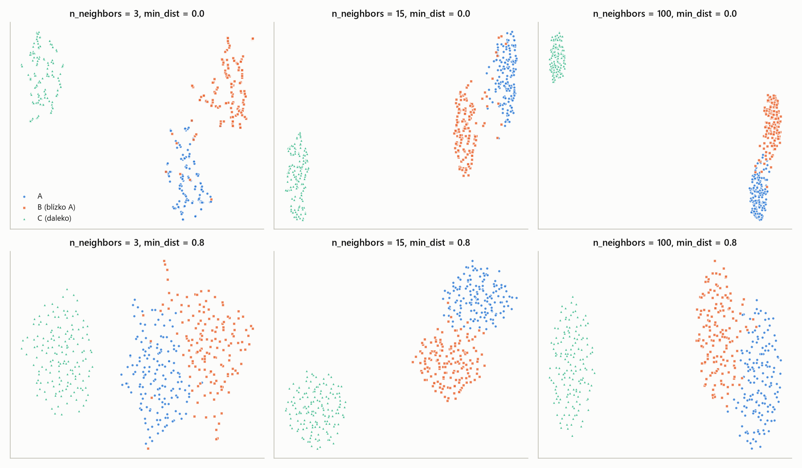
n_neighbors (sloupce) mění, kolik globální informace se dostane do grafu: s malým \(k\) jsou shluky rozmístěné spíš náhodně a mohou se trhat, s velkým \(k\) se lépe zachová, že A a B jsou si blíž než C. min_dist (řádky) mění jen „hustotu“ zobrazení: 0 = sevřené shluky, 0,8 = rozvolněné. Struktura (které body patří k sobě) se mezi nastaveními mění mnohem méně než u t-SNE – UMAP je stabilnější.
Různé způsoby použití UMAP
- Bez učitele (standardní) – zobrazení a redukce dimenze.
- S učitelem (supervised UMAP) – (supervised = při konstrukci se využijí známé třídy objektů, label; semi-supervised = třídy známe jen u části objektů) – do konstrukce grafu se zahrnou labely: skupiny jsou dobře odlišené (logické při využití labelů), a přitom jsou zachované vzájemné vztahy mezi skupinami (např. tričko, košile, svetr a šaty blízko sebe; boty a oblečení naproti sobě) i lokální struktura uvnitř shluků. Lze i semi-supervised (labely jen pro část dat).
- Práce s novými objekty – naučený model umí promítnout nové body do existující mapy (
transform) – t-SNE to neumí. - Inverzní transformace – z bodu v mapě odhadne (rekonstruuje) vysokorozměrný objekt. Diagnostika: blízké shluky jsou si v něčem podobné (číslice 1–7–9), variabilita uvnitř shluku má směr (rovná „1“ přechází v nakloněnou), body v „mezeře“ mezi shluky dávají podivné přechody (bota → kalhoty) – je vidět, jak UMAP data „vnímá“.
- Parametrická UMAP – mapování se naučí neuronová síť (encoder; volitelně decoder pro inverzní transformaci, nebo jeden autoencoder).
- Předzpracování pro shlukování (viz přednáška 5) a redukce příznaků s libovolným \(R\), i \(R > 3\).
UMAP vs. t-SNE
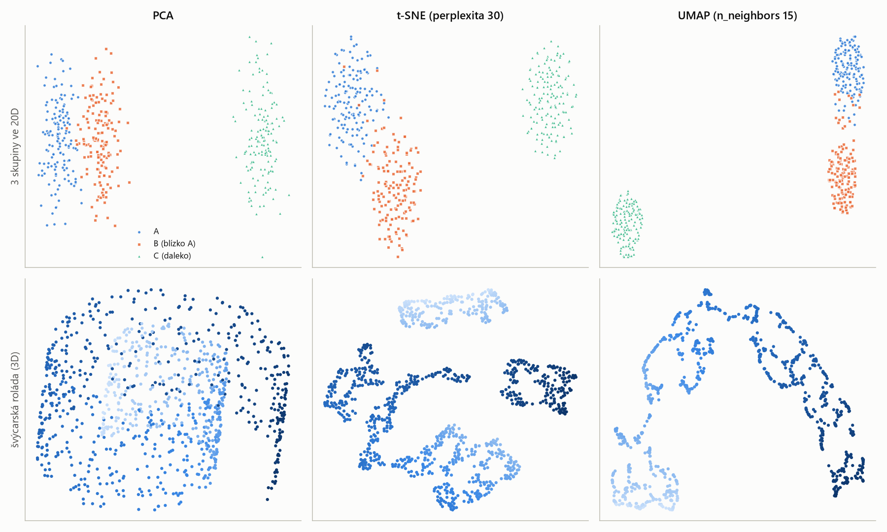
- PCA zachová globální rozmístění (C je daleko), ale lineární projekcí slije vrstvy rolády.
- t-SNE tady C odsune dál, ale blízké skupiny A a B slije k sobě; jak daleko shluky skončí, obecně závisí na perplexitě (obr. 10.3). Roládu rozseká na kusy – lokální sousedství drží, souvislost plochy ne.
- UMAP oddělí skupiny a zároveň lépe zachová, že C je daleko; roládu rozbalí do souvislejšího pásu – lokální i globální struktura.
| Společné oběma | Navíc UMAP |
|---|---|
|
|
Tendence v oblasti vícerozměrných dat (závěr kurzu)
- efektivní algoritmy (miliony objektů), paralelizace výpočtů;
- sofistikované přístupy pro reprezentaci a redukci (t-SNE, UMAP), strojové učení (hluboké sítě, fuzzy);
- jednoduché přístupy pro interpretaci (PCA, FA);
- nejdůležitější: prvotní (i vizuální) analýza dat a spolupráce s experty.
Shrnutí
UMAP je nelineární metoda varietního učení s topologickým základem. Ve vysoké dimenzi sestaví vážený graf k nejbližších sousedů: každý bod má vlastní lokální měřítko (kruh k k-tému sousedovi – předpoklad rovnoměrného rozmístění na zakřivené ploše), je vždy spojen s nejbližším sousedem a váhy hran klesají se vzdáleností (fuzzy topologie); asymetrické váhy sjednotí vzorcem \(a + b - ab\). Pak v nízké dimenzi hledá rozmístění bodů, jehož graf má podobné váhy, minimalizací křížové entropie – její první člen přitahuje podobné body (lokální struktura), druhý odpuzuje nepodobné (globální struktura). Hlavní hyperparametry: n_neighbors (detail vs. globální tvar) a min_dist (hustota shluků). Oproti t-SNE je UMAP rychlejší, stabilnější, lépe drží globální strukturu, umí nové objekty, inverzní transformaci, supervised variantu a redukci do libovolné dimenze. Velikosti a vzdálenosti shluků je ale stále třeba interpretovat opatrně.
Take-home messages
- UMAP = graf sousedů ve vysoké dimenzi → co nejpodobnější graf v nízké dimenzi.
- Každý bod má vlastní měřítko (k-tý soused) a vždy aspoň jednoho souseda.
- Křížová entropie: přitahování (lokální) + odpuzování (globální struktura).
- n_neighbors = lokální detail ↔ globální tvar; min_dist = jak těsně body leží.
- Oproti t-SNE: rychlejší, stabilnější, globálnější, umí transform a libovolné R.
- Ani v UMAP nemají velikosti shluků a vzdálenosti mezi nimi spolehlivý význam.
Otázky ke zkoušce
Vysvětlete princip UMAP.
Ve dvou krocích. 1) Ve vysokorozměrném prostoru postavím vážený graf: každý bod spojím s jeho k nejbližšími sousedy, váhy hran klesají se vzdáleností, přičemž vzdálenost měřím v lokálním měřítku každého bodu (k-tý soused = jednotka) a nejbližší soused má vždy váhu 1; asymetrické váhy sjednotím \(a + b - ab\). 2) V nízké dimenzi hledám rozmístění bodů, jehož graf má co nejpodobnější váhy – minimalizuji křížovou entropii gradientním sestupem; podobné body se přitahují, nepodobné odpuzují.
Jaké problémy řeší UMAP při konstrukci grafu a jak?
1) Velikost okolí: předpoklad rovnoměrného rozmístění bodů na ploše. 2) Nerovnoměrná reálná data: každý bod má vlastní lokální metriku danou vzdáleností ke k-tému sousedovi. 3) Izolované body: každý bod je spojen alespoň s nejbližším sousedem (do jeho vzdálenosti „jisté“ pásmo); zároveň to zmírňuje prokletí dimenzionality. 4) Asymetrie vah A→B a B→A: fuzzy sjednocení \(a+b-ab\).
Jakou kriteriální funkci UMAP minimalizuje a proč zachovává i globální strukturu?
Křížovou entropii mezi vahami hran ve vysoké a nízké dimenzi. První člen \(w_h\log(w_h/w_l)\) je velký, když jsou podobné body v mapě daleko → přitahování (lokální struktura). Druhý člen \((1-w_h)\log((1-w_h)/(1-w_l))\) je velký, když jsou nepodobné body v mapě blízko → odpuzování (prostor mezi shluky, globální struktura). Explicitní odpuzování je hlavní rozdíl oproti KL divergenci v t-SNE.
Jaký vliv mají hyperparametry n_neighbors a min_dist?
n_neighbors (k): malé → důraz na detail, malé shluky, ztráta globální struktury, graf se může rozpadnout; velké → víc propojení, lepší globální struktura, ztráta detailu; obvykle 5–50. min_dist: minimální vzdálenost bodů v mapě; malá → husté kompaktní shluky, velká → rozvolněné shluky; obvykle 0,001–0,5.
Porovnejte UMAP a t-SNE.
Společné: nelineární, bez učitele, výborné pro vizualizaci, deformují prostor, velikosti shluků a vzdálenosti mezi nimi nemají spolehlivý význam, nutné ladění. UMAP navíc: lépe zachovává globální strukturu, je výrazně rychlejší (zvlášť pro velká data), stabilnější vůči hyperparametrům, umí promítat nové objekty a inverzní transformaci, má supervised variantu a hodí se i pro redukci do více než 3 dimenzí. Teoreticky vychází z topologie (graf), t-SNE z pravděpodobností sousedství a KL divergence.
Co je supervised UMAP a inverzní transformace?
Supervised UMAP zahrne do konstrukce grafu známé labely – skupiny jsou v mapě lépe oddělené a přitom zůstanou zachované vztahy mezi skupinami i struktura uvnitř nich (lze i semi-supervised). Inverzní transformace z bodu v mapě odhadne odpovídající vysokorozměrný objekt – slouží k diagnostice, jak UMAP data „vnímá“ (co je uvnitř shluku, co v mezerách mezi nimi).
Srovnání metod a tahák
Tahle stránka spojuje celý kurz: kterou metodu použít pro jakou otázku, jak se metody liší a které pojmy se nejčastěji pletou. Hodí se na závěrečné opakování a na rychlou orientaci během učení.
Kterou metodu použít: rozhodovací schéma
Srovnání metod redukce dimenze
| PCA | kernel PCA | faktorová analýza | t-SNE | UMAP | |
|---|---|---|---|---|---|
| typ | lineární | nelineární (jádro) | lineární model se skrytými faktory | nelineární, pravděpodobnosti sousedství | nelineární, topologický graf |
| co zachovává | globální strukturu, maximální rozptyl | rozptyl v prostoru jádra | korelace (sdílený rozptyl) | lokální okolí | lokální i (částečně) globální |
| matematické jádro | vlastní čísla/vektory S nebo R (SVD) | vlastní čísla jádrové matice n × n | S = ΓΓᵀ + Ψ, rotace | KL divergence, gradientní sestup | křížová entropie, SGD |
| hyperparametry | žádné (jen K) | jádro, γ / řád | počet faktorů R, metoda odhadu, rotace | perplexita, iterace, krok učení | n_neighbors, min_dist |
| nové objekty | ano (× V) | ano (jádro s tréninkem) | ano (faktorové skóre) | ne | ano (transform) |
| interpretace os | zátěže = váhy příznaků | obtížná | nejlepší – pojmenované faktory | osy bez významu | osy bez významu |
| výstupní dimenze | libovolná (podle rozptylu) | libovolná | R ≤ p/2 | 2–3 | libovolná |
| hlavní past | max. rozptyl ≠ oddělení tříd; jen lineární | ladění γ; drahé pro velká n | nejednoznačnost řešení | velikosti a vzdálenosti shluků bez významu | vzdálenosti shluků stále opatrně |
Srovnání shlukovacích metod
| aglomerativní | k-means | k-medoids | DBSCAN | |
|---|---|---|---|---|
| princip | postupné slučování nejbližších shluků | přiřaď k nejbližšímu těžišti ↔ přepočítej těžiště | jako k-means, střed = skutečný bod | husté oblasti = shluky |
| počet shluků | volím řezem dendrogramu | K předem | K předem | vyjde sám (ε, min_samples) |
| tvar shluků | podle vazby (single: libovolný; Ward: kulatý) | kulaté, podobně velké | kulaté | libovolný |
| odlehlé hodnoty | single citlivá (řetězení) | citlivý (průměr) | robustnější | označí jako šum |
| výpočet | pro velká n náročný | rychlý | pomalý (~10×) | středně |
| kategorická data | s vhodnou metrikou | ne | ano (interpretovatelné) | s vhodnou metrikou |
Volba počtu shluků: WSS – loket (minimum nehledat, vždy klesá), Calinski–Harabasz (max), silueta (max), Davies–Bouldin (min) + znalost problematiky + vizualizace. Validace: se známými třídami ARI, homogenita, kompletnost, V-skóre.
Co odpovídá který test / ukazatel
| nástroj | otázka, na kterou odpovídá | poznámka |
|---|---|---|
| Pearsonova korelace | jak silný je lineární vztah dvou proměnných? | normalita, citlivá na odlehlé hodnoty |
| Spearmanova korelace | jak silný je monotónní vztah? | na pořadích, robustní |
| Shapiro–Wilk aj. | je proměnná normální? | u velkých n zamítá i drobnosti |
| χ² diagram | jsou data vícerozměrně normální? jsou tam vícerozměrně odlehlé body? | seřazené D² vs. kvantily χ²(p) |
| Hotellingův T² | liší se vektory průměrů dvou skupin? | vícerozměrný t-test; pak simultánní F testy |
| ANOVA | liší se průměr aspoň jedné ze skupin? | poměr rozptylu mezi / uvnitř skupin |
| Tukey HSD | které dvojice skupin se liší? | kontrola mnohonásobného testování |
| Bartlettův test sféricity | jsou příznaky korelované natolik, že má PCA/FA smysl? | H₀: R = I |
| VIF | je příznak redundantní vůči ostatním (multikolinearita)? | 1/(1−R²); > 10 problém |
Kdo potřebuje standardizaci
| potřebují (citlivé na měřítko) | nepotřebují |
|---|---|
| PCA (nebo korelační matice), FA, k-means, hierarchické shlukování, kNN, DBSCAN, t-SNE, UMAP, SVM, neuronové sítě, logistická regrese (konvergence, srovnání koeficientů) | rozhodovací stromy, random forest; korelace (je na měřítku nezávislá – proto standardizace neodstraní multikolinearitu) |
Často zaměňované pojmy
| pojem A | pojem B | rozdíl |
|---|---|---|
| kovariance | korelace | korelace = kovariance vydělená směrodatnými odchylkami; bez jednotek, ⟨−1, 1⟩ |
| eukleidovská vzdálenost | Mahalanobisova vzdálenost | Mahalanobis zohledňuje rozptyl a korelace (S⁻¹); pro S = I jsou stejné |
| standardizace | normalizace | (x − průměr)/s vs. (x − min)/(max − min); normalizace citlivá na odlehlé hodnoty |
| statistická významnost | klinická (reálná) významnost | malé p ≠ velký / užitečný rozdíl |
| komponentní zátěže | komponentní skóre | zátěže popisují příznaky (váhy), skóre popisují objekty (nové souřadnice) |
| vlastní číslo | singulární číslo | λ = σ²/(n−1) pro centrovanou X; obojí „velikost“ směru |
| hlavní komponenta | faktor | PC = kombinace příznaků (popis rozptylu); faktor = skrytá příčina, příznaky jsou jeho kombinace + chyba |
| komunalita | specifický rozptyl | část rozptylu příznaku sdílená přes faktory vs. vlastní (chyba měření) |
| ortogonální rotace | šikmá rotace | faktory nekorelované (varimax) vs. smí korelovat (oblimin) |
| perplexita (t-SNE) | n_neighbors (UMAP) | oboje ≈ velikost okolí, se kterým metoda počítá |
| KL divergence | křížová entropie | t-SNE (trestá hlavně roztržení sousedů) vs. UMAP (přitahování + explicitní odpuzování) |
| homogenita | kompletnost | shluk obsahuje jednu třídu vs. třída je v jednom shluku |
| OLS regrese | ortogonální regrese | chyba jen v y (svisle) vs. v obou (kolmo) |
Tahák klíčových vzorců
| co | vzorec | jedna věta |
|---|---|---|
| kovariance | \(s_{jk} = \frac{1}{n-1}\sum_i (x_{ij}-\bar x_j)(x_{ik}-\bar x_k)\) | průměrný součin odchylek – rostou spolu? |
| korelace | \(r = \frac{\mathrm{cov}(x,y)}{s_x s_y}\) | kovariance bez jednotek |
| Mahalanobis | \(D^2 = (\mathbf x-\bar{\mathbf x})^T\mathbf S^{-1}(\mathbf x-\bar{\mathbf x})\) | vzdálenost v jednotkách rozptylu ve směru |
| Hotelling | \(T^2 = \frac{n_1n_2}{n_1+n_2}(\bar{\mathbf x}_1-\bar{\mathbf x}_2)^T\mathbf S^{-1}(\bar{\mathbf x}_1-\bar{\mathbf x}_2)\) | Mahalanobisova vzdálenost centroidů |
| z-skóre | \(z = (x-\bar x)/s\) | kolik směrodatných odchylek od průměru |
| VIF | \(1/(1-R_j^2)\) | jak moc je příznak vysvětlitelný ostatními |
| logistická regrese | \(P = 1/(1+e^{-(a x + b)})\) | lineární skóre → pravděpodobnost |
| WSS | \(\sum_k\sum_{n\in k} d_n^2\) | rozplizlost shluků |
| silueta | \((b-a)/\max(a,b)\) | oddělenost vs. soudržnost |
| vlastní vektor | \(\mathbf A\mathbf v = \lambda\mathbf v\), \(\det(\mathbf A-\lambda\mathbf I)=0\) | směr, který se jen natáhne |
| vysvětlený rozptyl | \(\sum_{j\le K}\lambda_j / \sum_j\lambda_j\) | kolik informace drží K komponent |
| SVD | \(\mathbf X = \mathbf U\boldsymbol\Sigma\mathbf V^T\), \(\lambda = \sigma^2/(n-1)\) | rotace × škálování × rotace |
| RBF jádro | \(e^{-\gamma\lVert\mathbf a-\mathbf b\rVert^2}\) | podobnost klesající se vzdáleností |
| model FA | \(\mathbf x-\boldsymbol\mu = \boldsymbol\Gamma\mathbf F + \boldsymbol\varepsilon\), \(\mathbf S = \boldsymbol\Gamma\boldsymbol\Gamma^T + \boldsymbol\Psi\) | příznak = faktory + vlastní chyba |
| komunalita | \(h_j^2 = \sum_r\gamma_{jr}^2\) | sdílená část rozptylu |
| t-SNE (vysoká dim.) | \(p_{j|i} \propto e^{-\lVert\mathbf x_i-\mathbf x_j\rVert^2/2\sigma_i^2}\) | pravděpodobnost sousedství |
| t-SNE (mapa) | \(q_{ij} \propto (1+\lVert\mathbf y_i-\mathbf y_j\rVert^2)^{-1}\) | těžké chvosty proti crowdingu |
| perplexita | \(2^{H}\) | efektivní počet sousedů |
| KL divergence | \(\sum p_{ij}\log(p_{ij}/q_{ij})\) | ztráta informace P → Q |
| UMAP sjednocení | \(a+b-ab\) | pravděpodobnost aspoň jedné hrany |
Jak stavět odpověď u ústní zkoušky
- Problém – k čemu metoda je, jakou otázku řeší („Máme hodně korelovaných příznaků a chceme…“).
- Princip jednou větou – intuice („PCA otočí osy do směru největšího rozptylu“).
- Postup – kroky algoritmu.
- Klíčový vzorec – napsat a říct, co je každá proměnná.
- Příklad – z přednášky (proteiny, sepse, EKG, sportovci) nebo vlastní.
- Předpoklady a limity – kdy metoda selže a co pak.
- Srovnání s příbuznou metodou (PCA vs. FA, t-SNE vs. UMAP, k-means vs. DBSCAN).
Když nevíš detail vzorce, řekni princip a logiku – zkouška je o porozumění. Kresli: osy, mrak bodů, šipky. Obrázek často řekne víc než definice.
- Objekt = bod v prostoru, podobnost = vzdálenost. Na tom stojí shlukování, Mahalanobis, kernel metody, t-SNE i UMAP. Proto je tak důležitá standardizace a volba metriky.
- Kovarianční / korelační matice nese strukturu dat. Z ní vychází normální rozdělení, Hotelling, PCA (vlastní vektory), FA (ΓΓᵀ + Ψ) i VIF.
- Globální vs. lokální struktura. Lineární metody (PCA) drží celkové rozložení, nelineární (t-SNE) sousedství; UMAP se snaží o obojí. Každá redukce něco ztrácí – je potřeba vědět co.
Slovník pojmů
Všechny definice ze skript na jednom místě, seřazené podle kapitol. Hodí se na rychlé opakování: zakryj text, řekni definici nahlas a pak si ji zkontroluj. Odkaz „výklad“ vede k místu, kde je pojem vysvětlen podrobně.
1 · Úvod do analýzy vícerozměrných dat
Vícerozměrná data jsou data, kde je u každého objektu změřeno současně více proměnných (\(p > 2\)). Vícerozměrná analýza je soubor statistických metod, které tyto proměnné zpracovávají současně – včetně vztahů (kovariancí, korelací) mezi nimi – místo aby každou analyzovaly zvlášť.
nedíváme se na pacienta po jednotlivých číslech, ale na celý jeho „profil“ najednou. Podstatné je, jak spolu čísla souvisejí – a to vidí jen metoda, která má všechna čísla v ruce zároveň.
Proměnná (příznak, znak, feature) je měřená nebo zaznamenaná vlastnost objektu, která se mezi objekty liší – např. věk, tep, krevní skupina. Hodnoty jedné proměnné u všech objektů tvoří jeden sloupec datové matice.
otázka, kterou položíme každému pacientovi („kolik vám je let?“). Odpovědi všech pacientů na tutéž otázku jsou jedna proměnná.
Kvantitativní (číselná) proměnná vyjadřuje množství – její hodnoty jsou čísla, se kterými má smysl počítat (sčítat, průměrovat). Může být spojitá (libovolná hodnota z intervalu: teplota) nebo diskrétní (jen oddělené hodnoty, typicky počty). Kvalitativní (kategoriální) proměnná vyjadřuje příslušnost do kategorie – její hodnoty jsou značky, i kdyby byly zapsané čísly.
kvantitativní = „kolik“, kvalitativní = „jaký / do které skupiny“. Test: dává smysl hodnoty zprůměrovat? Průměrný věk ano, „průměrná krevní skupina“ ne.
Nominální proměnná má kategorie bez přirozeného pořadí (krevní skupina). Ordinální proměnná má kategorie s přirozeným pořadím, ale bez definované vzdálenosti mezi nimi (stadium I, II, III). Binární (dichotomická) proměnná má právě dvě kategorie (ano/ne).
u nominální umím říct jen „stejné / jiné“; u ordinální navíc „víc / míň“, ale ne „o kolik“ – rozdíl mezi stadiem I a II nemusí být stejný jako mezi II a III.
Intervalová škála je číselná škála se stejně velkými kroky, ale s nulou zvolenou dohodou; smysl mají rozdíly hodnot, ne jejich poměry. Poměrová škála má navíc přirozenou (absolutní) nulu, která znamená nepřítomnost veličiny; smysl mají rozdíly i poměry.
na poměrové škále smím říct „dvakrát víc“, na intervalové ne. 20 °C není dvakrát tepleji než 10 °C, ale 20 kg je dvakrát víc než 10 kg.
Validita proměnné znamená, že měří skutečně tu vlastnost, kterou měřit má, a to správně. Relevance znamená, že proměnná souvisí s řešenou otázkou. Redundance znamená, že proměnná nenese novou informaci, protože je (téměř) určena jinými proměnnými.
dobrá proměnná měří správně, k věci a něco nového. Redundantní proměnná je „ozvěna“ jiné proměnné – nic nepřidá, ale komplikuje výpočty.
Zdrojová matice \(X\) je obdélníková tabulka o \(n\) řádcích a \(p\) sloupcích, ve které prvek \(x_{ij}\) je hodnota \(j\)-té proměnné naměřená u \(i\)-tého objektu. Řádky odpovídají objektům (pozorováním), sloupce proměnným.
„Excelová tabulka“ dat, kde každý pacient má svůj řádek a každá měřená vlastnost svůj sloupec. Všechny metody předmětu dostávají na vstup právě tuto tabulku.
Dimenze (rozměrnost) dat je počet proměnných \(p\), tj. počet souřadnic, kterými je popsán každý objekt. Objekt je pak bodem v \(p\)-rozměrném prostoru, jehož osy jsou jednotlivé proměnné.
kolik čísel potřebuju, abych popsal jednoho pacienta. Se dvěma čísly (věk, tep) ho nakreslím jako bod do roviny; se 7 čísly je to bod v sedmirozměrném prostoru, který už nakreslit nejde, ale počítat s ním ano.
Problém mnohonásobného testování je nárůst pravděpodobnosti alespoň jednoho falešně pozitivního výsledku (chyby I. druhu), když provádíme mnoho testů najednou. Při \(m\) nezávislých testech na hladině \(\alpha\) je tato pravděpodobnost \(1-(1-\alpha)^m\).
čím víc „losů“ si koupím, tím spíš některý vyhraje čistě náhodou. Pro 20 testů na hladině 5 % je \(1 - 0{,}95^{20} \approx 0{,}64\): ve 64 % případů něco „vyjde“, i když žádný rozdíl neexistuje.
Závislá (vysvětlovaná, výstupní) proměnná \(y\) je ta, jejíž hodnoty chceme vysvětlit nebo předpovědět. Nezávislé (vysvětlující, vstupní) proměnné \(X\) jsou ty, pomocí kterých ji vysvětlujeme.
závislá = „co mě zajímá“ (má pacient sepsi?), nezávislé = „z čeho to odhaduju“ (teplota, tep, laktát…). Pokud žádnou proměnnou takto nevyčleníme a všechny jsou si rovny, zkoumáme jen vnitřní strukturu dat.
Internální metody zkoumají vztahy uvnitř jedné skupiny rovnocenných proměnných, aniž by některou z nich považovaly za vysvětlovanou. Externální metody zkoumají, jak jedna skupina (nezávislé proměnné) vysvětluje druhou skupinu (závislé proměnné).
internální = „jaká je struktura dat samotných?“ (PCA, shlukování); externální = „jak \(X\) ovlivňuje \(y\)?“ (regrese, MANOVA).
Redukce dimenzionality je převod dat z \(p\) původních proměnných na menší počet \(k < p\) nových proměnných, které zachovají co nejvíce podstatné informace (rozptylu, vzdáleností, sousedství). Metody, které to dělají, se nazývají ordinační, protože objekty „uspořádají“ (ordinují) do nového prostoru o menší dimenzi.
z mnoha sloupců uděláme pár nových, „shrnujících“ sloupců. Ztratíme jen málo, ale data se dají nakreslit, lépe interpretovat a modely se nepotýkají s nadbytečnými proměnnými.
2 · Vícerozměrné rozdělení a testy
Náhodná veličina \(X\) je veličina, jejíž hodnota je výsledkem náhodného pokusu (měření, výběru objektu), takže ji předem neznáme. Její rozdělení pravděpodobnosti popisuje, jakých hodnot může nabývat a jak často (s jakou pravděpodobností).
tep náhodně vybraného pacienta. Předem nevím, kolik bude, ale vím, že kolem 70–90 je to časté a 200 skoro nikdy – to je rozdělení.
Náhodný vektor je uspořádaná \(p\)-tice náhodných veličin \(\mathbf X = (X_1, \dots, X_p)^T\) měřených na tomtéž objektu. Jeho sdružené (vícerozměrné) rozdělení popisuje pravděpodobnosti všech kombinací hodnot najednou, tedy i to, jak spolu složky souvisejí.
celý „profil“ jednoho náhodně vybraného pacienta (tep, tlak, teplota) chápaný jako jeden náhodný objekt. Rozdělení vektoru je víc než rozdělení jednotlivých složek – obsahuje i informaci, že vysoký tep chodí s vysokou teplotou.
Střední vektor \(\boldsymbol\mu = (\mu_1,\dots,\mu_p)^T\) je vektor středních hodnot jednotlivých složek náhodného vektoru. Jeho výběrovým odhadem je centroid \(\bar{\mathbf x}\) – vektor aritmetických průměrů všech sloupců datové matice.
„těžiště“ mraku bodů: bod, jehož každá souřadnice je průměrem dané proměnné. Říká, kde data leží.
Rozptyl (variance) \(\sigma^2\), výběrově \(s^2\), je průměrná hodnota čtverců odchylek od průměru: \(s^2 = \frac{1}{n-1}\sum_i (x_i - \bar x)^2\). Jeho odmocnina je směrodatná odchylka.
číslo, které říká, jak moc jsou hodnoty „rozházené“ kolem průměru. Malý rozptyl = všichni pacienti mají podobnou hodnotu; velký = hodně se liší. Jednotky jsou na druhou (roky²), proto se pro interpretaci častěji používá směrodatná odchylka.
Kovariance dvou proměnných je průměrný součin jejich odchylek od průměrů: \(s_{jk} = \frac{1}{n-1}\sum_i (x_{ij}-\bar x_j)(x_{ik}-\bar x_k)\). Měří sílu a směr lineárního společného kolísání obou proměnných; kovariance proměnné se sebou samou je její rozptyl.
„rostou spolu, nebo proti sobě?“ Kladná = když je jedna nad průměrem, bývá nad průměrem i druhá; záporná = když je jedna nad, druhá bývá pod; blízko nule = žádná lineární souvislost. Velikost závisí na jednotkách, proto se samotné číslo špatně interpretuje.
Kovarianční matice \(\boldsymbol\Sigma\) (výběrově \(\mathbf S\)) náhodného vektoru je čtvercová symetrická matice \(p\times p\), jejímž prvkem na pozici \((j,k)\) je kovariance \(j\)-té a \(k\)-té proměnné. Na diagonále tedy leží rozptyly jednotlivých proměnných.
tabulka, kde jsou pohromadě všechny rozptyly i všechny vztahy dvojic. Geometricky popisuje, jak je mrak bodů roztažený a natočený. Je to vícerozměrná obdoba rozptylu.
Korelační matice \(\mathbf R\) je čtvercová symetrická matice \(p\times p\), jejímž prvkem \(r_{jk}\) je (Pearsonův) korelační koeficient \(j\)-té a \(k\)-té proměnné, \(r_{jk} = s_{jk}/(s_j s_k)\). Na diagonále má jedničky. Je to kovarianční matice standardizovaných proměnných.
kovarianční matice „bez jednotek“. Všechna čísla jsou mezi −1 a 1, takže se dají přímo porovnat: 0,87 je silný vztah bez ohledu na to, jestli jde o tepy a stupně, nebo kilogramy a centimetry.
Předpoklad statistické metody je vlastnost dat (např. normalita, shodné rozptyly, nezávislost pozorování), za které metoda dává správné výsledky – správnou p-hodnotu, nestranné odhady. Při porušení předpokladů mohou být výsledky zkreslené.
„návod k použití“ metody. Když ho nedodržím, metoda sice číslo spočítá, ale nemusí znamenat to, co si myslím.
Normální rozdělení \(N(\mu, \sigma^2)\) je spojité rozdělení se symetrickou zvonovitou hustotou, které je úplně určené střední hodnotou \(\mu\) (poloha vrcholu) a rozptylem \(\sigma^2\) (šířka). Asi 68 % hodnot leží v \(\mu\pm\sigma\), 95 % v \(\mu\pm 2\sigma\), 99,7 % v \(\mu \pm 3\sigma\).
„Gaussova křivka“: většina hodnot kolem průměru, symetricky ubývají na obě strany, extrémy jsou vzácné. Vzniká typicky tam, kde se sčítá mnoho drobných nezávislých vlivů.
Parametrické metody předpokládají, že data pocházejí z konkrétního typu rozdělení (typicky normálního) popsaného několika parametry, a s těmito parametry počítají (t-test, ANOVA, Pearsonova korelace). Neparametrické metody takový předpoklad nemají; obvykle pracují s pořadím hodnot místo hodnot samotných (Spearman, Mann-Whitney, Kruskal-Wallis).
parametrické „věří“ tvaru rozdělení a díky tomu jsou silnější, když předpoklad platí. Neparametrické jsou opatrnější – fungují skoro vždy, ale skutečný rozdíl odhalí o něco hůř.
Vícerozměrné normální rozdělení \(N_p(\boldsymbol\mu, \boldsymbol\Sigma)\) je rozdělení \(p\)-rozměrného náhodného vektoru, jehož hustota je dána vzorcem níže a je plně určena středním vektorem \(\boldsymbol\mu\) a kovarianční maticí \(\boldsymbol\Sigma\). Ekvivalentně: vektor má vícerozměrné normální rozdělení, právě když každá lineární kombinace jeho složek má jednorozměrné normální rozdělení.
„kopec“ (ve 2D zvon nad rovinou), jehož vrchol je v \(\boldsymbol\mu\) a vrstevnice jsou elipsy. Tvar a natočení elips určuje kovarianční matice.
Mahalanobisova vzdálenost bodu \(\mathbf x\) od středu \(\bar{\mathbf x}\) rozdělení s kovarianční maticí \(\mathbf S\) je \[ D = \sqrt{(\mathbf{x}-\bar{\mathbf{x}})^T\mathbf{S}^{-1}(\mathbf{x}-\bar{\mathbf{x}})} \] Je to vzdálenost, která zohledňuje rozptyly proměnných i korelace mezi nimi.
vzdálenost měřená „v jednotkách typické odchylky v daném směru“. Odpovídá na otázku: jak neobvyklý je tento bod vzhledem k tvaru mraku? Pro jednu proměnnou je to prostě \(|z|\) (z-skóre).
Statistický test je postup, který na základě dat rozhoduje mezi nulovou hypotézou \(H_0\) (výchozí tvrzení „nic se neděje“: žádný rozdíl, data jsou normální…) a alternativní hypotézou \(H_1\). p-hodnota je pravděpodobnost, že bychom za platnosti \(H_0\) dostali data stejně nebo ještě víc odporující \(H_0\), než jsou ta naše. Je-li p-hodnota menší než zvolená hladina významnosti \(\alpha\) (obvykle 0,05), \(H_0\) zamítáme.
test je „soud“: \(H_0\) je nevinná, dokud data neukážou opak. p-hodnota říká, jak moc by nás naše data překvapila, kdyby \(H_0\) platila. Velké překvapení (malé p) → \(H_0\) nevěříme. Nezamítnutí ale neznamená, že \(H_0\) platí – jen jsme neměli dost důkazů.
Kvantil \(q\) rozdělení (\(0<q<1\)) je hodnota, pod kterou leží podíl \(q\) všech hodnot (medián je kvantil 0,5). Q-Q graf (kvantil-kvantilový) vynáší seřazené naměřené hodnoty proti odpovídajícím kvantilům teoretického rozdělení. Pokud data tomuto rozdělení odpovídají, body leží na přímce.
„srovnám své seřazené hodnoty s tím, jak by měly vypadat, kdyby byla data ideální“. Každá odchylka od přímky ukazuje, kde se data od ideálu liší (např. příliš dlouhé chvosty).
χ² diagram je Q-Q graf, ve kterém se seřazené čtverce Mahalanobisových vzdáleností objektů od centroidu \(D^2_{(i)}\) vynášejí proti kvantilům rozdělení χ² s \(p\) stupni volnosti. Slouží k vizuálnímu ověření vícerozměrné normality a k odhalení vícerozměrně odlehlých objektů.
vícerozměrný problém („je mrak normální?“) převedeme na jedno číslo pro každý bod (\(D^2\)) a to porovnáme s tím, jaké by mělo být. Body nad přímkou vpravo nahoře jsou objekty, které jsou od středu dál, než by měly.
Hotellingův T² test je vícerozměrný statistický test nulové hypotézy, že dvě nezávislé skupiny mají shodné vektory středních hodnot (\(H_0: \boldsymbol\mu_1 = \boldsymbol\mu_2\)). Je to vícerozměrné zobecnění dvouvýběrového t-testu; předpokládá vícerozměrnou normalitu a shodnou kovarianční matici obou skupin.
t-test pro všechny proměnné najednou. Neptá se „liší se skupiny v tepu?“, ale „liší se skupiny v celém profilu (tep, tlak, věk)?“ – a přitom zohlední, jak spolu proměnné souvisejí.
Simultánní testy jsou dílčí testy pro jednotlivé proměnné provedené po zamítnutí celkové vícerozměrné hypotézy, které používají společnou (přísnější) kritickou hodnotu tak, aby pravděpodobnost chyby I. druhu platila pro všechny dílčí testy dohromady.
„detektivka po rozsudku“: víme, že se skupiny liší, a hledáme, ve které proměnné. Přísnější práh zabrání tomu, aby nějaká proměnná vyšla jen díky tomu, že testujeme mnohokrát.
Statisticky významný je výsledek, u kterého test zamítl nulovou hypotézu (\(p < \alpha\)) – rozdíl pravděpodobně není dílem náhody. Reálně (klinicky, prakticky) významný je rozdíl, který je dost velký na to, aby měl praktický dopad – změnil rozhodnutí o pacientovi, umožnil diagnózu.
statistická významnost odpovídá na „je to skutečné?“, reálná na „je to důležité?“. Při obrovském vzorku je „skutečný“ i rozdíl půl tepu za minutu, ale lékaři je k ničemu.
3 · Předzpracování dat
Předzpracování dat (data preprocessing) je soubor úprav surových dat provedených před samotnou analýzou: kontrola a oprava chyb, převod kategorií na čísla, ošetření chybějících hodnot, úprava rozložení a sjednocení měřítek proměnných.
je to „úklid a příprava surovin“ před vařením. Metoda (regrese, PCA, k-means…) umí počítat jen s čísly, bez děr a ve srovnatelných jednotkách. Předzpracování zajistí, aby tomu data odpovídala a aby výsledek nezkreslila technická vada dat.
Label encoding je převod kategorické proměnné na jedinou číselnou proměnnou tak, že každá kategorie dostane jedno celé číslo (0, 1, 2, …).
kategorie se „přejmenují na čísla“. Tím ale vznikne i pořadí a vzdálenosti mezi kategoriemi, které v realitě nemusí existovat.
One-hot encoding (kódování „1 z k“, dummy proměnné) je převod kategorické proměnné s \(k\) kategoriemi na \(k\) binárních proměnných. Každá z nich odpovídá jedné kategorii a má hodnotu 1, pokud objekt do této kategorie patří, jinak 0. V každém řádku je tedy právě jedna jednička („one hot“).
místo otázky „jaký typ blokády?“ s odpovědí 0/1/2 položíme tři otázky ano/ne: „je to L?“, „je to R?“, „je to Sync?“. Žádná kategorie pak není „větší“ ani „blíž“ jiné.
Chybějící hodnota (missing value, v Pythonu NaN) je prázdné místo v datové matici: hodnota proměnné, která u daného objektu nebyla změřena, zapsána nebo se ztratila.
v tabulce je „díra“. Většina metod (průměr matice, regrese, PCA, k-means) s dírou neumí počítat, proto ji musíme buď odstranit, nebo něčím zaplnit.
Imputace je nahrazení chybějící hodnoty odhadem – konstantou, statistikou daného sloupce (průměr, medián, nejčastější hodnota) nebo hodnotou předpovězenou z ostatních proměnných.
díru zalepíme „nejrozumnějším tipem“, abychom nemuseli vyhodit celý řádek. Tip je ale vymyšlený, ne naměřený – proto imputace vždy trochu zkresluje (hlavně zmenšuje rozptyl).
Škálování (feature scaling) je transformace, která každou proměnnou zvlášť posune a přenásobí (\(x' = (x - a)/b\)) tak, aby všechny proměnné měly srovnatelný rozsah. Dva nejčastější typy jsou standardizace a normalizace.
změníme „jednotky“ každé proměnné tak, aby věk v letech, koncentrace v tisících a odpor v milionech hrály v analýze se stejně velkými čísly. Jde o lineární úpravu – pořadí hodnot i tvar rozdělení zůstanou stejné, mění se jen poloha a „roztažení“ osy.
Výběrový průměr \(\bar x\) je součet hodnot vydělený jejich počtem. Výběrová směrodatná odchylka \(s\) je odmocnina z průměrné kvadratické odchylky hodnot od průměru (s dělitelem \(N-1\)): \[ \bar{x} = \frac{1}{N}\sum_{i=1}^{N} x_i, \qquad s = \sqrt{\frac{1}{N-1}\sum_{i=1}^{N} (x_i-\bar{x})^2} \]
průměr říká, kde data leží (těžiště), směrodatná odchylka, jak daleko od průměru se hodnoty typicky nacházejí. Má stejné jednotky jako data (roky, kg/m²), proto se dá přímo použít jako „pravítko“.
Standardizace je transformace proměnné, při které od každé hodnoty odečteme průměr proměnné a výsledek vydělíme její směrodatnou odchylkou: \(z_i = (x_i - \bar x)/s\). Výsledná proměnná (z-skóre) má průměr 0 a směrodatnou odchylku 1 a je bezrozměrná.
každou hodnotu vyjádříme jako „o kolik směrodatných odchylek je nad průměrem (+) nebo pod ním (−)“. Původní jednotky zmizí, takže lze srovnávat věk s BMI. Rozsah výsledku není omezený – typicky zhruba −3 až +3, extrémy klidně dál.
Normalizace min–max je transformace proměnné, při které od každé hodnoty odečteme minimum proměnné a výsledek vydělíme rozpětím (maximum − minimum): \(x_i' = (x_i - \min)/(\max - \min)\). Výsledná proměnná leží přesně v intervalu \([0, 1]\): nejmenší hodnota dostane 0, největší 1.
každou hodnotu vyjádříme jako „kolik procent cesty od nejmenší k největší hodnotě urazila“. Měřítko určují jen dva body – minimum a maximum – a proto jedna chybná extrémní hodnota posune měřítko pro všechny ostatní.
Odlehlá hodnota je pozorování, které leží neobvykle daleko od ostatních hodnot proměnné (nebo od zbytku mraku bodů ve více rozměrech). Pro jednu proměnnou se v praxi často bere \(|z| > 3\) nebo hodnota dál než 1,5 mezikvartilového rozpětí od kvartilů.
bod, který „nesedí“ k ostatním. Může to být chyba (BMI 94,75 z překlepu ve váze), nebo skutečný, ale vzácný případ. Rozhodnutí, co s ním, dělá analytik – ne vzorec.
Únik informace nastane, když se do učení modelu (včetně předzpracování) dostane informace z dat, na kterých má být model teprve testován, nebo informace, kterou by model v reálném nasazení neměl k dispozici.
model „opisuje z řešení“. Na testu pak vypadá lépe, než ve skutečnosti je. Typický nenápadný případ: průměr a \(s\) pro standardizaci (nebo medián pro imputaci) spočítané z celého datasetu včetně testovací části.
F1 skóre je harmonický průměr přesnosti (precision – kolik z objektů označených jako pozitivní opravdu pozitivních je) a senzitivity (recall – kolik ze skutečně pozitivních objektů model našel): \[ F_1 = 2\cdot\frac{\text{precision}\cdot\text{recall}}{\text{precision}+\text{recall}} \] Nabývá hodnot 0 až 1.
jedno číslo pro kvalitu klasifikátoru, které je vysoké jen tehdy, když model zároveň „moc nepřestřeluje“ (málo falešných poplachů) a „moc nepřehlíží“ (málo zmeškaných případů).
Iterační algoritmus hledá řešení postupnými kroky (iteracemi), z nichž každý odhad o něco zlepší. Algoritmus konverguje, když se odhady přestanou měnit (změna klesne pod zvolenou toleranci); počet iterací do té doby vyjadřuje rychlost konvergence.
„kolik kroků potřebuje sejít do údolí“. Když jsou proměnné v hodně rozdílných měřítcích, je údolí protáhlé a úzké, algoritmus „klikatí“ a potřebuje víc kroků – nebo se do cíle nedostane vůbec.
Rozdělení je zešikmené (asymetrické), pokud jeden jeho „chvost“ je výrazně delší než druhý. Pravostranně (kladně) zešikmené rozdělení má dlouhý chvost směrem k velkým hodnotám; průměr je pak větší než medián.
většina pacientů má hodnotu malou a „normální“, několik málo pacientů má hodnotu obrovskou. Těch pár velkých hodnot táhne průměr nahoru a dominuje rozptylu.
Transformace proměnné je nahrazení každé hodnoty \(x\) hodnotou \(f(x)\) pro zvolenou funkci \(f\) (např. \(\log x\), \(1/x\), \(\sqrt x\)). Je-li \(f\) nelineární, změní se tvar rozdělení; je-li monotónní, zachová se pořadí hodnot.
„přeměříme“ osu nerovnoměrně. Logaritmus velké vzdálenosti zkrátí a malé natáhne, takže dlouhý chvost se stáhne a rozdělení zesymetričtí. Na rozdíl od standardizace (která jen posouvá a natahuje rovnoměrně) se tím mění tvar.
4 · Vztahy mezi proměnnými
KDE (kernel density estimate) je odhad hustoty rozdělení z dat, který vznikne tak, že na každý naměřený bod položíme malou hladkou „boulí“ (jádro, typicky Gaussovu křivku) a všechny boule sečteme. Šířka boulí (bandwidth) určuje, jak hladký odhad bude.
„vyhlazený histogram“. Místo sloupečků vznikne plynulá křivka (ve 2D vrstevnice), která ukazuje, kde je bodů hodně. Je to ale odhad – při špatné šířce může ukázat vrchol, který v datech není, nebo skutečný vrchol rozmazat.
Regrese je metoda, která hledá funkci (model) popisující, jak střední hodnota závislé proměnné \(y\) závisí na jedné nebo více nezávislých proměnných \(x\). Parametry funkce se odhadují z dat tak, aby se model co nejméně odchyloval od pozorovaných hodnot.
„prokládáme data křivkou“, abychom věděli, jak se v průměru mění \(y\), když se mění \(x\), a abychom mohli \(y\) předpovídat.
Lineární regrese modeluje \(y\) jako lineární funkci vstupů, \(y = a x + b + \varepsilon\) (s více vstupy \(y = a_1x_1 + \dots + a_px_p + b + \varepsilon\)), kde \(\varepsilon\) je náhodná chyba. Metoda nejmenších čtverců (OLS) volí koeficienty tak, aby byl co nejmenší součet čtverců reziduí – rozdílů mezi naměřeným \(y_i\) a hodnotou předpovězenou přímkou \(\hat y_i\).
hledáme přímku, od které mají body v součtu co nejmenší (čtvercovou) svislou vzdálenost. Čtverec trestá velké chyby víc než malé a dá se snadno spočítat.
95% interval spolehlivosti je interval spočtený z dat takovým postupem, že při opakování celého experimentu by v 95 % případů pokryl skutečnou (populační) hodnotu odhadovaného parametru.
„odhad i s chybovou úsečkou“. Čím užší interval, tím přesněji parametr známe; užší je při větším počtu dat a menším rozptylu.
Ortogonální regrese (total least squares) je regrese, která minimalizuje součet čtverců kolmých vzdáleností bodů od přímky, a ne svislých vzdáleností jako OLS. Předpokládá, že chybou měření jsou zatíženy obě proměnné.
přímka „uprostřed mraku“, kde se s oběma proměnnými zachází stejně – žádná není ta „přesná“. Hodí se pro porovnání dvou přístrojů.
Logistická regrese je regresní model pro binární závislou proměnnou, který modeluje pravděpodobnost \(P(y=1\mid\mathbf x)\) jako sigmoidní (logistickou) funkci lineární kombinace vstupů. Ekvivalentně: lineární kombinace vstupů modeluje logaritmus šance \(\ln\frac{P}{1-P}\).
lineární regrese „ohnutá“ do tvaru písmene S, aby výstup byl vždy pravděpodobnost mezi 0 a 1. Klasifikátor pak řekne „nemocný“, když pravděpodobnost přesáhne zvolený práh (např. 0,5).
Šance (odds) jevu je poměr pravděpodobnosti, že nastane, a pravděpodobnosti, že nenastane: \(P/(1-P)\). Poměr šancí (OR) je podíl šancí ve dvou situacích; v logistické regresi \(e^{a_j}\) říká, kolikrát se šance zvýší, když \(x_j\) vzroste o 1 a ostatní vstupy zůstanou stejné.
pravděpodobnost 0,8 = šance 4 : 1. OR = 2 znamená „šance se zdvojnásobí“, OR = 1 „žádný vliv“, OR < 1 „šance klesá“.
Pearsonův korelační koeficient \(r\) je kovariance dvou proměnných vydělená součinem jejich směrodatných odchylek. Je bezrozměrný, leží v intervalu \(\langle -1, 1 \rangle\) a měří sílu a směr lineárního vztahu; \(|r| = 1\) znamená, že body leží přesně na přímce.
„jak dobře se mrak bodů dá nahradit přímkou a jestli stoupá, nebo klesá“. Znaménko = směr, absolutní hodnota = těsnost. Sklon přímky ale neříká – strmá i plochá přímka mohou mít \(r = 1\).
Spearmanův koeficient pořadové korelace \(r_s\) je Pearsonův korelační koeficient spočítaný na pořadích hodnot (každou hodnotu nahradíme jejím pořadím 1, 2, …, \(n\) v rámci proměnné). Měří sílu monotónního vztahu; \(|r_s| = 1\) znamená, že pořadí v obou proměnných se dokonale shoduje (nebo je přesně obrácené).
ptá se jen „když roste \(x\), roste (nebo klesá) i \(y\)?“ – nezáleží na tom, jestli rovnoměrně. Protože pracuje s pořadím, extrémní hodnota je prostě „první“ nebo „poslední“ a nemůže výsledek přetáhnout.
Multikolinearita je stav, kdy jsou nezávislé proměnné (vstupy modelu) navzájem silně lineárně závislé – některý vstup lze s velkou přesností vyjádřit jako lineární kombinaci ostatních. V krajním případě (dokonalá multikolinearita) to jde přesně.
několik vstupů „říká totéž“. Model pak nedokáže rozhodnout, kterému z nich připsat vliv na výstup, a jejich koeficienty jsou nestabilní a špatně interpretovatelné.
Koeficient determinace \(R^2\) je podíl rozptylu závislé proměnné, který vysvětluje regresní model: \(R^2 = 1 - \frac{\sum (y_i-\hat y_i)^2}{\sum (y_i - \bar y)^2}\). Nabývá hodnot 0 (model nevysvětluje nic) až 1 (model vysvětluje vše, body leží přesně na modelu).
„kolik procent kolísání \(y\) umím vysvětlit pomocí \(x\)“. \(R^2 = 0{,}9\) znamená, že z rozdílů mezi pacienty v \(y\) jich 90 % vysvětluje model a 10 % zůstává nevysvětleno.
VIF \(j\)-té proměnné je \(1/(1-R_j^2)\), kde \(R_j^2\) je koeficient determinace regrese \(j\)-té proměnné na všech ostatních vstupních proměnných. Udává, kolikrát je rozptyl odhadu regresního koeficientu této proměnné zvětšen kvůli její lineární závislosti na ostatních vstupech.
zkusím proměnnou předpovědět z ostatních. Když to jde dobře (\(R_j^2\) blízko 1), proměnná je nadbytečná a VIF vyletí nahoru. Nezávislá proměnná má VIF = 1.
Jednofaktorová ANOVA je statistický test nulové hypotézy, že střední hodnoty spojité proměnné jsou shodné ve všech \(k\) skupinách (\(H_0: \mu_1 = \mu_2 = \dots = \mu_k\)). Testová statistika \(F\) je podíl rozptylu mezi skupinami a rozptylu uvnitř skupin. Předpokládá normalitu ve skupinách, shodné rozptyly a nezávislá pozorování.
zobecnění t-testu na víc než dvě skupiny. Ptá se: jsou rozdíly mezi průměry skupin větší, než by se dalo čekat jen z toho, jak moc se liší pacienti uvnitř jedné skupiny?
Post-hoc test je test provedený až po zamítnutí \(H_0\) v ANOVA, který porovná všechny dvojice skupin a určí, které se od sebe liší. Tukeyho HSD (honestly significant difference) to dělá tak, že pro všechna párová porovnání drží celkovou pravděpodobnost falešně pozitivního výsledku na hladině \(\alpha\).
ANOVA řekne „někde je rozdíl“, post-hoc test řekne „mezi L a R ano, mezi R a Sync ne“ – a přitom nepodvádí tím, že by dělal mnoho testů bez korekce.
5 · Shluková analýza
Shluková analýza (clustering) je soubor metod, které rozdělí objekty do skupin – shluků – tak, aby si objekty uvnitř jednoho shluku byly co nejpodobnější a objekty z různých shluků co nejméně podobné. Skupiny nejsou předem dané, metoda je odvozuje jen z dat.
„roztřiď pacienty do přihrádek podle toho, jak si jsou podobní“ – aniž by ti někdo řekl, jaké přihrádky existují a kolik jich je.
Učení s učitelem (supervised) se učí z dat, u kterých známe správnou odpověď (label, třídu) – cílem je předpovídat ji pro nová data (klasifikace, regrese). Učení bez učitele (unsupervised) správné odpovědi nemá a hledá strukturu v datech samotných (shlukování, redukce dimenze).
s učitelem = učím se z vyřešených příkladů; bez učitele = dostanu hromadu neoznačených dat a sám hledám, co v nich je.
Metrika je funkce \(d(\mathbf a, \mathbf b)\), která každé dvojici objektů přiřadí nezáporné číslo – vzdálenost – a splňuje:
- \(d(\mathbf a,\mathbf b) = 0\) právě když \(\mathbf a = \mathbf b\);
- symetrii \(d(\mathbf a,\mathbf b) = d(\mathbf b,\mathbf a)\);
- trojúhelníkovou nerovnost \(d(\mathbf a,\mathbf c) \le d(\mathbf a,\mathbf b) + d(\mathbf b,\mathbf c)\).
pravidlo, jak číslem vyjádřit „jak moc se dva pacienti liší“. Malá vzdálenost = podobní. Různé metriky chápou podobnost různě (pravítkem, po osách, podle úhlu). Kosinová „vzdálenost“ trojúhelníkovou nerovnost obecně nesplňuje, přesto se jako míra nepodobnosti běžně používá.
Eukleidovská vzdálenost je délka úsečky mezi dvěma body: odmocnina ze součtu čtverců rozdílů souřadnic. Manhattanská vzdálenost je součet absolutních rozdílů souřadnic. Kosinová vzdálenost je \(1 - \cos\theta\), kde \(\theta\) je úhel mezi vektory obou objektů (vedených z počátku).
eukleidovská = „vzdušnou čarou“; manhattanská = „pěšky po pravoúhlých ulicích“; kosinová = „míří oba vektory stejným směrem?“ – nezáleží na délce, jen na tvaru profilu.
Hierarchické shlukování vytváří posloupnost do sebe vnořených rozdělení objektů – hierarchii shluků. Aglomerativní (shlukovací, „zdola nahoru“) varianta začíná s každým objektem jako samostatným shlukem a postupně slučuje nejbližší shluky; divizivní („shora dolů“) začíná jedním shlukem a postupně ho dělí.
jako rodokmen: jednotlivci → rodiny → rody → celý národ. Výsledkem není jedno rozdělení, ale celý strom, ze kterého si počet shluků vyberu až dodatečně.
Dendrogram je stromový diagram, který zobrazuje průběh hierarchického shlukování: listy jsou jednotlivé objekty, každé spojení dvou větví znázorňuje sloučení dvou shluků a jeho výška odpovídá vzdálenosti, ve které ke sloučení došlo.
„zápis“ celého slučování v jednom obrázku. Čím níž se dvě větve spojí, tím podobnější objekty jsou.
Metoda vazby je pravidlo, které určuje vzdálenost mezi dvěma shluky ze vzdáleností mezi jejich body. Single: minimum vzdáleností dvojic bodů. Complete: maximum. Average: průměr všech vzdáleností dvojic. Ward: přírůstek vnitroshlukového součtu čtverců (WSS), který by sloučení způsobilo.
„jak daleko jsou od sebe dvě vesnice?“ – od nejbližších domů (single), od nejvzdálenějších (complete), průměrně (average), nebo „o kolik by se nová obec rozlezla, kdybych je spojil“ (Ward).
k-means je nehierarchická shlukovací metoda, která rozdělí objekty do předem zvoleného počtu \(K\) shluků tak, aby byl co nejmenší součet čtverců eukleidovských vzdáleností bodů od těžiště (centroidu) jejich shluku. Těžiště shluku je bod, jehož souřadnice jsou průměry souřadnic všech bodů shluku.
„rozmísti \(K\) středů tak, aby každý bod měl svůj střed co nejblíž“. Každý bod patří k nejbližšímu středu a každý střed je uprostřed svých bodů. Nehierarchická = vznikne rovnou jedno rozdělení, žádný strom.
WSS (within-cluster sum of squares, vnitroshlukový součet čtverců) je součet čtverců vzdáleností všech bodů od těžišť jejich shluků. Metoda lokte (elbow method) vynese WSS proti počtu shluků \(K\) a za vhodné \(K\) zvolí místo, kde se pokles křivky výrazně zpomalí („loket“).
WSS měří, jak „rozplizlé“ jsou shluky. Dalšími shluky ho vždy zmenšíme, ale od určitého \(K\) už jen trochu – tam se přestává vyplácet shluky přidávat.
Calinski–Harabasz index je poměr rozptylu mezi shluky a rozptylu uvnitř shluků, každý vydělený svými stupni volnosti: \(\mathrm{CH} = \dfrac{B/(K-1)}{W/(N-K)}\), kde \(W\) je WSS a \(B = \sum_k N_k \lVert \mathbf c_k - \mathbf c \rVert^2\) je součet čtverců vzdáleností těžišť shluků \(\mathbf c_k\) od celkového těžiště \(\mathbf c\) (vážený velikostí shluku \(N_k\)). Vyšší hodnota = lepší rozdělení.
stejná logika jako F-statistika v ANOVA: „jsou shluky od sebe daleko ve srovnání s tím, jak jsou samy rozptýlené?“ Hledáme \(K\) s maximálním CH. Korekce \(K-1\) a \(N-K\) brání tomu, aby index rostl jen díky tomu, že přidáváme shluky.
Medoid shluku je ten jeho skutečný objekt, který má nejmenší součet vzdáleností ke všem ostatním objektům shluku. k-medoids je obdoba k-means, ve které středem každého shluku není průměr (těžiště), ale medoid; minimalizuje součet vzdáleností (v libovolné metrice) objektů od medoidu jejich shluku.
místo „virtuálního průměrného pacienta“ vybereme za zástupce shluku skutečného, nejtypičtějšího pacienta. Jeden extrém ho nepřetáhne a dá se ukázat („takhle vypadá typický záznam shluku 2“).
DBSCAN (density-based spatial clustering of applications with noise) je shlukovací metoda založená na hustotě. Bod je jádrový, pokud má ve svém okolí o poloměru \(\varepsilon\) alespoň min_samples bodů. Shluk tvoří jádrové body navzájem dosažitelné přes okolí jiných jádrových bodů, spolu s hraničními body ležícími v jejich okolí. Body, které nepatří k žádnému shluku, jsou šum.
shluk = souvislá „hustě obydlená oblast“, ať má jakýkoli tvar. Řídká místa shluky oddělují a osamocené body zůstanou neoznačené jako šum.
Validace shlukování je hodnocení kvality nalezených shluků. Vnější (externí) kritéria porovnávají shluky se známým „správným“ rozdělením do tříd (ARI, homogenita, kompletnost, V-skóre). Vnitřní (interní) kritéria hodnotí shluky jen z dat samotných – podle kompaktnosti a oddělenosti (silueta, Calinski–Harabasz, Davies–Bouldin).
vnější = „sedí to s pravdou?“ (máme-li ji); vnitřní = „vypadají shluky jako pěkné, oddělené hromádky?“
Randův index je podíl dvojic objektů, u kterých se dvě rozdělení „shodnou“ – obě dají dvojici do stejné skupiny, nebo obě do různých. Adjusted Rand Index je jeho verze opravená o shodu, kterou bychom čekali čistě náhodou: 1 = rozdělení jsou totožná, ≈ 0 = shoda jako u náhodného přiřazení, záporné = horší než náhoda.
projdu všechny dvojice pacientů a ptám se: „Jsou spolu ve stejném shluku a zároveň ve stejné skutečné třídě?“ (nebo ani v jednom). Názvy (čísla) shluků nehrají roli – jde jen o to, kdo je s kým.
Homogenita je míra (0–1) toho, že každý shluk obsahuje objekty jen jedné skutečné třídy. Kompletnost je míra (0–1) toho, že všechny objekty jedné třídy padnou do stejného shluku. V-skóre je jejich harmonický průměr.
homogenita = „shluky jsou čisté“, kompletnost = „třídy nejsou rozsekané“. Jedno lze snadno vyhrát na úkor druhého (každý bod zvlášť → dokonalá homogenita; všechno v jednom shluku → dokonalá kompletnost), proto se sledují obě.
Silueta objektu \(i\) je \(s(i) = \frac{b(i)-a(i)}{\max\{a(i),b(i)\}}\), kde \(a(i)\) je průměrná vzdálenost objektu k ostatním objektům jeho shluku a \(b(i)\) průměrná vzdálenost k objektům nejbližšího jiného shluku. Nabývá hodnot −1 až 1. Průměrná silueta přes všechny objekty hodnotí celé shlukování.
každý bod se ptá: „jsem blíž svým, nebo sousedům?“ Blízko 1 = jasně patřím sem; kolem 0 = stojím na hranici; záporné = asi jsem ve špatném shluku.
Davies–Bouldin index je průměr přes všechny shluky z hodnoty „nejhoršího souseda“: pro shluk \(k\) se najde jiný shluk \(j\), pro který je poměr \(\frac{s_k + s_j}{d(\mathbf c_k, \mathbf c_j)}\) největší (\(s\) = průměrná vzdálenost bodů shluku od jeho těžiště, \(d\) = vzdálenost těžišť). Nižší hodnota = lepší rozdělení.
pro každý shluk zjistím, s kterým sousedem se mu nejhůř „rozumí“ – oba jsou rozplizlé a přitom mají středy blízko. Čím menší je tato „zmatenost“ v průměru, tím lepší shlukování.
6 · Analýza hlavních komponent (PCA)
Analýza hlavních komponent je lineární ordinační metoda, která původní \(p\) korelovaných proměnných nahradí \(p\) novými proměnnými – hlavními komponentami – které jsou navzájem nekorelované, jsou lineárními kombinacemi původních proměnných a jsou seřazené sestupně podle rozptylu, který zachycují. Redukce dimenze spočívá v ponechání jen prvních \(K\) komponent.
otočím souřadnicové osy tak, aby první osa mířila tam, kde jsou data nejvíc „roztažená“, druhá kolmo na ni do směru druhého největšího roztažení atd. Pak zahodím osy, ve kterých se skoro nic neděje.
\(k\)-tá hlavní komponenta je taková lineární kombinace \(PC_k = v_{k1}x_1 + \dots + v_{kp}x_p\) (s jednotkovým vektorem vah, \(\lVert\mathbf v_k\rVert = 1\)), která má největší možný rozptyl mezi všemi kombinacemi nekorelovanými s předchozími \(k-1\) komponentami.
nový „super-příznak“ namíchaný ze všech původních. PC1 je nejinformativnější možná směs; PC2 nejinformativnější směs, která neopakuje nic z PC1; atd.
Lineární kombinace proměnných \(x_1, \dots, x_p\) je výraz \(a_1x_1 + a_2x_2 + \dots + a_px_p\), kde \(a_j\) jsou čísla (koeficienty, váhy).
„vážený součet“: každou proměnnou vynásobím jejím koeficientem a sečtu. Kladná váha = proměnná výsledek zvyšuje, záporná = snižuje, nulová = nehraje roli.
Latentní (skrytá) proměnná je veličina, která není přímo měřena, ale je odvozena (vypočtena nebo odhadnuta) z měřených proměnných. Hlavní komponenty i faktory ve faktorové analýze jsou latentní proměnné.
něco, co přímo nezměříme, ale „projevuje se“ v tom, co změříme – např. „živočišný typ stravy“ se projeví spotřebou masa, mléka a vajec zároveň.
Centrování je odečtení průměru každé proměnné od všech jejích hodnot, \(x_{ij} - \bar x_j\). Centrovaná data mají ve všech proměnných průměr 0, takže jejich centroid leží v počátku souřadnic. (Standardizace = centrování + vydělení směrodatnou odchylkou.)
posunu celý mrak bodů tak, aby jeho těžiště bylo v bodě (0, 0, …). Tvar ani natočení mraku se nezmění. PCA otáčí osy kolem počátku, proto musí počátek ležet uprostřed dat.
(Kolmá) projekce bodu \(\mathbf x\) na přímku procházející počátkem se směrem jednotkového vektoru \(\mathbf v\) je bod přímky nejbližší k \(\mathbf x\). Jeho souřadnice na přímce je skalární součin \(\mathbf x \cdot \mathbf v = x_1v_1 + \dots + x_pv_p\).
„stín“ bodu na ose, když na něj svítím kolmo. Číslo, kde stín dopadne, je nová souřadnice bodu na této ose – komponentní skóre.
Ortonormální báze \(p\)-rozměrného prostoru je soustava \(p\) vektorů, které jsou navzájem kolmé (ortogonální: skalární součin každé dvojice je 0) a mají jednotkovou délku (normované: \(\mathbf v^T\mathbf v = 1\)). Každý bod prostoru lze jednoznačně zapsat pomocí souřadnic v této bázi. Matice \(\mathbf V\), jejímiž sloupci jsou, splňuje \(\mathbf V^T\mathbf V = \mathbf I\) (ortogonální matice) a násobení jí je otočení (případně zrcadlení).
nová sada „pravítek“: navzájem kolmých a se stejnou délkou dílku jako původní. Proto se při přechodu do nich nic nezdeformuje, jen otočí.
Vlastní vektor čtvercové matice \(\mathbf A\) je nenulový vektor \(\mathbf v\), pro který platí \(\mathbf A\mathbf v = \lambda\mathbf v\); číslo \(\lambda\) je příslušné vlastní číslo. Vlastní čísla jsou kořeny charakteristické rovnice \(\det(\mathbf A - \lambda\mathbf I) = 0\).
matice obecně vektory otáčí a natahuje. Vlastní vektory jsou výjimečné směry, které matice neotočí, jen natáhne nebo zkrátí – a vlastní číslo říká, kolikrát. U kovarianční matice jsou to přesně směry, ve kterých se data rozprostírají „samostatně“, a vlastní číslo je rozptyl v tom směru.
Komponentní zátěže jsou koeficienty, kterými jsou původní proměnné vážené v lineární kombinaci tvořící hlavní komponentu, tj. prvky vlastních vektorů \(\mathbf v_k\). V normované podobě (\(v_{kj}\sqrt{\lambda_k}\), při PCA na korelační matici) jsou rovny korelaci \(j\)-té proměnné s \(k\)-tou komponentou.
„recept“ komponenty: kolik které proměnné do ní přimíchat. Podle velkých zátěží (v absolutní hodnotě) komponentu pojmenovávám – „PC1 = rostlinné vs. živočišné bílkoviny“.
Komponentní skóre objektu jsou jeho souřadnice v novém prostoru hlavních komponent, tj. hodnoty \(PC_k = \mathbf x\cdot\mathbf v_k\) pro centrovaný (standardizovaný) vektor \(\mathbf x\). V maticovém zápisu \(\mathbf Y = \mathbf X\mathbf V\).
„kde se pacient (stát) nachází na nových osách“. Skóre jsou nové proměnné, se kterými dál pracuji – kreslím je, shlukuji, dávám do modelu.
Bartlettův test sféricity testuje nulovou hypotézu, že korelační matice populace je jednotková (\(\mathbf R = \mathbf I\)), tj. že všechny proměnné jsou navzájem nekorelované. Testová statistika vychází z \(\ln\det\mathbf R\) a má přibližně rozdělení \(\chi^2\) s \(p(p-1)/2\) stupni volnosti.
„mají proměnné vůbec co společného?“ Pokud ne (mrak je „kulatý“ = sférický), PCA ani faktorová analýza nemají co slučovat. Zamítnutí \(H_0\) je tedy pro PCA dobrá zpráva.
Podíl rozptylu vysvětlený \(k\)-tou komponentou je \(\lambda_k / \sum_{j=1}^p \lambda_j\) – její vlastní číslo vydělené součtem všech vlastních čísel (= celkovým rozptylem dat; u korelační matice je součet roven \(p\)). Kumulativní podíl prvních \(K\) komponent je součet těchto podílů.
„kolik procent celkové rozmanitosti dat zachytí tato komponenta“. 44 % u PC1 znamená, že jedna nová osa popíše téměř polovinu všech rozdílů mezi státy.
Scree plot (graf úpatí, sutě) je graf vlastních čísel seřazených sestupně proti pořadí komponenty; počet komponent se volí v místě zlomu, za kterým křivka už jen pozvolna klesá. Kaiserovo kritérium ponechá ty komponenty, jejichž vlastní číslo je větší než 1 (pro PCA na korelační matici).
scree = „suť pod skalou“: strmá skála jsou důležité komponenty, plochá suť pod ní šum. Kaiser: komponenta musí nést víc rozptylu než jeden průměrný původní příznak, jinak se nevyplatí.
Biplot je graf, který v jedné soustavě souřadnic (typicky PC1 × PC2) současně zobrazuje objekty jako body (jejich komponentní skóre) a proměnné jako šipky (jejich zátěže).
„mapa“ objektů s „kompasem“ proměnných. Z polohy bodu vůči šipkám lze vyčíst, čím se objekt vyznačuje – leží-li ve směru šipky „obiloviny“, má vysokou spotřebu obilovin.
7 · Kernel PCA
Dvě skupiny bodů jsou lineárně separabilní, pokud existuje přímka (ve 2D), rovina (ve 3D) nebo obecně nadrovina, která je úplně oddělí – všechny body jedné skupiny leží na jedné straně a všechny body druhé skupiny na druhé.
„dají se rozdělit jedním rovným řezem“. Dva soustředné kruhy to nesplňují: ať vedu přímku jakkoli, vnitřní kruh vždy rozpůlí i vnější.
Multimodální rozdělení má více než jeden vrchol (modus) hustoty – data tvoří několik oddělených „hromad“. Rozdělení s jedním vrcholem je unimodální.
v datech je víc skupin (např. zdraví a nemocní). Popsat je jedním průměrem a jednou elipsou (jak to dělá PCA přes kovarianční matici) je nepřesné.
Kernel PCA (jádrová PCA) je nelineární rozšíření PCA, které provede analýzu hlavních komponent v prostoru vzniklém nelineární transformací \(\varphi\) původních dat. Tento prostor se explicitně nepočítá: celý výpočet probíhá přes jádrovou matici podobností objektů.
„PCA na brýlích, které data nelineárně pokřiví“. Pokřivení je zvolené tak, aby se křivé struktury (kruhy, spirály) narovnaly a obyčejná PCA je pak uměla rozdělit.
Zobrazení \(\varphi\) je nelineární funkce, která každému objektu \(\mathbf x\) z původního \(p\)-rozměrného prostoru přiřadí vektor \(\varphi(\mathbf x)\) v novém prostoru – příznakovém prostoru (feature space, na přednášce též jádrový prostor), obvykle s mnohem vyšší (i nekonečnou) dimenzí. Jeho souřadnice jsou nelineární funkce původních proměnných (např. \(x_1^2\), \(x_1x_2\)).
k původním příznakům „dopočítám“ nové – mocniny, součiny… V tomto rozšířeném prostoru mohou být původně zamotané skupiny rozdělitelné rovnou nadrovinou.
Skalární součin dvou vektorů \(\mathbf a, \mathbf b\) je číslo \[ \mathbf a^T\mathbf b = a_1b_1 + a_2b_2 + \dots + a_pb_p \] Platí \[ \mathbf a^T\mathbf b = \lVert\mathbf a\rVert\,\lVert\mathbf b\rVert\cos\theta \] kde \(\theta\) je úhel mezi vektory.
míra toho, jak moc dva vektory „míří stejným směrem“ (krát jejich délky). Velký kladný = podobný směr, 0 = kolmé, záporný = opačné. Proto ho lze brát jako míru podobnosti objektů.
Jádro je funkce \(\kappa(\mathbf a, \mathbf b)\) dvou objektů, která je rovna skalárnímu součinu jejich obrazů v příznakovém prostoru: \(\kappa(\mathbf a, \mathbf b) = \varphi(\mathbf a)^T\varphi(\mathbf b)\), přičemž se dá spočítat přímo z původních vektorů \(\mathbf a, \mathbf b\).
„kalkulačka podobnosti“: vezme dva původní objekty a vrátí číslo, jak jsou si podobné v neviditelném vysokorozměrném prostoru – bez toho, abychom ten prostor kdy počítali.
Jádrová matice \(\mathbf K\) souboru \(n\) objektů je symetrická matice \(n\times n\), jejímž prvkem \(K_{ij}\) je hodnota jádra \(\kappa(\mathbf x_i, \mathbf x_j)\) pro \(i\)-tý a \(j\)-tý objekt.
tabulka „kdo je komu jak podobný“ pro všechny dvojice objektů. Kernel PCA rozkládá tuto tabulku místo kovarianční matice.
Kernel trick (jádrový trik) je postup, při kterém algoritmus, jenž potřebuje jen skalární součiny objektů, provedeme v příznakovém prostoru tak, že každý skalární součin \(\varphi(\mathbf a)^T\varphi(\mathbf b)\) nahradíme hodnotou jádra \(\kappa(\mathbf a, \mathbf b)\) spočtenou v původním prostoru. Transformace \(\varphi\) se tak nikdy explicitně nepočítá.
dostaneme výsledek „jako bychom pracovali ve vysokorozměrném prostoru“, ale počítáme jen v tom původním, malém. Funguje to, protože PCA (i SVM) data potřebuje jen v podobě vzájemných podobností.
Polynomiální jádro řádu \(r\) je \(\kappa(\mathbf{a}, \mathbf{b}) = (\mathbf{a}^T\mathbf{b})^r\) (obecněji \((\mathbf a^T\mathbf b + c)^r\)). Odpovídá příznakovému prostoru, jehož souřadnicemi jsou všechny součiny původních proměnných stupně \(r\) (pro \(c > 0\) i nižších stupňů).
umožní metodě „vidět“ kvadratické (nebo kubické…) vztahy a interakce mezi proměnnými – např. hranici ve tvaru elipsy nebo paraboly.
RBF jádro (radial basis function) je \[ \kappa(\mathbf a, \mathbf b) = \exp(-\gamma\lVert\mathbf a - \mathbf b\rVert^2),\qquad \gamma > 0 \] Jeho hodnota závisí jen na vzdálenosti objektů: je 1 pro totožné objekty a s rostoucí vzdáleností klesá k 0. Odpovídající příznakový prostor má nekonečnou dimenzi.
„Gaussova zvonová křivka podobnosti“ kolem každého bodu: blízcí sousedé jsou si podobní, vzdálení skoro vůbec. \(\gamma\) určuje, jak daleko „dosáhne“ – jak široký je zvon.
Hyperparametr je nastavení metody, které se neučí z dat, ale volí ho uživatel předem (typ jádra, \(\gamma\), počet shluků \(K\), perplexita). Křížová validace je postup pro jeho volbu: data se rozdělí na \(k\) částí, model se \(k\)-krát natrénuje na \(k-1\) částech a vyhodnotí na zbývající; vybere se nastavení s nejlepším průměrným výsledkem.
hyperparametr = „knoflík“ na metodě. Křížová validace = poctivé zkoušení různých poloh knoflíku na datech, která model při učení neviděl.
8 · Maticové rozklady: ED a SVD
Maticový rozklad (dekompozice, faktorizace) je vyjádření matice jako součinu dvou nebo více matic se speciálními vlastnostmi (trojúhelníkové, ortogonální, diagonální).
rozložím složitou matici na „jednoduché stavební díly“, jejichž význam je jasný (otočení, natažení) a se kterými se snadno počítá – podobně jako 60 = 2·2·3·5.
- Transponovaná matice \(\mathbf A^T\) vznikne záměnou řádků a sloupců.
- Symetrická matice splňuje \(\mathbf A = \mathbf A^T\).
- Diagonální matice má nenulové prvky jen na hlavní diagonále.
- Jednotková matice \(\mathbf I\) je diagonální s jedničkami na diagonále (\(\mathbf A\mathbf I = \mathbf A\)).
- Inverzní matice \(\mathbf A^{-1}\) splňuje \(\mathbf A\mathbf A^{-1} = \mathbf I\).
- Ortogonální matice má ortonormální sloupce, takže \(\mathbf Q^T\mathbf Q = \mathbf I\), tj. \(\mathbf Q^{-1} = \mathbf Q^T\).
jednotková matice je „jednička“ maticového světa, inverze „dělení“. Ortogonální matice geometricky jen otáčí (či zrcadlí) – nemění délky ani úhly – a její inverzi získáme zadarmo transpozicí.
Determinant \(\det\mathbf A\) čtvercové matice je číslo, které udává, kolikrát lineární zobrazení \(\mathbf A\) zvětší objem (ve 2D plochu); je roven součinu vlastních čísel a je nulový právě tehdy, když matice nemá inverzi. Stopa je součet prvků na diagonále a je rovna součtu vlastních čísel. Hodnost je maximální počet lineárně nezávislých řádků (sloupců) a je rovna počtu nenulových singulárních čísel.
determinant = „objem“ (u kovarianční matice zobecněný rozptyl, u korelační matice blízko 0 = silné korelace); stopa = celkový rozptyl; hodnost = kolik skutečně nezávislých směrů data obsahují.
Spektrální rozklad (eigendecomposition) čtvercové matice \(\mathbf A\) je její vyjádření ve tvaru \(\mathbf A = \mathbf P\mathbf D\mathbf P^{-1}\), kde sloupce \(\mathbf P\) jsou vlastní vektory \(\mathbf A\) a \(\mathbf D\) je diagonální matice příslušných vlastních čísel. Pro symetrickou matici je \(\mathbf P\) ortogonální, tedy \(\mathbf A = \mathbf P\mathbf D\mathbf P^T\).
matici rozložím na „otoč do vlastních os – natáhni podél nich – otoč zpět“. Pro kovarianční matici: vlastní osy = hlavní komponenty, natažení = rozptyly.
Singulární rozklad libovolné matice \(\mathbf A\) typu \(n\times p\) je její vyjádření ve tvaru \[ \mathbf A = \mathbf U\boldsymbol\Sigma\mathbf V^T \] kde:
- \(\mathbf U\) (\(n\times n\)) a \(\mathbf V\) (\(p\times p\)) jsou ortogonální matice,
- \(\boldsymbol\Sigma\) (\(n\times p\)) má na diagonále nezáporná singulární čísla \(\sigma_1 \ge \sigma_2 \ge \dots \ge 0\) a jinde nuly.
Sloupce \(\mathbf U\) jsou levé a sloupce \(\mathbf V\) pravé singulární vektory; platí \(\mathbf A\mathbf v_j = \sigma_j\mathbf u_j\).
„spektrální rozklad pro jakoukoli matici, i obdélníkovou“. Každé lineární zobrazení = otočení, natažení podél os o \(\sigma_j\), další otočení. Singulární čísla říkají, jak „silný“ je každý směr.
Počítač ukládá čísla s omezeným počtem platných číslic (~16 v dvojité přesnosti), takže každá operace přidá malou zaokrouhlovací chybu. Algoritmus je numericky stabilní, pokud se tyto drobné chyby během výpočtu nezesilují a výsledek se od přesného liší jen málo.
stabilní výpočet „neztratí hlavu“ z malých nepřesností. Nestabilní je může nafouknout tak, že výsledek (např. malé vlastní číslo nebo směr komponenty) je úplně jiný, než by měl být.
9 · Faktorová analýza
Faktorová analýza je statistická metoda, která vysvětluje korelace mezi \(p\) pozorovanými proměnnými pomocí menšího počtu \(R\) nepozorovaných (latentních) společných faktorů. Každá proměnná je modelována jako lineární kombinace společných faktorů plus vlastní specifický faktor.
hledám „skryté příčiny“, kvůli kterým se měřené veličiny pohybují spolu. Měřím kilometry, maratony, rychlost…, ale ve skutečnosti za tím stojí jen „trénovanost“ a „forma“.
Společný faktor \(F_r\) je latentní proměnná, která ovlivňuje více pozorovaných proměnných zároveň, a tím mezi nimi vytváří korelace. Specifický (jedinečný) faktor \(\varepsilon_j\) ovlivňuje jen jednu proměnnou \(x_j\) a zahrnuje její vlastní variabilitu včetně chyby měření; s ničím jiným nekoreluje.
společný faktor = „sdílená příčina“ (trénovanost se projeví v kilometrech i maratonech); specifický faktor = „vlastní šum“ jedné veličiny (nepřesnost měření spirometrem).
Faktorová zátěž \(\gamma_{jr}\) je koeficient, se kterým \(r\)-tý společný faktor vstupuje do modelu \(j\)-té proměnné. Pro standardizované proměnné a nekorelované faktory je rovna korelaci proměnné \(j\) s faktorem \(r\).
jak silně daná skrytá příčina ovlivňuje danou měřenou veličinu. Podle proměnných s vysokými zátěžemi faktor pojmenovávám.
Komunalita \(h_j^2 = \sum_r \gamma_{jr}^2\) je ta část rozptylu \(j\)-té proměnné, kterou vysvětlují společné faktory. Specifický rozptyl (unikvita) \(\psi_j\) je zbývající část rozptylu, připadající na specifický faktor. Pro standardizovanou proměnnou platí \(h_j^2 + \psi_j = 1\).
komunalita říká, „kolik má proměnná společného s ostatními“ (přes faktory); specifický rozptyl, „kolik je v ní jejího vlastního, nesdíleného“.
Redukovaná korelační matice je korelační matice, ve které jsou jedničky na diagonále nahrazeny (odhady) komunalit \(h_j^2\). Mimo diagonálu zůstávají původní korelace.
„korelační matice bez vlastního šumu proměnných“. Na diagonále necháme jen tu část rozptylu, kterou proměnná sdílí s ostatními – a právě tu chce faktorová analýza vysvětlit.
Vícenásobný (mnohonásobný) korelační koeficient \(R_j\) je korelace mezi proměnnou \(x_j\) a její nejlepší lineární předpovědí ze všech ostatních proměnných; jeho čtverec je koeficient determinace \(R_j^2\) této regrese (stejný jako ve VIF).
„jak dobře umím \(x_j\) spočítat z ostatních“. Je to rozumný první tip na komunalitu: co jde předpovědět z ostatních, to s nimi proměnná sdílí.
Rotace faktorů je transformace matice zátěží \(\boldsymbol\Gamma \to \boldsymbol\Gamma\mathbf T\) (a faktorů \(\mathbf F \to \mathbf T^{-1}\mathbf F\)), která nemění vysvětlenou kovarianční strukturu ani komunality, ale mění zátěže tak, aby se faktory daly snáz interpretovat. Ortogonální rotace (\(\mathbf T\) ortogonální) zachovává nekorelovanost faktorů, šikmá (oblique) připouští korelované faktory.
„natočím osy faktorů, aby mířily přímo do skupin proměnných“. Data ani jejich vzájemné vztahy se nezmění, jen se změní pohled – a s ním srozumitelnost.
Jednoduchá struktura (Thurstone) je takový tvar matice zátěží, ve kterém má každá proměnná vysokou zátěž jen u jednoho (nebo co nejmenšího počtu) faktoru a zanedbatelné zátěže u ostatních, a každý faktor je výrazně spojen jen s částí proměnných.
„každá proměnná patří hlavně k jednomu faktoru“. Matice zátěží pak vypadá jako bloky velkých čísel obklopené nulami a faktory jdou jednoznačně pojmenovat.
Varimax je ortogonální rotace, která volí rotační matici tak, aby byl součet (přes faktory) rozptylů druhých mocnin zátěží v jednotlivých sloupcích matice zátěží co největší. Oblimin je šikmá rotace, která minimalizuje kovariance druhých mocnin zátěží mezi různými faktory a připouští, aby faktory spolu korelovaly.
varimax „polarizuje“ zátěže každého faktoru na velké a téměř nulové – nic napůl. Oblimin dělá podobné zjednodušení, ale nenutí osy faktorů být kolmé, když skupiny proměnných kolmé nejsou.
Faktorové skóre je odhad hodnoty společného faktoru pro konkrétní objekt, vypočtený z jeho naměřených hodnot pomocí odhadnutých zátěží a specifických rozptylů.
„kolik má tento sportovec trénovanosti a kolik formy“. Faktory přímo měřit nejde, proto je u každého objektu musíme dopočítat z toho, co měřit jde.
10 · t-SNE
Prokletí dimenzionality je souhrnný název pro jevy, které nastávají s rostoucím počtem proměnných: objem prostoru roste tak rychle, že data jsou v něm extrémně řídká, a vzdálenosti mezi všemi dvojicemi bodů si jsou čím dál podobnější (rozdíl mezi nejbližším a nejvzdálenějším sousedem se relativně zmenšuje).
ve 100 rozměrech je „všechno skoro stejně daleko“. Metody založené na vzdálenostech pak špatně rozlišují blízké a vzdálené body a k pokrytí prostoru by bylo potřeba obrovské množství dat.
Varieta (manifold) dimenze \(d\) je útvar, který v okolí každého svého bodu vypadá jako \(d\)-rozměrný eukleidovský prostor, ale jako celek může být zakřivený (povrch koule je 2D varieta ve 3D). Varietní učení (manifold learning) je skupina nelineárních metod redukce dimenze, které předpokládají, že vysokorozměrná data leží na (nebo blízko) variety nízké dimenze, a snaží se ji „rozvinout“ do prostoru této nízké dimenze.
data jsou jako popsaný papír zmačkaný v prostoru. Na malém kousku je papír rovný, ale celý je pokroucený. Varietní učení ho chce rozložit zpět na stůl tak, aby sousední slova zůstala vedle sebe.
Lokální struktura jsou vztahy mezi blízkými objekty – kdo je čí nejbližší soused. Globální struktura jsou vztahy mezi vzdálenými objekty a skupinami – vzájemné polohy a vzdálenosti shluků, celkový tvar dat.
lokální = „kdo bydlí ve stejné ulici“; globální = „jak daleko jsou od sebe města“. Žádná 2D mapa nezachová obojí dokonale; PCA upřednostňuje globální, t-SNE lokální strukturu.
t-SNE je nelineární metoda redukce dimenze (hlavně pro vizualizaci), která podobnosti objektů ve vysoké dimenzi vyjádří jako pravděpodobnosti sousedství (pomocí Gaussovy křivky), podobnosti v nízkorozměrné mapě jako pravděpodobnosti podle Studentova t-rozdělení, a polohy bodů v mapě hledá iterativně tak, aby se obě rozdělení co nejvíce shodovala (minimalizací KL divergence).
„nakresli 2D mapu, kde si každý bod ponechá své sousedy z původních dat“. Body se v mapě posouvají, dokud sousedé nejsou blízko a nesousedé daleko.
Podmíněná pravděpodobnost \(p_{j|i}\) je pravděpodobnost, že by bod \(\mathbf x_i\) zvolil bod \(\mathbf x_j\) za svého souseda, kdyby sousedy vybíral náhodně s pravděpodobností úměrnou Gaussově hustotě se středem v \(\mathbf x_i\) a směrodatnou odchylkou \(\sigma_i\). Pro každý bod \(i\) tvoří hodnoty \(p_{j|i}\) rozdělení pravděpodobnosti \(P_i\) (součet přes \(j\) je 1).
vzdálenost převedená na „hlasy“: každý bod rozdělí 100 % svých hlasů mezi ostatní body, nejvíc dá nejbližším, vzdáleným skoro nic.
(Shannonova) entropie diskrétního rozdělení \(P\) je \(H(P) = -\sum_j p_j\log_2 p_j\) (v bitech). Je nulová, když je jedna hodnota jistá, a maximální, když jsou všechny možnosti stejně pravděpodobné (pro \(k\) možností \(\log_2 k\)).
míra „nejistoty“ nebo „rozprostření“ rozdělení. Rozdělí-li bod hlasy rovnoměrně mezi 8 sousedů, je entropie 3 bity; dá-li vše jednomu, je 0.
Perplexita rozdělení \(P_i\) je \(2^{H(P_i)}\). V t-SNE je to hyperparametr: pro každý bod se \(\sigma_i\) nastaví tak, aby perplexita jeho rozdělení sousedů byla rovna zvolené hodnotě.
„efektivní počet sousedů“, se kterými bod počítá. Perplexita 30 ≈ každý bod bere v úvahu zhruba 30 nejbližších sousedů, ať leží v husté, nebo řídké oblasti.
Sdružená (symetrická) pravděpodobnost \(p_{ij} = (p_{j|i} + p_{i|j})/(2n)\) je pravděpodobnost, že náhodně vybraná dvojice sousedů je právě dvojice \(\{i, j\}\). Součet přes všechny dvojice je 1 a platí \(p_{ij} = p_{ji}\).
„průměr toho, jak moc je \(j\) sousedem \(i\) a \(i\) sousedem \(j\)“. Dělení \(2n\) zajistí, že i osamělý bod (odlehlá hodnota) má alespoň nějakou váhu a v mapě se neztratí.
Studentovo t-rozdělení je symetrické zvonovité rozdělení podobné normálnímu, ale s těžšími chvosty (hustota klesá se vzdáleností pomaleji). S 1 stupněm volnosti (Cauchyho rozdělení) je jeho hustota úměrná \((1 + d^2)^{-1}\).
„Gaussova křivka s tlustými konci“. I v dost velké vzdálenosti dává nezanedbatelnou podobnost, takže středně vzdálené body lze v mapě odsunout dál, aniž by se tím pokazila shoda pravděpodobností.
Problém stísněného prostoru je nemožnost umístit v nízké dimenzi všechny body tak, aby byly zachovány jejich střední vzdálenosti z vysoké dimenze: ve vysoké dimenzi se do stejné vzdálenosti od bodu vejde mnohem více sousedů než v rovině.
v 10D má bod „kolem sebe“ hodně místa pro mnoho stejně vzdálených sousedů, v rovině ne. Když bychom je chtěli umístit poctivě, nahrnuli by se doprostřed mapy a shluky by splynuly.
KL divergence rozdělení \(Q\) od rozdělení \(P\) je \(\mathrm{KL}(P\Vert Q) = \sum_k p_k\log\frac{p_k}{q_k}\). Je vždy nezáporná, nulová právě tehdy, když \(P = Q\), a není symetrická (\(\mathrm{KL}(P\Vert Q) \ne \mathrm{KL}(Q\Vert P)\)), proto to není vzdálenost v pravém smyslu.
„o kolik se spletu (kolik informace ztratím), když skutečné rozdělení \(P\) nahradím modelem \(Q\)“. Nejvíc trestá místa, kde je \(P\) velké a \(Q\) malé.
Gradientní sestup je iterační metoda hledání minima funkce: v každém kroku se parametry posunou o malý krok (\(\mu\), krok učení) proti směru gradientu – vektoru parciálních derivací, který ukazuje směr nejrychlejšího růstu funkce.
„sestup z kopce v mlze“: rozhlédnu se, kudy to nejvíc klesá, udělám krok tím směrem a opakuji. U funkce, která není konvexní (nemá tvar jediné mísy), můžu skončit v lokálním dolíku, který není nejhlubší – proto je t-SNE citlivé na start.
11 · UMAP
UMAP (Uniform Manifold Approximation and Projection) je nelineární metoda redukce dimenze, která z dat sestaví vážený graf \(k\) nejbližších sousedů (fuzzy topologickou reprezentaci variety, na které data leží) a pak hledá rozmístění bodů v nízkorozměrném prostoru, jehož vážený graf se tomuto grafu co nejvíce podobá; shodu měří křížová entropie.
„udělej síť, kdo je s kým spojený a jak pevně, a pak ji rozlož na papír tak, aby spojení zůstala co nejvěrnější“. Pevná spojení body přitahují, chybějící spojení je odpuzují.
Topologie je obor matematiky, který studuje vlastnosti tvarů zachované při spojitých deformacích (natahování, ohýbání – bez trhání a slepování): souvislost, počet „děr“, kdo je s kým spojený. Neřeší přesné vzdálenosti a úhly.
pro topologii je hrnek totéž co donut (oba mají jednu díru). UMAP chce v mapě zachovat právě tyto „gumové“ vlastnosti dat – co souvisí s čím – ne přesné vzdálenosti.
Graf je množina uzlů (vrcholů) a hran, které spojují některé dvojice uzlů. Ve váženém grafu má každá hrana číslo – váhu. Graf \(k\) nejbližších sousedů (kNN graf) spojí každý objekt hranou s jeho \(k\) nejbližšími objekty.
„síť přátelství“: pacienti jsou uzly, hrana znamená „jsou si podobní“ a váha, jak moc. Graf zachycuje sousedství, aniž by potřeboval souřadnice.
\(k\)-simplex je nejjednodušší \(k\)-rozměrný útvar určený \(k+1\) body: 0-simplex je bod, 1-simplex úsečka, 2-simplex trojúhelník, 3-simplex čtyřstěn. Simpliciální komplex je soubor simplexů slepených dohromady podél společných stěn (vrcholů, hran…).
„stavebnice z bodů, tyček a trojúhelníků“, ze které se dá poskládat přibližný tvar čehokoli. Pro UMAP stačí body a tyčky – tedy graf.
Otevřené pokrytí je soubor otevřených množin (zde koulí kolem bodů), jejichž sjednocení obsahuje celý zkoumaný prostor. Čechův komplex vznikne tak, že pro každou skupinu koulí, které mají společný průnik, přidáme simplex na jejich středech. Vietoris–Ripsův komplex přidá simplex pro každou skupinu bodů, jejichž koule se překrývají po dvojicích; v praxi z něj UMAP bere jen 0- a 1-simplexy (graf).
kolem každého bodu nakreslím kruh; kde se kruhy dotýkají, spojím body. Z překryvů kruhů vznikne kostra tvaru dat.
Věta o nervu říká, že je-li pokrytí prostoru „dobré“ (všechny neprázdné průniky jeho množin jsou souvislé bez děr), pak simpliciální komplex vytvořený z tohoto pokrytí (jeho nerv, tedy Čechův komplex) je topologicky ekvivalentní (homotopický) s pokrytým prostorem.
záruka, že „kostra z kruhů“ má stejné topologické vlastnosti (souvislost, díry) jako skutečný tvar dat, ze kterého body pocházejí – pokud kruhy volíme rozumně.
Fuzzy (neostrá) množina je množina, do které prvek nepatří buď úplně, nebo vůbec, ale s určitou mírou příslušnosti z intervalu \([0, 1]\). V UMAP je okolí bodu fuzzy množinou: soused patří do okolí s mírou, která klesá se vzdáleností.
místo ostré hranice „uvnitř kruhu / mimo kruh“ je plynulý přechod – blízký soused patří do okolí na 100 %, vzdálenější na 40 %, ještě vzdálenější skoro vůbec.
Fuzzy sjednocení dvou měr příslušnosti \(a, b\) je \(a + b - ab\). Odpovídá pravděpodobnosti, že nastane alespoň jeden ze dvou nezávislých jevů s pravděpodobnostmi \(a\) a \(b\).
„hrana existuje, pokud ji vidí aspoň jeden z obou bodů“. Výsledek je vždy aspoň tak velký jako větší z obou vah, ale nikdy nepřesáhne 1.
Křížová entropie mezi dvěma fuzzy množinami hran (vahami \(w_h\) ve vysoké a \(w_l\) v nízké dimenzi) je součet přes všechny hrany dvou členů: \(w_h\log(w_h/w_l)\), který je velký, když hrana ve vysoké dimenzi existuje, ale v mapě ne, a \((1-w_h)\log\big((1-w_h)/(1-w_l)\big)\), který je velký, když hrana ve vysoké dimenzi neexistuje, ale v mapě ano.
„trestáme obě chyby“: roztržení sousedů i slepení nesousedů. KL divergence v t-SNE obsahuje jen obdobu prvního členu – proto UMAP lépe drží rozestupy mezi shluky.
n_neighbors (\(k\)) je počet nejbližších sousedů, ze kterých se pro každý bod staví lokální okolí ve vysoké dimenzi (a určuje jeho \(\sigma_i\)). min_dist je nejmenší vzdálenost, na kterou se mohou body přiblížit v nízkorozměrné mapě; určuje tvar funkce, která v mapě převádí vzdálenost na váhu hrany.
n_neighbors = „jak daleko se každý bod rozhlíží“ (víc = víc globálního kontextu); min_dist = „jak natěsno se smějí body v mapě namačkat“ (méně = kompaktnější shluky).